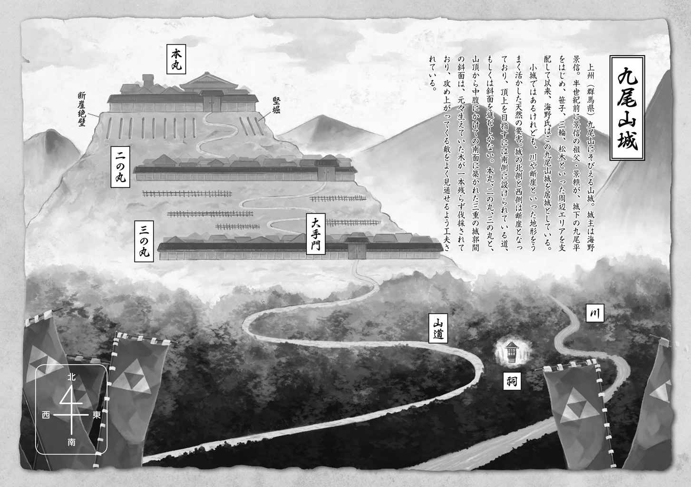
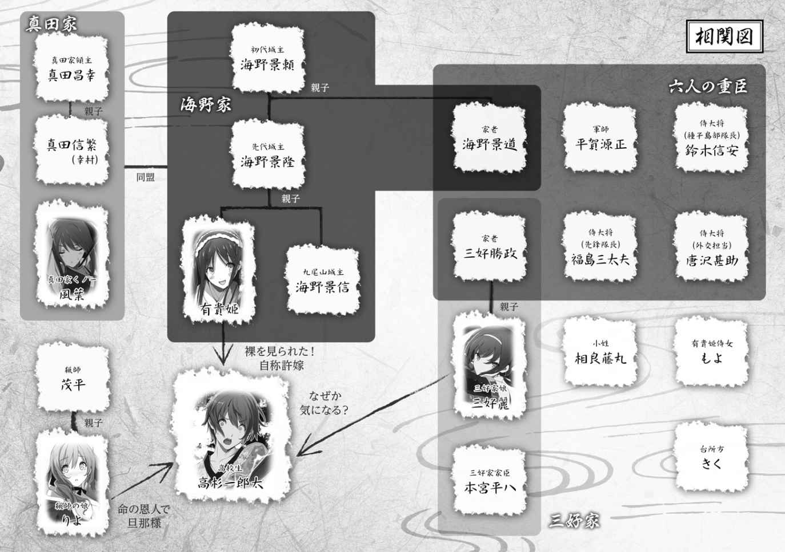

| 桜ノ杜ぶんこ 戦国ぼっち1 | |
| 瀧津孝 | |
| (2013) | |
桜ノ杜ぶんこ
戦国ぼっち
Attack of the Hojo army
瀧津 孝


★ この物語はフィクションであり、登場する団体・人物などの名称はすべて架空のものです。
一章 絶体絶命
絶体絶命って、今みたいなことを言うんだろうなぁ～......。
ぼこぼこに 殴 られて体中 痛 くて動かせないし、ここはどうやら 牢 屋 だ......。時代劇に出てくる 牢 屋 敷 みたいに、大きな部屋の中に大勢の 囚 人 がすし詰めにされて、汚い 畳 を何枚も重ねた上に彼らの長たる 牢 名 主 が......って、そんな生易しい 牢 屋 じゃない！ 小さなパソコンデスクとイスを一緒に置けるか置けないかくらいの大きさの岩のくぼみが、太い木材の 格 子 で仕切られている。
くぼみの高さは一メートル五〇センチほどだから、たぶん俺は真っ直ぐ立つこともできない。いずれにせよ今は 痛 みで立てないんだけど、横になったらなったで、エビみたいに体を曲げてひざを 抱 えるようにしないと、寝られないという狭さだ。
周りはほとんど真っ暗。 洞 窟 なのか、地下なのか。同じようなくぼみの 牢 屋 がいくつかあるように見えるのは、十数メートルほど離れた場所に石か土でできた階段があって、上部からうっすらと光が差しているからだ。おそらく光の差し込み口が外に出られる通路に違いない。
牢 屋 に閉じこめられているのは、俺だけのようだ。人の 気 配 はしない。
それにしても、このひどい臭いは何なんだ!? どうやら、大小のトイレもここで......この 牢 屋 の中でしなくちゃならないようだ。こんなとんでもない環境の中に何日も放り込まれてたら、たぶん頭がおかしくなって死んじゃうだろうな。
......しかも、俺のいるこの場所、まさかとは思うんだけど......どうやら戦国時代みたいなんだ......。
俺は、高杉 一 郎 太 。一七歳。東京の都立高校に通う二年生だ。商社勤務の親父は、一年前からお袋と一緒に駐在先のフィンランドにいて、以来ずっと日本には戻ってきていない。だから俺は親が借りてくれた日本橋人形町のマンションで一人暮らしを続けてる。
高校生の一人暮らしって、同世代の連中からは 羨 望 と 憧 れの 的 のように見えるだろうけど、それほど 羨 まれるような生活はしちゃいない。いまだに彼女だっていない。というか、同じクラスはもちろん、学校内にも、付き合いたい！ なんて思えるような女の子は 皆 無 だ。そもそも連中の 興 味 は、オシャレと、スマホと、イケメンと、部活のエースたちにしか向いてないし、戦国時代をこよなく愛する俺のことを「きもいオタク」と公言してはばからないくらいだから、関わりがないのはお互いちょうどイイんだろう。
夏休みも終わりに近付いた頃、俺は電車で群馬県の北部まで出かけた。ホントは同じ戦国ファンで、よく秋葉原の専門店へも一緒に行く原田も来ると言ってたんだけど、家の都合でどうしても行けなくなったとメールしてきたから、俺一人で行くことにしたんだ。
何で群馬なのかって？ このあたりは戦国時代に、俺が大好きな武将の一族・真田氏が一時期治めていたエリアだ。真田氏の 本 拠 地 は 隣 接 する長野県で、本城があった上田市や、江戸時代以降 子 孫 が代々栄えた長野市とかはもちろん何度も訪ねたよ。
特に真田と言えば、 幸 村 が徳川家康を 自 害 寸前にまで追い詰めた大坂の陣や、 幸 村 の父・ 昌 幸 が小勢で徳川の大軍を二度も破る奇跡を演じた上田城での戦いがファンの間ではいつもクローズアップされるんだけど、俺的に一番熱いのは群馬県北部での戦いなんだ。
ここは東の 勢 力 圏 内 のぎりぎりに位置して、敵対する北条氏とのバトルがひっきりなしに 繰 り広げられた。北条氏は関東 一 円 を支配していた超有力大名で、領土も戦力も真田氏とは 比 較 にならないくらいでかい。でも、真田氏はこの地で互角以上の勝負を続けていたんだな。これはホントにすごいことだよ。にもかかわらず、このエリアでの真田氏の活躍は一般にはもちろん、戦国フリークの間でもあまり知られていない。こうなると、 俄 然 知識欲がわき上がってくる。
で、真田氏の群馬における支城だった 沼 田 城 趾 、 名胡桃 城 趾 、 岩 櫃 城 趾 ......このあたりは大抵一度は行ってみた。でも最近、インターネットで群馬の 郷 土 資料を読んでいて、気になる 城 趾 を見つけたんだ。江戸時代に入るずっと以前に 廃 城 となってて、城の名前すらきちんと伝わってない。地元では 九 尾 山 と呼ばれている場所に 築 かれていたという城、真田氏の支城もしくは国境線の城として北条軍を何度も 退 けたという城の 跡 ......ここをどうしても見たくなったんだ。
ＪＲ東京駅から特急草津号に乗って、上越線・ 吾 妻 線経由で 渋 川 駅へ。Ｔシャツにジーパン、デイパックを肩から 提 げた 軽 装 でバスを乗り 継 ぎ、山間部の 麓 にある 九 尾 山 までたどり着いたのは昼前だった。山というよりは、丘といった方が近い。城ではなく、もっと小規模な 砦 として使われていたのかもしれない。しかし、東側には幅二〇メートルほどの川が流れていて自然の堀になってるし、北と西は 断 崖 。南側からしか山頂を目指せない。 陣 地 戦における防御セオリーの 要 件 がきちんと満たされていて、これはこれで立派な 要 塞 だ。
山 腹 に堀や 曲 輪 の後が残っているかどうか、かなり目を 凝 らしながら登ったから、山頂までたどり着くのに相当時間がかかった。ちなみに 曲 輪 っていうのは、城の防御 陣 地 で、戦国時代の城は複数の 曲 輪 で構成されてるんだ。でもここには、 城 跡 らしい 痕 跡 はゼロ。石垣の 遺 構 はもちろん、尾根を仕切るように 掘 削 した堀の 跡 さえ見つけられない。ちょっと期待はずれだったかな。
でも、 本 丸 があった山頂からの 眺 めは想像以上に美しかった。東京の都会と比べれば、このあたりは 随 分 田舎 で、 麓 から先は緑色の畑が大きく広がっている。そんな緑の 絨 毯 の中に、住宅や小規模な中低層ビルがいくつも点在し、大小の道路が交差して不規則な境界を 描 いていた。 眼 下 の景色をぼんやり 眺 めているうちに、がっかり気分はもうどこかに吹き飛んじゃって、透き通る爽やかな風が体の中に染み込んでくるような、うっとりとする心地になったんだ。
九 尾 山 城のかつての 主 たちは、戦国時代という食うか食われるかの日々の中、領民の生活の 営 みを見下ろすこの場所から、どんな思いで城下を 眺 めていたんだろう......。小さなエリアとはいえ、城を持った領主としての 高 揚 感だろうか......領内を治めるトップとしての責任感だろうか......下々の民を山頂から見渡す優越感だろうか......それとも、絶えず他国からの侵略に 怯 える恐怖感だったんだろうか......。
グ～～～ッ。
物思いに 耽 っていると、急に腹の虫がなった。少しでも早く着きたくて、 脇 目 も振らず 九 尾 山 を目指したから、朝にビスケットとパックの野菜ミックスジュースを胃の中に放り込んでから、ペットボトルの水以外はまだ何にも口にしていない。スマホを見ると、もう三時を過ぎていた。そりゃ腹も減るはずだ。俺はデイパックの中から弁当箱を取り出した。コンビニの弁当じゃないよ。早起きして自分で作った弁当だ。と言っても、そんなに 凝 った中身でもなく、豚肉とタマネギとピーマンを 炒 めてご飯に乗せただけの〝 のっけ弁当〟 。作るのは簡単だけど、これが案外 美 味 いんだ。
一人暮らしを始めて以来、飯は極力 自 炊 するようにしてる。料理するのって、嫌いじゃないし、何よりコンビニで弁当買ったり、ファミレスで外食するより、ずっと経済的で腹も一杯になるんだから。親からは毎月生活費が振り込まれるんだけど、浮かせたお金は全部小遣いにして趣味に 注 ぎ込めるからね。
まあそんな訳で、学校にも晩飯の残り物やあり合わせの食材を詰めた弁当を持って行くようにしてるんだけど、それを見た校内のバカ女子どもは俺のことを「きもいオタク」と呼ぶだけに 飽 き 足 らず、「草食系弁当男子」なんて陰口も 叩 いている。
弁当男子と呼ばれることに 異 論 はないけど、何でそれに「草食系」がつくのかはよくわからん。
そもそも草食系は、恋愛に積極的じゃなく、傷ついたり傷つけたりすることが苦手な人のことを言うようだけど、俺は女の子にだって 滅 茶 苦 茶 興 味 あるし、まだ誰とも付き合ったことはないんだけど、もし目の前に理想の女の子が現れたら、いつでも〝 積極的な行動〟 に出てやるさ。今そんな風になれないのは、校内にタイプの女の子が存在しないからだってことを、やつらはわかっちゃいないんだ。
空 きっ腹だから余計に 美 味 く感じられた弁当をかっ込んだ俺は、そろそろ山を下りることにした。ただ、せっかくここまで来たのに何だか 悔 しいというか、 後 ろ 髪 を引かれるというか、そんな思いが再び頭をもたげてきた。それで下山する途中、道から少し 外 れて、もっと探検してやろうという気になったんだ。日はかなり 傾 いて、 綺 麗 な夕焼けが空を染めていたけど、帰りは下り坂だし、もう 中 腹 の少し下まで来ていたし、ちょっとゆっくりしても日暮れまでには 麓 に下りられると思ったしね。
ちょうど山道の斜面が急に 緩 やかになり、雑木のまばらな一帯に出ていたから、思い切って分け入ってみた。三〇分ほどそのまま進んだんだけど、やっぱり城の 遺 構 らしき 跡 は全然 見 当 たらない。いよいよ 諦 めて戻ろうと思った時、数メートル先に古くて小さな 祠 のようなものが目に入った。高さ一メートルくらいの木製で、屋根が三角。ただし、屋根も戸も壁も 朽 ち果てて穴だらけだ。たぶん、中には神様か仏様が 祀 られてるんだろうけど、この場所からじゃよくわからない。でも目にとまったのは、正確には 祠 そのものじゃなく、その 脇 の草むらだった。
周囲は大きな樹木の枝葉に太陽の光が 遮 られて薄暗い。なのにその草むらの一部分が、薄い青色に光っている。大量の蛍？ まさか......。地面に蛍光塗料がばらまかれてる？ いやいや、そんな感じの色じゃなく、ホントに発光してる。怖い 物 見 たさで、恐る恐る近付いてみた。それは、直径一メートルほどの光の 渦 で、地面から二〇センチくらいの高さで浮いてる。
夢じゃない。近寄っちゃダメだ、これは何だかヤバそうだって、直感がした。頭じゃわかってるんだけど、体が 何 故 だか前へ、前へと進んでいく。それでも何だかおかしな防衛本能で、貴重品を入れたデイパックだけは最初に光を見つけた場所に置いていた。 渦 のすぐ横に立ち、上からのぞき込むように顔を出した 途 端 、ものすごく強い光に包まれて、俺は気を失ってしまったんだ。
気がつくと、俺は例の 祠 の 隣 で寝転がっていた。日はもうほとんど暮れかかっていて、あたりは薄暗い。ぼぉーっとした頭の中で、どうしてこんな場所で寝てるのか考えてるうち、少しずつ思い出してきた。そうだ、 祠 の 脇 にあったあの光の 渦 は？......みると、消えている。見回しても、どこにも 見 当 たらない。
なんて不思議な体験をしたんだろう......。頭はまだふらふらしてたんだけど、こんな山の中で野宿するのはイヤだ。下山しようと立ち上がった。その時、ふと 傍 らの 祠 に目をやったんだ。何だか妙にしっくりしない感じがしたからだけど、やっぱり変だ。古びてぼろぼろになってた 祠 が、つい最近建てられたばかりみたいにすっかり新しくなってる。虫食いの小さな穴すらあいてない。最初に見たあのぼろぼろの 祠 は、俺の目の 錯 覚 だったんだろうか......いや、そんなはずはない。今にも倒れそうだった古びた 祠 の様子は、まだ 記 憶 にしっかりと残っている。
納得はいかなかったけど、ここで 祠 の 謎 をずっと考え込んでる訳にもいかないし、俺は少し離れた場所に置いたはずのデイパックを探した。ところが、そのデイパックがどこにもない。まさか、気を失ってる間に、誰かに盗まれたんだろうか。中には財布やスマホやデジカメといった 超 必 需 品 が入っている。草むらをかき分けて必死に探したけど、見つからない。最悪だ......。帰りの交通費、交番だったら貸してくれるだろうか......その前に、スマホがないから交番の場所も 検 索 できないぞ......。そんなことを考えながら、山道に戻ろうとふらふら歩き出した直後、後ろから大きな声がした。
「何者じゃ、止まれ！」
振り返ると、そこに数人の男たちが立っている。真っ暗じゃないから、その程度は見える。でもその姿は、普通じゃない。戦国時代の兵士にそっくりだ。円すい型の 陣 笠 、剣道で身に付けるような 胴 に、スカート状の 草 摺 が付いたよろい、手には長い槍まで...... 足 軽 の格好じゃないか。映画かドラマのロケ......。きっと撮影の 邪 魔 をしてしまったんだと思い込んだ俺は、笑顔で 挨 拶 した。
「あっ、ひょっとして俺、撮影現場に入っちゃいました？ すんません」
しかし、その肝心の撮影機材とか、スタッフとかの姿は一切見えない。もしかしたら、彼らがデイパックを拾ってくれてるかもしれない。そう思って両手をデイパックの大きさに広げ「これくらいのブルーのデイパック、このあたりに落ちてませんでしたか？」と俺が言い終わらないうちに、近付いてきた先頭の男が、持っていた槍の 石 突 （ 穂 先 と反対の端）でいきなり腹を思いっ切り突いてきた。うぐっ！ びっくり、どころか一瞬息ができなくなって、うずくまったところを、やつらに取り押さえられた。
「お前は誰だ？」と聞かれて、「東京から来た高杉 一 郎 太 」だと答えて 殴 られ。「北条の手の者か？」と聞かれて、「おたくら、ちょっとおかしいんじゃないの」と言っては 殴 られ。 尋 ねられる内容が全く理解できず、「知らない」「分からない」と口を開く 度 に、もうイヤと言うほど体のあちこちを 殴 られて、とうとう俺は気が遠くなって倒れてしまった。
男たちは俺を 繩 で 縛 り上げたうえ、何人かで 担 いで歩き出したんだけど、途中うっすらと意識が戻り、連れられていく光景に目を 疑 った。さっきまで何もなかった山道から頂上にかけて、 山 腹 が何か所も 平 坦 に 削 られて 土 塁 が 築 かれている。 土 塁 の周囲には 板 塀 や木の 柵 が並び、あちこちに 物 見 櫓 が建てられている。そして、俺を 襲 った男たちと同じ、戦国時代の 足 軽 の姿をした連中が、土や木を運びながら 右 往 左 往 動き回っているんだ。彼らに大声でわめくようにあれこれ指示しているひげ面の男は、 鎧 兜 を付けた武士。これは、俺が持ってる戦国時代の歴史書やムック本で何度も目にしてきた山城の風景だ。
頂上付近に着いた時、山の 麓 に広がる平野が目に入った。これも、俺が 祠 の横で気を失う前にみた風景と全然違う。畑、というより、荒れ地や林の占める割合の方がかなりが大きい。その中に点在していた中低層ビルや住居、車が行き交う道路は、 跡 形 もなく消えていた。そして、それらの代わりにあったのは、まばらに点在する小さな木造 家 屋 。ここは、俺の住んでた世界じゃない......
でも意識が戻ったのはほんの数分で、俺の頭の中には再び白いモヤがかかったようになって、そのまま前後不覚に 陥 ってしまったんだ。
光の差す方向から足音が近付いてきた。影は二人。階段を下りてくる。大きいやつと小さいやつ。昼間見た 足 軽 ではなく、どちらも着物を着ている。大きい方が、たいまつを持って前を歩いてくる。俺はかがんだ状態で 格 子 を両手でつかみ、その 隙 間 に顔を押しつけてずっとのぞいてたんだけど、背の高い方の男は目の前で止まり、いきなり俺の鼻先にたいまつを突きつけやがった。びっくりした俺は、のけ 反 った 拍 子 にすぐ後ろの壁で頭を打ち付け、あまりの 痛 さに「う～～っ」とうめいた。
「大事ないか？」
小さい方のやつが俺に向かって言った......が、それは女の声だ。しかもかなり若い。すかさず、大きい方の男が、
「 麗 さま、かような 得 体 の知れぬ者に、口をきいてはならぬとお父上からあれほど！」
「かたいことを申すな 平 八 ！ この者にわたしが飯を与えることを許して下されたのは、そもそも父上じゃ。一言や二言、 構 うまい」
「無用の情にござりまする。敵の 間 者 （スパイ）なれば、 即 刻 切り捨てねばなりませぬ」
「万が一、敵ではなかった場合、なんとする。罪もない者を痛めつけ、このような 牢 に閉じこめておるとしたら、 由 々 しきことぞ」
「平時ではござらぬ。今や北条の大軍が我が城を囲まんとする非常時に、三の丸のあたりでこそこそと 怪 しげな振る舞いをしておったのですぞ。 間 者 にあらずして、何者でございますか！」
「 間 者 じゃと 自 ら申してはおるまい」
「味方とも言っておりませぬ。しかも、このなりをご覧あれ。かようなふざけた着物を身にまとい、 怪 しくない訳がございませぬ」
「 遠 国 の 猿 楽 師 か、 田 楽 師 か......、いや京の都では、我らが思いも寄らぬ 南 蛮 や 紅 毛 風の派手な身なりをした〝 かぶき者〟 という連中が横行しているとのこと。そやつらの仲間かもしれぬ」
「京、大坂のかぶき者は、このあたりの 野 武 士 同様、 乱 暴 狼 藉 の振る舞いが目立ち、時には罪なき民を傷つけ、 家 屋 の金品を奪うとも聞き及んでおります。 左 様 なやつばらの一味ならば、やはり捨て置けませぬぞ」
「 平 八 の言うような 悪 人 面 をしているようには見えぬが」
「人は見かけではわかりませぬ」
「お前は初めから 悪 人 と決めつけておるようだが、この者を連れてきてから、ろくに調べもせず丸一日ここに放っておいたのであろう？」
「そう言われましても、こやつを 牢 に放り込んだ直後に、北条方の 物 見 （偵察者）らしき一団が城下近くに現れたという 報 せが届き、我ら一斉に 合 戦 の構えに入りましたゆえ......」
そうか......俺はあれから丸一日もこの 牢 屋 に放り込まれていたんだ。そう言われてみれば、 喉 はカラカラだし、無性に腹が減ってきた。
「言い訳はもうよい」
麗 と呼ばれた若い女は、俺に顔を向けた。かがり火に 照 らされた 麗 の顔を見て、俺はまたまたドキッとなった。小顔で、整った顔立ち。俺の知ってる芸能界のアイドルたちより、ずっと可愛い、というか美人だ。ただ、目がほんの少しつり上がっているせいか、性格の強そうな印象も受ける。とはいえ、年はどう見てもまだ一〇代。たぶん俺と同い年くらい。顔つきには少女らしいあどけなさも残っていて、きつそうな印象が 随 分 和 らげられている。黒く長い髪は後ろで 束 ねられていた。
横に突っ立っている男は......!? ちょんまげ？ 頭にまげを 結 っている！ まさか、そんなこと......それにこいつらがさっきから話してる内容って......。
麗 は、持っていた木の 椀 と 箸 を 格 子 の間から差し入れた。 椀 の中には、茶色のドロッとした液体が入っている。
「これは、お 粥 ......？」
と思わずつぶやいた俺に、 麗 はすぐに反応した。
「 粟 がゆだ。お前、食べたことないのか？」
「う、うん......」
粟 って、確か、麦とか 稗 とかの 穀 物 の一種だ。俺は生まれてこの方、そんな物を食べたことはなかったけど、戦国時代には十分な量の米がなかったから、庶民は米に麦や 粟 などを混ぜて 炊 いたり、 雑 炊 や 粥 にしたりしていたことを本で読んだことがある。
恐る恐る、 椀 を手に取り、一口すすってみた......想像していたよりもずっと 美 味 い！ 自然の優しい甘みが、のどを通りすぎていく。というか、腹と背中がくっつきそうな状態なんだから、何を食べても 美 味 いと感じただろう。俺は 箸 を使ってがっつくように 粟 がゆを腹に流し込んだ。
そんな俺を、 麗 は 哀 れみの 眼 差 しで、
「 粟 がゆさえ食べられぬ暮らしとは。芸を見せながら諸国を回るのは、並大抵の苦労ではあるまい」
どうも俺はすっかり、諸国を 遊 歴 する大道芸人か何かみたいに思われてるようだ。
「 粟 がゆは食べたことないけど、普段は米のご飯食ってるよ......パンはあんまり好きじゃないから......」
「毎日、米の飯じゃと？」
「ああ、白いご飯だよ」
平 八 と呼ばれた男が割って入った。
「この大ぼら吹きめが！ ぬかを取り除いた白い飯など、我が殿ですら 召 し上がっておられぬわ！ 麗 さま、やはりこやつは 怪 しゅうござる。気を許されてはなりませぬ」
平 八 は、 麗 の手を取って去ろうとしたが、彼女はそれを振り切り、俺に 尋 ねた。
「お前は、この 九 尾 山 のお城の敵なのか？」
俺は反射的に叫んだ。
「違う！ 敵なんかじゃない！」
「ならば、どこの誰で、 何 故 そのような 奇 天 烈 ななりをしておるのじゃ？」
平 八 の 詰 問 に、俺の言葉は詰まった。ここはよくよく考えて返事をしなきゃ、とんでもない目にあいそうだ。黙り込んだ俺をにらみつけ、 平 八 は 麗 の手を引いて 牢 獄 から出て行った。
そう、ここは俺がさっきまで暮らしてた世界じゃない。ただし、今いる場所は、俺が電車やバスを乗り継いでやってきた、 九 尾 山 なんだ。 矛 盾 してる。でも、そうとしか考えられない。見た目は 随 分 変わっていたけどおそらく同じものだと思える、あの 祠 ...... 山 腹 の形状......頂上から見た平野の風景......。
麗 という娘は、ここを確かに「 九 尾 山 のお城」と言っていた。そして、 平 八 と呼ばれた男は、敵が「北条」だと。関東の北条氏と敵対している 九 尾 山 城だとしたら、俺の調べた資料と同じだ。見てきた全ての物事を総合すると、この世界は、日本の戦国時代としか思えない......。であれば、やはりここは真田氏の 勢 力 圏 下 。俺は現代から戦国時代の 上 州 （群馬県）にタイムスリップしてしまったのか。
......いやいや、これだけの情報で戦国時代と決めつける訳にはいかない。かといって夢でもない。さっき岩壁にぶつけた後頭部は、まだズキズキと 痛 む。意識だって、もうバリバリはっきりしてる。
それじゃあ他に考えられるのは......日本の戦国時代にとてもよく似た別の世界？ ＳＦ用語で言うパラレルワールドというやつ？ 子供の頃に見たアニメやコミックで、そんな設定の物語があった。俺たちが生活している世界のほかに、時空の異なる世界が数え切れないほど存在しているという考え方だ。それだとすれば、あの光の 渦 は並行世界に通じる入口で、俺はたまたま戦国時代風の世界に飛び込んできたということになるんだけど......。
どちらにしても、今のこのピンチを切り抜けなくちゃ。俺の頭の中にある知識どおりの世界なら、この 九 尾 山 城は真田氏の味方で、北条氏が敵になる。まずはこの城の連中に、俺が敵ではないことをわかってもらわないといけない。
俺が文明の進んだ全く違う世界から来た人間だということを正直に話すか......いや、それを証明できる品物は全部、なくしたデイパックの中だ。
なら、あくまでこの世界の住人であるということにして、北条の味方ではないと主張するか......この城の持ち主が、俺の言葉だけで納得してくれるような飛び抜けて物わかりの良いやつなら助かるんだけど......そんな可能性は限りなく低いだろうな......。
あれこれとしばらく考えているうち、出入り口から数人の兵士がやってきた。
一人が 牢 の鍵を開け、俺に言った。
「出ろ」
牢 から出るように言われたものの、解放された訳じゃない。両手を 縛 られ、引っ立てられるようにして通路の階段を上がると、そこはもう野外だった。まぶしい太陽の光に目を細めながら周囲を見ると、捕まった場所と同じ山城の風景だ。 牢 獄 は、山の斜面をくり抜いて作られていた。すぐ上に山頂の 曲 輪 、つまり 本 丸 があり、下には段々畑みたいにいくつかの 曲 輪 、たぶん二の丸、三の丸と呼ばれる防御 陣 地 が見える。
俺は、坂道を上がって 本 丸 の中に入り、五つくらいある木造施設の中でも一番大きくて立派な 屋 敷 の前に連れて行かれた。立派と言っても、 豪 邸 とかそういうのじゃなく、屋根は 板 葺 きで、風で飛ばされないよう上に大きな石がいくつも乗せられている。今見える建物の中では、一番ましな外観という程度のものだ。その 屋 敷 を回り込むようにして中庭、というか簡素な垣でただ一定の土地を区切っただけの場所へ入り、土の地面に座らされたんだ。
目の前には 屋 敷 の 広 縁 、さらにその向こうに広間があり、鎧を着用して、頭にまげを 結 った武将たちが俺をにらみ付けるように見下ろしている。
広間の中央にある上段に座っているのが、城主だろう。俺より四つか、五つくらい年上かな。どっちにしろ若くて、ヒョロッとした 風 貌 だ。その後ろに、俺よりも少しだけ若い、一四、五歳の美少年が、城主の物であろう立派な 大 刀 を 捧 げて、 控 えている。これが 小 姓 ？ 成人を示す儀式である 元 服 をまだ済ましていないことは、前髪の残った子供の髪型のままであることからすぐにわかる。
両側に三人ずついるのが 重 臣 たちか。どいつも城主よりずっと年を食ってて、三〇代以上のがっちりした体格だ。
城主らしいのが、手入れの行き届いた 一 際 立派なヒゲをたくわえている 重 臣 に聞いた。すぐ 隣 に座ってるんだから、重臣の中でもおそらくかなり偉い人なんだろう。
「こやつが、北条の 間 者 か？」
「まだ、しかとはわかりかねますが、北条の軍勢は、明日にもこの城を取り囲みましょう。万が一 間 者 ならば、北条勢の数や 陣 立 て（軍の配置や編成）はよう存じておるはず。これを聞き出せれば、真田様が援軍に来てくださるまでの間、城を持ち 堪 えるだけでなく、敵の急所を攻め立て、大打撃を与えることも案外難しゅうはないかもしれませぬ」
真田の援軍！ やっぱりそうだ！ ここが過去なのか、パラレルワールドなのかは別として、俺の知ってる戦国時代の知識が通用する世界ではありそうだ。
この会話を受けて、城主から一番遠い、俺から見たら一番近くにいる、 無 精 ヒゲがそのまま 頬 やあごにも伸びたような、 粗 野 で 不 潔 な感じの太った武将がこっちに向かって怒鳴りつけた。
「さあ、知っていることを全て申せ！ 北条の軍勢はいかほどで、 参 陣 しておる将は誰か？ ありていに 白 状 すれば、命だけは助けてつかわす」
とにかく、北条のスパイじゃないということだけでも、相手にわからせなければ。
「 白 状 するもなにも、俺は北条の者じゃないし、軍勢のことだって何にもわかりません」
「 偽 りを申すな！ ならば、なにゆえこの城のまわりで身を 潜 めておった。何を探っておったのだ！」
「いや、探っていたのじゃなくて、迷ったというか......」
「お前を捕らえたのは、三の丸のすぐ側じゃ。 左 様 な場所で、迷う者がおるか！」
「だから、このあたりの地理がわからなくてですね」
「他国の者であることは認めるのだな」
「それは、まあ......」
「他国とは、北条のいる小田原であろう！」
「そんなバカな！」
「では、 何 処 からまいった？」
「それは......」
ここで俺は言葉に詰まってしまった。思い切って二一世紀の東京から来た人間だと言ってしまうにしても、それを証明する物は何一つない。ならば、この時代のどこかの土地の人間だと主張するか。しかし、戦国時代の国は、群馬県を 上野 、長野県を 信濃 と呼んでいたことくらいは知ってるけど、その中の細かな土地の名前まではわからない。他国の者だと言っても、その場所のことを詳しく 尋 ねられれば、お手上げだ。
「少々 痛 い目にあわせねば、わからぬようじゃな」
太っちょの武将が、俺の後ろに 控 えている兵士に 目 配 せした。振り向くと、太いこん棒を持った一人が近付いてくる。あんなこん棒で 殴 られたら、一撃で 卒 倒 しちゃうぞ！ どうやってここを乗り切ったら......武将たちに向き直ろうとした時、中庭の 生 け 垣 に目がとまった。その陰から、女性が顔だけのぞかせて俺を見ている。あれは、 麗 という名前の呼ばれていた娘......？ 娘と目が合い、ちょっとの間ボーッとした俺に、再び例の怒鳴り声が浴びせられ、我に返った。
「そやつの着ている妙な着物を全て 剥 いでしまえ！」
俺の両側にいた兵士の一人が「はっ」と答え、 抵 抗 する俺を押さえつけながら、あっという 間 にＴシャツを脱がす。もう一人がジーパンの 裾 に手をかけた。でも、ジーパンの方は、ベルトを外してジッパーを下ろす 要 領 がわからないから、力任せに引っ張っても全くずり下ろすことができない。あんまり力任せに引っ張るから、ベルトが腰に食い込んだ。
「 痛 い、 痛 い！ やめろ！」
尻 餅 をついたような格好で叫ぶ俺の両腕は、兵士に背中からがっしりとつかまれ、全く 抵 抗 できない。
ジーパンの 裾 を引っ張っていた兵士は、やがて無理矢理脱がすことを 諦 め、腰に差した 短 刀 を抜いて、ジーパンを切り裂こうとした。さすがにそれはやめてもらいたい。あんまりファッションにはこだわらない俺だけど、今はいてるジーパンは、特別な場所へのお出かけ用にしてるヴィンテージもののお気に入りだ。
俺は 無 我 夢 中 で足をジタバタさせた。すると、勢いよく 蹴 り上げた右足が、 覆 い 被 さろうとしてきた兵士の 股 間 に見事命中した。 草 摺 はスカート状に腰を 覆 っているだけの戦闘具だから、その下には 股 引 とフンドシしか身につけていない。 股 の真下からの攻撃は無防備になっている。
「うぉっ！」
兵士はもんどり打って倒れ、 股 間 を両手で押さえて 悶 絶 している。
そのとてつもない 痛 さは男である俺にもよくわかるから気の毒ではあるんだけど、今はそんなことを言っていられない。
すると、これを見た太っちょの武将が「 小 癪 な！」と 激 怒 し、横に置いていた 大 刀 をつかんで中庭に飛び降りてきた。
これはちょっとヤバそうだ。太っちょは顔を 紅 潮 させ、ただならぬ 殺 気 を感じさせながら近付いてくる。
「福島殿、落ち着かれよ！ 敵のことを聞き出すのが先じゃ！」
立派なヒゲの武将が制止したんだけど、太っちょは聞く耳を持たないと言わんばかりに怒鳴り返した。
「お言葉ではござるが、かような 若 造 が、我らにとって有益な敵の 内 情 を知っておるとは思えませぬ。しかも、先ほどからしらを切り通し、大人しく 白 状 する 素 振 りすら見せぬ 始 末 。そのうえ、この 期 に及んでもまだ 抵 抗 し、大事な味方の兵に手傷を 負 わせるとは言語道断！ 即 刻 首をはね、城下にさらして北条への見せしめにすべきでござる！」
太っちょの 一 喝 で、 重 臣 たちは黙り込んだ。もう俺を守ってくれる人間は誰もいない。自分の身は自分で守らないといけないんだけど、この危機的状況を 逃 れることなんて、一体できるんだろうか。
ゆっくりと俺に近付いてきた太っちょは、左手に持っていた 大 刀 を腰に差し、俺を後ろから押さえつけていた兵士に声をかけた。
「 邪 魔 だ。そこから離れろ」
兵士は言われたとおり、俺を離し、 慌 ててその場から後ずさりした。
この太っちょの野郎、本気で俺を斬るつもりだ。 尻 餅 をついたままだった俺は、気力を振り絞ってよろよろと立ち上がった。太っちょとの 距 離 は、二、三メートルくらいだろうか。 大 刀 は、長いモノなら 柄 を含めて一メートル近くはある。前に踏み込んで刀を抜かれたら、バッサリ斬られてもおかしくない 距 離 だ。
と、太っちょの右手が動くのを視界がとらえた。俺が後ろに飛び 退 くのと、太っちょが刀を抜き付けに斬り上げるのはほとんど同時だった。
ああっ！ 周りの全員が息をのんだ。
その瞬間はまるでコマ落としのようだった。太っちょが抜いた刀はとても速く、俺の腹を 薙 いだ。刀が当たった感触も、そのバサッという音も確かだった。こんな所で俺は死んでしまうのか......。死ぬ時っていうのは、こんなにあっけないものなんだ......。空中で、そんな思いが頭の中を高速で通り過ぎた。腹に受けたダメージのせいなのか、腰が抜けてしまったからなのか、着地した時に足を踏ん張ることができず、俺は目を閉じたまま、仰向けに倒れた。
そして、起き上がることもできずに俺はこのまま......でも、斬られた腹のあたりだけど、全然 痛 くない。剣の達人に斬られた時は 痛 みを感じないというけど、それなのか？
ん？ どうも違うような気がする。目を開けて上半身を起こすと、スパッと真っ二つに斬られたのは、俺のジーパンの革製バンドだった。体には傷一つついていない。バンドだけでなく、ジーパンのフロントボタンも一緒に斬り飛ばされ、地面に倒れた 拍 子 にジーパンが腰からずれ下がり、パンツが少し見えるような態勢で大の字になっていた。
太っちょは、まさか 渾 身 の一太刀を外すとは夢にも思わなかったらしく、瞬間 戸 惑 ったような表情を見せたが、すぐに気を取り直して刀を上段に構えた。
「この死に損ないが！」
太っちょが刀を俺に向かって振り下ろそうとした時、 生 け 垣 から大きく透き通った女性の声が響いた。
「真田様の 六 文 銭 ！」
太っちょは刀を止め、 戸 惑 いながら 生 け 垣 を見た。
生 け 垣 は、俺が大の字になっている場所から数メートルも離れていなかった。そこからあの娘、 麗 が飛び出すように姿を現し、俺をじっと見下ろしている。
広間にいた城主や他の 重 臣 たちも、何が起こったのかすぐに理解できず、次々と中庭に降りてきた。その中の立派なヒゲの武将が、 麗 を見て目をむいた。
「 麗 、そなたいつからこの場所に？」
「それよりも父上、この方のふんどしをとくとご覧あれ」
ふんどし？......って、まさか俺のパンツのこと？ 下半身に目をやると、確かにジーパンが腰から少しずれ落ちた分、黒のパンツの上部が、そこにプリントされた 柄 の一部と一緒に見える。
麗 はつかつかと俺に近寄ってきた。
「あなたのふんどしを、我らにしかとお見せください！」
真剣な表情で 語 気 鋭 く言われたもんだから、俺はその雰囲気に飲まれて彼女の言うまま寝転がった状態でジーパンを 膝 までずらし、パンツを見えるようにした。すると、俺の周りに集まってきた 重 臣 たちが「おおっ」と声をあげた。俺たちを取り巻いている兵士たちも「何事？」と恐る恐る近付いてきた。彼らの視線の先は......俺の 股 間 に真っ直ぐ 注 がれている。
黒地に金でプリントされた真田家の 家 紋 ・ 六 文 銭 。 三 途 の川の 渡 し 賃 とされる六枚の銭貨を三つ二列に並べて図案化した、戦国ファンなら知らぬ者もない 家 紋 だ。その下には、同じく金で真田 昌 幸 、 幸 村 親子の 花 押 ──つまり公式サイン。そうだ、俺は今日の 九 尾 山 城 趾 散 策 のために、 一 張 羅 の戦国パンツをはいてきたんだ！ 医療用の包帯生地をベースにした特殊素材に、 家 紋 と 花 押 が大きく印刷されたこの高級パンツは、大枚一万円をはたいて通販で買い、今日が身に付けて外出する初めての日だった。
ヒゲの武将が俺の 股 間 、いやパンツをまじまじと 眺 めた。
「真田様の 六 文 銭 。しかも、これはまさしく 昌 幸 様の 花 押 、もう一つの 花 押 は見覚えがないが......」
それを聞いた城主は、 驚 がくの表情を見せた。
「 勝 政 、それはまことか？」
「はっ、 昌 幸 様からのお手紙は、何度も 拝 見 しております。これは 正 真 正 銘 間違いなく、 昌 幸 様の手かと」
「なんと、この者は真田様のご家中か！」
花 押 は本人が公式文書に記した代表的なものをそのままプリントしてるから、当然本物と全く同じだ。
「しかし、このふんどしは綿でも麻でもござらぬ。 家 紋 と 花 押 も、一体何で書かれているのか......」
勝 政 と呼ばれたヒゲの武将は、しゃがみ込んで俺のパンツをなで回したり、つまんだりしている。気持ち悪いことこの上ないんだけど、思いも寄らない成り行きを少し黙って見ておこうと思った。
太っちょも、想定外の事態に 慌 てて刀を下ろした。
「ならば 何 故 、そのように初めから我らに申し開きをせぬか？」
イライラした様子で俺をにらみ付ける太っちょに向かって、 勝 政 はなだめるように、
「この 御 仁 は、もしや真田様のお 目 付 ではなかろうか」
「なんと言われる！ 目 付 と言えば、自国はもとより敵地にも入り、味方や敵の内情をつぶさに見極め、主君にお伝えする重要なお役目。かような 若 造 に務まるはずが......」
「真田 昌 幸 様は、有能と見れば、 門 閥 にかかわらず、百姓、商人といえども家臣に取り立て、大事なお役にも 就 かせるという。真田家にあっては、 年 若 の 目 付 がいたとしても、おかしくはあるまい」
「では、 何 故 そのことを我らに」
「他国の様子を 密 かに探る 目 付 とあらば、たとえ 盟 約 を交わした我ら 海 野 家の者にも、 自 らの身分を明かすわけにはいくまい」
「むむぅ......」
俺が真田家の 目 付 ？......何だか話が妙な方向へどんどん進んでいく。
「しかもこの 御 仁 がただの家臣でないことは、はいておられるふんどしからも明らか。この見事な織物、さらには 金 泥 か 金 粉 でお書きになっているのか、金色に輝く 昌 幸 様の 花 押 。これほどのふんどしを 拝 領 されているからには、 目 付 以上の役に 就 く 上 士 と見るのが 至 当 」
勝 政 は、俺の 股 間 に再び目を向けた。
「 昌 幸 様の 花 押 に間違いはないが、その 隣 、左側に書かれている 花 押 はどなたのものでござるか？」
「ああ、これは真田ゆき......！」
とまで言って俺は大事なことを思いだした。もう一つの 花 押 は真田 幸 村 のものだけど、 幸 村 という名前は後世なってから軍記物で付けられた可能性が高くて、きちんとした資料に記されている名前は 信 繁 だ。
「真田ゆき？」
「いえいえ、ゆきじゃなくて......ゆうき......勇気です！ その勇気と 知 謀 は親 譲 りと称えられている 昌 幸 様のご子息、 信 繁 様の 花 押 です」
「おお、あの高名な 信 繁 様の。それは初めて 拝 見 した」
ホッと一息ついた俺に、今度は城主が 甲 高 い声で呼びかけた。
「あいわかった！ 真田様のお 目 付 にわざわざ来てもろうたとは何とも心強い。たとえ北条の大軍に我が城囲まれようとも、すぐさま真田様が援軍を寄こしてくださろう。その 方 、名は何と申す？」
「あっ、はい、高杉 一 郎 太 ......です......」
「うむ。わしが、この 九 尾 山 城の城主、 海 野 景信 である。手荒なマネをしてすまなんだ。許せ」
「い、いえ......」
勝負パンツはいてきて、ホントに良かったぁ～！ 今は、この話の流れにそのまま乗るしかない。とにかく何だか危険そうなこの城から早く出してもらって、どこか安全な場所でこれからどうするかじっくり考えなきゃ......と思っていたら、外から兵士が転がるように走り込んできた。
「ご 注 進 ！ 北条の軍勢が 箕 輪 城を出て、こちらに向かっております！ その数およそ八千！ 先 鋒 はすでに城下の 一 里 先に現れました！」
その場にいた武将たちの顔が一斉にこわばった。
「はっせん！......」
とつぶやいたきり黙り込んでしまった 景信 に、武将団の中では一番年をくってそうな、 白 髪 であごに長い白ひげをたくわえた武将が聞き取りにくいしわがれ声で話しかけた。
「殿、思うていたより敵の数は少々多いが、迎え撃つ手に変わりはござらぬ。今すぐ、 評 定 （会議）を」
「よし。皆、集まってくれ」
武将たちが広間に戻って座り直す中、 勝 政 は 景信 と何やらひそひそと話した後、 尻 餅 をついたままの俺の手を取って立ち上がらせてくれた。
「高杉殿、まずは体を休めてくだされ。 土 牢 は 辛 うござったろう」
「ありがとうございます」
と、礼は言ったものの、こんな場所にいつまでものんびりしている訳にはいかない。しかも、北条軍が攻めてくるなんて、とんでもない事態だ。すぐにでも逃げ出さなきゃ。
「あ、あの......お気遣いはありがたいのですが、俺は城を出て、敵の様子を見に行かなければ......」
「もうすぐこの城は敵に囲まれよう。今出て行くのは危ない。大事な使命を帯びておられるのはお察しするが、こうなったからには、我らと共に 籠 城 してくだされ」
「ええっ!? 」
「それに体中泥だらけじゃ。身なりも整えて......とはいえ、 戦 さ 支 度 の真っ最中ゆえ手の空いている者はおらぬし、高杉殿の世話を誰に任せるか......」
「ならば、そのお役目、わたしが！」
麗 が 間 髪 入れず一歩前に出た。
勝 政 は 眉 間 にしわを寄せ、 呆 れたように 麗 を見た。
「お前はどうしてこう何にでも首を突っ込みたがるのじゃ？」
「今は非常時。 土 牢 の高杉様に食事を差し入れるお役目を 承 ったのもわたしです。それに父上、ご 重 役 の皆様はすでに広間にて着席のご様子。 評 定 が始まってしまいますぞ」
「おお」
と 勝 政 が広間を見ると、 景信 と 重 臣 たちが地図を広げて、 談 合 を始めている。
「これはいかん！ やむを 得 まい。では、あとのことはお前に任せた。高杉殿は真田様のお 目 付 じゃ。 粗 相 のないようにな」
「 心 得 ております」
「よしっ」
と、 勝 政 は 慌 てて 評 定 の席に戻っていった。
「さあ、参りましょ」
と俺を真正面から見た 麗 は、少し 頬 を赤らめて顔を伏せた。
「あ......」
俺は、 膝 までずり落ちたジーパンに、パンツ一丁という情けない恰好で突っ立っていることに改めて気付き、思わず両手で 股 間 を隠した。
二章 九 尾 山 城
「一時はもうどうなることかと、肝を冷やしました」
太陽の光を浴び、 凜 とした姿勢で歩く 麗 は、薄暗い 土 牢 で見たときより、ずっと可愛くて 綺 麗 だった。肌はやや日焼けしているが、浅黒いということでもなく、健康的な印象を受ける。ちょっとつり上がった目も、細いのではなく、どちらかというとつぶらだ。高くも、低くもない、形の良い鼻。ほんの少しふっくらしたくちびる。後ろに 束 ねられた黒く、長い髪は、首の下で小さく輪のように結ばれている。ベージュに近い薄紅色の 小 袖 だけを身につけた簡素な衣服だけど、だからこそ一層彼女の華やかな顔かたちが目立つように思える......でも胸はない。並んで歩く俺の視線が胸で止まったことを 敏 感 に悟ったのか、 麗 は「ん？」と鋭い目をこちらに向けた。
「あっいや、それにしてもあの時、 生 け 垣 から声をかけてくれなかったら、今こんな風にぴんぴんと歩いてはいられないよ」
はぐらかす俺をちょっとの間にらみ付けた 麗 だったが、すぐにまた前を向いて普通に話し始めた。
「高杉様の......」
とここまで言って 麗 は一旦言葉を句切り、はにかんだように顔を少しうつむかせた。
「ふ、ふんどしの 家 紋 がはっきりと目に入ったから......」
はにかんだ彼女の横顔もとびきり可愛かった。俺はぽぉーっと彼女に見とれちゃったんだけど、まだきちんと礼も言っていないことに気付いた。
「あ、あの、今更なんだけど......君は命の恩人だよ。本当にありがとう」
「いいえ」
麗 は俺に顔を向けてにっこりと笑った。
「私が声をかけなくても、高杉様はあの場を切り抜けておられたことを重々 承 知 しております」
「えっ？」
「福島 三 太 夫 様は家中 随 一 の 居 合 いの達人。その 初 太 刀 をかわすとは、誰にでもできることではございませぬ。さすがは真田様のお 目 付 役をその若さで務められるほどのお方と、 感 服 いたしました」
あの太っちょは、福島 三 太 夫 というのか......。そう、斬りつけられた時、俺はかなりの長さを 跳 躍 して飛び 退 いたようだ。〝 火事場の馬鹿力〟 みたいなもので、人は絶体絶命の危機に直面すると、とてつもない力を発揮するというけど、あの時すぐに飛び 退 かなかったら、俺の胴は真っ二つにされてたんだろう......。そんなことを考えていると、今になってようやく恐怖が 襲 ってきたのか、体がガタガタ 震 えだした。
麗 は、俺のそんな様子には全く気付かない様子で話を続けた。
「やはり、わたしの思っていたとおり。あなたは悪い方ではなかった」
確かに俺は、 麗 や城の連中の敵ではないんだけど、勝手に思い違いをされているだけとはいえ、彼らの生死を左右する 盟 主 とのパイプ役だと思わせてしまっている。そのことに今更ながら後ろめたさを感じて、俺はつい話を 逸 らした。
「それで、今からどこに行くの？」
麗 は一瞬何か言いたそうだったんだけど、気を取り直して一方向を指した。その先は、さっきまでいた 屋 敷 の裏手で、高さ二メートルほどの 板 塀 が見える。
「あの塀の向こうに井戸があります。かなり深いけれど、水は 涸 れたことがないのですよ。わたしも今までこの城の中で 幾 度 も 籠 城 を経験して、あの井戸の水のおかげで兵も、その家族も、そして逃げ込んできた城下の民も、皆持ち 堪 えることができたのです」
独立した丘のような山とはいえ、すぐ西に 榛 名 山が近接し、北には 子 持 山 や 小 野 子 山 がそびえる中山峠、さらにその北には三国山脈が 控 えているから、巨大地下水脈の 恩 恵 を受けているのかもしれない。 籠 城 する場合、水を絶たれてしまうと、いくら食べ物や武器があっても戦闘を長期間続けることは不可能。水の確保は城の最重要課題なんだけど、豊富な水量を誇る井戸があるというのだから、この城も大したものだ。
「井戸に行くの？」
「ええ、まず体の泥を落としてもらわねば。わたしはあなた様の着替えになりそうな着物をこのお 屋 敷 の誰ぞかに都合してもらいますゆえ、その間に体を洗ってきれいにしておいてくださいね」
「うん」
手ぬぐいを渡され、 麗 と別れた俺は、もうこうなったら流れに身を任せるしかないと腹をくくった。
板 塀 のそばまで来ると、向こうから、 桶 で水を 汲 み、何かに 注 いでいるような音が聞こえる。先客がいるらしい。そいつにまずは 挨 拶 して、 汲 み終わったら使わせてもらおう。そんな風に考えながら、幅一メートルほどの出入り口から 板 塀 を抜けた次の瞬間、俺の両目は飛び出るくらいの大きさで 凝 固 し、同時に体も固まった。
視線の先には全裸の女性が立っている。いや、もう少し具体的に 描 写 すると、井戸があり、その横に直径一メートルくらいの大きなタライが置いてあって、その中で、年の頃は 麗 と同じくらいだろうか、素っ裸の娘が俺の真正面を向いて立っていたんだ。娘のすぐ前には、衣服を着けた女が俺に背を向けてしゃがみ、手ぬぐいで娘の体を 丁 寧 に 拭 いてやっている。
娘も目を大きく見開いて、俺を 凝 視 している。まさに時間が止まった、というのはこんな感じを言うんだろう。それは実際の時間にすれば、ほんの一瞬に過ぎなかったんだけど、娘の姿はかなり細かな部分まで俺の 網 膜 に焼き付いた。肌は 透 き通ったように白い。どちらかというと 華 奢 な体つき......しかし、それより何より、俺の目を釘付けにしたのは、たわわに実った......いやいや、あまりにも大きくてふくよかなおっぱいだった。これぞ、 正 真 正 銘 の巨乳だ！ バスト一〇〇センチくらいあるんじゃないだろうか。専門家じゃないし、まともに若い女の子の生おっぱいを見たのは初めてだから断言はできないけど、テレビとかによく出てる一〇代のアイドルグループの子たちのバストって、平均八〇センチ前後だから、それと比べたら格段にでかいのは間違いない！
「あのっ......」
と俺が言い訳しようとするより先に、娘の叫び声が 響 き渡った。
「くせものーーーーっ！」
しゃがんでいた女はとっさに振り向き、俺に気付くなり娘をかばうようにして立ち上がった。しかも、着物の 襟 から素早く 懐 剣 を抜き、今にも飛び掛かってきそうな構えだ。でも、飛び掛かってきたのは、後ろにいた娘の方だった。いつの 間 にか 小 袖 を 羽 織 り、どこに置いてあったのか 薙 刀 を手にした娘が前に進み出てきた。
「覚悟せいっ！」
と言うなり、娘は 薙 刀 を振り下ろした。
「わわわわっ！」
俺はとっさに後ろへ飛び 退 いて刃をかわしたものの、背中が 板 塀 にぶつかり、それ以上後ろへは行けない。
「えいっ！」
という気合いもろとも娘が突きだしてきた刃を、今度は横に飛んで 避 けた。刃渡りが六〇センチ以上ありそうな 薙 刀 の身が、バキッという音と共に 板 塀 を貫いた。着地してすぐに駆け出すつもりだった......けど、足がもつれて俺は派手に転倒してしまった。もうダメだ。娘が 薙 刀 を大きく振り上げ、斬りつけようとしたその時、大きな影が俺の視線の前を 遮 った。
「姫様、お待ち下さい！」
俺の前に 滑 り込むようにして現れ、娘に対して地面に 膝 をつき、両手を広げて制止しているのは 麗 だった。
「 麗 ！ そこをどけい！」
「いいえ、どきませぬ！ この方はくせ者ではないのです！」
「なんじゃと？」
「この方は、 信 州 ・真田様のお 目 付 役、高杉 一 郎 太 様にございます！」
「真田様の？」
「お世話係を 仰 せつかったわたしの 不 手 際 にて。高杉殿を一人でこの井戸に向かわせたのはわたし。 成 敗 なさるのなら、まずこの 麗 をお 手 討 ちにしてください！」
「......」
姫と呼ばれたその娘は、振り上げていた 薙 刀 をゆっくりと下ろした。
お付の女が口を 挟 んだ。
「されど 麗 様、この者はあろうことか、姫様が 一 糸 まとわぬお姿で汗を流しておられるところをのぞき見したのでございますよ！」
麗 はキッとなって俺を振り返った。
「あなたはそんなことを！」
「する訳ないじゃん！ 誰かが井戸を使っているのは音でわかったけど、誰がどんな風に使ってるかなんて、この 板 塀 を通り抜けて初めてわかったんだから！」
「まことでしょうね？」
「当たり前だろ！ こっちはボコボコに 殴 られるは、 牢 屋 に入れられるは、斬られそうになるは、腹ぺこでふらふらになってんのに、のぞきするような心の 余 裕 はないね」
「わたしが、 粟 がゆを差し入れてあげたじゃない！」
「たった一杯だろ！......でもあれは、確かに助かったけどさ......」
「そもそも、真田様のお 目 付 ともあろうお方が 左 様 なことで......」
と、 麗 は俺をにらみながらなおもいろんな小言を機関銃のようにまくし立ててるんだけど、この妙な掛け合いのお陰で、俺は全身の毛が 逆 立 つような 緊 張 感 から徐々に解放されていった。落ち着いて考えてみると、「姫」って呼ばれてる目の前の娘、ひょっとして城主の身内なのか......？
チラッと、横目で〝 姫〟 に視線を向けた。当人は、 殺 気 に満ちた鬼のような 形 相 がいつの 間 にか消えてなくなり、穏やかな表情で俺たちを交互に見ている。その 眼 差 しと俺の目がまともに合った。卵型の小さな 輪 郭 で、整った可愛らしい顔立ちだ。ややきつい感じのする 麗 とは少し異なり、 筋 目 正しい 高 貴 な 家 柄 で育ったことを想像させる上品さがそこはかとなく 醸 し出され、まだあどけなさも残っている。しかし俺の目は、彼女の顔よりも、その下に釘付けになった。
薙 刀 を 遊 行 僧 が持つ 錫 杖 のようにして右手に持ち、仁王立ちになっている〝 姫〟 は、何も身に付けていない状態で 小 袖 に両手を通して 羽 織 っているだけで、帯も何もしていない。つまり、前がはだけて、あの巨大なおっぱいと、おへそ、さらにその下のシークレットエリアがどどーんと目の前に開け放たれているのだ。
思わず口をポカンと開けて、固まった俺に、〝 姫〟 は一瞬「？」となったが、その視線の先が自分の胸に向かっていることを知り、顔を下に向けてようやく、今どんな姿で立っているかに気付いた。
「キャ～～～～ッ！」
と大声で叫ぶなり、彼女は 小 袖 の 両 襟 で前を隠し、顔を真っ赤にしてその場から逃げ去った。側に 控 えていたお付きの女は「姫、姫様！」と 慌 ててその後を追っていく。
麗 がこちらを向き、またにらみ付けた。
「まことにワザとのぞき見したのではないのですね？」
「あっ、当たり前じゃないか！」
「どうだか」
ツンと顔をそむけて立ち上がり、歩き出した 麗 の後ろを、俺は 慌 てて追ったんだ。
九 尾 山 の頂上に設けられた 本 丸 のすぐ下に二の丸、さらにその下に三の丸がある。この城は、三つの 曲 輪 が並列に配置された、いわゆる 連 郭 式 と呼ばれる 城 郭 構造だ。その中の二の丸に、 麗 の家、城主・ 海 野 家の 重 臣 で、家老を務める 三 好 勝 政 の 屋 敷 があった。
井戸であんなハプニングがあったもんだから、 長 居 は無用と俺たちは井戸水を使わず早々に二の丸へ退散してきた。 麗 の 屋 敷 の玄関横の一室で、俺は身体に付いた泥やほこりを水で絞った 手 拭 いで落とし、戦国時代の武士が普段着としていた 小 袖 姿に着替えさせられたんだ。
「父上がもう着なくなった古い物ですが」
と言って 麗 が持ってきてくれた 小 袖 に、 袖 は通したものの、どんな風に帯を結べばイイのかがわからない。立ちすくんでいると、 麗 は 半 ばあきれたように俺の前に 膝 をつき、手慣れた様子で着付けを手伝ってくれた。
初めての着物。ちょっと 窮 屈 で、 袖 や 裾 が短いような気がする。鏡もないし、一体どんな格好になってるんだろうと下を向いてあちこち 眺 めていたんだけど、帯を締め終えた 麗 は俺を正面からまじまじと見て、罰悪そうに口を開いた。
「高杉様は 大 兵 ゆえ、父上の着物でもやはり小そうございました......」
大 兵 ？ 俺の身長は一七二センチだから、高校生としては平均くらいの高さなんだけど、そう言えば戦国時代の成人の平均身長は一六〇センチもなかったはず。確かに城内にいる兵士たちの第一印象は、みんな背が低いことだった。 勝 政 はその中でも身長のある方だけど、それでも俺の方が背は高い。
「高杉様」
麗 は思い詰めたように聞いた。
「申し訳ございませんが、ほんのしばし、この着物で 我 慢 していただけませぬか？ お身体に合った着物を、できる限り 早 う手配いたしますので」
「そんなに気を 遣 ってくれなくても大丈夫だよ。不自由なことはないし、ほら、手足だってこんな風に」
俺は両腕を広げて鳥みたいに上下に動かし、 膝 をがに 股 に曲げたり伸ばしたりしてみた。
体操のお兄さんみたいなその格好が、 余 程 おかしかったのかな。申し訳なさそうにしていた 麗 は、少しの間目を丸くして俺を見てたんだけど、とうとう 我 慢 ができなくなって吹き出した。
「もう、高杉様ったら！」
麗 は笑い 上 戸 なのかな。笑い出したら止まらなくなって、手でお腹と口を押さえて苦しそうにしてる。
そんな 麗 につられて、俺もついつい 頬 が 緩 んだ。思えば初めてのことだったんだな。この世界に来てから、こんな風に笑ったのは。
飯は腹一杯食べさせてもらった。飯と言っても、旅館や料亭で出されるようなご 馳 走 じゃないよ。
敵に城を囲まれれば、外部との連絡は 遮 断 される。もちろん 食 糧 も自由に手に入らなくなる。城内には二か月くらいの 籠 城 に必要な 食 糧 が 備 蓄 されているらしいけど、援軍がそれまでに来てくれるのか、たとえ来たとしても敵を追い払うことができるかどうかはわからない。場合によっては、三か月、もしくはそれ以上城に 籠 もらなければならないかもしれない。そうなれば、城内の人間が 籠 城 を続けるために最も必要なのは、水と 食 糧 だ。水は 本 丸 に 涸 れたことのないという井戸があるから大丈夫として、 食 糧 はできる限り消費を切り詰めていかなければならない。
そんな訳で、俺が腹一杯食わせてもらったのは、大根の葉を唯一の具に、味噌で薄く味付けした 雑 炊 だった。でもこれがウソみたいに 美 味 かったんだ。数時間前に 麗 が 粟 がゆを差し入れはしてくれたけど、量は木の 椀 に一杯だけ。腹ぺこの虫が鳴くのを 我 慢 できたのは、ほんの一時だったからね。
飯の 給 仕 をしてくれた 麗 が、この城のことについてはいろいろと教えてくれた。
九 尾 山 城は「くおやまじょう」とも「きゅうびやまじょう」とも呼ぶ。昔からこの山は、九本の 尻尾 を持つ 狐 の妖怪が住んでいたと伝えられ、その 九 尾 の 狐 にちなんで名付けられたらしい。
城主の 海 野 景信 は、今年一九歳。半世紀前に 景信 の祖父・ 景頼 が、城下の 九 尾 平 をはじめ、笹子、 三 輪 、松木といった周辺エリアを支配して以来、 海 野 氏はこの 九 尾 山 城を 居 城 としている。父親の 景隆 は一年前に病死したらしく、一人息子の 景信 が 海 野 の 家 督 を継ぐことになったという。まだ嫁はおらず、 側 室 もいない。だからもちろん子もいない。これぞまさしく独身貴族だ。
若い当主を補佐しているのが、 景信 の父の兄、つまり 伯 父 にあたる 海 野 景道 。さっき広間で 評 定 を 促 していた、 白 髪 に白ひげの一番年長に見えた武将だ。先月六〇歳になったばかりで、この時代にしては長生きの部類に入るんだけど、歳の割には相当 老 けており、足腰も弱っているらしく、よぼよぼした印象を受ける。
そしてもう一人が、 麗 の父・ 三 好 勝 政 。 三 好 家は、代々 海 野 家の家老として仕えている 譜 代 の 重 臣 で、この二人の発言力はかなり大きいようだ。
さらに、軍師として戦略全般の企画立案を担当している 平 賀 源 正 。
城内での貴重な兵器・ 種 子 島 （ 火 縄 銃 ）の部隊を率いる鈴木 信 安 。
主に 諜 報 ・ 謀 略 や他国との外交を担当する 唐 沢 甚 助 。
そして最後に、城内一の力持ちと自他共に認める 豪 傑 ・福島 三 太 夫 。もう少しでバッサリ斬られるところだった、あの太っちょだ。彼らが 景信 を支えている。政治や軍事の重要案件も、 景信 と六人の 重 臣 の合議制で決められていた。
発言権はゼロだけど、俺より二つも年下なのに優秀な秘書役として 景信 が 重 用 している美少年の 小 姓 ・ 相良 藤 丸 も 評 定 の席には必ず呼ばれる。
九 尾 山 城は、最初に言ったように、小城ではあるけれども、川や 断 崖 といった地形をうまく 活 かした天然の 要 害 で、頂上を目指すには南側に設けられている道、もしくは斜面を進むしかない。このため、城の防衛ラインである頂上の 本 丸 、その南側に設置された二の丸、さらにその南側の三の丸と、山頂から 中 腹 にかけての南面に 築 かれた三重の 城 郭 間 の斜面は、元々生えていた木が一本残らず 伐 採 され、攻め上がってくる敵をよく見通せるよう工夫されていた。
三つの 曲 輪 は、石垣ではなく、全部高さが六メートルくらいの 土 塁 で区画されている。 土 塁 の上には、さらに 板 塀 が 築 かれ、内部から鉄砲や弓矢で 狙 撃 するための窓である 狭間 がいくつも設けられていた。
各 曲 輪 には、材木で組み上げられた、高さ五メートルほどの簡易な造りの 櫓 もいくつか見える。
さっきからずっと「 九 尾 山 城」と呼んでるんだけど、俺たちが知っている大阪城や姫路城や名古屋城みたいな外観とは全く異なる。それらと比べれば、 九 尾 山 城は〝 城〟 と言うよりむしろ〝 砦 〟 と言った方が近いかもしれない。 本 丸 には 天 守 閣 だってない。ちなみに、石垣の上に屋根が四層も五層もある白壁の 勇 壮 な 天 守 閣 が造られるようになるのは、戦国時代も末期になってからだ。
本 丸 には城主の 屋 敷 、二の丸には軍議に参加できる 重 臣 たちである 評 定 衆 の 屋 敷 、三の丸には 足 軽 大将たちの 屋 敷 があり、それ以下の役職の者のほか、普段農業に従事している 足 軽 たちは城下や近在にあるそれぞれの家で暮らしている。
海 野 家の兵力は、約二五〇人。これは大体一万石程度の大名の動員力だ。しかし、城内の三の丸には、数百人にのぼる 老 若 男 女 が逃げ込んでいた。それらは、城の近辺に住む領民だった。敵が攻め込んできた場合、民家は焼かれたり、 略 奪 にあったりするうえ、若い娘でもいようものなら乱暴される危険性も大だ。このため、 海 野 家では 籠 城 の際、城下近辺に住む百姓町人を城内に 収 容 することにしていた。
そして、 海 野 家を取り巻く周辺諸国の状況は、俺が想像していたとおりだった。 海 野 家は元々北条氏に従っていたんだけど、五年前に 信 州 （長野県）の上田に 本 拠 を置く真田 昌 幸 に 臣 従 したんだ。その結果、 九 尾 山 城は 上 州 （群馬県）における真田氏の最前線になってしまった。一転して敵対することになった北条氏の支城は、一〇キロも離れていない場所にあるらしい。同じ 上 州 で真田氏の最前線になっている 沼 田 城、 名胡桃 城、 岩 櫃 城などと共に、これまで何度も北条氏の軍勢に攻められてはいるんだけど、その 都 度 、 昌 幸 が援軍を出し、敵を退却させた。とりあえず、今までのところは。
北条氏は関東のほぼ全域を支配下に治める大大名であり、 石 高 は約二四〇万石。これが敵なんだから、子猫が虎を相手にケンカするようなもので、真田氏の後援がなければまともには戦えない。しかし、その頼りの真田氏ですら 石 高 は一〇万石足らずで、 昌 幸 の 知 謀 と優秀な家臣団、そして 堅 固 な複数の城によって何とか独立 割 拠 しており、 絶 えず北の上杉氏、南の徳川氏、東の北条氏との間で攻防を 繰 り返さなければならなかった。
しかも今、真田氏は上田城で徳川氏と 一 触 即 発 の状況らしく、 合 戦 となれば 海 野 家に援軍を出す余力はなくなるだろう。もし援軍がこなければ、そして北条氏が大軍で攻め寄せてくれば、 九 尾 山 城はひとたまりもない。
ここまで聞いて、俺は確信した。日本の戦国時代とうり二つの世界に来てしまったことを。真田氏が 信 州 に独立してるのなら、もともと仕えていた 主 筋 の武田氏はすでに滅ぼされていることを意味する。この頃の 元 号 って、 永 禄 でもないし、 元 亀 でもない...... 慶 長 とか 元 和 になると大坂の陣で戦国時代は終わっちゃうし...... 天 正 、確か 天 正 だ！ 確認の意味で、俺は 麗 に 尋 ねた。
「えっと......今は 天 正 の何月何日だっけ？」
「頭を打って、そんなことも思い出せないのですか？ 今は一三年の八月一日でございましょう？」
「そっかそっか、そうだよね」
と苦笑いしながら俺は、自分で大きくうなずいた。やはりそうだ。納得した俺は、これで完全に頭を切り換えることができた。これから戦国時代でどう生き延びるか、いいや、それよりもまず、 籠 城 戦に巻き込まれてしまった今の事態をどう切り抜ければ良いのか、今度はそのことで頭が一杯になった。
黙り込んだ俺を、不思議そうに 麗 が見つめている。
わずかな沈黙は、 屋 敷 に駆け込んできた 本 丸 からの使者によって 破 られた。 勝 政 が、俺に 本 丸 まで来るよう言い 寄 越 してきたんだ。
小 袖 姿のままで出掛けようとする俺に、 麗 は 袴 を着けさせた。これも 勝 政 のお下がりだ。この時代の武家では、 小 袖 の上に腰から下を 覆 う 袴 をはくのが 礼 装 らしい。面倒な 紐 の結び方を教えてもらい、ようやく 本 丸 へ向かおうとすると、 麗 は「わたしは高杉様のお世話係ですから、ご一緒いたします」と付いてきた。
麗 だけならまだイイんだけど、そのまたお付きでくっついてきたのが、 牢 獄 で 麗 に付き添っていた男、 平 八 だ。これがもう何ともうっとうしいからイヤになる。こいつは年の頃で二〇歳前後。身長は俺や 勝 政 よりも低くて、一六〇センチくらいかな。がっしりした体格で、ハンサムというほどではないけど、 精 悍 で女の子にもてそうな 風 貌 だ。 三 好 家に古くから仕えている 家 柄 の家臣で、名前は 本 宮 平 八 。 牢 獄 の時のように乱暴な言葉遣いこそしないものの、俺には全く気を許していないらしく、「 如 何 にも 胡 散 臭 いやつ」というような目つきでずっとにらみつけている。やれやれ......。
使者の案内で、俺たちは再び 本 丸 にある 景信 の 屋 敷 に入った。通されたのは、 評 定 が行われていた大広間ではなく、大人が数人も座れば 窮 屈 になりそうな小部屋だった。さすがにここまで 平 八 は入ることができず、屋外で待つことになったので、ようやく気詰まりな雰囲気から解放された。しばらく待っていると、ドタドタと大きな足音をさせて 勝 政 が入ってきた。
勝 政 は、 麗 まで付いてきているのを見てうんざりした顔になり「何でお前までここにいるのだ」と迷惑そうに言った。
「高杉様のお世話を命じられたのは父上です。されば、高杉様が出向いて行かれる場所には、わたしもお供いたします。それに、北条の動き、わたしも気になります。お聞かせくだされ」
「おなごが 合 戦 の話に首を突っ込むなと、何度申せばわかるのじゃ」
「その 合 戦 の折にお家の役に立つよう、幼少の頃よりわたしに剣の使い方や、馬の乗り方を熱心に教えてくださったのは父上であることをお忘れなく」
「全く口数の減らぬやつじゃ......お前の母が早くに病で亡くなって以来、わしが 男 手 で育てたのが間違いだったのかのぉ......」
ため息をついた 勝 政 は「そんなことを言っておる場合ではない」と気を取り直して俺を見た。
「高杉殿、ご 足 労 願ったのは他でもない。事態はいよいよ 切 迫 してまいった」
「北条軍はもうこの城の近くに？」
「すでに敵の 先 鋒 は城下に入り、家々を焼いておる。 物 見 （偵察隊）からの知らせによると、攻め寄せる北条勢は、当主・ 氏 直 の 大 伯 父 にあたり、 評 定 衆 筆頭の 氏 照 を総大将に約八千。これまでは北条方につく 近 隣 の城が千から二千ほどの 手 勢 で何度も攻めかかってきた程度で、その 都 度 真田様の援軍を得て追い返すことができたのだが......」
「でも八千人となると......」
「 海 野 家がこれまで相手にしたことのない大軍勢にて。しかも総大将は、北条家きっての 戦 さ上手と評される 氏 照 じゃ。敵は 此 度 こそ、本気で 九 尾 山 城を攻め落とすつもりらしい」
「家が焼かれているのに、城下の敵をそのままにしておくんですか？」
「こちらからは仕掛けぬ。確かに 先 鋒 は小勢ゆえ、全力で攻めかければ一時は追い散らすこともできようが、本隊が出てくれば野戦で勝ち目はない」
「いずれにせよ、 籠 城 するしかないと......」
「まずは 先 鋒 を叩いて、我が方の 気 概 を敵に見せつけるのも手じゃが、味方にも死者、手負いが出よう。 籠 城 となれば、二五〇しかおらぬ 手 勢 をたとえ一兵たりとも欠けさせたくはないでのう」
「確かに......大軍での総攻撃が予想されるのに、その前に兵力を 消 耗 させる訳にはいきません......」
「いざ 籠 城 となれば、われら二か月や三か月は持ち 堪 えよう。されど心配なのは真田様の援軍じゃ。聞くところでは、 三 河 （愛知県東部）の徳川が上田に攻め寄せる 気 配 があるとか。となれば、我らへの援軍どころではあるまい。高杉殿、真田様はどのようにお考えなのか、率直にお教えいただきたい」
詰め寄る 勝 政 同様、 麗 も期待と不安の入り交じった複雑な表情で俺を見つめる。
さっき 麗 に教えてもらった、この世界の年号...... 天 正 一三年。これが真田家にとって大きな意味を持つ年だったことを、俺は思い出した。真田の熱烈なファンなら、大抵みんなが知ってる出来事。 天 正 一三年の八月に真田 昌 幸 は徳川家康と大きな戦いをしている。神川 合 戦 とも呼ばれる第一次上田 合 戦 だ。
この戦いで、 昌 幸 は徳川の大軍を迎え撃って大いに破るんだけど、戦いは上田城とその周辺で一か月近く続いたはず。しかも、 昌 幸 は真田の総力を挙げて迎え撃ったのだから、援軍など出せるはずがない。 勝 政 や 麗 に何と答えればよいのだろう......。この事実をそのまま伝えてしまえば、城内の士気はガタ落ちになっちゃうぞ......。
「高杉殿！」
「高杉様！」
促 されるように、俺は「確かに」と切り出した。
「確かに、徳川との 戦 さは 避 けられないでしょう。でも 昌 幸 ......じゃなくってお 屋 形 様はこの城を見捨ててはおられません。北条軍が 九 尾 山 城を 包 囲 したことをお知りになれば、きっと援軍をお出しになるはずかと」
「まことでござるか！ いや、そのお言葉を 承 って、 安 堵 しましたぞ」
大喜びする 勝 政 に、 麗 も「わたしの思ったとおりでございます」と笑顔を向けた。さっきは口を手で 覆 って、顔を下に向けていたからちゃんと見られなかったけど、 麗 のこの笑顔、やっぱりすごく可愛い。怒ってにらみつけられたり、ツンツンされたりしてる時の顔より、やっぱり笑顔だ。俺も一緒になって喜び合いそうになったんだけど、ヘラヘラしてる場合じゃない。真田の援軍を心待ちにしている人たちをがっかりさせたくなくて、俺は「援軍は来る」なんていうデマカセを口にしてしまった。今は良くても、このデマカセがこれから 籠 城 する俺たちにどんな影響を及ぼしていくのか、全然想像できない。
「高杉殿、改めて我が殿にお目通りいただきたい。真田様が援軍を出してくださることを前提に、我ら今後どう戦うかを話し合う軍議の席にも出ていただく」
うわ～～～マジかよ～～～！
こうして俺は、生死をかけた大きな 渦 中 へと加速度的に巻き込まれていったんだ。
俺は武将たちが集まる広間に連れて行かれた。俺が最初に 尋 問 された、あの場所だ。でも今度は、 縛 られて外の地面に座らされるんじゃなく、ちゃんとした着物姿で、 重 臣 たちの 末 席 ではありながら、 景信 の正面に座らされた。 景信 の少し後ろには、 小 姓 の 藤 丸 も 控 えている。 麗 も付いてきたんだけど、 景信 たちからは見えない 杉 障 子 の裏の 広 縁 にそっと身を置いたようだ。
景信 は 両 隣 にいる 景道 と 勝 政 をチラッと見た後、俺に話しかけた。
「真田様が 此 度 必ず援軍を出してくださるとのこと、心強い限りじゃ。して、援軍は 沼 田 、もしくは 岩 櫃 の城から出してくださるのか？......まさか、 昌 幸 公が 御 自 ら上田よりご出陣くださるのであろうか？」
ええっ!? そんなこと俺にわかる訳ないじゃん！ う～ん......この城からだと、 岩 櫃 城とか 沼 田 城の方が近いんだろうけど、援軍に出せるほどの兵が詰めてるんだろうか......ええい、もう！
「どこの城から援軍を出すかは、状況を見てからのことになるのでは......」
そこで軍師の 平 賀 源 正 が口を 挟 んだ。
「敵は八千もの大軍。対する我らは二五〇。城に入れた農民どもの中から 戦 さに使える男を加えてもせいぜい五〇〇でござる。真田様がいくら援軍を出してくださるとはいえ、百や二百の数ではとうてい役に立ちもうさぬ。真田様が動かせる全軍、三千とは言いませぬ。高杉殿、二千、いやせめて一千の兵で後詰めしていただかねば」
「そう言われても......上田では徳川が攻め寄せる 気 配 を見せていますし、どこまでの軍勢を出せるか、まだ何とも......」
「真田様は、この 九 尾 山 城を見捨てるおつもりなのか！」
源 正 の叫びにも似た一言がきっかけになって、一座からどよめきが起こった。
「長年、北条の 矢 面 に立ってきた我らを真田様はどうお思いなのじゃ！」
「援軍なしで、勝つ手だては」
「勝つどころか、このままでは敵を 退 けるだけでも至難の 業 ぞ」
「 籠 城 の策を、今一度練り直す必要があるのではないか」
景信 の 伯 父 ・ 景道 があたふたしながら「皆々、落ち着かれよ、落ち着きなされい」とこの場を静めようとしていると、 障 子 口 から一人の女性が広間に入ってきた。決して 豪 華 とは言えないけど、 芽 吹 いたばかりの草木の色に近い 萌 黄 の美しい 小 袖 をまとったその姿は、むさ苦しい男たちばかりの殺風景な部屋にあって、まるで３Ｄ映像のように 鮮 やかに浮かび上がって見えた。 景信 を除く一座の全員が頭を下げる。
「これは、 有 貴 姫 様」
と 勝 政 が声をかけた女性の顔を見て、俺は「！！！」となった。
そう、俺が井戸であやうく殺されそうになった、巨乳の女の子！ 有 貴 姫 と呼ばれた娘は、俺と視線が合った瞬間、 頬 が赤くなったように見えたけど、すぐに顔を伏せ、 景信 の 隣 に一歩下がって座った。広間の入り口には、井戸で 有 貴 姫 の世話をしていた 侍 女 が申し訳なさそうな顔で手を突いている。
「 有 貴 、まだ 評 定 の最中ぞ。何事か？」
眉 をひそめる 景信 の小言などどこ吹く風で、 有 貴 姫 は平然と答えた。
「 籠 城 となれば、おなごとて 戦 さ 支 度 をせねばなりません。城内のおなごを 差 配 するのはわらわの役目。何も 評 定 に口を出そうというのではありませぬ。 隣 席 するくらい、良いでしょ？」
「全く口数の減らぬやつ。父上も母上も亡き今、兄であるわしがお前の親代わりじゃ。 左 様 にわがまま勝手なことばかりしておると、嫁のもらい手もなくなろうぞ」
「今は戦国の世。 戦 さへの心配りを 怠 らぬおなごこそ、求められるはず。 才 色 兼 備 のわらわなれば、どこのお家からも引く手あまた」
「うぬぼれるのもいい加減にせい！」
「それに兄上、わらわの 婿 殿 はもう決まりました」
「な、何を言うか？ わしは何も聞いておらんぞ！ それは誰のことだ？」
「そこにおられる、真田様のお 目 付 、高杉殿でございます」
「ええっ!? 」
という驚きの声が、その場にいた全員からほぼ同時にあがり、その次に全ての視線が俺に集まった。
口をあんぐりと開けていた 景信 は、やがてふっと気を取り直したように俺をにらみつけた。
「高杉、どういうことなのか、説明してくれぬか？」
「いや、そう言われましても、何のことやらこっちも全くわからないというか......そんなこと今初めて聞いた訳で......」
同じように驚いてどぎまぎしている俺ではラチがあかないと見て、 景信 は再び 有 貴 姫 を問い詰めた。
「高杉は身に覚えのないことと申しておるぞ！ しかも、そなたはこの 上 州 か、真田様の 信 州 か、城持ちで 家 格 の合う良き男にめあわせようと思うておったに、血迷うたか？」
「決して、血迷うてはおりませぬ」
「ならば、 何 故 ？」
「それは......」
「それは？」
「高杉殿は、わらわの生まれたままの姿をご覧になったからです」
真っ赤になって、うつむきながら発せられた 有 貴 姫 の言葉は、一座に雷のような 衝 撃 をくらわせた。
「な、な、なんじゃと～！」
景信 はみるみる怒りの 形 相 となり、 藤 丸 の 捧 げている 大 刀 をわしづかみにして立ち上がった。
「わしの妹に手を出すとは、いかに真田様の 重 臣 とはいえ許せん！」
刀を抜こうとした 景信 の手を、 勝 政 、 景道 がとっさに取り押さえる。
「離せ！ 勝 政 ！ 伯 父 上！」
「これは誤解です！ 誤解なんです！」
と必死で反論しようとした俺の前に、人の背中が壁のように出現した。しかも二人。それは、俺をかばうように 景信 の前に立ち 塞 がった 有 貴 姫 と、 広 縁 から飛び出してきた 麗 だった。
「兄上、違います！ 高杉殿はそのようなことはしておられません！ たまたま、井戸で体を 拭 いていたわらわを見てしまわれたのです」
「井戸で体の泥を落とすよう、高杉殿を案内したのは、わたしです！ この方は、何も悪いことはしておられません！」
これを聞いて、 景信 はようやく落ち着きを取り戻し、その場にどかっと座り込んだ。
助かった～。
有 貴 姫 と 麗 は、ふうっと 安 堵 のため息をついて笑顔で見合った......が、 有 貴 姫 は 途 端 に真顔となった。
「 麗 、どうしてお前がここにおるのだ？」
「あっ、いえ、わたしは高杉様のお世話を父から命じられておりますので......」
「 評 定 にまで付いて参ったのか？」
「は、はい、高杉様は城内にまだ慣れておられませぬゆえ......」
「ふーん...... 左 様 か......」
探るような 眼 差 しで 有 貴 姫 から見つめられた 麗 は、なぜか 慌 てて目を伏せた。
景信 があきれたように言った。
「 有 貴 、お前はたかが裸を見られただけで、高杉に嫁ぐなどと申しておるのか？」
「たかがとは兄上のお言葉でも許せませぬ！ 男でわらわの裸を見て良いのは、旦那様になる方だけでございます！ それに、真田様の信頼厚いご家臣とあれば、我が家にとっても悪い話ではありますまい？」
有 貴 の言葉に、 麗 が息を 呑 んで顔を上げ、俺を見た。
景信 はしばらく考え込んでいたが、こっくりとうなずいた。
「確かに、悪い話ではないのう......」
「そうでございましょう、兄上」
この会話に、 麗 の 眉 間 にはどんどんシワが寄っていく。何かとても言いたそうなんだけど、言えない、そんな感じが見てとれて、声をかけようとした時、中庭に兵士が駆け込んできた。
「申し上げます！ 北条勢が城を囲みましてございます！」
三章 蠢 動
赤く染まった夕焼け空。太陽はあと一時間以内に沈みきるだろう。空同様、真っ赤な光に 照 らされた 九 尾 山 は、八千の北条軍に 包 囲 された。 包 囲 されてはいるが、 麓 にはまだ敵の姿はない。 南 麓 に 布 陣 した敵は、登り口から数百メートルも離れている。 本 丸 の 櫓 に登ると、周囲の様子がよく見渡せた。
「北条め、兵を周囲にまんべんなく配置せず、南側により多くの部隊を置いておる。こしゃくな」
「敵はやはり唯一の登り道がある南から攻めてくるんでしょうね」
俺は城から出られない以上、真田からの援軍の一人として、当面 勝 政 の補佐役をするよう 景信 たちに頼まれた。これからは 勝 政 と行動を共にすることになり、今もこうして一緒に 櫓 に上がっている。
「さればこそ、我が兵力の七割を 割 いて、三の丸に当てておる」
「三の丸にいる百姓や町人たちは？」
「男は 戦 さの手伝いをさせるために残したが、女子供は明日にでも二の丸に移す」
三の丸の 総 指 揮 は、軍師の 平 賀 源 正 が担当し、鈴木 信 安 が鉄砲隊、福島 三 太 夫 が槍隊を率いる。
二の丸には 景道 と 唐 沢 甚 助 が 控 え、 本 丸 には 景信 と 勝 政 が詰めている。
「大事な三の丸の 指 揮 は、 三 好 （ 勝 政 ）様が 執 るのだと思っていました」
「ははは。そのようにわしをあまり買いかぶられるな。いや確かに 戦 さには自信がある。なれど、 平 賀 殿の 軍 略 は城内一じゃ。あの者の 才 覚 でこれまで何度城が救われたか、数えたらきりがない」
「そんなに 優 れた軍師なんですか」
「うむ、多勢に無勢とはいえ、 平 賀 殿に任せておけば、そうたやすくは三の丸も落ちまいて。それに、鈴木殿や福島殿も付いておる」
さて、これからどう行動すべきかだ。俺は 祠 のそばで見た光の 渦 のせいで、この時代に飛ばされたしまった。おそらくそれは間違いない。あの 渦 が、俺の元々いた時代とこの時代をつなぐ通路のようなものだとしたら......。もう一度 渦 の中に飛び込むことで、俺は元の時代に帰れるんじゃないだろうか。
ただし、気を失ってこの時代で目覚めた時、光の 渦 は消えていた。もうあの 渦 は現れないのだろうか......この夕焼け。 渦 を見たのはこの時間帯だ。敵が本格的に攻めてくる前に、もう一度確かめたい。 祠 があったのは、三の丸の位置から少し下りた所。敵が攻めかかってきて、 籠 城 戦が始まれば、そんな場所には簡単に行けなくなる。何か月も 籠 城 して、もし落城して命まで落とせば、ジ・エンドだ。行くなら、今しかない。
「 三 好 様、敵が攻め寄せてくる前に、三の丸の外がどうなっているか、一度じっくりと見てみたいのですが」
「三の丸の下は、敵が身を隠せぬようできうる限り木を切っておる。元々三〇 間 （約六〇メートル、一間は約一・八メートル）近くは切り開いておったのだが、これも 平 賀 殿の進言で、 戦 さが始まるぎりぎりまで、 伐 採 作業を続けることになった。 此 度 こそは、三の丸も激しい戦場となろうしな」
「じゃあ今まで敵は、三の丸まで攻めかかってきたことがないんですか？」
「大抵は城の周りに 布 陣 、または 布 陣 しようとしておるところを、真田様の援軍と 挟 み撃ちにな。我らは城を出撃して 麓 で戦うことが多かった」
「今度の 戦 さもそのようにするのが理想的だったんですよね......」
「されど 此 度 は敵の数があまりにも多いでのう。真田様がどれほどの援軍を出してくださるかわからぬが、八千もの兵がおれば、敵は半数を真田様の押さえにあて、残り半数を城攻めに向けられる。例え半数の四千人でも、総攻めされれば、城内は 修 羅 場 となろう」
「敵がこの山を攻め上ってくるのなら、少しでも見通しをよくしておかなきゃいけないということですね」
「木に隠れて三の丸の要所を鉄砲で狙い撃ちされれば、三〇間でも危ないからのう」
そう言った 勝 政 は、改めて俺をまじまじと 眺 めた。
「高杉殿、腰の物（刀）は 潜 入 のため国元に置いてこられたのか？」
「ええ、まあ......」
「丸腰では、 心 許 ないであろう。何か 得 物 （武器）を貸そう」
勝 政 は 櫓 の隅に置かれている予備の武器類を 眺 めながら、一振りの刀を手に取り、俺に渡した。
ぐっ！ お、重い！ たぶん一キロ以上はある。日本刀は世界で最も鋭利な剣と言われている。達人が使えば、兜だって真っ二つにすると聞いた。実戦の剣術なんて論外だけど、剣道だって体育の授業でしかやったことない俺がこんな物を振り回したら、敵を斬るより先に、 誤 って自分がケガをしてしまいそうだ。何か別の武器はないのだろうか。
「この刀では気に入らぬか？」
「いえ、そういう訳じゃないんですが......」
置いてある槍や弓を見渡して、一点に目がとまった。木刀？ いや、 反 りはないし、もう少し長い。真っ直ぐの棒で、俺の身長よりは少し短い。一五〇センチくらいだろうか。
勝 政 は、俺の視線の先にある物を見て、手に取った。
「おお、 杖 か。高杉殿はいつも 戦 さで 杖 を使うのか？」
この棒は 杖 と呼ぶのか。渡された 杖 は決して軽くはないが、刀よりはずっとましだ。太さは数センチあり、 握 りやすい。これなら、持ち歩くのにも、振り回すのにも便利かもしれない。
「ええ、まあ。これにします」
「 杖 はその端から端まで全てが 柄 であり、全てが刃となる 得 物 。このところ 上 州 でも使い手が増えてきておる。さりながら剣とは少々扱い方が異なるゆえ、わしは苦手じゃ。北条を 退 け、一段落した 暁 には、是非とも一手 指 南 してくだされ」
「いや、そんな、 指 南 と言われても......」
やんわり断ろうとする俺の言葉をろくに聞かず、 勝 政 は続ける。
「それと、敵がまだ 麓 に入ってこぬとはいえ、三の丸の外に出るのであれば油断はならぬ。 平 八 をつけよう」
「は、はあ......ありがとうございます」
ああ～～、またあのうっとうしいやつと一緒なのか......。
貸してもらった 杖 は、腰に差すには長すぎる。左手に持ち、つえのようにして歩く。何だか、昔見たファンタジーアニメに出てくる旅の修行僧みたいな感覚だ。
そして三の丸の門へ向かう俺の横では、 平 八 と、予想はしていたけど長剣を手にした 麗 も付いてきて、言い合いをしている。
「 麗 様、どうかもうお戻り下され」
「一緒に行くと言ったら、行く！」
「 麗 様に万一のことあらば、殿（ 勝 政 ）にどのような顔向けができましょう」
「心配いたすな。わたしの剣の腕ならば、 足 軽 数人を付けるよりも心強かろう」
「されば、 足 軽 ではなく、腕利きの 同 輩 を今から二、三人連れてまいりますゆえ、 麗 様はお戻りを」
「 斯 様 な時に、城内で 暇 にしているような者はおらぬ。なればこそ、わたしが付いていくのじゃ」
「敵はもう 麓 のすぐそばまで迫っておるのですぞ」
「されど、三の丸のすぐ下では、木を切る作業をまだ続けておろう？ 警護の兵もおるし、よほど 麓 の方にでも下りぬ限り、危険はあるまい」
平 八 は、俺をチラッと見てから、 麗 に向き直った。
「...... 麗 様は、 何 故 この 御 仁 にそこまで肩入れなさるのか」
麗 はその時ドキッとしたように見えたが、キッパリと言った。
「大切な方だからです」
えっ!? それって？
俺も、 平 八 も、そろって足を止め、 麗 を見た。そのリアクションに、 麗 は少し 戸 惑 ったように歩をゆるめて俺たちを振り返った。
「も、もちろん、このお城にとって、という意味ですからね！......それに、高杉様は、 有 貴 姫 様の 婿 になられるかもしれない、 海 野 家にとってだ～～～～いじなお客人でもあるのですから」
ホントにトゲのある言い方だ。俺は 麗 を見返した。
「あれは、 有 貴 姫 様が勝手に言ってるだけで、俺は何にも聞いてないし、 婿 になれって言われても......」
「へえ～っ！ 男 冥 利 に尽きるお話ですわね。 有 貴 姫 様と言えば、この 上 州 でも名に聞こえた美女。 近 隣 の城主たちからは、縁談の申し込みが山のように舞い込んでいるんですもの。そんな方からここまで 慕 われるなんて、素晴らしいわ～」
とてもストレートにはとれない、皮肉を一杯込めたような言い方をする 麗 に、俺は少しカチンときてムキになった。
「そうだよね！ あんなに 綺 麗 なお姫様なんだから、 花 婿 になるのもアリだよな......美人なうえに、あの胸の大きさだって、そこら辺の女の子がかなうようなもんじゃ......」
とここまで言った時、 麗 は 憤 然 となってつかつかと歩み寄り顔を突き出した。
「あなたはやはり、 有 貴 姫 様の裸をワザとのぞき見したのでしょ！」
「ば、ばかなこと言うなよ！」
「このスケベ男！ 信じられないわ！」
「さっき説明した時、納得してくれたんじゃないのかよ！」
「全くこんなスケベ男を好きになるなんて、姫様も姫様だわ！ あなたみたいな人が姫様の 花 婿 なんかになれば、 海 野 のお家もこのお城もお先真っ暗よ！」
「ちょっと、俺の話をちゃんと聞けって」
ついカッとなって言い合いになった俺たちを、 平 八 が「お二人とも、もうおやめなされ」と間に入って止めた。三の丸で戦闘準備を進めていた兵士たちが、 好 奇 の目で俺たちを見ている。
それに気付いた 麗 はばつが悪そうに、その場から逃げ出すように俺から離れた。三の丸の門に向かって、一人すたすたと歩いていく。
平 八 は、仏頂面で俺をにらみ付けていた。
三の丸の門をくぐって外に出ると、確かに五〇メートルほど下まで木はきれいに 伐 採 されていた。 雑 木 林 が再び 密 生 しだすあたりには、斧やノコギリを手にした数十人の男たちが今なお必死で木を切っていた。
作業を監督する侍が 叱 咤 激 励 する。
「日が暮れるまでに、一本でも多く切り、城からの見晴らしを良くするのじゃ！ 急げ！」
切り倒された木は枝を落とされ、次々と城内に運び込まれていく。これらの材木は、攻めてくる敵の頭上に転げ落とす武器として使われるはずだ。歴史本で読んだことがある。
山道を下りていく。作業しているのは兵士だけでなく、百姓町人らしい領民の男たちもかなりいる。
「うーん、うーん......」
直径一メートル以上の大木の横で、男たちがうなり声をあげていた。木の幹に、斧がざっくりと食い込んでいる。男たちは斧を引き抜こうとしてるんだけど、刃がかなり深く入っているようでびくともしない。
見かねた 平 八 が「わしに貸してみい」と 柄 に手をかけたものの、引き抜くどころか斧は微動だにしない。
「もう、しっかりしなさいよ 平 八 ！ 常 日 頃 力自慢をしている割に、いざとなればその程度なのですか？」
麗 も木に近付き、 平 八 を叱りつけるように 励 ます。
チャンス！ 麗 と 平 八 が大木に気を取られているこの 隙 に、 祠 のあった場所まで行ってみよう。今いるのは、ちょうど山の 中 腹 あたりだ。もう少し道を下りれば、 祠 にたどり着けるはず。俺はその場からそっと離れ、二人に気付かれていないことを確認してから急ぎ足で道を駆け下りた。
少しばかり下りてから山道を 逸 れ、おおよその 見 当 をつけた場所には出てきたんだけど、ここに飛ばされる前に見た風景とは全然違う。雑木はまばらになるどころか、ずーっと 密 生 して 麓 まで広がっている。
このあたりだろうか......あった！ あの 祠 だ。 祠 の周囲は雑木や雑草が切り払われていて、 殿 舎 が真新しいこともあって、よく目立つ。近付いて、 観 音 開きの戸を開けてみた。仏像や神像は 見 当 たらない。中には小さな丸い鏡が一つ安置されている。これは一体何なのだろう......。鏡の前には、小皿に盛られた野菜の煮物みたいなのもお 供 えされている。
肝心の光の 渦 は、あたりをよーく見回してみたけど......やっぱりない。もう二度と現れないのだろうか......それとも何かの周期や条件でまた現れることもあるのか......。それにこの 祠 とは、何かの関係があるんだろうか......。
そんなことをぼんやり考えていた時、ガサガサという音と共に人の声が聞こえた。敵か？ 一〇メートルくらい先から男の声。それにうめき声のような音も混じる。俺は足音を忍ばせながらゆっくりと近付いた。
しゃがんで何かをしている男の背中が視界に入る。鉄製の 具 足 を着込み、 傍 らにやはり鉄製らしい 陣 笠 が置いてある。 陣 笠 に見えるのは、底辺の長い二等辺三角形で構成された三っ盛鱗の紋章。北条氏の家紋......敵の 足 軽 だ！
「こりゃ、おとなしくせんか！」
とすごむ 足 軽 が地面に組み 敷 いているのは、若い女だ。質素な着物をまとっているから領民だろう。口を 足 軽 に押さえつけられながらも必死でもがき、左手で何かを取ろうとしている。弓と筒に入れられた数本の矢が、女の手の三〇センチほど先にあった。
「 斥 候 （偵察隊）にやらされて、こんなお宝を見つけるとは 幸 先 いいや」
と 足 軽 は腰の手ぬぐいを丸めて女の口に押し込み、 頬 に平手打ちをした。女の 抵 抗 が一瞬弱まった 隙 に、 足 軽 は女の着物の 襟 をぐいっと広げた。形のいいおっぱいが 露 わになる。
突っ立ってちゃダメだ。このままだとあの女は乱暴されてしまう。 杖 を持つ右手に力が入り、俺は自然と駆け出していた。
人の 気 配 に気付いて振り返った 足 軽 の頭に、俺は振り上げた 杖 で一撃を加えた。「うげっ！」と声をあげて女の上に倒れ伏した 足 軽 を横にどかせ、俺は彼女を抱き起こした。
「君、大丈夫か？」
俺の問いかけに、女は目を大きく開いて見つめ返した。可愛い！ 近くでちゃんと見ると、彼女も年は一七、八くらい。色は黒いが 細 面 で、大きな目が少したれているせいか、 愛 嬌 もある。
女は今の自分の姿に気付いて両手で胸を隠し、急いで 襟 を直した。俺も気まずくなって顔を横に向けたんだけど、ちょうどその方向から別の男の声がした。
「おーい、さっきの女、そろそろわっちにも可愛がらせてくれや」
雑 木 林 の中から一人の 足 軽 が姿を見せた。その 距 離 十数メートル。 足 軽 は倒れている仲間と俺たちの姿を見とがめるなり、 慌 てて持っていた弓に矢をつがえた。
木の陰に隠れる 暇 もない。俺はしゃがんだまま女をかばうように身を乗り出し、ほとんど反射的に 杖 を体の前に立ててかばった。と言っても、 杖 の太さは数センチしかないんだから、盾のかわりになんて到底ならない。でも、それしか身を守れる物はなかったんだ。
ヒュウ！
放たれた矢が真っ直ぐこちらに飛んでくる時、怖さで思わず目を閉じた。
バシッ！
ものすごい 衝 撃 を両手に感じ、 杖 が俺の 額 を強打した。 杖 を見ると、ちょうど俺の 額 の高さの部分に矢が刺さっている。
足 軽 は、俺が矢を 杖 で受け止めたことに驚いた様子だったが、すぐに二つ目の矢をつがえようとした。しかしそれよりも早く、女が自分の弓を取り、矢を放った。
グサッ！
矢は 足 軽 の首を 射 貫 いた。
兵士顔負けの、とてつもない腕前だ。感心してる場合じゃない。こんな場所から早く離れなければ。
「城に戻ろう」
俺は女の手を取って山道に引き返そうとした。でも、もう遅かった。何人もの足音が近付いてきたと思ったら、周りを一〇人くらいの 足 軽 に囲まれていた。
「いいか」
部隊のリーダーらしい一人が、仲間に声を掛けた。
「手足の一本や二本は斬ってもええが、決して殺すな。男も女も生かして捕まえるんじゃ」
包 囲 の輪がじりじりと狭まっていく。俺は 杖 の端をへその前で 握 って刀のように構え、女は弓に矢をつがえた状態で、お互い背中を合わせた。敵は数メートル先にまで迫ってきた。リーダー格の 足 軽 が、刀を大きく振り上げ、俺に斬りかかろうとした。その時、敵の後ろから二つの影が飛び出してきた。 麗 と 平 八 だ！
抜刀した 麗 は敵のリーダー格の首筋を狙って 一 閃 で倒し、 平 八 はその 隣 にいた二人を 具 足 ごと刀でなぎ、目にもとまらぬ早さで次々と斬り伏せた。腕の良い人間が日本刀を使えば、 足 軽 用の薄い鉄製とはいえ、鎧でさえ断ち切ってしまう。その凄まじい威力をまざまざと見せつけられた。
この間、女は残り二本の矢で、二人の 足 軽 を倒していた。
残った数人の敵は、一転して自分たちが非常に不利な立場になったことを悟り、「うわーっ！」と叫びながら 麓 へ一目散に逃げていった。
「ありがとう。助かったよ」
俺は 麗 と 平 八 に礼を言った。
「高杉様」
麗 は俺の言葉には応えず、キッとにらみ返してきた。
「勝手に一人で動き回られては困ります！ 何 故 あの場をお離れになったのですか？」
「ご、ごめん...... 麓 が少し気になったもんだから、つい......」
麗 はため息をつき、今度は俺の 隣 にいる女に声を掛けた。
「そなたは、領内の者じゃな。何度か見かけたことがある」
「......」
女は無言でうなずいた。
麗 は女の着物の 襟 が乱れ、胸の谷間をのぞかせているのを見て、またまた俺をにらみつけ、さらに怒りを増したような口調で言った。
「何があったのかは存じませぬが、逃げていった敵が人数を整えてまた戻ってくるかも知れませぬ。お城に戻りましょう」
敵の本隊はまだ動いていないが、この山の 麓 に一体どれくらいの人数が 斥 候 として入り込んでいるのかはわからない。 長 居 は無用だ。俺たちは急ぎ足で、元来た道を戻っていった。
三の丸には、 収 容 された領民が寝起きするために設けられた大きな小屋がある。小屋の入口に立つ俺、 麗 、 勝 政 、 平 八 の前で、俺が助けた女と、その父親がひざまずいていた。
「皆様」
父親が頭を地面にこすり付けるようにして言った。
「ご領内で 猟 師 をさせていただいてる茂平でござりやす。娘のりよが、ほんに申し訳ねぇことをしでかしまして、どうか、どうかお許しくだせえ」
勝 政 が腕組みをしながら 尋 ねた。
「お城に入ったおなごは皆、手分けして食事の 支 度 や、鉄を 鋳 て鉄砲玉を作る作業にあたることになっていたのではないのか？」
「はあ、それが......りよは一人娘でして、 猟 師 をやってるおらの狩りに、小さい頃から連れていきよりました。弓もその 時 分 からおらが手取り足取り教えとります。父親のひいき目じゃあねえですが、今のこいつの弓の腕前はお侍さまにだってひけをとらねえ。でやすが、 男 手 ひとつで育てたせいか、料理がからっきしできやせん。そのうえ、細かな手作業が大の苦手ときておりやす」
俺はそれが 麗 の生い立ちと少し似てるのがおかしくて、 隣 に立つ彼女に小声で言った。
「何だか、誰かさんみたいだね」
「どういう意味？」
麗 はムッと俺をにらみ付ける。
話が聞こえていたのか、 勝 政 は大きな 咳 払 いをして「それで」と、茂平に話の先を続けさせた。
「で、こいつの言うのには、自分は料理や鉄砲玉作りこそできねえが、山の中に入ってウサギや鳥を捕ってくるのは 屁 でもねえ」
「言ってない」
突然、りよが口を 挟 んだ。
「おめえ、いきなり何を言い出す」
「 屁 ......言ってない」
問いただす茂平にりよはそれだけ言って、黙り込んだ。
「そんな細けえところはいいんだよ」
話の腰を折られた茂平は話を続けた。
「えーっと、どこまで話しましたかね......そうそう、ウサギや鳥。食い物の材料を用意するのも料理の仕事のうちだし、 籠 城 の前に少しでも多く獲ってくるとか何とか言って、弓を持って出て行ったら、草むらに 潜 んでた敵に捕まっちまったという訳でして......」
「理由はあいわかった」
勝 政 はりよに顔を向けた。
「されど、今少しで敵兵に乱暴されるところだったのであろう？ もう無茶をしてはならぬ。高杉殿が通りかかるのが遅ければ、お前の命はなかったかもしれぬぞ」
りよはこっくりとうなずいた。
「それにしても」
勝 政 は矢が刺さったままの俺の 杖 を 眺 め、感心したように言った。
「福島殿の剣をしのいだあの体 捌 きも見事であったが、この 杖 で敵の矢を受け止めるとは 流石 。一体どこでどなたの 指 南 を受けられたのか？」
「はは...... 指 南 というほどのことは受けてなくって......」
偶然と幸運が何度も重なってこんな展開になってることが、自分でも何だか恐ろしいよ。
「すると、高杉殿が独自に編み出された流派ということで？」
話がまたまたややこしくなってきて、しどろもどろになりながらごまかしていると、りよが何かを言った。「まも......」とか何とか。
全員がりよを見た。
「守る......」
りよは再びそう言った。
「どなたを守るんだ？」
茂平が不審そうに 尋 ねた。
「高杉様......」
りよの言葉に、今度は全員の視線が俺に集まった。
それにしても、りよという女の子は極端に口数が少ない。
「ちょっとちょっと」
慌 てて俺はりよに問いただした。
「何で君が俺を守るの？」
「命の恩人......それに......」
「それに？」
「大事なもの......見せた......」
そう言って、りよは胸に手をやり、恥ずかしそうに着物の 襟 をギュッと 握 りしめた。
えっ！ えっ？ ちょっと、この娘は何を言い出してんだ。
「高杉殿は......その......なんだ......」
勝 政 が 困 惑 気味に俺の顔をのぞき込む。
「りよと......できておるのか？」
「ま、まさか！ 何にもしちゃいませんよ！」
「されど......大事な何かを見せてもらったのであろう？」
「見せてもらったも何も、襲われそうになってるところを偶然、胸をチラッと、それも 否 応 なしで目に飛び込んできたんですから！」
「まことにそれだけなのでござるか？」
「それだけです！」
イヤーな視線を感じてふと横を見ると、 麗 がすごく怖い目つきをしてにらんでいる。
「あのさ...... 麗 ......さん......」
麗 は俺を無視してりよに聞いた。
「高杉様を守るって、どうやって守るつもりなの？」
「付き人......になる」
りよの答えは明快だ。それにしても、付き人って......時代劇なら用心棒、スポーツ・芸能界なら雑用係のことだけど、この娘はこれから俺の側にピタッとくっついて回るつもりなのか？
「それはよい！」
平 八 が笑顔で手を打った。
「兵士は城の守備で手一杯。高杉様にお付けできる者はおりません。されど、この娘の弓の腕前はそれがしも認めるところ。 麗 様もこれで高杉様の 護 衛 役まで務める心配はございませんぞ」
「わたしは何も 護 衛 役まで買ってでてはおらぬ！ お世話役として当然の......」
平 八 に食ってかかる 麗 を「もうよい、わかったわかった」と 勝 政 はなだめながら、俺に向かって言った。
「武士がおなごに守られるなど真っ平とお思いかも知れぬが、 平 八 の言うとおり、この状況では高杉殿にお付けできる兵は一人もおらぬ。りよは相当の弓取りらしきゆえ、高杉殿さえ良ければ、付き人にしてくださっても構わぬぞ」
「えっ！」
麗 は思わず 勝 政 を見た。
「守る......」
りよが目を輝かせ、俺を見て言葉を 継 いだ。
「命に替えても......」
麗 が不安そうな、そして寂しげな 眼 差 しで俺とりよを交互に見つめた。
俺は当面の寝場所として、二の丸の 勝 政 の 屋 敷 に一室をあてがわれた。 畳 なんてものはなく、床は板張りだ。
外はもう真っ暗。八 畳 ほどの部屋の 隅 に、 燭 台 が置かれ、油皿からのぞく灯心のやわらかい明かりが、ほんのりと室内を 照 らしている。
何て長い一日だったんだろう。俺はしばらくへたり込んで、ぼんやりとしていた。りよの件は「一応考えとく」ということにして一旦は三の丸にある領民たちの小屋に残してきたんだけど、 麗 は何だかぷりぷりしてるし、このままじゃ収まらないんだろうなぁ～。
すると、 障 子 の外に人の 気 配 がした。
「高杉様」
麗 の声だ。
「あっ、はい」
「まだお休みではなかったですか？」
「うん、まだ寝てないよ」
「......お部屋に入っても、よろしゅうございますか？」
「も、もちろん、どうぞ」
こんな時間に一体何だろう。まさか「たかすぎさま～～ぁ、一目会ったその時から、お 慕 いしておりました～～」なんていきなり抱き付かれちゃったり......てなことはないんだろうけど、ちょっぴりソワソワ、ドキドキしながら、俺は正座し直した。
障 子 を開けた 麗 は、少しもじもじしながら何かを手に持って入ってきた。
「このような 刻 限 に、おなごが一人で殿方のお部屋に参るのはためらわれたのですが......少しでも早い方が良いと思い......」
麗 は手にしていた物を両手で広げた。
それは濃い赤みがかった茶色の 小 袖 だった。俺が今着ている、ちょっとちんちくりんな 小 袖 とは別の物だ。
「父上の着物の中から、高杉様に合いそうな明るい色合いの物を選び、足し布をして大急ぎで仕立て直したのですよ。これならば、 丈 もちょうど良いはず」
「足し布って？」
「着物の糸を全て解いて、布の状態にしてから、帯で隠れる部分に新たな布を 縫 い足し、丈を長くしたのです」
「そんな大変な作業、さっきここに帰ってきてから、君が一人で？」
「ですから大急ぎでやったと申したでしょ。その代わり、 縫 い目がかなり粗くなってしまって......。あまり細かいところは見ないでくださいまし」
麗 から 小 袖 を受け取った俺は、少し感激していた。
三の丸から二の丸のこの 屋 敷 に戻ってきてからまだ数時間。俺が 三 好 家の 中 間 に 雑 炊 を持ってきてもらって、ゆっくりくつろいでる間、 麗 はこの 小 袖 を仕立て直すのにずっと掛かり切りだったに違いない。
「 丈 を合わせてくださいな」
麗 は俺を立ち上がらせ、 小 袖 を体に合わせた。
今の 小 袖 より一回り大きくて、着心地も良さそうだ。
「ぴったりだ......ありがとう」
俺が微笑むと、 麗 ははにかんだように俺を見つめ返した。
「お似合いですよ」
これって、時代劇とかによく出てくる仲の良い夫婦のワンシーンみたいじゃないか？ 麗 の機嫌も直ったみたいだし、取り 敢 えずのところは、めでたしなのかな。
そんな風に思った矢先、ドタドタと 静 寂 を破る足音が近付いてきた。
「お嬢様！」
さっき 雑 炊 を持ってきてくれた 中 間 だ。
「 有 貴 姫 様が、急なお成りでございます！」
ええっ？ 何であの姫様がこんな夜更けに、この 屋 敷 へ？
「ご無礼があってはならぬ。急ぎ、客間を整えよ！」
「はあ、ですが、もうこちらに......」
中 間 の言葉が終わらないうちに、当の 有 貴 姫 が「出迎えは無用じゃ」と、井戸で一緒にいた 侍 女 を従えて俺の部屋にやってきた。
「高杉殿、起きておいででしたか」
「ええ、まあ......」
「これは姫様！ 何事でございますか？」
「 麗 、夜分に押しかけて 相 済 まぬ。許せ。昼間の 評 定 において、高杉殿の身なりがあまりに気になったものでのう。 丈 の合わぬ地味な着物では、お可哀相じゃ。よって、わらわの 婿 殿 に 相応 しい着物を用意してまいった。 一 刻 も早うお渡ししたくてな」
侍 女 が腰を低くしながら前に出てきて、持っていた布包みを 恭 しく俺に差し出した。
「高杉殿、受け取ってくだされ」
て、言われてもな～。何でこんなタイミングに......。チラッと 麗 を見ると、さっきの 小 袖 を後ろ手に隠し、明らかに 膨 れっ面だ。
「どうなされた？ ささ、 遠 慮 なく」
有 貴 姫 の 重 なる勧めに、 麗 も意を決したように俺を見た。
「高杉様、あまりにご 遠 慮 なさるのは、 却 って失礼にございます。 有 貴 姫 様の 思 し 召 し、有り難くお受けなさいませ」
ここで断ったって、 有 貴 姫 がそう 易 々 と引き下がるとは思えないし、 麗 を巻き込んで話がますますややこしくなるかもしれない。 麗 には申し訳ないけど、ここは取り 敢 えず受け取っておこう。
「じゃあ、有り難く」
押し 戴 いた包みには、きれいに 畳 まれた二種類の着物があった。そのひとつを両手で広げてみて目が点になった。 鮮 やかな赤や緑や黄色が 縦 横 に交差する 幾 何 学 模様のド派手な 柄 を背景に、これまた大きく目立つように竜と虎の絵が染め付けられた 小 袖 だ。
「これを俺が着る......のですか？」
「喜んでいただけました？」
有 貴 姫 は 小 袖 の肩の部分を持つ俺の両手をさらに上から 握 り、俺の両肩に当てた。
「思ったとおり、 丈 も 丁 度 。以前、兄上が 堺 （大阪にあった当時の一大貿易港）の商人から 種 子 島 をまとめて購入した折に、お礼として送って参った品じゃが、何せ寸法が大きい 故 、家中の誰も着こなせる者がおらず、蔵に 仕 舞 われたままになっていたのを、わらわが思い出したのじゃ」
「殿様はご存じなので？」
麗 の質問に 有 貴 姫 は答えず、その代わりに 侍 女 がほとほと弱り果てたという顔で 麗 を見て頭を左右に振った。
「可愛い妹の 婿 になる方へ差し上げるのじゃ。兄上も 異 論 はあるまい。それより」
有 貴 姫 は持ってきた 小 袖 を俺から取り上げ、満面の笑顔で俺に言った。
「折角ですから、 袖 を通してくださいまし」
「えっ！ 今ここで？」
「さあ、もよ、高杉殿をお手伝いして差し上げよ」
もよと呼ばれた 侍 女 は「はい」と 機 敏 に答えるなり、俺の横にひざまずき、 半 ば強引に着物の帯を解き始めた。
「あの、あの......」
返答も 抵 抗 もする 暇 を与えられず、俺はもよのテキパキした 介 添 えであっと言う 間 にパンツ一丁にされ、ド派手 小 袖 を着させられた。
「どこぞの城主とも見違えるほどの男ぶり」
喜ぶ 有 貴 姫 とは対照的に、 麗 は冷たい視線を俺にずっと浴びせている。
「ついでに、こちらも」
と 有 貴 姫 の 指 図 で、残るもうひとつの着物が広げられた。 小 袖 の 柄 とお 揃 いの 袴 だ。この 袴 は、竜虎の絵こそ入っていないが、原色の背景模様に加え、ご 丁 寧 に 雲 海 をイメージしたような 金 糸 の 刺 繍 がふんだんに入っていて、はいてみると金ピカのコスプレを身に付けてるみたいな感覚だ。
そこへ、またまた「ドタドタッ」と廊下を走る大きな足音が近付いてきた。
今度は一体何なんだ。
「高杉殿、まだ起きておられるか？ 失礼するぞ」
と 血 相 を変えてやってきたのは、 勝 政 だった。
部屋に入った 途 端 、 勝 政 はその場にいるメンバーの顔ぶれを見て 絶 句 した。
「姫様！...... 麗 まで！......高杉殿、そのなりは！」
「いやそれが、着物のことでいろいろと......そんなことより、何があったんですか？」
「一大事じゃ。 平 賀 殿が、三の丸で何者かに殺害された」
「ええーっ！」
有 貴 姫 も、 麗 も、もよも、 衝 撃 で言葉も出ない様子だ。
この城の軍師で、 勝 政 が「彼に任せておけば大丈夫」と 太 鼓 判 を押すほどの人物がよりによって。
「犯人が誰かはまだわからないんですね？」
「今、三の丸から 報 せが来たばかりじゃ。詳しいことはわしにもわからぬ。すぐに現場へ向かうが、高杉殿も一緒に来てくれぬか？」
「はい、行きます」
もう 躊 躇 はしていられない。生き残るためには、この城を守らなければ。俺に何ができるのかはまだわからないけれど、城が直面しているピンチを救うために、やれるだけのことをやらなければ。
四章 襲 来
三の丸には五つの 櫓 が 土 塁 沿いに立ち、約一八〇人の兵士が、六〇人ずつ三交代制で見張りにあたっている。
随 所 にかがり火もたかれているけど、 本 丸 や二の丸と比べて敷地がかなり広く、 宿 舎 や馬小屋や倉庫があちこちに建っているから、夜ともなれば薄暗い場所や見通しの悪い場所もあちこちにできる。
平 賀 源 正 の 遺 体 は、三の丸の最西端にあたる 土 塁 の 塀 際 にあった。殺害現場もこの場所なのだろう。 具 足 を身に着けた 源 正 は首筋を鋭利な刃物でひと突きされて仰向けに倒れており、斬られた際に飛び散った血が周りに残っている。大小の刀は腰に差したまま。犯人と斬り合った 形 跡 はない。 遺 体 の横には、血に染まった刃渡り二〇センチほどの包丁が落ちていた。
主 立った 重 臣 が顔をそろえ、皆 呆 然 と 源 正 の 遺 体 を 眺 めている。 重 臣 たちより一歩下がって、 鎧 冑 で完全武装した 平 八 もそっと 控 えていた。
犯人がまだ城内に 潜 伏 している可能性が高いため、 有 貴 姫 はもよと共にすぐ 本 丸 へ引き上げ、俺は着替えている 暇 はないということで、あのド派手衣装のまま現場に駆けつけた。 麗 も、俺の世話係だからと 勝 政 を言い負かし、一緒に付いてきている。
重 臣 たちは俺の身なりに何か言いたそうだったけど、今はそれどころではなく、 悲 痛 な表情で福島 三 太 夫 が状況を説明し始めた。
「この場所は地形に合わせて 土 塁 と塀がいびつに続いているため、 櫓 からは陰になって見通しが悪く、 巡 回 していた兵がたまたま見つけました。 遺 体 の様子から察するに、亡くなられてまだ 半 時 （一時間）も 経 っておりませぬ。 今 宵 の 指 揮 当番は 平 賀 殿でしたゆえ、 拙 者 と鈴木殿は、 宿 舎 で休んでおりました」
「にしても」
景道 はうめくように言った。
「 供 も連れずに一人で見回りするとは」
「 平 賀 殿は 鹿 島 新 当 流 の使い手。腕にはかなりの自信を持っておられたゆえ、家臣は敵が攻めてきたいざという時のために、少しでも休ませてやろうとお思いになったのでしょう」
三 太 夫 が 頭 を 垂 れた。
「で、要は 下 手 人 じゃ」
勝 政 は 語 気 を強めた。
「北条の草の者（忍者）が城内に 潜 入 して 平 賀 殿を 殺 め、今もどこかに 潜 んでいるということか」
「寝ている将兵も今すぐたたき起こし、三の丸はもちろん二の丸、 本 丸 もくまなく 探 索 させまする」
三 太 夫 が答えた。
「されど」
景道 が 凶 器 の包丁を手にとって、全員を見回した。
「これは、飯を作る際に使う 菜 切 り包丁じゃ。まさか、おなごの草の者が領民や 侍 女 に 紛 れて城内に入り込んでおるのではあるまいな？」
これはかなりやっかいなことだ。
外から侵入したのか、元々 潜 入 しているのか、さらには男なのか女なのかもわからない。それに、犯人が忍者なのであれば、他人に 扮 装 するのはお手のものだ。そう簡単に 尻尾 をつかませないだろう。
一同が深刻な表情で、 居 並 ぶそれぞれの顔を見合わせた。
「では」
勝 政 が今後の処置を 重 臣 たちに 諮 った。
「福島殿、鈴木殿、 唐 沢 殿は、全将兵のうち三の丸で守備にあたる者以外をまとめ、城内にくせ者が 潜 んでいないか 捜 索 にあたる。私と 景道 様の手の者で、三の丸の領民や 本 丸 の 侍 女 たちから 今 宵 の行動について問いただす。いかがでござろう」
「そのようにいたそう」
景道 が 重 臣 たちを見回すようにして答え、全員がうなずいた。
「殿にはどのようにご報告するのですか？」
主に外交を担当する 重 臣 の一人、 唐 沢 甚 助 が誰にともなく言った。
「ありのままをお話しするしかあるまい」
勝 政 がため息をついた。
「敵だーーー！」
三の丸の城門に最も近い 櫓 の上から叫び声があがったのは、その直後だった。
まさか、こんな最悪の時に！ 全員が 血 相 を変えて城門のある塀に駆け付けた。
月明かりの下、 雑 木 林 の中から続々と兵士が現れ、山道とその両側の斜面をじわじわと登ってくるのが見える。
先頭を進む敵兵は、全員が高さ二メートルほどの 円 筒 状 の 楯 を持っている。あれはきっと 竹 束 だ。戦国時代に鉄砲が登場すると、木の盾では防御できなくなり、十数本の竹を 束 ねて繩で 縛 った 竹 束 を 楯 として使うようになった。 竹 束 だと、この時代の鉄砲では貫通させることはできない。
竹 束 の後ろから、城門の左右にある 櫓 や塀に向けて鉄砲が撃ちかけられる。
鉄砲隊を 指 揮 する鈴木 信 安 は、今にも敵に撃ち返そうとする鉄砲 足 軽 たちを怒鳴りつけた。
「まだ撃ってはならぬ！ 十分引きつけてから撃つのだ！ よいな！」
福島 三 太 夫 と 唐 沢 甚 助 は、兵の 宿 舎 にとって返し「敵だ！ 起きろー！」と大声で呼び回った。次々と集まってくる兵士たちを、 三 太 夫 は敵が攻めかかろうとしている城門へ向かわせる。
勝 政 は 平 八 を二の丸へやって、臨戦態勢を整えるよう命じた後、 傍 らに残る 景道 に顔を向けた。
「 平 賀 殿を失い、城内が 動 揺 する機を見計らって、攻めかけてきておる。偶然ではありますまい。いずこかに 潜 んでおる草の者は城内を 攪 乱 するだけでなく、外の敵とも何らかの手段で連絡を取り合っているということじゃ。このままでは、城内の様子が筒抜けとなってしまいますぞ」
「とにかくことの次第を、わしは殿にお話してこよう」
「お願いいたします。 本 丸 の備えも 何卒 速やかに」
「うむ、任せよ」
敵の一部が 土 塁 のすぐ下にまで進んできた。 距 離 は約一五メートル。 信 安 がようやく鉄砲隊に命じた。
「撃てー！」
耳をつんざく銃声。しかし、こんなに近くから射撃しているのに、 竹 束 は撃ち抜けない。ただし、敵兵も相当びびってるようで、すぐには進んでこられないようだ。
一方、 三 太 夫 と 甚 助 は、それぞれ十数人ほどの弓隊を率いて城門の左右に分かれ、矢を射かける。 竹 束 から身を出して鉄砲を撃とうとする兵を狙い射ていた。
敵はかなりの数の鉄砲隊を前面に出している。 櫓 の上や塀の内側では、弾に当たって倒れ、 呻 いている者が何人も出ていた。
勝 政 は 麗 に命じた。
「手傷を負った者を小屋へ運び、医者を 本 丸 から連れてくるのだ。領民の中から、男は手負い（負傷者）の 搬 送 に、女は傷口を洗い、血止めの際の手伝いをさせよ」
「はい！」
麗 は素早くきびすを返した。
「 三 好 様、俺は何をすれば？」
居ても立っても居られなくなった俺に、 勝 政 はなだめるように言った。
「まあ落ち着かれよ。高杉殿にはわしと共に、敵の動きを見極めていただきたいのだ。本来三の丸の 総 指 揮 を 執 るはずであった 平 賀 殿がおられぬせいか、どうも将兵の動きが統一を欠いておるようにみえる。敵は防御が最も 堅 固 な城門を攻めてきておるが、それもどこか 腑 に落ちぬ」
「敵には別の意図があると？」
「しかとは説明できぬ......が、それを高杉殿にも考えてもらいたい」
「はあ......」
そこへ 三 太 夫 が駆け寄ってきた。
「 三 好 様、敵は丸太を持ち出してきました」
「なに？」
遠 望 すると、 雑 木 林 の中から、直径約一メートル、長さ約八メートルほどの巨大な丸太を、数十人の 足 軽 が 抱 えて現れていた。
「敵は 竹 束 から鉄砲をつるべうちにして、我らがひるんだ 隙 に、あの丸太を城門に突っ込ませる腹づもりでござる。三の丸の将兵を城門近辺に集めてもよろしかろう？」
「されど、 平 賀 殿の部署割りでは、元々城門付近により多くの兵をはり付けたうえで、五つの 櫓 にも最低限必要な兵を配置する手はずではなかったか？」
「もうそんなことは言っておられませぬ。敵が用いているあの 竹 束 の数をご覧じろ。こちらからの射撃では、敵を倒すどころか、 土 塁 の手前で足を止めるのが精一杯。このままでは、あの丸太の突入を許してしまいますぞ」
問題は 竹 束 か......。 竹 束 の弱点って、何だったっけ......俺が今まで読んできた戦国関連の本に、何かヒントになる記述はなかったか......そうだ！ 燃えやすいことだ！
「 三 好 様」
俺は思いついたことをそのまま言った。
「竹は燃えやすい。火矢みたいなものを使えませんか？」
「おお、それじゃ！」
勝 政 が 破 顔 一 笑 して 三 太 夫 に命じた。
「三の丸の将兵を城門に集めるのは、やむを 得 ぬ。そうせよ。さらに、弓が使える者全てに火矢を用意させよ。 竹 束 目掛けて、一斉に射かけるのだ」
「 承 知 仕 った！」
と言うなり、 三 太 夫 は駆け去った。
火矢は、矢の先に油紙を取り付け、火をつけてから射る。うまくすれば 竹 束 を燃やして、使えなくさせられる。
「高杉殿」
勝 政 は頭を下げた。
「ご助言、かたじけない」
「礼を言われるようなことじゃ。 竹 束 の弱点、思い出しただけですから」
「いいや、わしでもとっさに思いつかなんだ。 年 若 とは思えぬ、その知識。真田様が 目 付 に選ばれるのも道理じゃ」
全部、戦国本の受け売りだけど、まあいいか。それより勝政の言うとおり、さっきから何か引っかかるものがある。この嫌な感じは何だろう......。考え込んだ俺の後ろで人の 気 配 がした。
「火矢、使う......おらも」
振り向くと、そこにいたのは、弓を手にしたりよだった。
「りよ、さん......」
俺は驚いて真顔で告げた。
「こんな所で何してるの？ 戦 さが始まってるんだよ。早く安全な場所に逃げて！」
りよはかぶりをふった。
「守る......高杉様を」
「そんなこと言ったって」
りよは手にした弓を俺の目の前に突き出した。
「おらの片腕......これで守る」
城兵が使っているのは長さが二メートル以上もある大きな弓だけど、りよが持つ弓は長さが一七〇センチくらいと少し短い。 半 弓 という種類だ。女性にも使いやすいし、 握 りの部分が下の方にあるから、この長さだと座って射ることもできる。飾りも何もない、木と竹を貼り合わせた簡素な弓だけど、大事に使われ、手入れされているらしく、全体が 艶 々 している。
「高杉殿」
勝 政 が声をかけた。
「今は一人でも 加 勢 の欲しい時。それに、りよの弓の腕ならば、願ってもない。この際、手伝ってもらおう」
「りよだけじゃねぇ！ おらも娘なんかに負けてられねぇだ！」
茂平が大きな木箱を 担 いでやってきた。
「その箱は？」
俺の投げかけに、茂平はニヤリと笑った。
「お城に入れていただいてから、こんなこともあろうかと台所のお役人様に 焙 烙 をもらって、これを作ってただよ」
箱の中には、 握 り拳よりも一回り大きな素焼きの丸い瓶がぎっしり入っていた。それぞれの口の部分は密封され、一〇センチほどのひもがちょろんと出ている。まるでマンガに出てくる昔の爆弾みたいな形だ。ん？ 爆弾？......これはもしかして......。
「茂平さん、これは 焙 烙 玉 ？」
「そうでやす。よく知っておいでだ」
茂平は自慢げに胸を張った。
「 焙 烙 に火薬を詰めて、 導 火 線 を付けやした」
「これはありがたい！」
勝 政 は目をむいた。
「茂平、かような代物を 何 故 お前は作れるのだ？」
「へえ」
茂平は申し訳なさそうに上目遣いで答えた。
「おら、若い頃、瀬戸内の水軍にいたんでござりやす。水軍では、 焙 烙 玉 をよく使うんでさあ。そんでもある時の 戦 さでは、すんでの所で敵に殺されそうに......。命からがら逃げた後は、もう 戦 さに 嫌 気 がさしちまって。そのまま水軍を 出 奔 して、この地まで流れ着いたんで」
焙 烙 玉 は、当時の調理器具である 焙 烙 や、それに似た 陶 器 に火薬を仕込み、 導 火 線 を付けて投げる武器。今で言う 手 榴 弾 や 焼 夷 弾 のようなものだ。でも戦国時代の日本ではあまり 普 及 せず、主に瀬戸内海の水軍が水上戦闘で使用したと聞いている。この城内でもこれが何かわかる人間はほとんどいないだろう。
「初めて......聞いた」
りよは茂平をまじまじと見た。
「 左 様 であったか」
勝 政 は納得した後、すぐさま茂平に命じた。
「これはすぐに使わせてもらう。城門に集まった兵たちに一つずつ配ってくれ」
「へい！」
いよいよ本格的な反撃だ。茂平の後を追うように、俺たちも城門に急いだ。
わずか数十メートルの 距 離 を 挟 み、城門周辺の味方と、 土 塁 の下にいる敵との 銃 撃 戦 はさらに激しさを増していた。
城門の前に集まった約一〇〇人の兵士を前に、 勝 政 が声をはりあげた。
「よいか！ 弓を持つ者は火矢を、その他の者は 焙 烙 玉 の線に火をつけ、わしの合図と共に一斉に敵の 竹 束 目掛けて放ち、投げよ。 竹 束 が燃えだし、敵が姿を見せたところを鉄砲組が撃ち倒す。それまでは塀の内側に 控 え、決して個々に動いてはならぬ！ かかれ！」
「おう！」
兵士たちは声をそろえ、城門の左右の塀に向かった。その中に、弓を手に走るりよの姿もある。
城門の内側に立つ 勝 政 は、全ての兵が配置につき、その後ろに十数人の 足 軽 がたいまつを持って 控 えたことを確認すると、「つけよ！」と左右に声をかけた。
火矢や 焙 烙 玉 を持つ兵士たちが、一斉にたいまつに近付き、火をつけた。
勝 政 は一呼吸置き、大音声を上げた。
「はなてー！」
一斉に立ち上がった兵士が、 狭間 から次々と火矢を射かけ、塀の各所に設置されている 物 見 台 から立ち上がって 焙 烙 玉 を投げた。
火矢が突き刺さった 竹 束 から 猛 然 と炎が上がる。 焙 烙 玉 の方は、竹を燃やすというより、爆発の 衝 撃 に驚いた敵兵が 竹 束 を放り出し、たちまち鉄砲隊の恰好の目標になった。
かなりの数の 竹 束 が 放 棄 され、敵は浮き足立っている。しかし、敵の数はとにかく多い。 矢 弾 が降り 注 ぐ中、味方はそれでも 勇 敢 に応戦した。 土 塁 や塀に守られている味方は、 竹 束 という 防 御 壁 をほとんどなくした敵よりも圧倒的に有利だ。敵の 前 衛 部隊は次々と討たれ、ついに後退を始めた。
勝った！
三の丸の誰もがそう思った。
敵の銃撃も弱まり、塀の 狭間 から外の様子をうかがっていた 勝 政 が「どうも見えにくいのう」と言って 物 見 台 に立った時、俺の心の中でずっと引っかかっている何かに思い当たった。「見えにくい」......そうだ、それだ。
「 三 好 様」
俺は、敵の動きを 一 心 不 乱 に観察する 勝 政 に 遠 慮 がちに話しかけた。
「 平 賀 様が殺された場所のことなんですが」
「それが何か？」
勝 政 は目をそらすことなく答えた。
「引っかかることがあって......何に引っかかってるのかがわからずに、ずっとモヤモヤしてたんですが、さっきの 三 好 様の言葉ではっきりしました」
「それは何でござる？......おおっ？ 前 衛 は 退 いておるのに、丸太を持つ 雑 兵 どもは前に出てこようとしておる...... 何 故 じゃ」
全く人の話を聞いてないよ。俺は 語 気 を強めた。
「殺害現場を福島様は『 櫓 からは陰になって見通しが悪い』場所だと言っておられました。つまりあそこは 死 角 、城を防衛するうえでの弱点なんじゃないんですか？ 平 賀 様はそれに気付き、 入 念 に調べておられるところを殺された......となると、敵の一番の狙いは城門じゃなく、あの場所なのでは？」
勝 政 が 眉 をひそめながらゆっくりと俺の方に顔を向けた。
と同時に、城門から最も西の端にある 櫓 から、大声があがった。
「敵が侵入したぞー！」
まさか、ホントにそんな不安と 推 測 が的中しちゃったのか？
「 南 無 三 ！」
勝 政 は 小 者 に持たせていた槍を引っつかみ、 弾 け飛ぶような勢いで西の 櫓 へ駆け出した。俺もその後に続く。
五〇〇メートルほど走ると、三の丸の最西端が見えた。大半の兵が城門周辺に集められたため、このあたりを守っているのは十数人くらいしかいない。すでに同じくらいの数の敵が入り込み、斬り合いが始まっており、塀の外から次々と敵兵が乗り込んでくる。一番近い 櫓 からは、矢が塀のすぐ外に射かけられている。敵は 土 塁 と塀にハシゴをかけて、かなりの人数で侵入しようとしているようだ。
「このままでは三の丸は危ない」
勝 政 は俺の肩をつかんだ。
「領民と傷を負うた者たちを二の丸へ移してくだされ！」
「 三 好 様は？」
「この場で防ぐしかない。さあ、早く！」
そう言うなり 勝 政 は槍の 穂 先 を前へ向け、敵のいる方へ突っ込んでいった。
領民たちの寝起きの場にあてがわれている小屋へ向かおうとしたところに、りよが息せき切って追いついてきた。
領民が寝起きしている小屋は大小六つある。俺とりよは全速で駆けながら小屋を回り、中で肩を寄せ合って 震 えている 老 若 男 女 を二の丸へとせき立てた。
最後に残ったのが、一番大きな小屋だ。ここには、領民だけでなく、後から後から運ばれてくる負傷者の治療が行われていた。治療といっても、この時代のこんな現場では、あまり大したことはできない。傷口を水で洗い、体内に弾が残っている場合は金具で取り出し、その後は貫通している場合と同様に布で 止 血 する。
麗 は医者の助手役となって、主に重傷者の手当をしていた。
「みなさん！」
俺は声を張り上げた。
「今すぐこの小屋を出て、二の丸に移ってください！ 負傷した方々も同じです！」
振り向いた 麗 が、俺を見て安心したように口元を 緩 めた......が、 隣 にりよがいるのを見た瞬間、目を細め、今度は冷たい視線を投げかけている。おいおい、そんな場合じゃないんだって！
領民たちかはらどよめきが起こっている。「城が落ちてしまうだか？」「おら、まだ死にたくねぇ！」......。
「大丈夫！ 念のためですから！」
となだめすかしても、誰も言うことを聞かない。
突然背後から、たまげるような怒鳴り声が響いた。
「はやく、行けったら、行けーーー！」
一体誰かと思ったら、それはりよだった。小屋にいる連中は一瞬ポカンとなったが、 気 迫 に押されるように次々と腰を上げた。言葉少なでシャイに見えるりよが、いざとなるとこんな声も出せるんだな。ちょっと感心しつつ俺も気を取り直し、領民の男たちをつかまえ、自力で歩けない負傷者の 搬 送 を手伝うよう指示した。
麗 は自分が手当をしていた重傷者を助け起こそうとしている。俺はすかさず駆け寄り、肩を貸した。
「ありがとう......存じます」
麗 は目をそらし、ぎこちないそぶりでよそよそしく礼を言った。
麗 と一緒に重傷者を二の丸に運び入れるなり、俺は三の丸にとって返した。全員が 避 難 できたか確認するためだ。
鉄砲の射撃音や 怒 声 、何かが 崩 れたような大きな音があちこちで響く。領民用の一番大きな小屋の端からは、炎が立ち上っていた。侵入した敵が、火をかけたらしい。煙が立ち込める中を 覗 くと、一〇メートルほど先の 隅 にまだ一人、誰かがしゃがみ込んでいるのがぼんやりと見える。
熱いとか、煙いとか、そんなことを言ってる 余 裕 はなく、俺の体は自然と小屋の中へ駆け入っていた。焼けた屋根の 木 切 れが、火の粉と共に降りかかってくる。
しゃがみ込んでいたのは、逃げ遅れた足の不自由なおばあさんだった。
「おらのことは、もう放っておいてくだせえまし。お前様の足手まといになるだけだで」
「何を言ってるの！ そんなこと言わず、がんばって！」
俺は強引に彼女を背負い、 杖 をつえ代わりにして、焼け 崩 れそうになっている柱と壁の間を 縫 うように出口を目指した。
戸口から外へ抜け出るのと、小屋の屋根全体が 轟 音 と共に焼け落ちるのが、ほぼ同時だった。もたもたしてはいられない。早く、二の丸に戻らなきゃ。大きな炎の柱が立ち上る小屋に背を向けようとした矢先、後ろから大きな声がかかった。
「待たれい！」
あぁ、何だか嫌な予感がする。振り向くと、 鎧 冑 の侍が俺に槍の 穂 先 を向けていた。
「そのお姿、 九 尾 山 城の城主、 海 野 景信 殿とお見受けした！」
「えっ！ 俺が？ 何で俺が城主なの......」
そこまで言って、俺はあちこちが焼け焦げてて泥まみれなんだけど、ド派手金ピカの着物を着てることに今更気付いた。
二の句が継げなくなった俺に、侍が 不 敵 な笑みを浮かべる。
「我こそは、北条家にその人ありと知られた武術 指 南 役 、緋村義直！ 推 参 つかまつる！」
このままじゃ、おばあさんまで巻き込んでしまう。俺はゆっくりと彼女を降ろし、すり足で横へ横へと離れながら、両手で持った 杖 の先を侍に向けた。
相手が持っている槍は、 足 軽 たちが持つ 長 柄 槍 よりはずっと短いものの、二メートルくらいはある。いきなりその 穂 先 が真っ直ぐ俺に突き入れられた。その一撃を 咄 嗟 に 避 けたものの、右側の 袖 がバッサリ切り裂かれる。
息もつかせず 穂 先 が今度は 杖 に振り下ろされた。強烈な 衝 撃 を受け、 杖 は簡単に叩き落とされてしまった。
もう身を守る物は何もない。俺は棒立ちのまま、観念するしかなかった。
敵が「お覚悟！」と槍を突き出そうとした時、俺の顔をかすめるように後ろから飛んできた矢が相手の左肩に刺さった。
「うぐっ！」
態勢を 崩 した敵に、俺を追い抜きざま飛びかかった 麗 が、刀で無防備な 喉 元 を斬りつけた。
崩 れるように倒れた敵を目の当たりにして、俺は少しだけ落ち着きを取り戻した。矢で助けてくれたのは、りよだった。二人とも、一人で三の丸に戻った俺を追いかけてくれたんだ。
「高杉様、ご無事で？」
「ケガ......ない？」
心配そうに 尋 ねる二人に「大丈夫。お陰で命拾いしたよ」と礼を言った俺は、地面で腰を抜かしたようにしているおばあさんを再び背負った。
「もう残ってる領民はいない。二の丸へ急ごう！」
俺たちは、再び二の丸に駆け込んだ。この間 無 我 夢 中 で、戦闘の真っ只中にいる恐怖なんて全然感じなかったんだ。
俺たちが領民と負傷者全員を二の丸に運び込んだ時、三の丸での戦闘は最悪の状況に 陥 っていた。
曲 輪 の最西端から侵入した敵を防ぐため、城門付近にいた多くの兵士がそちらに移動した。ところが、城門の前で一旦は退却のそぶりを見せていた敵の 前 衛 が再び押し出し、さらに、後ろに 控 えていた巨大丸太が突進してきたんだ。
こうなった時、兵をどのように振り分けるかを即座に判断しなければならない 総 指 揮 官 の不在は、味方にとって 致 命 的 だった。三の丸の兵士は、今いる場所で各個に戦うしかなかった。
城門に到達した巨大丸太は、とりわけ頑丈に造られている扉に何度も打ち付けられた。味方の兵士たちは丸太を 担 いでいる敵を 狙 撃 しようとするんだけど、そうはさせまいと前進してきた鉄砲隊、弓隊から 猛 射 を浴びせられてなかなかうまくいかない。
そしてついに、巨大丸太の何度目かの突進によって、城門は 破 られた。敵兵がどっとなだれ込んでくる。三の丸は、敵味方の兵士が入り乱れる大乱戦になった。
こうなってしまえば、兵力の少ない味方に勝ち目はない。
「父上を助けに参る！」
そう言って二の丸を飛び出そうとした 麗 を、俺は背中から抱き留めた。
「離して！」
「今行っちゃダメだ！ 三の丸は 諦 めるしかないよ！」
「されど！」
「それに 三 好 様は強い武士だ。きっとうまく退却してこられるから！」
そんなことを断言できる 根 拠 は何にもないんだけど、そうでも言わなきゃ 麗 を押しとどめることはできないと思ったんだ。
でも、三の丸の守備兵はとてもよく戦った。中でも 勝 政 と、巨漢の 三 太 夫 の 奮 戦 は目覚ましく、群がる敵を全く寄せ付けず、周囲に散らばる味方を集めて徐々に二の丸へ向かって城内道を引き揚げてきた。
ここからが難しい。ヘタに味方をそのまま二の丸の城門に入れると、つけ込まれて敵まで一緒に引き入れてしまう。味方だけを二の丸に入れ、敵は門でシャットアウトしなければならない。
ここで 平 八 の出番だった。一〇人ほどの槍隊を率いて城内道の 道 幅 一杯一列に並べ、 穂 先 を敵に向けてずらりと並べる 槍 衾 の形で二の丸から出撃した。 平 八 の槍隊は退却する味方とすれ違って、追撃してくる敵を次々と突き伏せた。
その勢いに恐れ、敵の 後 続 部隊が背中を向けて退いたと見るや、 平 八 はすぐに部隊をＵターンさせて無事二の丸に戻ってきた。
こうして、三の丸は 陥 落 した。しかも、後でわかったことなんだけど、味方はとても大きな 犠 牲 を出していたんだ......。
三の丸を占領した敵は、しばらくの間は兵士を休ませたり、部隊を交替させたり、 陣 地 を整えたりして、すぐには二の丸に攻めかかってこないようだった。
夜明け前の 本 丸 。 景信 の 屋 敷 の広間で急きょ開かれた 評 定 には俺も同席したんだけど、そこには本来の頭数の半分しかいない。 平 賀 源 正 は殺されたんだからいないのは当然だけど、 唐 沢 甚 助 と鈴木 信 安 の姿もない。
三 太 夫 は手足に数か所の深手の傷を受けており、あぐらをかいて座っているだけでも苦しそうだ。
「殿」
勝 政 がゆっくりと口を開いた。
「 唐 沢 殿と鈴木殿は三の丸にて、見事な討ち死にを遂げられました」
「何と！ それはまことか！」
城主の 景信 は 絶 句 した。
「鈴木殿は三の丸の城門のすぐそばで、 唐 沢 殿は三の丸から二の丸へ通じる城内道の入口で、いずれも 獅 子 奮 迅 の働きを見せ、我らを無事逃がそうと 囮 になり、 殿 となって、 刻 を稼いでくれ申した」
鉄砲隊を 指 揮 するだけじゃなく、 自 らも鉄砲の名手だったという 信 安 は、討ち死にする直前まで自分が所有する鉄砲を離さずに戦ったらしい。城門での防戦で一〇人以上の敵を撃ち倒したものの、巨大丸太の突進で三の丸が 破 られ、敵がドッとなだれ込んでくると有利な状況は一変した。
だって、鉄砲は 遠 距 離 にいる敵をやっつける武器で、近接戦闘や、兵と兵が直接刀で斬り結ぶ 白 兵 戦 には向いていない。それに当時の 火 縄 銃 だと、弾を一発撃ってから、次の弾を撃つまでには、 熟 練 の 射 手 でも二〇秒くらいはかかってしまう。この二〇秒が 白 兵 戦 では命取りになるんだ。
信 安 の場合も、城門を破り、斬り掛かってきた敵の一人を一発で倒したんだけど、次の弾丸を込めている最中、後から続いた新たな敵に斬り付けられて絶命したという。 信 安 が最後まで鉄砲を使い続けたのは、貴重で強力な武器であると同時に、発砲時に大きな音がするため戦場では目立ち、最も敵に狙われやすい兵種でもあることから、敵を引き付ける 囮 役になるつもりだったのだろう、というのが 勝 政 の見方だった。
甚 助 は、 勝 政 たちを逃がすために 殿 役を買って出た。城内道の入口に陣取って「我こそは、 海 野 家の侍大将、 唐 沢 甚 助 なるぞ！ 腕に覚えの者あらば、かかって参れ！」と大声で名乗りをあげ、得意の槍をぶんぶん振り回した。決死の大立ち回りに、敵は誰も近付けない。とうとう敵は、遅れて三の丸に侵入してきた弓隊の 助 勢 を得て、一斉射撃で 甚 助 を倒した。この時 甚 助 は、体に十数本もの矢を受けて討ち死にしたのを、生き残った 従 者 が 勝 政 に 上 申 したという。
勝 政 が声を詰まらせながら二人の 最 期 を報告し終えると、座は重い空気に包まれた。
そりゃそうだ。六人の 重 臣 の半数が、たった一晩で殺され、三の丸まで奪われてしまったんだから。
長い沈黙の後、 勝 政 が続けた。
「まずは二の丸を固め、ここから先は一兵たりとも敵を入れぬこと。三の丸では五〇名を討ち取られ、手負いは三〇名にものぼっておるが、まだ一七〇名の兵が残っておる。三の丸より狭い二の丸を守るには、これだけあれば十分。それに鈴木殿は討ち死にされる直前、敵味方が入り乱れる状況で 種 子 島 は役に立たぬと見て、配下の鉄砲 足 軽 をいち早く二の丸に逃がされた。まだ我らの手元には三〇 挺 の 種 子 島 がある。福島殿は当面 本 丸 で傷を 癒 していただくと共に、殿をお守りくだされ」
「あいわかり申した」
福島は 悔 しそうに 頭 を 垂 れた。
「二の丸の備えについては、 拙 者 と 景道 様とで早急に」
「うむ」
景道 も 険 しい表情でうなずく。
「もうひとつ」
勝 政 は俺に顔を向けた。
「捨て置けぬのは、 平 賀 殿を殺害した 下 手 人 のことじゃ。 本 丸 と二の丸では、領民の力も借りて 屋 敷 、小屋、蔵などの屋根裏、 軒 下 は無論、城内の 隅 から 隅 まで 入 念 に探させたが、不審な者は一人も見つからなんだ。とすれば、この 下 手 人 は城内にいる家臣、領民の中にいる、と考えねばなるまい」
「まさか」
三 太 夫 が 戸 惑 うように 食 らいついた。
「 籠 城 しておる者は、家臣も領民もみな 旧 知 の者ばかりのはず。その中に 下 手 人 、つまり北条の手の者がいると......」
「そう思った方がよかろう。そやつを捕らえねば、今後不測の事態が起こらんとも限らぬし、城内の様子も 逐 一 外に 漏 れよう。高杉殿、この役目、貴公にお願いできまいか？」
「俺が犯人捜しを？」
「本来ならば我が家中で 始 末 をつけねばならぬことは重々 承 知 しておる。されど、 重 臣 の半数を亡くし、わしらだけでなく頼りとする 上 士 の全てをお城防備の立て直しに当たらせねばならぬ今、それをできる者が他におらぬ。高杉殿は、三の丸が実際に敵の攻撃にさらされた時の弱点が、 平 賀 殿の死と関係しているのではないかと申されたな。確かに言われてみれば合点がいく。 左 様 に知恵の回る 御 仁 であればこそ、必ずや犯人を突き止められよう。ここは無理を聞いてくだされ！」
「俺にそんなことができるでしょうか......」
「高杉よ」
今度は、 景信 が 勝 政 の助け船をだした。
「わしからも頼む。この通りじゃ」
城主にまで頭を下げられたら、もう引き受けるしかない。この城を救い、生き延びるためにも、こうなったらとことんできることをやってやる。俺はそう決めた。
それにしても 景信 は、 有 貴 姫 が黙って蔵から持ち出した俺の着物のことまで目がいかなかったようだ。そりゃ今は、城が落ちるか落ちないかの 瀬 戸 際 。それどころじゃないのは当たり前だ。
俺は 評 定 の席から先に退出して、早速 平 賀 源 正 を殺害した犯人を捜すことにした！......とはいうものの、そいつを見つけるアテはまだ何もない。ただし、城内を自由に歩き、誰にでも 尋 問 できる権限を、 景信 からもらった。まずは何から始めるか、だ。
広間を出た廊下の先に、 麗 が待っていた。
「真田家だけでなく、 海 野 家のお 目 付 役も任されたのですね」
「何だ、また 障 子 の後ろで聞いてたの？」
「ふふ、まあね」
麗 は 悪戯 っぽく笑った。
俺たちは城主の 屋 敷 を出て、その 隣 の地面に半分埋まったような状態の平べったい大きな石の上に並んで座った。
「犯人を突き止めるために、もう一度現場を見たかったんだけど」
「あの混乱の中で結局ご 遺 体 も置き去りになってしまったから、余計 厄 介 だわ」
「 凶 器 は包丁だから、領民や 侍 女 の可能性もあるということだったよね」
「包丁なら、おなごが持っていてもおかしくないわ。しかも料理に使う 菜 切 り包丁でしょ。 籠 城 中、 炊 事 を 賄 う台所に出入りするのは、 台 所 方 の女中と領民の女たちと決まっているのだけど」
「女性の 仕 業 ねぇ......」
俺が腕組みをして考え込んだ直後、不意に後ろから聞き覚えのある、でもすごく沈んだ声がした。
「やはり、 下 手 人 はおなごなのか......」
振り返ると、そこに立っていたのは...... 有 貴 姫 ！ 何だかとても力 無 げだ。
「姫様！」
驚いて、同じ単語をハモった俺たちの前に 有 貴 姫 は回ってきた。
「 斯 様 なこと、一体誰に相談すればよいか、わからなくなってしもうた」
そう言うなり、 有 貴 姫 は悲しそうにうつむいた。
「姫様、何があったのです？ おっしゃってください」
麗 に 促 され、 有 貴 姫 はようやく意を決して口を開いた。
「 侍 女 のもよのことじゃ」
「もよがいかがいたしました？」
もよは、井戸で初めて 有 貴 姫 に出会った時も、 麗 の 屋 敷 に 有 貴 姫 がド派手金ピカ衣装を持ってきた時も、側に付き添っていた 侍 女 だ。俺が今のところ城内で見た限り、そこそこ可愛い部類に入る細身の女性で、年齢は二〇代の前半といったところだろうか。
「七日ほど前のことじゃ。 本 丸 の 屋 敷 の中で、もよが他の 侍 女 たちと世間話をしているのを偶然耳にしてな。その折、よく切れる 菜 切 り包丁が欲しい、誰か貸してくれぬか、と 尋 ねておったのだ。あの時には気にもとめずにいたが、 平 賀 を 殺 めた 凶 器 は 菜 切 り包丁と聞かされ、そう言われてみれば 腑 に落ちぬことがいろいろあるのを思い出したのだ」
「すると、他にも何か気になることが？」
俺の問いかけに、 有 貴 姫 はうなずいた。
「その日以来、 暇 があればわらわの側を離れ、どこかに行っておることが多くなった。もよは五年前からわらわのおつきとなり、 何 処 へ参るのも、何をするのも一緒じゃったに。しかもじゃ、 平 賀 が殺害されたあの時、 本 丸 から 麗 の 屋 敷 へ出かける直前、もよはまたしても姿を消しておったのだ。わらわが問い詰めても、何やかやの雑用をこなしておったと取り 繕 いおる。それを 鵜 呑 みにしてもよいものなのか......」
「じゃあ、姫様はもよが 平 賀 様殺害の 下 手 人 ではないかと」
そう言った俺に、 有 貴 姫 は怖い顔で反論しようとしたが、やがて自信のない悲しげな表情に戻り、またうなずいた。
「まさか、あのもよが」
慰 めにも似た 麗 の言葉に、 有 貴 姫 は叫ぶように答えた。
「わらわとて、そう信じたい！ されど......」
「それならさ」
俺は努めて穏やかに告げた。
「やっぱり本人に直接確かめるのが一番だと思うな。もよさんはどこにいるんですか？」
「実は昨晩から、もよを含めお付きの 侍 女 たちを引き連れ、夜を徹して 本 丸 の見回りにあたっておった。 戦 さが始まり、三の丸の兵が二の丸に無事引き上げた後、みなには一旦休息をとらせたのじゃ。されど言い付けねばならぬ仕事を思い出し、もよを呼びにやったところ、所用があるとかで詰めの間から席を立ったまま戻らぬという。さてはかねてからの不安が現実のものになったかと、矢も盾もたまらず......足が自然と高杉殿の元に......」
「もうその詰めの間に戻ってるかもしれないし、一度のぞきに行きましょう」
有 貴 姫 は、俺の言葉に少しは勇気付けられたのか、わずかに明るさを取り戻して相づちを打った。
景信 の 屋 敷 の奥に、 有 貴 姫 の居室や 侍 女 たちの 控 えの間がある。俺たちはもよから事情を聞こうとしたんだけど、もよはそこにいなかった。それで仕方なく、 屋 敷 を出て、彼女を探すことにしたんだ。
三の丸が一夜で 陥 落 したことだけでなく、お城の 重 臣 が一度に三人も殺されたということもどうやら伝わっているらしく、城内の士気はがた落ちだった。 本 丸 には戦闘の負傷者たちが運び込まれ、あちこちの地面に寝かされている。城の女中や領民の女たちが彼らを 懐 抱 し、負傷者を 収 容 するための小屋掛けは領民の男たちが作っている。兵士の多くは二の丸で臨戦態勢に入っているけど、一部は 本 丸 の 塀 際 で 警 戒 に当たっていた。でも、誰の顔にも 覇 気 が一切なく、言葉少なで、 沈 うつな表情を漂わせている。
本 丸 に詰めている家臣たちの 長 屋 、井戸、武器弾薬を 収 蔵 している蔵、 櫓 ...... 本 丸 をぐるっと回る。もよはいない。
「もよさんが 菜 切 り包丁の話をしていたのは七日前として、それ以前には彼女にまつわる何かおかしな出来事とか不審な 素 振 りとかはなかったんですか？」
有 貴 姫 は少し考え込んだ。
「あれより以前、何ぞ 些 細 なことでもなかったかと、わらわも懸命に思い起こしてみたが......それはないように思う。詰まるところ、もよに妙な振る舞いが目立つようになったのは、七日前からなのじゃ」
「 菜 切 り包丁の話は七日前......」
麗 がつぶやくように言った。
「 麗 さん、その日付に何か思い当たることでもあるの？」
「ええ......」
麗 はためらいがちに口を開いた。
「七日前と言えば、北条が大軍を 催 してこのお城を攻める動きあり、との知らせがもたらされた日では......。うわさはたちまちご城内の 隅 から 隅 にまで広がり、その日のうちにわたしの耳にまで入ったくらいですから。その後すぐにお城では 戦 さの 支 度 が始まり、近在に住む領民たちが三々五々ここに逃げ込んでまいりました」
「確かに、そうじゃ......その日付と 符 合 する。するとやはり、 此 度 の騒動には、もよが北条方の 間 者 として何らかの役割を果たしたとも......」
有 貴 姫 の 落 胆 の色は大きかった。状況 証 拠 とまでは言えないけれど、もよが犯人であることを 類 推 させる様々な事実がどんどん明るみに出てくる。
ということは、北条の 九 尾 山 城攻めが近いことを知ったもよは、城内を 攪 乱 するため 平 賀 の殺害を 企 て、 凶 器 とする〝 良く切れる〟 菜 切 り包丁を入手しようと八方手を尽くし、ついに昨晩その恐ろしい陰謀を実行した......ということになるのか？
結局、 本 丸 に設けられている建物を全部見て回ったんだけど、もよの姿はどこにも 見 当 たらなかった。偶然行き違っているのか、それとも、 有 貴 姫 が想像しているとおり、もよが犯人で、自分が 怪 しまれていることを察していち早く逃げてしまったのだろうか......。
俺たちはこの間、一言も会話を交わすことなく 景信 の 屋 敷 に戻り、今度は勝手口から中に入った。そこは大きな台所で、 籠 城 中は兵士に与える大量の食事を作るために女中や領民の女たちが絶えず出入りする活気に満ちた場所のはずなんだけど、がらんとしている。
「誰も食事を作ってないんだね」
「女中は手負いの兵の手当てで大わらわですし、領民のおなごたちは三の丸から 避 難 した家族の無事を確かめ、今日からの寝場所を作るために二の丸に行っております。食事の 支 度 は、皆が少しは落ち着いてからということになりましょう」
麗 が俺に受け答えた直後、勝手口の外に人の 気 配 がした。
「それでは、おきく様、このことはくれぐれもご 内 密 に！」
「 承 知 いたしました」
そんな言葉を交わして、二人の女が入ってきた。そのうちの一人はもよだ。二人は台所の土間に 有 貴 姫 がいるのを見て「姫様！」とびっくりしたように叫び、その場に 慌 てて 平 伏 した。もよは布きれに包んだ何かを持っていたが、驚いた 拍 子 にそれを落とした。包みの中から現れたのは、 菜 切 り包丁だった。
俺だけでなく、 有 貴 姫 、 麗 の表情も 緊 張 で 強 ばった。 平 賀 を殺した犯人は、やはりもよだったのか？
有 貴 姫 は、もよの 隣 にいる若い女を 怪 訝 そうに見た。
「お前は、 台 所 方 のおきくか？」
「は、はい！ きくにございます！」
おきくと呼ばれた女は、顔を伏せたまま答えた。
「お前たちが先ほど話しておったのは、 如 何 なることか？......もよ、何を内緒にせよと話しておった？」
「それは......」
「この 菜 切 り包丁は何なのじゃ？ 何 故 斯 様 な物を持ち歩いておる？」
「......」
「お前が答えられぬなら、きく、お前が申し開きせよ」
「されど......この 儀 ばかりは、わたしの口から申し上げる訳には......」
「このままだと」
麗 が割って入った。
「もよに、 平 賀 様殺害の 嫌 疑 がかかるかもしれぬのですよ」
「ええっ！」
もよときくは、 仰 天 して同時に顔を上げた。
「そ、それは、どういうことでございますか？ 何 故 わたしが 平 賀 様を？」
もよは取り乱して 麗 をにらみ付けた。
「 平 賀 様は鋭利な刃物で殺され、側に 菜 切 り包丁が落ちてたんだよ。もよさんは数日前から良く切れる 菜 切 り包丁を探し求めていたんでしょ？ それ以来、 有 貴 姫 様に隠れてどこかで何かをしていた様子だし、事件のあった直前にも姿を消していますよね？」
俺は、もよに疑いの目が向けられている理由を簡潔に告げた。
「だからというて、わたしが 平 賀 様を 殺 めねばならぬ理由など、どこにもございません！ 思い違いです！」
「では」
有 貴 姫 が詰め寄った。
「どこで何をしておったのか、何が内緒なのか、包み隠さず申してみよ」
「そればかりは......」
「もよ様」
きくが 憐 れむように声をかけた。
「もはや内々に済ませられる話ではありませぬ。かくなる上は、包み隠さず申し開きせねば、重罪人の 汚 名 を着ることになりますぞ」
「されど、されど......」
もよは顔を真っ赤にして両手で 覆 った。
えっ？ どういうこと？
「もよ様の口からは言いにくいことゆえ、わたしがお話しいたします」
俺たちはきくを 注 視 した。
「もよ様は、ある方に手料理を作って差し上げるため、 暇 を見つけてはわたしに 指 南 を受けていたのです。良く切れる 菜 切 り包丁は、 見 目 の良い出来映えにするには不可欠の道具。 平 賀 様の事件があったあの時も、わたしと一緒に台所においででした。それは、他の女中たちも見ているはず」
「だけど、お城の一大事を迎えようというこの時期に、わざわざどうして？」
「一大事ゆえにございます。もよ様が手料理を進ぜようとしておられる方は...... 三 好 勝 政 様ご家中の...... 本 宮 平 八 様」
！！！ あの、いけ 好 かない 平 八 のやつに？
麗 も 有 貴 姫 も、この展開は予想外だったらしく、口をポカンと開けている。
「もよ様は以前より、 平 八 様に思いを寄せておられたのです。されど 左 様 なことをおなごの口から言い出せる訳もなく......。 此 度 北条はかつてない大軍で攻め寄せ、 雌 雄 を決する大がかりな 戦 さになろうことは、我らのような下々の者でさえ覚悟しております。ならば、生きて 相 見 えるのも、これが最後かもしれませぬ。もよ様は 今 生 の 名 残 にと、 平 八 様に手料理を作ろうと思い立たれたのです」
「とはいえ」
ここでようやく、もよが 頬 を 紅 潮 させたまま引き継いだ。
「料理は大の不得手。 台 所 方 で一番の料理上手はおきく殿ゆえ、恥を忍んで全てを打ち明け、度々 指 南 を受けていた次第にて。お作りする料理は、大根とゴボウの煮物、里芋とほうれん草の味噌汁、ネギの 酢 味 噌 和 えなど、野菜を多く使う 献 立 をおきく殿が考えてくださり、良き 菜 切 り包丁を求めたく......姫様！ ご心配をおかけして、申し訳ございませんでした！」
頭を地面につけてひれ伏したもよを見て、俺も 麗 も一息ついて顔を見交わした。 有 貴 姫 も胸のつかえがとれたらしく、晴々とした表情でもよの前に 膝 をつき、肩を抱いた。
「もよ、 疑 ってすまなんだ」
「姫様、もったいない......」
もよは 恐 縮 して背中をさらに曲げた。
ホッとした 途 端 、強烈な空腹感が 襲 ってきた。今なら台所は空いてるし、俺は何か料理を作ってみようという気になった。それもこの時代の人間が食べたことのないような、 美 味 しいもの。外にいるみんなが、もっと元気になるようなもの。しかも、手軽に作れそうなもの。
台所の 納 戸 には、たくさんの 米 俵 や野菜が備えられていたんだけど、よくわからない大きな布袋もあった。中をのぞいてみると、粉が詰められている。小麦粉みたいに白くはなく、もっと黒っぽい。
「これ、何の粉かわかる？」
納 戸 についてきた 麗 に 尋 ねると、即座に「ソバ粉でしょ」と答えが返ってきた。
ソバ粉か......。この時代、米がたくさんとれない 痩 せた土地では、 飢 饉 が起こった時に食べる 雑 穀 として、成長が早くて手間がかからないソバがよく 栽 培 されていたんだ。山の多い山梨や長野でソバ料理が発達したのもそんな理由らしいけど、長野に 隣 接 するこの城の周辺だって、山の多い同じような環境だ。きっとソバもたくさん 栽 培 されているんだろう。で、ソバ粉があるなら......俺の頭にメニューが 閃 いた。
「 燭 台 に使ってる油って、何の油？」
「胡麻の油ではないのかしら」
「ごま油！」
これならできる。俺は 有 貴 姫 の許しを得てソバ粉とごま油を使い、台所で調理させてもらうことにした。
調理の前に、まだ足りない食材集めだ。 本 丸 には、何羽もの 鶏 が放し飼いにされている。 鶏 は日の出と共にコケコッコー！ と朝を知らせることから、日本では奈良時代以来、時を告げる神聖な生き物として食用にはされず、今で言うペットとしてこの時代まで飼われていたんだ。肉を食べないから、卵も食べる習慣はないはずなんだけど......まあ、卵くらいならいいよね。
俺は、草の茂った日陰や建物の 軒 下 で一〇個くらいの 鶏 卵 を見つけ、台所に持ち帰った。
有 貴 姫 が、 麗 が、もよが、そしてきくが、 興 味 津 々 で俺の 一 挙 手 一 投 足 をじっと見つめている。
ソバ粉に生卵と塩を加え、良く洗った手でよくこねる。そして、少しずつ水を加えて、 生 地 が 滑 らかになったところで、この作業は一旦終わりだ。
鍋か釜を使いたかったんだけど、どれも大きすぎて、適度な物が 見 当 たらなかったもんだから、 足 軽 が使う鉄製の 陣 笠 を 麗 に借りてきてもらった。これを裏返し、かまどの上にかけ、ごま油をひく。
「高杉様、これは食べられる物をお作りなのですよね？」
麗 が心配そうに俺の顔をのぞき込む。戦場では、 陣 笠 を鍋代わりに使っていたというから、別に間違ったことをしている訳じゃない。
「心配ないから。それより、みんな、この料理の作り方、しっかり覚えてよ」
やる気満々で作ってるのに、 麗 も、もよも、きくも「はぁ......」と気のない返事だ。 有 貴 姫 は、自分で料理することはない身分だからか、気楽そうに俺たちを 眺 めている。
木製のしゃもじをヘラの代わりにして、すくったソバ粉の 生 地 を、熱した 陣 笠 の上に落として薄く広げる。台所に香ばしい良い香りが立ち込め、みんなの目が急に輝きだした。
手間をかけて作る料理じゃない。表面が乾いて、縁がカリッとしてきた。手早く四方の縁を内側に折りたたみ、刻んだネギを振りかける。完成だ！
焦げ付かないうちに皿へ取り、ちぎって早速味見する。......うん、 美 味 い！
俺のリアクションを 注 視 していたみんなも、恐る恐る俺のマネをして、こんがり焼けた 生 地 をちぎって口に運ぶ。
「何と！」
もよが目を見張る。
「これは！」
きくがうっとりした顔になる。
「まさに、未知なる 美 味 じゃ」
有 貴 姫 が感心したように言った。
「高杉様」
麗 が真剣なまなざしで聞いた。
「このような料理、今まで見たことも、食したこともございません。 生 地 をこねるところまでは何となくわかりますが、ソバ粉は本来その後、団子状にするか、細く切って麵にし、 茹 でて食すもの。これは一体何という名の料理なのですか？」
「ソバ粉のガレットだよ」
「がれっとお？」
「そう、ガレット」
実際、ネットでレシピを調べて、何度か家で作ったことがある。ホントだったら 生 地 の上にハムとかベーコンとかチーズを乗せるんだけど、そんな食材ここにはないし。何にも乗せないプレーンのガレットを作るのは初めてとはいえ、専門店やフレンチレストランではメニューに入ってるみたいだし、そこそこ 美 味 いだろうとは想像してた。できれば 生 地 に 粘 りを出すために、もう何時間か寝かせておきたかったんだけどね。
「がれっとお、は 南 蛮 渡 来 の料理なのでしょうか？」
「まあ、そんなところの料理なのかな......」
視線を感じて勝手口を見ると、家臣、領民を問わず、二〇人くらいの男女が押し合いへし合い人垣を作り、物欲しそうにこっちを見ている。
「高杉様、城内の者たちにも、作って食べさせてやりましょう」
麗 の提案に、もよも、きくも大きくうなずいた。
「 燭 台 用の油は貴重ゆえ、 此 度 限りということで、わらわが台所 奉 行 に直接頼み込んで、ある程度の量を分けてもらうようにしよう」
有 貴 姫 の言葉を聞いて、俺は声を 励 ました。
「じゃあ、もう一回作るから、みんな手順を覚えてよ。手分けして、どんどん作ろう！」
「はい！」
麗 たちが嬉しそうに、元気よく答えた。
台 所 方 の女中や、二の丸に行っていた台所担当の女たちがまもなく戻ってきたことで、彼女たちにも手伝わせてガレットが次々と焼き上げられた。
最初は気味悪そうにしていた兵士や領民たちも、焼きたての香ばしいにおいにつられて口に入れた 途 端 、笑顔になった。
暗いムードに 覆 われていた 本 丸 に、ようやく明るい話し声や笑い声があちこちから 響 きだした。最初は渋々ごま油を分けてくれた台所 奉 行 もこの様子を見て驚き、二の丸の兵士たちにも作ってほしいと追加の油を 寄 越 してきた。
調理が一段落して、俺と 麗 と 有 貴 姫 は 屋 敷 の外に出た。
「高杉殿」
有 貴 姫 が 神 妙 に言った。
「 此 度 のこと、改めて礼を申す」
「えっ？ 俺は特に礼を言われるようなことはしてませんけど」
「城内にこれほどの活気を取り戻してくれたではないか。 戦 さにおいて、兵の士気は、その 練 度 や武器の数と同じくらい大事。皆ががっくりと落ち込んだ状態のまま敵に攻められでもしたら、この城はひとたまりもない」
「食の力とは偉大なのですね」
麗 がしみじみと言った。
「子供の頃、食が細かったわたしに、人が生きるうえで、食べることは最も 肝 要 な仕事じゃ、と亡くなった母がよう言うていたのを覚えております。生きるうえで欠かせぬ食。そして 此 度 のように、その食は人を笑顔にし、力を与え、武器にもなる。またひとつ、大切なことを学んだような思いにございます」
「 麗 さん、そんな大げさな......」
俺が言い終わらないうちに、 有 貴 姫 が「さすがは、わらわの 婿 殿 ！」と腕をからませてきた。
それを見た 麗 が目を吊り上げ、 有 貴 姫 を引き離そうとする。
「姫様！ 斯 様 な場所ではしたない！ 高杉様も迷惑されておいでです！」
「 何 故 、高杉殿が迷惑されるのじゃ！」
あぁ......また面倒なことに......。でも、こんなことしてる 暇 はない。任せられた大事な仕事があるんだ。俺は言い合う二人の間に入って声を張り上げた。
「それより、 平 賀 様を殺した犯人を見つけないと！」
この一言は効いたようだ。 麗 と 有 貴 姫 はピタッと動きを止め、申し訳なさそうに顔を伏せた。
「犯人がもよさんじゃなかったことは良かったんだけど......真犯人の手がかりはまだ何にもつかめていないんだから」
麗 が少し考えてから 尋 ねた。
「 菜 切 り包丁に縁のあるおなごとなれば、 台 所 方 の女中のほか、日々食事の 支 度 に 携 わる家中の妻女たち全てを疑わねばなりませぬ」
「 菜 切 り包丁にそこまでこだわらなくてもいいんじゃないかな」
「と申しますと？」
「 平 賀 様は正面から首をひと突きされてた。あの人は 鹿 島 新 当 流 の達人だろ？ そんな人間を正面からひと突きできるって、犯人は彼以上の使い手だよ」
「だから、それほど剣術に 秀 でた武家のおなごか、草の者の 仕 業 なのでは？」
「いずれにせよ、犯人はプロなんだ」
「ぷ......ろ......？」
「いやいや、ええっと、 熟 練 した殺しの達人ってこと」
「で？」
「そんなやつが、 凶 器 はこれですって、これ見よがしにわざわざ殺害現場に捨てていくかなぁ」
「 賊 はわざと捨てた？」
「うん、俺たちを 攪 乱 して、犯人が男なのか女なのか、家臣なのか領民なのか、特定させないようにね」
「されば、どうやって取っ掛かりをつかむおつもりで？」
「犯人像を想定して、そこから絞り込んでいけないかな」
「例えば？」
麗 は 興 味 津 々 といった風に俺の顔をのぞき込んできた。
「今度の犯人を送り込んだのが北条家なのは、 大 方 間違いないだろう。でも、いくらたくさんの家臣がいるからって、単なる情報収集ができるだけじゃなく、相当の剣の使い手でも簡単に暗殺できるほどの 手 練 れなんて、家中にそんなにはいないよ。敵の中でも数が限られる貴重な戦力を、味方の城にずっと前から 潜 入 させてたとは思えないんだ」
「どういうこと？」
「 海 野 家が北条家に見切りを付けて、真田家に 臣 従 したのは、五年前だろ？」
「そうよ」
俺と 麗 の会話を、 有 貴 姫 は黙ってじっと聞いている。
「北条家が犯人を送り込むきっかけになったのは、 海 野 家の心変わりじゃないかなぁ。裏切り者をいつか攻め滅ぼす時のためにね。そうなら、犯人が領内にやってきたのは、この五年以内ということになる。今 籠 城 している将兵やその家族、領民の中で、五年以内に他国から移住したり、お城に仕えたりしている者がどれだけいるのか。これ、結構取っ掛かりにはなるんじゃない？」
麗 が笑顔でうなずいた。
「されば、我らは、その 要 件 に当てはまる者を探し出していけばよいのですね」
「我らって...... 麗 さん、この仕事を手伝ってくれるの？」
麗 は少し恥ずかしそうに下を向いた。
「だって、わたしはあなたのお世話係ですもの」
「ありがとう！ こんなに心強いことはないよ」
俺は思わず 麗 の右手を両手で 握 った。
「何をなさるのですか！」
麗 は驚いて顔を真っ赤にした。
「ちょっとお待ちを！」
そこへすかさず 有 貴 姫 が割って入り、俺と 麗 の手を引き離した。
「お手伝いするのは 麗 だけではない！ わらわも高杉殿をお手伝いする！」
「えっ、姫様まで手伝ってくれるんですか？」
意外ではあったけど、この申し出はありがたい。城内のことをほとんど何も 把 握 していない俺にとって、協力者は一人でも多い方がいい。だけど、俺を 挟 んだ時の 麗 と 有 貴 姫 の雰囲気はどう見ても円満とは言えない。トラブルを起こさずに、うまくやっていってくれるのかなぁ......。
俺の心配をよそに、 有 貴 姫 は気合い十分といった表情で言った。
「されば、城内で仕える 侍 女 や 小 者 のことは、わらわが最も信頼する配下の者に調べさせようぞ......それに高杉殿、わらわを姫様などと他人 行 儀 に呼んでくださるな。わらわの 婿 殿 になるお方なれば、 有 貴 と呼んでくださって結構......」
その言葉を 遮 るように、 麗 がジト目で即座に反論した。
「姫様ともあろうお方が、家臣のするようなマネをなさってはいけませぬ。殿様がお知りになれば、何とされます。またきついお叱りを受けますぞ。ここは、高杉様とわたしにお任せになり、大人しくなさってくださいませ！」
「お前と高杉殿だけでは、 心 許 ない。城には大勢の家臣、領民が立て 籠 もっておるのじゃ。調べる人手は多い方がよかろう？」
麗 と 有 貴 姫 の間で始まった言い合いを 仲 裁 するタイミングがつかめず、まごまごしていると、今度は横合いから、またまた聞き覚えのあるぶっきらぼうな声がした。
「領民......調べる......おらが」
りよ！ 彼女もさっきから俺たちの話を聞いていたのか。
有 貴 姫 に対してはまだ家臣という立場もあって、言いたいことを言っている割には少し 遠 慮 のある 麗 だが、りよには敵意むき出しで 尋 ねた。
「りよ、領民だけでも数百人いるのだぞ。お前が、その話し方で、てきぱきと全員調べられるのか？」
「おっ 父 ......それと、おっ 父 の 猟 師 仲間......みんな手伝わせる」
うん、それならまあ安心だ。
やむなく 麗 は俺を見て言った。
「ではわたしは、家臣団とその家族を」
「じゃあ俺は......って、ほかに調べないといけない人たちいたっけ......」
「高杉殿は」
有 貴 姫 がすかさず俺の着物の 袖 口 をつかんだ。
「わらわと一緒に来てくださいまし」
麗 は顔色を変えて、俺の反対側の 袖 口 をつかんで引っ張った。
「姫様！ 後のことは、わたし共にお任せを」
「そうは参らぬ。高杉殿は我が夫となられる御身。 左 様 に大切なお方がなされようとすることは、妻となるわらわにとってもなさねばならぬことぞ」
「高杉様は、まだ姫様の夫ではありませぬ」
「それはそうじゃが、これは兄上もお認めになってくださったこと。それより 麗 、お前はそもそも、わらわの高杉殿に馴れ馴れしくはないか？」
「わたしがどう馴れ馴れしいと？」
「先ほども、 屋 敷 の外の石の上で、肩を並べて仲良く座っておったではないか」
「それは、他人に聞かれては困る 談 合 でしたゆえ。それにわたしは父より高杉様のお世話係を 仰 せつかっております」
延々と口論を続ける二人から一歩、二歩と遠ざかろうとすると、今度はりよが俺の 袖 口 を引っ張った。
「来て......おらと」
「えっ？」
「一番多い......領民の数......手伝って......」
それを耳ざとく聞きつけた 麗 と 有 貴 姫 は、今度はりよを 挟 んで詰め寄る。
「あなた、さっきお父上たちと一緒にやると言ったじゃない」
「わらわはこの者を知らぬが、 何 故 ここにおるのじゃ？ 高杉殿とどういう関係か？ 麗 、お前が説明せよ」
三人の言い合い、せめぎ合いは終わりそうにない。そろそろ調査にかかってもらおうと何度か話に割り込もうとしたんだけど、どうも聞いてもらえない。仕方なく突っ立っていると、城主の 屋 敷 から 三 太 夫 が数人の兵士を連れて出てきた。
痛そうに片足を引きずる 三 太 夫 は、俺の姿を見つけるなり、笑顔で近寄ってきた。初めて会った時から俺を敵視して、殺されかけもした嫌な相手だけど、俺が味方だとわかればこうしてニコニコ笑いかけてくるんだから、それほど悪いやつでもないんだろう。ふっくらとしたエビス顔には、どことなく 愛 嬌 さえ感じられる。
「高杉殿、どうじゃ。 下 手 人 の目星は少しでもついたのかのぉ？」
「いや、それが......」
苦笑いしながら答えようとした 途 端 、俺は 三 太 夫 から強烈な当て身をみぞおちに食らって、そのまま失神してしまった。
五章 絶体絶命再び
真っ暗闇だ。
どこ？......。
ひんやりした土らしき地面の上に、俺は体を丸めて寝転がっている。
ここは 地 獄 ？......俺は死んだのか？
いや......腹の周りがズキズキする。これは生きてる 証 拠 だ。俺は......俺は......そうだ！ 三 太 夫 に当て身を受けたんだ。どのくらいの時間、気を失っていたのだろう。まだ残ってる 痛 みの度合いから 推 測 して、そんなに長い時間だったようには思えない。
あの野郎、毎度毎度俺に一体どんな 恨 みがあるっていうんだろう。笑顔にどことなく 愛 嬌 があるなんて、一時でも心を許した俺がバカだった......。
手足を伸ばそうとすると、ごつごつした壁がそれを 遮 った。ゆっくり体を起こし、 痛 む腹を押さえながら立ち上がろうとする。しかし直ぐさま、 脳 天 を強く打ち付けた。
痛たたた！ 何て低い天井なんだ！
俺はどうしてこんな無茶苦茶狭い空間にいるんだ......まてよ、この気分の悪くなりそうな独特のにおい、どこかで嗅いだ覚えがある。
中腰のまま、ごつごつした壁を背に、両手を前に出し、手探りで前へ進もうとした。
その動きも、すぐ前方に立ち 塞 がる新たな壁のせいでたちまちストップしてしまった。でも今度の壁はごつごつしていない。つるりとした木の感触。所々に穴があり、そこから手を伸ばすことはできる。これは壁じゃない。太い木材が 縦 横 に組まれた 格 子 。
まさか、ここって......目が暗闇の中でだいぶ慣れてきた。少し離れた上方からうっすらと差し込むわずかな光のお陰で、この空間の 様 相 がぼんやりとだけれど浮かんできた。
そうだ、ここは俺が城の兵士に捕まって最初に連れてこられた 土 牢 じゃないか！
だとしたら、どうして俺がまたこんな場所に閉じ込められなきゃいけないんだ！
何もかも、あの 三 太 夫 のやつが。
俺の頭は、目まぐるしく回転した。結局、 三 太 夫 は、俺を真田家の 目 付 役だと結論付けた城内の考えにずっと疑問を持っていたということだ。そりゃ確かに俺は 目 付 役どころか、真田家とは何の 縁 もゆかりもないんだから、 三 太 夫 のカンはかなり鋭いし、見かけは全然そう見えないけど、すごく頭のイイ武将なのかもしれない。ところが 始 末 の悪いことに、やつは俺を北条家のスパイだと思い込み、そう信じ切ってしまった。だから独断で俺を 土 牢 に閉じ込めたんだ。
評 定 の席では、 勝 政 も、城主の 景信 も、俺には大きな信頼を寄せてくれていた。はっきりそう思えた。だからこそ、 平 賀 を殺害した犯人を捜し出すという重要な役目を、俺みたいな部外者に任せてくれたんだ。 勝 政 たちの態度が急変したとは思えない。
三 太 夫 が独断でこんなことを仕出かしているとしたら、すぐにでも 勝 政 か 景信 に知らせなきゃ。
「おーい！ 外に誰かいないのかー！」
俺はありったけの大声を出した。
「俺は間違って入れられたんだー！ 景信 様、それが無理なら 勝 政 様に、俺がここにいることを伝えくれー！ 誰かー！」
この 牢 獄 の出入り口には、 番 兵 が必ずいるはずなのに。 格 子 越しに、何度も何度も叫んだけれど、反応は何一つない。
声もかれてきて、俺は一旦腰を下ろした。
俺が 三 太 夫 から当て身を受けた時、よくよく思い起こせば、 麗 も、 有 貴 姫 も、りよもすぐそばにいた。俺が気を失ってからのことも、みんなが見ていたはずだ。 三 太 夫 が俺を連れ去ろうとするのを、黙って見ているはずがない。
ということは......まさか、 三 太 夫 のやつ、 麗 たちまで捕まえてどこか別の場所に閉じ込めてるんじゃないだろうな？ でも、中には 有 貴 姫 だっている。いくらなんでも 主 筋 の姫に、そんな乱暴を働けるはずがない。じゃあ、彼女たちは今どうしているんだ？ 頭が混乱してきたぞ。
不意に、 牢 獄 の出入り口のあたりで人声がしたかと思うと、どんどん騒がしくなってきた。女と男のけんか？......。
「わらわを誰と 心 得 る！ 開けよと言ったら、開けよ！」
「いかに姫様のお言葉といえども、 何 人 たりとも中に入れてはならぬときつく命じられております」
あの声は 有 貴 姫 ！ 助けに来てくれたのか！
「お前にそれを命じたのは誰じゃ？」
「福島様にございます」
「福島は我が 海 野 家の家臣ではないか！ 家臣の命が聞けて、その上に立つ主の一門たるわらわの命が聞けぬとは何事ぞ！」
「おっしゃることはごもっともではございますが......」
「この責任は全てわらわが負う。お前には迷惑をかけぬゆえ、さあ早うこの扉を開けるのじゃ」
しばらくの間を置いて、どうやら扉に掛かっている 錠 だろう、それをガチャガチャといじくるような音がしてから、一本の細い光の線が差し込んで来た。ギギーッという扉が開く音と共に、光の線はどんどん幅を広げて帯になり、 牢 獄 の内部を 露 わにする。
たいまつを手にした数人の影が、転がるような勢いで階段を駆け下りてきた。
「高杉様！」
「高杉殿！」
「......旦那様！」
麗 が、 有 貴 姫 が、りよが、俺のいる 格 子 をつかんで顔を寄せた。
俺の名前を呼んだ 有 貴 姫 は、さらに何かの言葉を続けようとして、りよのセリフに 敏 感 に反応した。
「おい、りよとやら、今高杉殿を何とお呼びした？」
「旦那......様」
「わらわですら 遠 慮 をして高杉殿とお呼びしているのに、 何 故 そなたは旦那様などと申しておるのじゃ！」
「ご主人......おらの」
「そなたはそもそも高杉殿の使用人として名乗りを上げたのであろう？ 旦那様などとお呼びして良いのは、妻たる身分の者だけ。つまりわらわのような......」
「姫様！」
逆上する 有 貴 姫 を 麗 が制する。
「作用なことを申されている時と場合ではございませぬ！」
「うぬぅ......」
反論できずに仏頂面をした 有 貴 姫 を横目に、 麗 が俺を真っ直ぐに見た。
「お怪我は？ 大事ございませぬか？」
「うん、俺は大丈夫。でも何が一体どうなってるんだい？ 殿様や 三 好 様は俺がこんな目に 遭 ってることを知ってるの？」
「それが、わたし共にも 皆 目 検討がつかぬのです」
「でも、君たちは俺が福島 三 太 夫 に襲われて、連れ去られるところを見てただろう？」
「ええ、もちろん！ わたし共は驚いて、高杉様を連れて行こうとする福島様の前に立ち 塞 がり、 何 故 斯 様 な乱暴 狼 藉 をされるのか 詰 問 いたしました。ところが、これは全て 上 意 じゃと」
「 上 意 って、つまり殿様...... 景信 様の 意 向 だって言うの？」
麗 が深刻な表情でうなずいた。
「何を言うても 上 意 の一点張り。高杉殿を捕らえた訳も教えず、わらわの言葉にさえ全く耳をかさぬ。福島め、覚えておれ」
有 貴 姫 がため息混じりに付け加えた。
「これは必ずや何かの間違いと、姫様は殿様を、わたしは父上を探してそれぞれ問いただそうとしたところ、二人とも殿様のお 屋 敷 においでとわかったのです。 一 刻 を 争 う急ぎの 要 件 で、と 取 次 の侍に念を押して目通りをお願いしたものの、 評 定 の最中とのことでお 屋 敷 に入ることすら許されず、やむなくこうしてここに参りました」
有 貴 姫 や 麗 ですら、会ってもらえない......。そして俺は、何か 突 拍 子 もない 嫌 疑 か罪をおっ 被 せられているようだ。今、 評 定 の席では、何が話し合われているんだろう。またまた最悪の事態に巻き込まれていきそうな、そんな胸騒ぎがする。
出入り口で物音がした。視線を扉に向けると、数人の兵士たちが下りてくる。たいまつを持っている先頭の奴は、足を引きずりながら、いかにも 辛 そうにゆっくり歩を進めている。たいまつに 照 らされたそいつ、やっぱり 三 太 夫 だ。
三 太 夫 は、 格 子 の前にいる 麗 たちを見て、苦い顔をした。
「ここで何をしておられる！ 麗 殿、りよ、 有 貴 姫 様まで！ この 牢 獄 には、 何 人 といえども立ち入りを禁じております。早々に立ち退かれたい」
「そうはいかぬ！」
有 貴 姫 が 鋭 く反発した。
「どういう 経 緯 でこうなったかは知らぬが、高杉殿を 牢 屋 に入れるとは 見 当 違いも 甚 だしい。今すぐお出しせよ！」
三 太 夫 は少し考えてから、さらりと告げた。
「 仰 せのとおり、今すぐお出しいたす」
「まことか？」
ホントに？ 訳のわかんない疑いは晴れたのか？ 俺やみんなの顔に 安 堵 の色が浮かんだんだけど、それは長く続かなかった。
「 牢 獄 から出しはいたしますが、自由の身にするということではござらぬ」
再び 緊 張 が走る。
「福島様」
麗 が聞いた。
「それはつまり、高杉様を何らかの 科 で 詮 議 するため、またもや 本 丸 にお連れし、 評 定 にかけるということで？」
「いいや」
三 太 夫 は意地悪そうな笑みを浮かべた。
「 詮 議 はもう必要ではない。それに、こやつを連れて行くのは 本 丸 ではなく、二の丸の方じゃ」
「二の丸で何を？」
あぁ、もうこれ以上は聞きたくない展開になりそうだ。
「処刑よ。こやつを 磔 の刑にいたす」
体が凍り付く、ってこんな感じなのかな。俺だけじゃない、 麗 たちの顔がさーっと青ざめた。
がく然として瞬間ひるんだ 麗 が、気を取り直してかみついた。
「 左 様 な馬鹿げたお話、とても 承 伏 できませぬ」
「 麗 殿がいかに 承 伏 できずとも、これは 評 定 において、すでに決したこと。二の丸では、もう 磔 柱 の用意もできてござる」
「これはお前が仕組んだことなのか」
有 貴 姫 が大変な 剣 幕 で 三 太 夫 をにらんだ。
「まさか 拙 者 が。そこまでお疑いなら、我らと一緒に二の丸までおいでくだされ」
「させませぬ！」
一歩前へ出ようとした 麗 を、 控 えていた兵士の槍が止めた。
他の兵士が、 格 子 戸 にかけられた 南 京 錠 を開ける。
「さあ、出ろ」
三 太 夫 に 促 されたものの、俺は怖くて全く動けない。
三 太 夫 の 目 配 せで、兵士の一人が中へ入ってきて、俺を無理矢理引っ張り出した。
「高杉様！」
「待ちやれ！」
「行っちゃやだ！」
兵士の槍が、踏切の 遮 断 機 みたいに三人の行く手を 遮 っている。
俺は両腕を兵士に 抱 えられ、自分の足で階段を上がることなく外に出た。光がまぶしい。真っ白な視界の中に、現実の風景がゆっくりと 輪 郭 を浮かび上がらせていく。
絶体絶命の現実......そんなもの見たくない。でもそれは、 刻 一 刻 と俺に近付いてきていたんだ。
二の丸には、 眼 下 の敵に備える百数十名の兵士だけでなく、 雑 事 に追われる数百人の領民がいた。でも彼ら彼女たちの視線は今、一点に 注 がれていた。
二の丸の 土 塁 と塀は、半月の半円部分のような防衛ラインを形成し、城門は最も東寄りの位置に設けられている。
この半円型の中央部にあたる塀の内側に、高さ四メートルほどもある太い材木が一本、立てられていた。施設建築用の資材じゃないことは、上部に横木が組まれた十字架の形をしていることから明らかだ。二の丸にいる全ての 老 若 男 女 が仕事の手を止め、この十字架を見つめていた。
三 太 夫 の言ったとおり、ホントにある。あの十字架で俺を処刑しようっていうのか。
両側を兵士に 挟 まれ、十字架の立つ方向へ真っ直ぐ引っ立てられて行く俺を、兵士も領民も憎しみの表情でにらみつけている。
聞こえよがしの会話が、周囲から耳に飛び込んでくる。
「あの若い男が、 平 賀 様を殺したそうじゃ」
「三の丸が落ちたのも、あやつの手引きのせいらしい」
「同じ村の権兵衛や弥助が三の丸で討ち死にしたのも、あの 若 造 の裏切りがあったからじゃ」
「お侍様の手間かけさせることはねぇ。お許しさえありゃあ、仲間の敵討ちに、おいらたちが叩き殺してやるだによぉ」
絶体絶命に加えて、まさしく 四 面 楚 歌 だ。万が一、決死の覚悟で兵士を振り切って逃げられたとしても、これじゃあすぐに捕まって、寄ってたかってリンチにされるのは疑う余地もない。
十字架の前には陣幕が張られ、一定スペースがパーティションで区切られたようになっている。
三 太 夫 の先導で、俺は陣幕の中に入っていった。
中にいたのは、 床 几 （簡易腰掛け）に腰掛けた 景信 、 勝 政 、 景道 。 景信 の後ろには 膝 をついて 控 える 小 姓 の 藤 丸 。俺を見るみんなの表情がとても 険 しい。
陣幕が張られているスペースはそれほど広くないんだけど、二〇人ほどの兵士が立ち並んで厳重に警備している。
「連れて参りました」
三 太 夫 が 景信 に報告し、空いている 床 几 に腰を下ろした。
三の丸 陥 落 直後に 本 丸 で開かれた 評 定 と同じ顔ぶれが、そろっている。俺は、彼らの前の地面に座らせられた。まだ 諦 めるのは早い。城主や 重 臣 たちがいるんだから、釈明の機会はある。たとえ釈明の機会を与えられなくても、強引に俺の言い分を聞かせるだけだ。どういう 嫌 疑 がかけられているのかを確かめたうえで、その 反 証 ができれば 反 証 を。そして、彼らに向かって必死に無実を訴えれば、誰かが聴く耳を持ってくれるかもしれない。
重苦しい空気の中、 勝 政 が口を開く。
「高杉殿、我らが 何 故 貴 殿 をこのような目に遭わせているのか、身に覚えはござろうな？」
「ある訳ないでしょ！ 俺は 牢 獄 に入れられ、 磔 にかけられるようなことをした覚えはありません！」
それを聞いた 三 太 夫 が「こやつ、まだそのようなことを！」と刀に手をかけ、今にも斬りかかってきそうな 殺 気 を放った。
「福島殿、そう急かれるな」
勝 政 は 三 太 夫 を制し、硬い顔のまま俺に告げた。
「ところが、その言い分をもはや信じられぬ事態となった」
どういうことだ？ 俺が真田家の 目 付 じゃないと、誰の目から見ても明らかな、決定的な 証 拠 が見つかったというのか？ 俺はごくりとつばを飲み込んだ。
「 今 朝 の 評 定 で、 貴 殿 には 平 賀 殿を 殺 めた 下 手 人 の 探 索 にご助力願うこととなった。 貴 殿 が広間より先に退出し、我らも取り決めた部署に出向こうと腰を上げた、その時であった。 信 州 ・上田より真田 昌 幸 様の使者が参られたのだ」
勝 政 が穏やかに言った。
えっ？ まさか！ 城は大軍に 包 囲 されているというのに、その囲みを破ってここまでたどり着けるなんて......。
「使者はそこにおいでじゃ」
勝 政 は俺の後ろに目をやった。
人の 気 配 など全くしなかった俺のすぐ後ろに、その人物は頭を下げ、 片 膝 をついてかしこまっていた。頭から足下まで、全身に茶色の忍び 装 束 をまとい、背中に刀を帯びている。これはまさしく忍者だ。
「真田様の草の者、 風 葉 という」
勝 政 に名前を呼ばれ、顔を上げた忍者を見て、俺は目を丸くした。女！ くノ一じゃないか！ 顔は 細 面 で、髪を後頭部の高い位置で 束 ねて 垂 らしたポニーテール。目も細いけど、高い鼻、薄い唇とマッチして、クールビューティー！ といった雰囲気だ。
いやいや、くノ一に 見 惚 れてる場合か！ しっかりしろ、俺！ よりにもよって、使者が忍者なんて......。忍者なら、自分の仕える大名の家臣や内部事情には精通しているだろう。彼女の口から、俺が真田の家臣でないことがばらされたのだとしたら......。これはもう 反 証 するどころか、 万 事 休すだ。体中に脂汗がにじんできた。
「陽が暮れるのを待ち、 夜 陰 に 紛 れて城内に入るつもりだったらしいが」
勝 政 は一呼吸置いて続けた。
「三の丸がこうも 呆 気 のう落ちてしもうたゆえ、 一 刻 の 猶 予 もならずと敵の 警 戒 が 比 較 的 甘い北側の 絶 壁 を登り、こうして 昌 幸 様からの伝言を持ってきてくれた」
「良い 報 せじゃと思うたに」
三 太 夫 が吐き捨てるように毒づいた。
「やめよ、福島殿！」
三 太 夫 を 一 喝 した 勝 政 は、俺に関する核心部分にはまだ触れず、真田家からの伝言の中身について説明する。
「真田様と徳川との 戦 さはどうやら 避 けられぬようじゃ。ゆえに、今すぐにはどうしても動けぬ。あと、ひと月持ち 堪 えよ。さすれば必ず援軍に参る、というのが 昌 幸 様からのお言葉じゃそうな」
「気楽に言うてくださるものよ」
三 太 夫 の口からは 愚 痴 しか出てこない。
勝 政 は 三 太 夫 をにらみつけ、 風 葉 に説明するような口調で言った。
「我らは元よりひと月どころか、み月でも、よ月でも踏ん張る気構えでおった。されど、敵が 此 度 の城攻めにかける意気込みは 尋 常 ならず。かつてない大軍で攻め寄せておるうえ、城内に草の者を放ち、混乱を誘うておる。三の丸をたった一晩で敵の手に渡すという情けない 仕 儀 に至ったのも、外の敵と内の敵が 呼 応 し、 巧 妙 に仕掛けて参ったゆえじゃ。城内に 潜 んでおろう敵をまだ突き止められず、このままではさらに不測の事態が起きることさえ 危 ぶまれる。重ねて 尋 ねるが、一日も早い援軍はやはりお願いできぬのか？」
風 葉 はあくまで冷静に、表情をピクリとも動かさず答えた。
「 今 朝 、お話しした通りにて......。お 屋 形 様（ 昌 幸 ）のご 胸 中 もお察しください。ここで 九 尾 山 に援軍を出せば、来るべき徳川との 戦 さで上田のご本城を失うことにもなりかねませぬ。皆様のお立場とご要望は確かにお 屋 形 様にもお伝えいたしますが、まずはご城内に忍び込んだ北条の草の者の 始 末 が 肝 要 。その者さえ 首 尾 良く討ち果たせば、ご城内の様子が外の敵に 漏 れることも、さらなる不測の事態が起こることも防げましょう。さすれば、このお城はひと月やふた月で落ちようはずがございませぬ」
「わかっておる。敵の 潜 入 を許したは、我らの不徳。されど城内はこの 有 様 ゆえ、かの 御 仁 のお力を借りてでもと思った......」
勝 政 は鋭い目つきで俺を見た。
「......されどここにいる 風 葉 は、高杉 一 郎 太 なる 目 付 は真田家中におらぬと申す！」
ああ、やっぱり！ 彼女の口から！
「どうじゃ、 風 葉 。高杉殿の顔をとくとご覧あれ。 目 付 とあらば、他国にも 潜 入 せねばならぬ。高杉 一 郎 太 なるは 偽 名 で、真田家にてはまことの姓名にてお仕えされているのかもしれぬ」
「そのお話をお聞きし、急ぎ 御 前 を失礼し、この者が 本 丸 で 怪 しげなる 南 蛮 風の料理を振る舞っておるところをじっくりと見届けました。何度見ても同じこと。このような者は、真田のお家にはおりませぬ」
「はなっから、わしの思うたとおりじゃ！ こやつが 平 賀 様を殺したのだ。三の丸に敵を 導 き入れたのもこやつ、鈴木様や 唐 沢 様が命を落としたのもこやつのせい、全てこやつなのだ！」
三 太 夫 がわめき散らす。
「そんなバカな！」
俺は頭に血が上って思わず叫んだ。
「ならば、おぬしは何者なのだ？」
勝 政 の問いかけは 怒 気 を帯びていない。俺が一体誰なのか、ホントに裏切り者なのか、本気で知りたいという切実な思いが混じっているように感じた。
「俺は敵じゃない！ これは神様仏様に 誓 っても言えます！」
「では、それを証明してくれ」
真田家の家臣が俺を知らないと言ってる前で、一体どんな反論ができるんだ......頭の中をフル回転させても、言葉が出てこない。
「でなければ...... 貴 殿 を生かしておく訳にはいかぬ」
勝 政 は 哀 願 するような目つきのまま、十字架を見上げた。
その 刹 那 、複数の人間が陣幕をめくりあげ、ドタドタっと転がり込んできた。
「おやめください！」
「おやめなさい！」
「まって！」
麗 、 有 貴 姫 、りよの三人が、俺をかばうように立ち 塞 がった。
「お前たちは、一体何のつもりじゃ！」
景信 が目をむいて立ち上がった。
「兄上、この方が敵の草の者だと本気で 疑 っておいでなのですか？」
有 貴 姫 の責めるような問いかけに、 景信 はうんざり顔になった。
「高杉が真田家の家臣でないことは、疑いようがあるまい」
「助けてくれた！......おらを！......襲われた時！」
りよが叫んだ。
が、ややあって 三 太 夫 がふんと鼻を鳴らした。
「それも、われらの信用を得るための芝居だったのではないか？」
りよが 三 太 夫 をにらみつける。
「父上は」
麗 が 勝 政 に訴えかけた。
「高杉様が敵だなどとは、本当は思ってらっしゃらないのでしょう？」
「うむう」
勝 政 はうなった。
「わたしは高杉様のお人柄に接し......そりゃ多少 軽 薄 なところもあるけど」
麗 は 両 隣 の 有 貴 姫 とりよをチラッと見て、再び 勝 政 に真顔を向けた。
「この方が敵だとは、わたしたちを 欺 いているとは、到底思えませぬ！ たとえ真田家の家臣でないからといって、北条の草の者だという確かな 証 拠 もございませぬ。お考え直しください！」
「されどのう、我らにとっての味方とは、このお城の家臣、領民か、そうでなくば 盟 約 を 交 わす真田家しかないのだぞ。味方でなければ、十中八九、敵と見なさねばなるまい」
「 風 葉 とやら」
勝 政 に何を言っても始まらないと悟った 麗 は、 風 葉 に鋭い視線を放った。
「高杉様は、真田 昌 幸 様の 花 押 を記したふんどしをお持ちなのだぞ！ そなたの目でしかと確かめてみよ！」
「 若 輩 ながらわれは、真田家の草の者を 束 ねる 長 の下で、 上 州 方面における 指 揮 を任されている身。お 屋 形 様に仕える家臣、お 屋 形 様に関わる物事で、知らぬことはまずございませぬ。われに見覚えのない者が、真田家に仕えているはずもなく。 九 尾 山 城の皆様はその者の持つ 花 押 をお 屋 形 様の 真 筆 と見なされたでしょうが、われが見るまでもなく 偽 筆 でございましょう。このところ、お 屋 形 様の密書や 花 押 などとかたる偽物が世間に横行しており、われも何度となく目にいたしましたが、もう飽き飽きしておりまする」
「そんな......」
麗 は、 勝 政 を、そして 景信 を 懇 願 するように見るが、二人とも無反応で、ただ俺を冷ややかに見つめている。
俺は何て情けない男なんだ......。ピンチの度に、女の子を 楯 にして、守ってもらって、こんな風に弁護してもらって。俺の問題なのに、この娘たちにこんなことをさせてちゃいけない。立ち上がった俺は、彼女たちの前に出て振り返り、両手を広げて三人を少し後ろに押し戻した。
「ありがとう、みんな。でもこのことは、俺自身で解決しなくちゃいけないんだ」
俺は勝信や 重 臣 たちに向き直り、前に進んだ。
「では、どう証明する？」
勝 政 が問うた。
証明なんてできない。無論、現代の日本からやってきた人間だということを信じてもらえるものは何もない。この時点で俺はもう思い切った。なるようになれ！ ならなければ......それも俺の運命だ！
「俺は北条が送り込んだ草の者じゃない。だから敵でもない。この城を守るために、できるだけのことをやろうと思ってる。俺のこの言葉を信じてもらうしかありません」
勝 政 が目を伏せた。
「その言葉だけでは、助けられぬ......」
同時に、 三 太 夫 が兵士に目で合図した。
まず、数人の兵士が十字架に駆け寄り、地面から引き抜いた。十字架は、一メートル近く掘られた穴に差し込まれており、簡単に引き抜かれて地面に横たえられた。
今度は、二人の兵士が俺を 両 脇 から 抱 え込むようにして十字架へと引き立てていく。
「高杉様！」
「高杉殿！」
「旦那様！」
麗 の、 有 貴 姫 の、りよの叫び声が重なる。
俺に向かって駆け寄ろうとする三人を、兵士が数人がかりで押し止めている。
彼女たちを振り向き、足取りが重くなった俺を、兵士が「さっさと歩け！」と強く引っ張った。
横にされた十字架の上に俺は寝かされ、両腕、腹、足首が縄できつく 縛 られた。
兵士たちは黙々と作業を続ける。一〇人ほどの兵士が集まってゆっくりと十字架を起こし、俺を三の丸の外に向けて、柱の下部を穴に入れた。体の重さで縄が食い込む。
塀のすぐ内側だから、三の丸がよく見渡せる。三の丸にいる一部の敵が、何が起こったのかとこちらを見上げている様子もわかる。
背後から 三 太 夫 が上機嫌そうに告げた。
「お前のその 無 様 な姿が、三の丸の北条勢にもよく見えるようにしてやったのだ。これで、この城に仕掛けたやつらのからくりが 潰 え、送り込んだ草の者も二度と戻らぬことを、しかと目に焼き付けよう。 九 尾 山 城がそうやすやすとは落ちぬことを思い知らせてくれる」
二の丸に十字架が立ち、しかも人が 磔 にされているという異変に気付いた三の丸の敵は、ほとんどの兵士がそれぞれの持ち場からこっちを 凝 視 している。
「よしっ」
という 三 太 夫 の合図で、数人の兵士が 磔 柱 の根元に集まり、一八〇度向きを変える。
俺は二の丸の中を見下ろすような格好になった。いつの 間 にか、陣幕の周囲には大勢の人が集まっている。その中の誰かから「殺せー！」という 怒 声 が起こったのをきっかけに、「殺せ！ 殺せ！」と大合唱が湧き上がった。
「高杉、と言うてもその姓名さえ、まことのものかどうか今となってはわからぬが......覚悟はよいか？」
三 太 夫 がニンマリと笑った。
穂 先 の長い槍を手にした兵士が二人、俺の前に立つ。
もうこれまでだ。あの槍の穂、六〇センチ以上はあるのかな。あんなので胸を突かれたら、きっと即死だ。これで死んじゃうんだと思うと、元の時代で、ただ 安 穏 と送ってきた高校生活が 悔 やまれた。俺って、一生懸命生きてこなかった。できることなら、生きたい。この世界に来て初めて少しわかりかけてきた、一生懸命生きる、ってことをもっとこの身で体験してみたかった......。
兵士が俺の左右斜め前から槍を構え、 穂 先 をカチッと筋違いに合わせた。処刑される人間に、覚悟を 促 す「見せ槍」だ。合図と共に、あの 穂 先 が俺に向かってくる。
俺は 麗 のいる方を見た。彼女は、ずっと口に両手を当てて俺を見ていたが、やがて正視に耐えないと言わんばかりに顔を伏せた。
三 太 夫 が周囲へ冷酷に告げる。
「お城に 潜 り込み、 平 賀 源 正 殿を 殺 め、三の丸に敵を引き入れた科により、北条方の 内 通 者 、自称・高杉 一 郎 太 をこれより処刑いたす。左右より計三〇回槍で突き、とどめに 喉 を刺し貫いた後、 磔 柱 を三の丸へ向け、北条勢への見せしめといたす」
「おーっ！」
陣幕を取り巻く群衆から歓声が起こる。
「それではいざ......」
三 太 夫 が槍を構えている兵士に最後の合図を送ろうとした時、陣幕を背に俺の真正面に座っている 景信 が「おおっ？」と 素 っ 頓 狂 な声をあげた。
三 太 夫 が、槍を持つ兵士が、周りのみんなが、何事かと振り向いた。
「あの者の衣装......」
景信 は立ち上がり、前へ進みながら俺を指した。
「焼け焦げ、すり切れておるうえ、今までそれどころではなく全く気付かなんだが、あれはまさしくわしが秘蔵する 小 袖 と 袴 ！」
そうだった。俺は 有 貴 姫 に無理矢理着させられたあの晩以来、ずっと同じ姿だ。ただし、三の丸で焼け落ちる寸前の小屋に飛び込んで火の粉を 被 ったり、敵の槍に切り裂かれたりしたお陰で、 小 袖 も 袴 もあちこちが破れ、焼け焦げ、全体が 煤 けてぼろぼろになっている。ド派手金ピカの面影はゼロだ。
景信 はそうと知ると、烈火のごとく怒りだした。
「おのれ、こやつは暗殺、 内 通 だけに飽きたらず、わしが最も大事にし、蔵に 仕 舞 わせておいた宝物までも盗みおったか！」
「兄上、違うのです！」
有 貴 姫 がすかさず訴えた。
「あの着物は、わらわが蔵から持ち出し、高杉殿にお渡ししたもの！ 高杉殿には何の落ち度もございません！」
「 有 貴 、 何 故 左 様 なことを！ あれは、わしが大層気に入っておる代物じゃと存じておったであろう？」
「寸法が合わぬし、着られるようにするには全体を詰めねばならず、せっかくの絵柄が切れてしまうからと蔵に入れられましたゆえ、もうご入り用ではないかと察し......」
「勝手に察するな！」
「されど......」
「ええい、 忌 々 しい！」
景信 は槍を構えたまま静止している兵士にイライラと視線を転じた。
「あの者の着物を直ぐさま脱がせて、こちらに持って参れ！」
「ははっ！」
と二人の兵士は槍を置き、着物を下から引っ張って脱がせようとした。 小 袖 も 袴 もホントにズタボロ状態だから、引っ張っただけでズルズルっとはがれそうにも思えたんだけど、 袴 の 腰 紐 や 小 袖 の帯がまだわずかに着物を止める機能を果たしていたし、体が柱にきつく 縛 り付けられているだけにそう簡単じゃない。
もたもたしている兵士たちを見て、 勝 政 が言いにくそうに 景信 へ 尋 ねた。
「いくら脱がせたところで、あのような状態ではもう使えませぬぞ。あの者に着させたままではいけませぬか？」
「されど 如 何 にももったいない。我が領内では 滅 多 に見られぬ、あのような珍しき 生 地 を、罪人の血で 汚 しとうない」
「はあ......」
でも、このままではらちが明かないと 諦 めたのか、 景信 は不本意ながら兵士たちに付け加えた。
「刀を用いて 裂 いてもよい。早ういたせ！」
再び「ははっ！」と答えた兵士たちは、塀の近くにあったハシゴを持ち出し、数人の仲間に支えさせて 磔 柱 に立て掛ける。一人がハシゴを上がり、腰に差していた 小 刀 を抜いた。 手 際 よく 袴 の 腰 紐 を切り、はがしやすいよう縦に 生 地 を 裂 いていく。下にいる兵士が、布の切れ端のようになった 袴 の一部を引っ張り出す。短時間のうちに 袴 が、同じ 要 領 で 小 袖 もきれいにはぎ取られた。
パンツ一丁の姿だ。
「されば、改めて」
三 太 夫 が処刑担当の兵士に槍を持たせ、俺の目の前でまた 穂 先 を交差させた時だった。槍の下をくぐり抜けて、誰かが俺のすぐ下に駆け寄ってきた。
この茶色の忍び 装 束 。そして俺を見上げたその顔は......くノ一の 風 葉 だ！
風 葉 は、さっきまでの一貫した冷静さを失い、 驚 がくの表情で俺を見上げている。いや、正確には、俺の 股 間 を見つめている。
三 太 夫 がもどかしそうに 風 葉 へ声をかけた。
「今度は何じゃ！......何をしておる！ 邪 魔 だ！ そこをどかれよ！」
三 太 夫 の声なんかまるっきり聞こえないという 体 で、 風 葉 はつぶやいた。
「まさか......」
それにしても、俺の 股 間 を 凝 視 している彼女の顔、こうやって上から見てもやっぱりクールビューティーだ。いかんいかん！ 俺はこんな時にまで何を考えてるんだ！
業 を 煮 やした 三 太 夫 は、足早にこちらへやってきて 風 葉 の肩をつかんだ。
「何度言わせるのだ！ そこをどかぬのなら、このまま槍を突き入れさせるぞ！」
「お待ちを！」
風 葉 は側に放置されていたハシゴを 磔 柱 に立て掛け、 自 ら何段か上り、俺の 股 間 へ数センチくらいの 距 離 まで顔を近付けてきた。これまで何度もハラハラする大ピンチに 遭 遇 してきたんだけど、それとは全く違う意味で、心臓がドキドキしてくる。
周りのみんなはポカンとして、成り行きを見守っている。その 隙 に乗じて、 麗 、 有 貴 姫 、りよが兵士たちの間をすり抜けて 磔 柱 に走ってきた。
「あなた！ 先ほどから何をしているのです！」
麗 が 怒 気 をはらんで 風 葉 を見上げた。
「高杉殿のふんどしは見るに及ばず、と大層自信ありげに申したではないか！ 何があったのじゃ？」
有 貴 姫 が追い打ちをかける。
風 葉 はそれには答えず、パンツにプリントされた真田 昌 幸 、 幸 村 親子の 花 押 を交互にしばらく見比べた後、ようやく顔を離し、地面に下りた。
景信 や 勝 政 、 景道 も、何か 尋 常 ではない事態が起こっていることを感じ取り、 磔 柱 のすぐ前まで来ていた。
風 葉 は 景信 に向かって 恭 しく 片 膝 をつくと、深々と頭を下げた。
「申し訳ございませぬ！ われはとんでもない過ちを犯すところでございました！」
「いかなる次第じゃ！ ありていに申せ！」
「信じられませぬが、このお方のふんどしに記された 花 押 のひとつは、 紛 れもなく寸分 違 わずお 屋 形 様のもの」
「されば、高杉は真田家のお 目 付 なのか？」
景信 が 間 髪 をいれず聞いた。
「お 目 付 に限らず、家中の 枢 要 なる役職についている家臣の中に、高杉 一 郎 太 なる名前や、この方の 容 貌 に似た人物の心当たりはありませぬ......」
「ということは、 郷 士 や 足 軽 身分の 下 士 ではないのか？」
今度は 勝 政 が急かせるように 風 葉 の顔を 覗 き込んだ。
「われの 記 憶 にある限り、 郷 士 、 徒 士 、 足 軽 、 小 者 にも該当する者はおりませぬ......それに、いかにふんどしといえど、お 屋 形 様の 花 押 が見えるかように珍しき品を身分低き者が 拝 領 できるとは思えませぬ」
「では、詰まるところどういうことになるのだ」
勝 政 は 困 惑 気味に言った。
「お 屋 形 様の 花 押 の 隣 に記されているのは、ご次男・ 信 繁 様の 花 押 。これも間違いありませぬ。されどお 屋 形 様、 信 繁 様が 花 押 を 連 署 されるなど、 滅 多 になきこと。これは真田家中においても、ごくごく限られた者しか明かされておらぬ 秘 事 に関わる次第でございましょう」
「おお！」
勝 政 がうなずく。
「真田のお家はご先代・ 幸 隆 公の頃より、他国における 諜 報 、破壊、暗殺などに従事する我ら草の者を 重 用 してくださっておりますが、お 屋 形 様のご 嫡 男 ・ 信 幸 様はそれがどうもお気に 召 さぬご様子。一方、 信 繁 様は草の者に大きな関心を寄せておられ、行く行くは 自 らの 下 知 に 従 う独自の集団を持ちたいと 常 日 頃 おっしゃっておいででした。お 屋 形 様もそのような 信 繁 様の 意 向 を頼もしくお思いで、新たな草の者集団を作り、その 指 揮 を 信 繁 様に任せようと考えておられるとも聞いたことがございます」
周りの者は、 固唾 をのんで 風 葉 の話に聞き入っている。
「このお方のふんどしに、お 屋 形 様と 信 繁 様お二人の 花 押 が並んで記されているということは......」
「ということは......？」
勝 政 は思わず言葉尻を 復 唱 した。
「 信 繁 様が 指 揮 される新たな草の者の集団が真田家に誕生し、その 長 を務めているのが、高杉様......ということに」
「なんと......」
景信 が 嘆 息 した。
こりゃまた、自分でも思いもよらない展開にどんどん転がっていく。
「いかに同じ家中とはいえ、草の者の動きは最大の密事。 信 繁 様の草の者集団が我らと全く異なるお役目を命じられているのであれば、われが高杉様のお名前やお役目を知らぬのも納得できまする」
「そういうことだったのか」
勝 政 は大きくうなずいた。
「高杉」
景信 が少し笑みを浮かべながら、とがめるように言った。
「密命を帯びているとはいえ、どうしてそうと明かしてくれなんだ。もうすんでの所で、お前を殺すところであったぞ」
「はあ......本当に申し訳なく」
俺はひきつったようなぎこちない笑みで答えた。真田 昌 幸 の 目 付 役から、今度は真田 幸 村 の忍者部隊のリーダー......。もうなるようにしかならない。それになりきって押し切るだけだ。
「確かに、初めて我らと対面した折、福島殿の居合を見事かわしたのを見て、 尋 常 の者ではないと思うたが......」
景道 が白いあごひげを触りながらつぶやいた。
「まことに......」
三 太 夫 は 面 目 なさそうに体を小さくし、目立たない 隅 の方へ徐々に体を移動させている。
「そうとわかれば」
勝 政 が兵士たちに向かって大声を発した。
「高杉殿を早う 磔 柱 から下ろせ！ 急ぐのじゃ！」
予想外の急展開に兵士たちは大あわてで 磔 柱 を土中から抜き、横に寝かした。
全ての縄が解かれ、体を自由に動かせるようになったんだけど、体中の力が抜けたような感じで立ち上がることもできない。
「高杉様......」
麗 が横に立っていた。彼女は懸命に微笑もうとしてるんだけど、両目が 潤 んでいて、見る間に大粒の涙がぽろぽろと止めどなくこぼれだした。
「良かった......本当に良かった......」
「ありがとう...... 麗 さん......」
この時代では 天 涯 孤 独 なはずの俺を、こんなに心配してくれる人がいる。元の世界に帰りたい、そんな思いが全ての原動力になっていた俺だったのに......何か変だ。この世界に来てまだ二日も経たないうちに何度も殺されかかって、ホントならすぐにでもこんなところから逃げ出したいはずなのに......。俺の心の中は、自分でもはっきりとわからなくなってきた。
ただ、俺と 麗 が見つめ合った時、時間の流れが止まったようになって、言葉はないのに、温かくて甘いような何かが二人の心の間を行き交ったのを確かに感じたんだ。
でもそれはほんの一瞬で、ドン！ という 衝 撃 が、俺を我に返らせた。 有 貴 姫 が俺の右腕に抱き着いて、ニコニコしている。
「高杉殿が我らの敵であろうはずがござりませぬ。ご無事に戻られ、 有 貴 は嬉しゅうございます」
「あ、ありがとうございます......」
「大層お疲れになったでしょ？ さあ、 本 丸 のわらわの部屋で、お休みくださいませ」
有 貴 姫 が右腕を引っ張っていこうとするんだけど、 何 故 か左腕が重りみたいになっていて体が動かない。見ると、りよが俺の左腕にしがみついていた。
「り、りよさん！」
「 按 摩 ......疲れとれる」
「あ、あんま？」
「体中......おらがもむ」
「もむの？」
それを聞いた 有 貴 姫 が、りよに食ってかかる。
「差し出がましいことをするでない。高杉殿は、わらわの部屋でゆっくりとお休みになるのじゃ」
「いや！...... 按 摩 ！」
有 貴 姫 とりよの言い争いに 挟 まれ、助けを求めるように 麗 を見ると、さっきまであんなに優しい微笑みで涙を流してたのに、腕組みして恐そうな目で俺をにらんでいる。うわ～～、こわいよ～～～。
すると、 磔 柱 の上に座り込んだままの俺に、 風 葉 が両手をついて頭を下げた。
有 貴 姫 もりよも押し問答を止め、 風 葉 に目をやる。
「高杉様、知らぬこととはいえ、かかる無礼を働きましたる段、お詫びの申しようもございませぬ。万が一、われがあのままお 屋 形 様と 信 繁 様の 花 押 に秘められた真相に気付いておらねば、高杉様のお命は今頃......」
「 風 葉 さん、もういいよ」
詰まるところ、真田家の 目 付 だろうと、 幸 村 の忍者部隊だろうと、この人たちにウソをついていることに間違いはない。後ろめたい気分なのも変わりはない。
「いいえ、かくなるうえはこの 風 葉 、死をもって 償 いまする！」
風 葉 は正座したまま、腰の 小 刀 を抜き、ためらうことなく両手に持って自分の 喉 を貫こうとした。
「わわわわ！ ちょっと待って！」
俺はびっくりして 咄 嗟 に 風 葉 へ飛びかかり、彼女の腕を両手で押さえた。
「お離しください！」
「バカなことしないで！ 俺はこうして助かったんだよ！ そして、助けてくれたのは、誰でもない、 風 葉 さんじゃないか！」
それでも、 小 刀 を離そうとしない 風 葉 の 頬 を、何であんなことしたのか、とにかく止めようと必死だったからなんだけど、「死んじゃダメだ！」って思いっきり引っぱたいちゃったんだ。
「......！」
風 葉 はようやく 抵 抗 を止め、目を大きく見開いて俺を 凝 視 した。やがて彼女の手からポトリと落ちた 小 刀 を、用心のため俺は素早く取り上げた。
「 風 葉 さん。 九 尾 山 城は今なお 窮 地 に立たされているんだ。この城を救うために、君の力はまだまだ必要なんだよ」
俺に向かって 風 葉 は、黙ってうなずいた。
これならもう大丈夫だろう。俺が 小 刀 を目の前に差し出してやると、彼女は 神 妙 に受け取り、腰の 鞘 に戻した。
風 葉 がまた俺を見た。その表情。とりつく島もないような刺々しさというか、独特の 緊 張 感 というか、それが消えていて、普通に 綺 麗 で、ファッション雑誌に載ってたっておかしくないモデル顔だ。印象が一変したのは、目つきのせいだろう。今の彼女は、どこか 憂 いを含んだような 眼 差 しをしている。
歩み寄ってきた 景信 が、申し訳なさそうに声をかけた。
「重ね重ね、かような目に遭わせてしまい、許せよ」
「そうですわ、兄上！ 高杉殿はこのお城にとっても欠かせぬお方。もっと大事にしていただかねば困ります！」
「わかった、わかった」
有 貴 姫 に対してばつが悪そうに答えた 景信 は、 藤 丸 に命じて陣幕を取り払わせ、周囲を取り囲んでいた兵士や領民たちに宣言した。
「高杉殿には、改めて城内における 目 付 と同等の権限を授け、 潜 り込んでおる敵の草の者を見つけ出してもらう。高杉殿の意は、我が意と 心 得 、皆の者はすべからく高杉殿に協力すべし！」
それを聞いた群衆は、一斉に地面へひざまずき「ははーっ」と頭を下げた。
俺は 景信 の言葉にかなり大きな元気をもらい、声を 励 ました。
「殿様、俺の全力を出して、必ず犯人を見つけ出します！」
景信 はニッコリと笑ってうなずき、 風 葉 にも目を向けた。
「その方には、城内の 窮 状 を急ぎ真田様に伝えてもらいたい。一日も早い援軍を、我らは心待ちにしておるとな」
「確かにお伝え申します。では、失礼をば」
そう言って去ろうとした 風 葉 は、何かを思い出したように立ち止まり、俺に向かった。
「高杉様、このご恩、 生 涯 忘れませぬ」
この時、 風 葉 は俺がぶった 頬 に手を当て、ほんの少し 頬 を 緩 めたように見えた。
でもそれはとても短い時間で、 風 葉 はすぐに身を 翻 し、どこへともなく姿を消した。
俺の 隣 にいた 麗 も、走り去る 風 葉 を見送っていた。でもその横顔は、とても不機嫌そうに見える。
今はあんまり話しかけない方が良さそうだ。それより、いよいよ、城内に 潜 むスパイのあぶり出しを本格的に始めなければ。この犯人はきっと城内でまた何かを仕掛けてくるに違いない。その前に捕まえ、城に加えられるダメージを防がないと、取り返しのつかない事態に 陥 るだろう。
でも、極度の 緊 張 が解けた 途 端 、昨晩から 一 睡 もせずにドタバタを 繰 り返した疲れが一気に出たのか、目の前が急に真っ白になって、俺はその場で眠り込んでしまった。
六章 容疑者
「高杉様」
揺 り起こす声で、俺は目を覚ました。 麗 が、そして、 有 貴 姫 、りよが座ってこちらを見ている。
俺はどこかの部屋の中で、薄い布団をかぶせられ、パンツ一丁のまま寝ていたらしい。
「ここは？」
上半身を起こした俺の問いかけに、 麗 があきれたような表情で説明してくれた。
「二の丸のわたしの 屋 敷 です。まさかあのような場所で、いきなりぐうぐうとイビキをかいて寝てしまうとは、開いた口がふさがりませぬ」
「俺はどのくらい寝てたんだろう」
「もうしばらくすれば、お 天 道 さまも隠れてしまいましょうから、 申 の 刻 はとっくに過ぎていましょう」
申 の 刻 は午後四時のことだから、俺は夕方まで眠りこけていたことになる。
「君たちがここまで運んでくれたの？」
「まさか。 平 八 に頼みました」
またもう、嫌なやつに借りを作っちゃったなぁ。きっと 苦 虫 を 噛 み 潰 したような顔をしながら、俺を 担 いできたんだろう。
「うふふ」
有 貴 姫 が思い出し笑いをした。
「されど、兄上は『わしの目の前で船をこぐとは、今まで見たこともない 豪 傑 じゃ』と感心しておいででした」
「殿様に無礼をするにもほどがあります」
麗 は俺の代わりに 有 貴 姫 に頭を下げた。
「でも、よかった......ケガ、なくて......」
りよがホッとしたように言うと、 麗 も 有 貴 姫 もこっくりとうなずいた。
「ありがとう......みんな」
部屋の中は少ししみじみとした雰囲気になったんだけど、すぐに 麗 が思い出したように身を乗り出した。
「こんな事をしている 暇 はありませぬ。高杉様が寝ている間に、わたしたちはこの五年以内にご領内へやってきた者を調べてきたのです。やはり、ご城内にもおりました......三名」
「三人いるのか。で、誰なの？」
「まずは、 重 臣 の福島 三 太 夫 様です」
「えっ、あいつ、いや、あの方は新参者だったのか？」
「元は 尾 張 （愛知県西部）の織田信長に仕えておられたようですが、後に織田家 重 臣 の 滝 川 一 益 の侍大将に補され、 戦 さでは 比 類 なき武勇をふるわれたとのこと。されど、京の本能寺で信長が家臣の明智光秀に 討 たれ、 一 益 が同じ 重 臣 の羽柴秀吉、今の豊臣秀吉との権力闘争に敗れた後は浪々の身となり、この 上 州 まで流れてきたところを、二年前に殿がお 召 し 抱 えになったのです」
「彼の剣の腕なら、 平 賀 様を暗殺するのも難しいことじゃないということだね」
「高杉殿、わらわも一生懸命調べましたのよ」
有 貴 姫 が割って入った。
「 本 丸 に普段詰めている者たちの中で、 相良 藤 丸 がそれに当たるのです」
「えっ？ 殿様の 小 姓 をしている？」
「ええ。されど 藤 丸 は不幸な生い立ちの者にて、元は北条家の家臣の一族として、本城がある小田原にいたそうなのですが、何らかの 不 手 際 が当主・ 氏 直 の 勘 気 に触れ、両親を殺されてしまったのです。その直後、一人息子だった 藤 丸 は小田原を 逐 電 し、以来北条家を 生 涯 の敵と心に定めておるとか。昨年、領内の神社に流れ着き、そこの神官から 推 挙 されて、兄上の 小 姓 に」
「北条に両親を殺されるなんて......」
「ゆえに、わらわはあの 藤 丸 が 此 度 の 下 手 人 だなどとは到底思えませぬ」
「うん......でも、こればかりはもっときちんと調べてみないと」
「おらも......調べた」
今度はりよが 控 えめに口を 挟 んだ。
「おきくさん......ご 本 丸 の 台 所 方 」
「えっ？」
全員が驚いたようにりよを見た。
その名前、その仕事場。もちろんまだ 記 憶 に残ってる。
「そのおきくさんって、 有 貴 姫 様の 侍 女 のもよさんに料理を教えていた、あのおきくさん？」
思わずそう口走った俺に、 有 貴 姫 がうなずいた。
「 本 丸 に、きくという名のおなごは他におりませぬ」
「そっか......あのおきくさんなんだ......」
「きくと言えば......確か三年前からお城にあがり、 本 丸 で奥向きの用事を申し付けておるが、領内の百姓の家の出だったはず」
「逃れてきた......五年前...... 沼 田 から」
「五年前と言えば」
麗 は思い出したように 膝 を打った。
「このお城からまだずっと 丑 寅 （東北）の方角にある 沼 田 城が、真田様の手で落ちた頃」
「親兄弟......みんな殺された...... 戦 さで......」
「きくにそんな過去が......」
有 貴 姫 は視線を落とした。
「親戚......ご領内にいた......養女になった......」
「きくさんの家族を殺したのは、真田方なの？」
俺は犯行の動機になりそうな一番の疑問点を、りよに問いただした。
「わからない......」
「事情をよく聞かないと何とも言えないけど、家族を殺された 戦 さには、相当強い 恨 みが残ってるんじゃないかなぁ。その 恨 みがもし、真田家や、真田家に味方した 海 野 家に向かっているのなら......」
「高杉様、まさか 左 様 な！」
反論しようとする 麗 を両手で制止し、俺は穏やかに言った。
「もちろん全部 推 測 だよ。でも、そんな風に考えられる可能性があるのなら、 疑 ってかからないと。とにかく、三人から直接話を聞いてみよう」
そうだ。そこから何か新しい事実が見つかるかもしれない。でもその前に......こんな格好のまま城内をうろうろする訳にはいかない。俺は 麗 にちょっとためらいがちに聞いた。
「あの......さ」
「？」
「こんな裸同然で出られないからさ...... 縫 い直してくれた着物、やっぱり貸してほしいんだ」
「！」
少し驚いたような 麗 に、みるみる優しい笑顔が戻ってきた。
「はい！ 今すぐ」
そそくさと部屋を出て行った 麗 を目で追いながら、 有 貴 姫 が不服そうに言った。
「着物くらいならば、わらわが 本 丸 から持って来させまするに」
「今日中に三人から話を聞かなくちゃ。それには少しでも時間が惜しいから」
取り 繕 ったような理由に、 有 貴 姫 はあまり納得してそうじゃなかった。でも、この時俺は、どんな立派な衣装より、 麗 が俺のために 精 魂 込めて用意してくれたあの着物をどうしても着たかったんだ。
三人の容疑者......というより、問題を解決するための手がかりが何もない現状では、ひょっとしたら小さくても風穴を開けられるかもしれないと考えられる三人の参考人に、俺たちは事情 聴 取 することにした。
その三人は、いずれも 本 丸 にいる。
俺たちが最初に向かったのは、 景信 の 屋 敷 の一室で体を休めている 三 太 夫 のところだった。部屋には、けた 外 れにひどい臭気が充満していて、俺はもうちょっとで吐いてしまうところだった。
臭いの元は、部屋に持ち込まれた馬糞だ。 足 軽 の 陣 笠 を洗面器代わりにして、 鏡 餅 みたいに馬糞がてんこ盛りにされている。戦国時代は負傷した時の 止 血 に、馬糞を水で溶いて飲んだり、そのまま食べたりすることが有効だと信じられていたらしいけど、まさかそんな現場をこんな風通しの悪い個室で見ながら、話をしなくちゃならないなんて......。
三 太 夫 は、あからさまに不機嫌な表情で俺たちを迎えた。
「まさか、 拙 者 が疑われているのではありますまいな？」
三 太 夫 は、布でぐるぐるに巻かれた左足と右腕の傷を交互に左手でさすりながら、ぶっきらぼうに言った。
「もちろんですわ、福島殿を疑う者などどこにおりましょう？」
有 貴 姫 は 愛 想 を言った。
「それにしても、姫様までが 斯 様 なご 詮 議 に加わられるとは思いもよらぬこと」
「わらわは、高杉殿の 許嫁 も同様。不案内な城内で何かとお助けするのは当然でしょう」
凛 として言う 有 貴 姫 を、 麗 が、りよが横目でにらみつけた。
「福島様」
俺はその場をごまかすように、笑顔を取り 繕 った。
「五年前、 海 野 家が真田家に 臣 従 して以来、新たにご領内へ入ってこられた人たち全員からお話を聞くのです。お気を悪くなさらないでください」
三 太 夫 はふんと横を向いた。
「で、何を聞きたいのだ」
「福島様は、 海 野 家に 召 し 抱 えられる以前に、関東や、この 上 州 という土地と、何かご縁はあったのですか？」
「 尾 張 で織田家の 足 軽 組 頭 の子として生まれ、長じてから駆け回った戦場の多くは 伊 勢 （三重県北中部）であった。織田家の 重 臣 ・ 滝 川 一 益 様の侍大将となってからは、一〇年近く行動を共にしてきた。ゆえに三年前、滝川様が東国を 鎮 定 するための関東守護として 上 州 に 拠 点 を置いた際も、この地について参ったのだ。ところが、思いもよらぬ本能寺の変じゃ。信長様の死を知るや、それまで我らに低姿勢を見せていた小田原の北条は態度を急変させ、大軍を 擁 して 上 州 に攻め上ってきた。我らは必死に 抵 抗 したものの、多勢に無勢。我が軍は 壊 滅 し、再起を図るため 伊 勢 に戻ったものの、織田家の実権を羽柴秀吉が 握 り、 一 益 様が 失 脚 するに及んで、 拙 者 は浪人になった」
この人も、こんな風に見えて結構苦労人なんだなぁ......。
「 一 益 様は、織田家を支え、引っ張っていくだけの 器 量 を持っておられた方。それが、あのサル（秀吉）に 後 れを取ったことは 悔 しくて仕方がないが、それよりも許せんのは北条めじゃ。人の 好 い 一 益 様が東国の国人衆を大切に扱い、京の本能寺で信長様が討たれたことまで正直に打ち明けられたことを 逆 手 に取り、あろうことか攻め寄せてくるとは......。 左 様 な北条のやつばらに、せめて一矢でも報いてやりたい。そう心に決め、再び 上 州 に舞い戻ってきたのだ。しかも、 海 野 家の 九 尾 山 城は、北条の 矢 面 に立ってもいまだ屈せず、戦い抜いておる。このお家こそ、 拙 者 の力を活かせる場所であり、北条への 恨 みを晴らせる舞台になると信じ、仕官を願い出た。そういう次第だ」
「ご家族や、滝川様に仕えておられた時からの家臣は、誰もここに連れてこなかったんですか？」
「 拙 者 には妻も子もおらん。二親もとうの昔にあの世へ行った。それに、 一 益 様が 失 脚 した折に、 拙 者 が 抱 えておった家臣はほとんど離散した。それでも 拙 者 を 慕 って留まった者も何人かはいたが、浪々の身となれば、その者たちを十分に食わせてやることもできん。ゆえに新たな主人を見つけて仕えるよう 諭 し、無理矢理立ち去らせたのだ」
この言葉が全て真実ならば、 三 太 夫 が犯人であるはずがない。でも、それを実証できる人間は、どこにもいないんだ。
「では、 平 賀 様が殺された夜のことですが」
俺は質問を変えた。
「福島様は、どこで何をしておられました？」
「これだけ説明しても、まだ 拙 者 を 疑 っておるのか？」
「いえ、これは形式的なものですから」
刑事ドラマによく出てくる 職 務 質問シーンのセリフがつい口をついて出る。
「あの夜、 拙 者 と鈴木殿は夜回りを 平 賀 殿にお任せし、我ら侍大将が専用に使う小屋掛けの 宿 舎 で早うに床についた。出入り口には 番 兵 二人が夜通しつくゆえ、 拙 者 でも鈴木殿でもが 密 かに出て行くようなことはできぬ。見回りの兵が 平 賀 殿の 遺 体 を見つけ、知らせに来るまで、 宿 舎 からは出ておらんのだ。 番 兵 は確か 唐 沢 様が率いる 足 軽 組の配下で、二の丸まで無事に引き退いてきたはずじゃ。そこまで不審に思うなら、その者共に確かめてみるがよい」
「最後に、剣術はどこで？」
「 尾 張 にて、 新 陰 流 を少々。されど 拙 者 の剣の腕は、 戦 さで 幾 度 も敵の武将と渡り合うことで身につけていった。 合 戦 そのものが剣の師匠、そしてこの刀が長年の良き友じゃ」
三 太 夫 は 脇 に置いていた 大 刀 を手にとって、俺たちの目の前に見せた。
「わかりました、ありがとうございます」
俺たちは礼を言って部屋から出た。これだけはっきりと言ってるんだから、事件当日のアリバイは確かなんだろうな。じゃあ、自分の手下を使って殺させたのか......いや、相当の剣客だったという 平 賀 源 正 を正面から一撃で仕留めるなんて、 足 軽 や 小 者 はもちろん、普通の侍にだって不可能だろう。誰にも気付かれずに 宿 舎 を出ることは実際にできないのか。このあたりのことは、 三 太 夫 が言っていた 番 兵 たちに確認してみよう。
廊下に出た 麗 たちは、部屋の中でかなり息を止めていたらしく、胸に手を当てて深呼吸している。そう、さっきまでホントに鼻が曲がりそうだったんだけど、俺は 三 太 夫 の話を聞きながら、いろいろ考えてるうちに、あの強烈な臭いも気にならなくなってしまったらしい。
俺はまだ気持ち悪そうに顔をゆがめている三人の先頭に立って、笑顔で急き立てた。
「さあ、次は台所だよ」
城主・ 景信 の 屋 敷 の台所では、女中や領民の女たちが、大量の 雑 炊 を作っていた。土間のある勝手口から、さらに十数人の百姓女たちがぞろぞろと入ってきて女中に 尋 ねた。
「おらたちは、このお台所で何をすればよいだかね？」
その後から、さらに五人、一〇人と女たちが続々と入って来て、土間は 立 錐 の 余 地 もないほどになった。
「こんなにたくさん女性を集めて、城兵全員の食事をここで作ろうっていうのかい？」
一日二度の食事は、各 曲 輪 ごとに調理しているのを見ていたから、俺は思ったままを冗談半分で口にした。
「父上が」
麗 が俺の疑問に答えてくれた。
「二の丸の領民を、念のため残らず 本 丸 に移すことを殿様のご了解を得て決めたのです」
「えっ、正解だったんだ......で、どうして？」
「三の丸に敵が攻め込んだ際、防戦する一方で、領民を安全に 避 難 誘導せねばなりませなんだ。されどこれには相当 難 渋 し、思いのほか 刻 をとられたのは、高杉様もご覧になったでしょう？」
「うん。恐怖で体が動かなくなった人や、足の不自由なお年寄りを助けて二の丸に向かうのは、確かに時間がかかったよね」
「二の丸が、三の丸のようにたやすく落ちるとは思えませぬが、万が一のことを考えると、父上はそうしておく方が良いと」
「数百人にものぼる領民を、この限られた広さの 本 丸 だけで 収 容 できるのかい？」
「ご心配めさるな」
有 貴 姫 が俺の 隣 にピトッとくっ付くようにして言った。
「二の丸は三の丸の半分の広さ。 本 丸 は二の丸のさらに半分なれど、建っておる小屋、 屋 敷 を全て、もちろんこの 屋 敷 も含めて家臣やその家族、領民たちに開放すれば、少々 窮 屈 じゃが残らず 宿 舎 に当てられよう」
寄り添う 有 貴 姫 と俺を冷ややかな視線で見ていた 麗 は、いきなり俺の手を取り、前へ進んだ。
「何をぐずぐずしているのです！ 話を聞かねばならぬのでしょう？」
つんのめるような格好で台所の中央に出た俺に、りよが横から指をさした。
「あそこ......きく」
指の先には、台所の奥で、包丁を手に漬け物を 手 際 よく切っているおきくがいた。こうして改めて見ると、年の頃はもよと同じ二〇代前半。丸顔で少しぽっちゃりしていて、明るい印象を受ける。 野 沢 菜 だろうか、濃い緑色の菜っ葉の漬け物を、すごい速さで均等に切っていく。包丁使いにかなり慣れているのが、一目でわかる。これならもよが、年も近いし、彼女を料理の師匠にと思ったのもうなずける。
俺たちが前に立つと、きくは何事かと不審そうに顔を上げたが、 有 貴 姫 もいることに気付くとすぐさま両手をついて伏した。
「 邪 魔 をしてすまぬ」
有 貴 姫 がまず声を掛けた。
「こちらの 御 仁 が、お前に少しばかり用事があってな。 今 朝 もこの台所でお会いしておろう。 信 州 ・真田様のご家臣、高杉 一 郎 太 殿じゃ」
「はい、もちろん。また、がれっとお、なる料理を作りますので？」
きくは 無 邪 気 な笑顔を俺に向けた。
「いいや、料理のことじゃないんだ」
「ではまた、もよ様のことで？」
「それも違う。君のことを少し教えてほしいんだ」
「わたしのような身分の者に、いかようなるお 尋 ねでございましょう......」
怯 えたように身をすくめるきくを、俺たちは一旦人けの少ない廊下に連れ出した。
「何もそう固くなることはない」
有 貴 姫 がなだめるように言った。
「お城の 重 臣 が三人も三の丸で討ち死にしたことは、もう聞き及んでおろう。その中の一人、 平 賀 様は戦闘ではなく、お城に 潜 入 した草の者によって 殺 められた疑いがもたれておることは、もよもおった時に話して聞かせたのう？」
「はい......」
きくの声は 緊 張 しているのか 震 えている。
「高杉殿は真田家の方ではあるが、 盟 約 を交わす我ら 海 野 家との 縁 もあって、我が殿より 直 々 の頼みを受け、草の者 探 索 の 指 揮 を執っておられる」
「 左 様 な大事に関わる事、わたしは何も存じません！」
興奮気味に訴えるきくに、俺はなだめるように優しく話しかけた。
「わかってるよ。でも、少し話を聞かせてほしいんだ。確認したいことがあるだけだから」
「どのような事をお知りになりたいので？」
「きくさんは、元々 沼 田 に住んでたんだよね。五年前、 海 野 様のご領地に引っ越して来た 経 緯 を聞かせてくれないかな？」
「......」
きくは黙ってうつむいたが、やがて吹っ切れたように話を始めた。
「わたしは 沼 田 の百姓家で生まれ育ちました。二人の兄がおり、わたしたち兄妹は幼い頃より親の畑仕事を手伝ってまいりした。 沼 田 の殿様は領民をあまり大切にしてくださるような方ではなかったけれど、貧しい暮らしながらも親子兄妹幸せに暮らしていたのでございます。されど、 戦 さがその幸せを全て奪い去りました」
俺たちはただ黙って聞いていた。
「ある夜、真田の兵がわたしたちの村を 襲 いました。兵士は数十人もいたでしょうか。焼き討ちです。 沼 田 のお城を 動 揺 させるためか、家々に次々と火がかけられ、わたしたち家族は 慌 てて外へ飛び出し、逃げようとしました。されど、わたしは怖くて足がすくみ、草むらの中で動けなくなってしまったのです。先を進んでいたわたしの家族は、火を付け回っていた真田の兵たちとかち合い......あっという 間 に父も母も二人の兄も、みんな斬り殺されました。わたしは一晩中草むらの中に隠れ、命拾いしましたが、家は焼け落ち、畑は荒らされ、やむなく、母方の 伯 父 を頼ってこの地に参ったのです」
「で、 伯 父 さんの養女になったんだね」
「はい。 伯 父 はこのご領内では大きな田畑を持ち、お城の奥向きを 差 配 するお役人様とも 懇 意 にしております。 行 儀 見習いも兼ね、お城に上がらせていただくことになり、三年前に 台 所 方 を 仰 せつかりました。行く当てのないわたしを引き取ってくれた 伯 父 、それに、親のいない流れ者のわたしにお城での大事なお役目をあてがってくださった 海 野 の殿様には、感謝してもしきれない恩義を感じておりまする」
真田 昌 幸 という武将は、領民をとても 慈 しみ、民衆から絶大な信頼を得ていたと何かの本で読んだ。いくら敵地とはいえ、兵士でもない一般の民衆にそんな 残 虐 な行為を実際にしたんだろうか。
でも、敵を攻める時、経済力を 削 ぐために町や村を焼いたり、 兵 糧 不足になるよう田畑を荒らしたりすることは、 頻 繁 に行われていた。たとえ 昌 幸 が 慈 悲 深い人間だったとしても、戦闘行動中となれば、不測の事態だって起こる。末端の兵士の中には乱暴なやつだっていただろう。そんな意味で、きくの家族は運が悪かったのかもしれない。
「 平 賀 様が殺された夜は、どこでどうしていたんですか？」
「このお 屋 敷 の女中部屋にて、 同 輩 の者たちともう床に 就 いておりました」
俺たちは、きくの話を聞いた後、何ともやり切れない心持ちになり、ドヨ～ンとした雰囲気のまま 景信 の居室に向かった。もちろん、側に仕える 藤 丸 に会うためだ。
「お前たちは 藤 丸 まで 疑 っておるのか？」
この時代ではもう流行遅れになっていそうな 鍬 形 の 前 立 が付いた兜を 脇 に置き、鎧姿であぐらをかいている 景信 は、 困 惑 気味に言った。
「いえ、これはあくまで確認のためですから」
俺はまたまた容疑者を事情 聴 取 する刑事よろしく 景信 をなだめ、やはり鎧を身につけ、頭には 鉢 巻 に薄い鉄板を入れた 額 金 、腰にはいつものように 小 刀 だけを 手 挟 んで後ろに 控 える 藤 丸 に目をやった。
「だから、 藤 丸 さんも気を悪くしないで聞いてほしいんだ」
「 拙 者 にお気遣いは無用です。何なりとお 尋 ねください」
藤 丸 はイヤな顔ひとつせず素直に応じた。
「 藤 丸 さんが 九 尾 山 にやって来たのは、二年前だそうですね？」
「 拙 者 がよそ者ゆえ、お疑いなのですね」
「決してそんな訳じゃ。でも俺は、 平 賀 様を一刀で倒してしまうような腕利きを北条が送り込んできたのは、 海 野 様が北条に見切りを付け、真田家へのお味方を決心された五年前以降の事のように思えるんです。ここ五年のうちにご領内へ移ってきた人全員から、その 経 緯 をきちんと聞いておきたくて」
「お隠しする事など何もございません。 相良 家は、代々小田原の北条家で 馬 廻 り（大将を警護する 騎 馬 武 者 ）を務めてきた 家 柄 です。あれは、昨年の正月でございました」
藤 丸 は落ち着いた口調で話し始めた。
「我が父・吉兵衛は、当主の 氏 直 、そして 氏 直 の父であり、 後 見 役 として 政 の実権を 握 る 氏 政 に新年の 挨 拶 をするため、登城しました。他の家臣たちと共に 挨 拶 は型通りに終わったのですが、 何 故 か父だけが別室に通され、 氏 政 の 上 意 を受けた 討 手 に不意を突かれ、斬り殺されてしまったのです。父と 懇 意 にしていた 同 輩 の方が、城内での異変と、その内情を知り、すぐさま知らせを 寄 越 してくれました。家臣の何者かが、父は以前から織田家に 内 通 し、織田家が本能寺の変後 没 落 してからは、 信 州 の真田家に通じていると 氏 政 に 讒 言 し、これを 間 に受けた 氏 政 が父を 誅 伐 するよう命じ、 氏 直 もそれに従ったというのです」
「それは真っ赤な 濡 れ 衣 なのであろう？」
念を押すように振り向いた 景信 に、 藤 丸 は「無論にございます」と答えた。
「父は 大 剛 の者にて、戦場での働きも目覚ましく、 氏 政 、 氏 直 親子にも格別に可愛がられておりました。 甲 斐 （山梨県）、 上野 （群馬県）にも度々出陣し、三年前に滅亡したかの武田家、かつてはその家臣だった真田家とも刃を 交 え、その 都 度 武 功 を立てたのです。それゆえ、出る 杭 は打たれる、と申しますとおり、父を 妬 む者は家中に少なくなかったと聞き及んでおります。 讒 言 に及んだのも、そのような連中でしょう。なれど、 常 日 頃 北条家を第一に働いてきたあの実直な父が、 主 家 を裏切ることなど断じてあり 得 ませぬ」
「でも、肝心の北条家当主とその父親はそう判断しなかった......」
つぶやくように言った俺に、 藤 丸 はこっくりとうなずいた。
「敵との 内 通 は、決して許されぬ重罪。この一大事を知らせをくれた父のご 同 輩 からの書状には『 斯 様 な罪を 被 せられた以上、 累 は一族にも及ぶであろうが、決して 短 慮 に及ばぬよう』と最後に念を押してありました。されど母の悲しみはあまりにも深く、書状を読み終えるなり別室にこもり、 短 刀 を首に突き立て 自 害 を......」
「何ということを！」
麗 が思わず口走った。
藤 丸 は正座した 膝 の上で拳を 握 り、 悔 しさと怒りをこらえながら続けた。
「 拙 者 は 嫡 男 にして、 相良 家唯一の子。父に 連 座 して死罪となれば、家は途絶え、無実の罪を着せられた父の 汚 名 をそそぐこともできませぬ。それより何より、 讒 言 をよくよく確かめず、父の言い分を聞くこともせずに殺した 氏 政 、 氏 直 親子、いや北条家を、このままにはしておけぬと思い定めたのでございます。北条にいつか必ず 仇 をなし、父の 恨 みを晴らさんと、その日のうちに小田原を 出 奔 し......」
「それで、真っ直ぐにこの 九 尾 山 城を目指したんですか？」
俺は 尋 ねた。
「小田原の外に 縁 者 はおりませんし、 元 服 前の 拙 者 は生まれてこの方小田原から一歩も出たことがございません。そこで当初は、真田様に 庇 護 を願い出ようと北へ、 信 州 を目指しました」
「お父上は 内 通 していないんだから、真田家に知り合いは一人もいないんでしょ？」
「されば、父を 陥 れる 名 目 に使われたお家だからこそ、全てを包み隠さず真田家の殿様にお話しすれば、 奇 縁 と感じて拾い上げてくださるかもしれぬ、北条と一戦に及ぶ際は 拙 者 を 先 兵 として 用 いてくださるかもしれぬ、そう 一 途 に信じてのことにございます。平地を行けば、すぐ追っ手に捕まると思い、 山 伝 いを逃げたのですが、道に迷い、さまよい、食う物もなく、川の水で空腹を満たしながら、たどり着いたのが、このご領内にある 九 尾 神 社 でした」
「 九 尾 神 社 は、我が 海 野 家が祖父の代より 篤 く 信 仰 し、 社 殿 や米の 寄 進 を続けてきた 縁 の深い 社 じゃ」
景信 は、かばうような視線を 藤 丸 に向けた。
「その神社の神官が、 境 内 でやせ 衰 えて倒れている 藤 丸 を見つけ、 介 抱 したのだ。事情を聞いた神官は 哀 れに思い、事の次第をわしに打ち明け、 藤 丸 を何とかしてやってほしいと願い出てきた。わしとて、この話を聞いて、同じ思いになった。 左 様 に浅はかな北条に見切りをつけて、良かったとも思った。そこで、わしの一存にて、 藤 丸 を 小 姓 とすることに決めたのじゃ」
景信 の言葉に、 藤 丸 は黙ったまま両手をつき、感謝の気持ちを表した。
「 藤 丸 さん、剣術の方は？」
「父が 香 取 神 道 流 を 修 得 しておりました」
藤 丸 は俺の質問に居住まいを正した。
「ゆえに幼き頃より手ほどきを受けて参りましたが、父は城下にいるよりも、 戦 さで 屋 敷 を留守にしていることの方が多く、剣の腕はなかなか上がらず......」
「 平 賀 様が殺害された夜は？」
「殿から 戌 の 刻 （午後八時ごろ）には、もう休んで良いと言われましたので、そのまま居室へ」
「ということは、居室へ移ってから誰かに会ったということは？」
「誰とも会うてはおりませぬ。そのまま床につきましたゆえ」
「されど、いかがなものかのう？」
景信 は俺たちを見回した。
「 藤 丸 を疑うのは筋違いというもの。探す相手は、ほかにあろうぞ」
俺たちは 景信 と 藤 丸 に礼を言って、部屋を後にした。何だかとても胸の奥が重苦しい。話を聞いた三人が背負ってる過去は、どれも俺が住んでいた現代の日本ではあり得ない、やり切れない中身ばかりだ。これが、戦国時代を生きる、ということなんだろうか......。それに、 悔 しさや悲しさをこらえて真剣に話してくれたあの三人の中に、犯人はいるんだろうか......。
景信 の 屋 敷 の一番奥に、 有 貴 姫 の居室がある。俺たちはひとまずそこでひと休みした。
「やはり」
有 貴 姫 が最初に口を開いた。
「あの三人の中に、 平 賀 様を 殺 めた裏切り者がいるとは到底思えませぬ」
「おらも......」
りよも同調するように首を縦に振る。
「されど、あの方たちのお話は、いずれもご本人の口からのみ出たもの」
麗 は、 遠 慮 気味に付け加えた。
「万が一、ウソをつかれていても、我らにはわかりませぬ」
「そうなんだ」
俺も同調した。
「しかも、三人が三人とも、このお城にやってくるきっかけになった大きな事件は、領内の外で起こってる。福島様は、 上 州 で手のひらを返した北条と 戦 さをして破れた。きくさんは、同じ 上 州 の 沼 田 で真田の兵に家を焼かれ、家族を殺された。 藤 丸 さんは、小田原で父親が無実の罪を着せられ、 誅 殺 された。でも、その現場を直接見た者は、この城には本人のほかに誰もいないんだ」
「と言っても、城を敵に囲まれたこの状況では、調べる 術 もありませぬ」
麗 はため息をついた。
「ならば、三人の中で一番 怪 しいのは、きくなのではないか？」
有 貴 姫 が唐突に高い声をあげた。
「なぜ......おきくさん......」
「きくから直に話を聞く前に高杉殿がもしやと思われていたとおり、きくの家族を殺したのはやはり真田様の兵であった。一家を皆殺しにされるような 恨 みが、そう 易 々 と消えるとは思えぬ。その 恨 みが真田家だけでなく、今真田家にお味方している我が家に向かったとしてもおかしくはあるまい」
「......おら......信じられねぇ......」
「されど、あのきくは根っからの百姓娘。クワやスキの使い方ならいざ知らず、剣術の 心 得 があるようにわたしは思えませぬが」
「台所でのきくの包丁さばきはみなも見たであろう。さすがに、かなり手慣れておる。 平 賀 は 籠 城 の備えでよほど疲れ、おなごゆえつい心を許したのであろう。その 隙 を突いて、ぐさり！」
と 有 貴 姫 は包丁を実際に持っているかのような構えをして、両手を俺の目の前に突き出した。
「！」
俺は 有 貴 姫 の手を 凝 視 してゴクリとつばを飲み込んだ。
「で、でもさ、それでもまだ 腑 に落ちないんだよ」
「どこがでございますか？」
自分の推理に俺が賛同しないからか、ちょっと不満そうに 有 貴 姫 は聞いた。
「 平 賀 様を正面から斬りつけてることが。いくら 隙 を突いたからって、たった一刀で、あんなに 鮮 やかに倒すことができるかなぁ。確かに、包丁には慣れてるようだけど、野菜を切るのと、人を斬るのとは、勝手が全然違うはずだよね。だとしたら、よほど剣術の 修 練 を積んだ人物じゃないと。それに、 凶 器 の包丁が現場に落ちていたことも、引っかかる。どうしてあそこに落ちていたんだろう？」
「それは、 下 手 人 が 慌 てて......」
有 貴 姫 が言おうとするのを、俺は手で止めた。
「あれほど見事な 手 際 で 平 賀 様を仕留めた犯人だよ。 慌 てていたとは思えない。 慌 てて落としたんじゃないのなら、わざと落としていったってことだろ？ いかにも台所に出入りしている人間か、食事作りに 携 わる女の 仕 業 だと、俺たちに思わせようとするために」
三人の女たちは、黙り込んだ。
「では、福島様か 藤 丸 殿のどちらかということに......」
ややあって、考えを 巡 らすように宙を見つめていた 麗 が、身を乗り出した。
「剣の技量という点から見れば、やはり福島様。でも 何 故 、北条に味方など」
確かに、 三 太 夫 は 怪 しい。でも、そう断言できない何かが、俺の頭の中にわだかまっている。 漠 然 とすっきりしないんだ。俺たちが知った三人の過去はあくまで彼らの自己申告なんだから、この証言だけを軸に 推 測 していくのはとても危険だと思った。もっと考える材料になる 証 拠 や証言がほしい......。
「きくさんだけを外すのは、まだ早いよ。君がさっき言ったように、三人の過去は証明されていない。きくさんが生まれてからホントにずっと 沼 田 で畑仕事をしていたのか、俺たちにはわからないんだ。もしかすると、幼い頃から草の者になるための修行を、またはどこかで剣の 修 練 をしていたのかもしれない」
俺は改めてクギを刺した。
「なれど、剣に秀でた者が 下 手 人 とすれば、やはりあの福島が一番疑わしいことになるぞ......さては、領地を与えるとか、 破 格 の 待 遇 で 召 し 抱 えるとか、 恩 賞 を目の前にちらつかされて心変わりしたのであろうか」
「 恩 賞 ......なら......絞り込めない......三人に......」
そう、りよの言うとおりだ。
「北条方が、犯人を新たに送り込んだのでなく、 恩 賞 をエサに領内の者を裏切らせたのなら、古くからこの土地に住んでいる者も疑いの対象になってしまう」
「古くからいる、しかも剣に秀でて、となれば」
有 貴 姫 は言葉を切って、 麗 を見た。
「これは無論たとえばの話じゃが、 麗 の父、 勝 政 もその一人に入ろう」
「姫様！ 我が父が 左 様 なことをするはずが！」
「わかっておる、わかっておる」
有 貴 姫 は 気 色 ばむ 麗 をなだめた。
「あくまで、考えられる余地のことを言っておる」
「なれど、あんまりにございます！」
「城内には」
俺は 麗 と 有 貴 姫 の会話の間に割って入った。
「剣術に 優 れた人物は、何人ほどいるのかな？」
「侍大将ならば」
有 貴 姫 が先に答えた。
「福島 三 太 夫 、次いで、 三 好 勝 政 ...... 伯 父 上である 景道 殿も若い頃は相当剣の腕を鳴らしたと聞いておるが、お年を 召 して、今のあのご様子ではどれほど役に立つか......」
「その下の騎馬武者、 徒 武者となると」
今度は 麗 が引き継いだ。
「我が 三 好 家中で高杉様もご存じの 本 宮 平 八 ...... 平 賀 様や 唐 沢 様の配下にも剣の腕に覚えのある者が一人、二人おりましたが、いずれも三の丸で討ち死にしております。そのほかにも、心当たりのある者は何人かおりますが、剣の腕は 平 八 よりも相当落ちましょう」
「 平 八 さんって、 三 好 家に代々仕えている家臣なんだよね？」
「ええ。わたしより三つ年上ですから、今は二〇歳。幼い頃より何かと面倒を見てもらい、わたしにとっては兄のような存在です。 本 宮 の家は、 戦 さとなれば真っ先に敵陣へ駆け、危難に 陥 った時は最後まで踏み止まって味方を支える 勇 猛 な男たちが多いのですよ。 平 八 の父は、一昨年の北条との 戦 さで、わたしの父を守って討ち死にを遂げました。以来、父は 平 八 を自分の子のように可愛がり、右腕として頼りにしております。まかり間違っても、 平 八 がこのお城を、そして父を裏切るはずがございません」
日はもうすっかり暮れている。俺たちは一旦話し合いを打ち切り、それぞれのねぐらへ戻ることにした。 有 貴 姫 はこの 屋 敷 、りよは 本 丸 の 宿 舎 として領民に 宛 がわれた小屋。俺と 麗 は、二の丸の 勝 政 の 屋 敷 。
ろくな手がかりもつかめていない俺たちに今できるのは、これまでに名前があがった城内の人物や、剣の使い手たちの動向に気を配ることくらいしかない。福島 三 太 夫 、きく、 相良 藤 丸 ...... 本 宮 平 八 。それにまさかとは思うけれども、 麗 の父、 三 好 勝 政 、それにあのよぼよぼの 海 野 景道 。この中に、犯人はいるのだろうか......。
俺と 麗 は、 本 丸 の城門から二の丸をつなぐ幅二メートルほどの蛇行した城内道を並んで下りた。 本 丸 と二の丸では、かがり火が塀沿いに一定 間 隔 で、さらに 屋 敷 や主要な施設の前などのあちこちでたかれていて、暗闇の中にこの防御施設全体がぼんやりと浮かび上がって見える。
この坂道にはかがり火が設置されていないから、 麗 が 提 灯 を持って俺たちの足下を 照 らしている。
犯人捜しに関わることでもないのに、さっき 有 貴 姫 の部屋で聞いた 麗 の話が 何 故 だか頭から消えない。 平 八 が二〇歳で、三歳下ってことは...... 麗 は一七歳。俺と同い年だ。そうか...... 平 八 のやつ、どうも俺に対して妙な敵意を 抱 いてそうなのは、俺が 得 体 の知れないよそ者ということもあるだろうけど、幼なじみの 麗 に思いを寄せているからじゃないか、いや、そうに違いない。......って、何で俺がそんなことを気にしなきゃいけないんだよ！ ひょっとして俺、 麗 のことを......。
その 麗 は、さっきからずっと黙り込んでいる。ふと横を見ると、どことなく 曇 った表情なのが薄明かりにもよくわかる。
俺は「どうしたの？」と声をかけた。
「先ほどの、 有 貴 姫 様のお言葉......」
「？」
「父上も、 下 手 人 の疑いがあると......」
「まさか、あの 三 好 様が」
俺は本心からそう思っていた。俺がこの世界に来て初めて 重 臣 たちの前に引き出された時、俺を真田の 目 付 だと判断して助けてくれたのは、あの 勝 政 だ。もしも彼が暗殺者で、これから城内で混乱を引き起こそうとしていた人物なら、真田の 目 付 なんていう 厄 介 な存在をそのままにしておくとは思えない。あの時、俺を斬ろうとした 三 太 夫 に同調してそのまま俺を殺させるか、不審人物として再び 牢 屋 に入れるか、とにかく俺をそのままにしておくはずがない。それから後も、 勝 政 は絶えず俺のことを気遣ってくれた。三の丸 陥 落 後、二の丸で 磔 にかけられた時も、最後まで俺をかばう姿勢を見せてくれた。犯人はあの人じゃない。
「まことに、そうお思いですか？」
麗 はすがるような目で俺を見た。
「うん、大丈夫。 三 好 様はそんな人じゃない。俺が太鼓判を押すよ。それに、娘がちゃんと信じてあげなくて、どうするの？」
「ありがとう......」
麗 はそっと俺の着物の 袖 をつかんで立ち止まった。
「わたし、父上を信じます」
俺を見つめる 麗 の目が少し 潤 んでいる。でも、さっきからの不安げな表情はもうどこにもない。 麗 は涙目のまま 頬 を 緩 めた。カッ、カワイイ！ こんなに近くの真正面からみても、やっぱりメチャメチャカワイイ！ いや可愛いだけじゃない。可愛キレイ、と言った方がもっとぴったりくる。怒ったり、つれない冷たい目つきだったりの 麗 よりも、笑顔の 麗 はとびきりステキだ。俺は見とれて、一瞬ボーッとなった。
すると 麗 は真顔になって、俺の前に一歩踏み出した。彼女の顔は、俺の顔の斜め下方約三〇センチの 距 離 にある！ これって、もしかして、抱きしめてくれってことなのかな？ そしてさらに、さらにひょっとして、顔を近づけて、チ、チ、チュウまで？
俺は思わずツバを飲み込んだ。「ゴクリ」という音が、 麗 の耳にもはっきり届いたかと思えるくらいの大きさに感じた。
俺は、ゆっくりと両手を上げ、 麗 の肩に置こうとした......その時「うぉっほん！」という大きな 咳 払 いがして、俺たちは驚いて後ろを振り向いた。そうだった！ 景信 の屋敷を出てから、 平 八 が付いてきてたんだ！
平 八 は、腕組みをしたまま、ジト目で俺をにらみ付けている。 麗 はハッと我に返ったように、後ろへ飛び退き、顔を真っ赤にして坂道を一人で駆け下りていった。
全く、もう......。
七章 風 魔
勝 政 の 屋 敷 は人の出入りもほとんどなく、 比 較 的静かで落ち着いている。二の丸の全域は当然 臨 戦 態勢で、夜に入ってからも多くの兵士が 隊 伍 を組んで 巡 回 し、 櫓 や塀から三の丸の敵の動きを 窺 っているから、外の騒々しさと 緊 張 感 がまるでウソみたいだ。でもひとたび戦闘が再開すれば、スペースのあるこの 屋 敷 などは野戦病院代わりに負傷者たちがどんどん運び込まれ、 阿 鼻 叫 喚 に包まれるのかもしれない。
俺は 麗 の 給 仕 で 雑 炊 を食べさせてもらってから、寝室に移った。 麗 は俺のことをどう思っているんだろう。あの時、 麗 はホントに俺に抱きしめてもらおうとしたんだろうか......。そんなことをモヤモヤ考えてしまうとどうも意識して、食事中 麗 に普段どおり話しかけられなかった。 麗 もそうなんだろうか......俺の目をあまり見ようとせず、「お代わりは？」とか「おやすみなさいませ」とか必要最小限の言葉しか投げかけてこない。 勝 政 は二の丸の 総 指 揮 官 として、塀に近い 指 揮 所 の小屋で仮眠するらしく、俺には今晩のところは 屋 敷 でそのまま休んでもらうように、と 麗 に言付けていた。
結局ろくな会話もしないまま、俺は 麗 に食事の礼を言って寝室に移った。 磔 柱 から解放されて気を失い、しばらくの時間眠っていたとはいえ、今までずっと 緊 張 の連続だったから体はくたくただ。一人になった 途 端 、猛烈な 睡 魔 も 襲 ってきた。
俺は 燭 台 の火を消し、板の間に敷かれた布団に 潜 り込んだ。
夏の終わりとはいえ、日中はとても暑い。でも夜になると、この辺は標高が高いからか、二の丸は山の上の方にあるからか、それとも風の通りが良いからか、結構 涼 しくなる。だから？ 布団の中に大きな湯たんぽ？ いやいや湯たんぽなんて実際見たことも、触ったこともないんだけど、とにかく温かい物が入れられている。いくら何でもこんな物を 抱 えて寝てたら、暑くて汗だくになっちゃうよ。 麗 のやつ、何でこんな物をわざわざ入れておくんだろう。
布団の外に出そうと、その大型湯たんぽを押した。
「？」
湯たんぽどころの大きさじゃない。それに、柔らかい！ まるで人の体みたいだ......と見る間に、大型湯たんぽが動いた。
「わわわわ！」
俺は大声を上げて、布団から飛び出し、勢い余って外廊下に面した 杉 障 子 まで押し倒した。
月明かりが、俺の寝室に差し込んだ。布団の中からもそもそとはい出てきたのは......りよだ！
「こ、こんなところで何してるの！」
「寝る......一緒に」
「ええぇ！ そんなの困るよ！」
「旦那様......おらの」
「いやいや、付き人になって俺を守ってくれるのは嬉しいんだけど、何もこんなことまでしてくれなくていいんだよ」
「旦那様には......全部あげる」
男子としてこんなシチュエーションは光栄の至りというか、 滅 多 にない絶好のチャンスというか、このままお断りしたら、りよにも恥をかかせちゃうことになるんだから自然の流れに任せて！ と言いたいところなんだけど......城がこんな状態にあって、その城を救うための大きな使命を背負わされていて、しかもここは 麗 の 屋 敷 、いくつかの部屋を 隔 てて 麗 もいるんだ。ここは男のサガにしっかり歯止めをかけなくちゃいけない。
「りよさん、そんな風に言ってくれるのはすごく嬉しいんだけど......こんなのは、やっぱりダメだよ」
「嫌い？......おらのこと」
「嫌いな訳ないんだけど......」
「おらは......好き！」
と言うなり、りよは倒れた 障 子 に尻をついている俺に抱き付いてきた。
「ちょっと、りよさん！ ダメだって！」
引き離そうとするんだけど、りよの力が結構強くて思うようにならない。
もみ合っている俺とりよを、突然月光とは別の明かりが 照 らした。
それは外廊下で仁王立ちしている 麗 の 手 燭 の明かりだった。
「この騒々しさは何かと見に来てみれば......あなたたちは一体何をしているのですか！」
俺たちを見下ろしている 麗 の顔。 手 燭 の明かりが下から 照 らしているせいもあって、鬼のような 形 相 に見える。
「あの......これはね......」
恐る恐る弁解する俺を無視して、 麗 はりよに詰め寄った。
「 何 故 お前がここにいる！」
「付き人......」
「付き人が 寝 所 まで共にはせぬ！」
「離れず守る......旦那様だから......」
「お前の父は、このようなことをしておるのを存じておるまい？」
「旦那様から離れるな......おっ 父 が言った」
「父が言っておるのは、お前がしているようなことではないわ！」
「で、可愛がってもらえ......とも言った」
りよは恥じらいながら小さな声で付け加えた。
「全く、親子そろって！」
麗 は怒りの 矛 先 を今度は俺に向けてきた。
「高杉様も高杉様です！ 斯 様 な娘の色香に 惑 わされ、人目もはばからず！」
「何言ってるの！ 俺はりよさんをとにかく落ち着かせて、説得しようとしてたんだぜ！」
「どうだか」
また出たよ、このセリフ。聴く耳持たず、ってやつだ。
「いずれにせよ、我が 屋 敷 において 破 廉 恥 で 不 潔 な行為は許しませぬ。りよ、さあ参れ！」
麗 はりよの着物の 襟 をつかんで、引っ張っていこうとした。
「ねえ、りよさんをどうするつもり？」
「夜もしんしんと 更 けておりますゆえ、今日のところはわたしの 寝 所 に連れて行きます」
「あっ、そう......」
「高杉様も早うお休みなされませ......無論、お一人で！」
さらりと皮肉を言い残し、 麗 はりよを連れてすたすたと外廊下を歩いていった。
はぁ～～～。何だかまた一層疲れた。
俺は布団の上に仰向けになると、たちまち深い眠りに落ちた。
............のだけど、一体どのくらい寝ていたんだろう、俺の感覚では寝入りばなのように思える。突然体に加えられた激しい 振 動 で、眠りはすぐに 破 られた。
「な、なに？ もう朝なの？」
寝ぼけて独り言をつぶやく。
すると暗がりの中で誰かが「シッ」と言って、俺の肩をつかんだ。
俺の横に、かがみ込んでる黒い影がいる。
「お前、誰だ？」
俺はすぐさま上半身を起こした。
「 風 葉 です」
黒い影が、部屋の 隅 にするすると移動し、 燭 台 の 火 皿 に明かりをともした。
薄明かりに 照 らされたのは、まさに真田家のくノ一、 風 葉 だった。全身茶色の忍び 装 束 で、顔から上だけを出している姿は、以前見た時と同じだ。 杉 障 子 からは全然日の光が差し込んでいないから、まだ真夜中なのは間違いない。
こんな時に、 海 野 家の連中をじゃなく、俺を訪ねてきているのは......俺が真田家の、というより 幸 村 の家臣じゃないことがやっぱりバレて、まさか殺しにきたとか？
どうしよう......身を守る道具は、二メートルほど離れた壁に立て掛けてある 杖 しかない。こんな忍者相手なら、 杖 に手をかけようとした 途 端 に、グサッとやられちゃうんだろうな......それなら、この布団を 風 葉 に頭から 被 して、その 隙 に逃げるか......。頭を高速回転させていると、 風 葉 は 膝 を進めてきた。
危険だぞ。どうすれば？ 俺が布団の端をつかんだと同時に、 風 葉 は思いがけない言葉を発した。
「 今 宵 が 危 のうございます」
「えっ？」
相当間抜けな顔をして聞き返した俺に、 風 葉 は冷静に続けた。
「北条の 素 っ 破 、 風 魔 一族が動いております」
素 っ 破 ......草の者と同じ意味で、戦国時代では忍者を指す言葉だ。ほかにも、 軒 猿 とか 乱 破 とか 屈 とか、地方によっていろんな呼び方がある。 素 っ 破 は、確かに北条氏が使っていた呼び名だ。北条の忍者と言えば、 風 魔 。戦国時代をテーマにしたゲームにも、 風 魔 小 太 郎 という、一族で代々 継 承 されるリーダーの名前はよく登場する。そいつらのことか。
「動いてるって？」
「通常のように数人で敵陣の様子を探るというものではなく、数十人規模の 風 魔 がこの地に集まっている様子」
「そんなにたくさん集まってるってことは、情報を集めるだけじゃなく、城攻めにも加わるってこと？」
「お察しのとおり。我ら、 九 尾 山 城近くの山中で 風 魔 の手の者を一人捕らえ、何を 企 んでいるのか吐かせようとしましたが、なかなかに口が堅く......。ただ、やつらが 今 宵 何らかの動きに及ぶことだけは聞き出しました」
「 風 魔 の連中は、一体何を仕出かそうとしてるんだろう」
「これまでの手口から考えられるのは、 手 勢 が闇夜に乗じて一斉に二の丸へ忍び込み、城内を混乱させたうえで、中から城門を開け、三の丸の敵を 導 き入れる......こんなところでしょうか」
「城内を混乱って、どんな方法で」
「忍びの衆によって、そのやり方は異なりましょうが、武器や食糧を備えた倉をはじめ、 曲 輪 の中の各所に火をつけ、城の 要 人 を殺害し、城内の兵士が 右 往 左 往 する 隙 に城門を 占 拠 、門を開ける......。三の丸から二の丸に至る道は曲がりくねっておりますゆえ、敵は三の丸の城門を破った際のような丸太を使えぬ......となれば、かかる目論見と見てほぼ間違いないかと」
「城の 要 人 って？」
「二の丸であれば、総大将の 三 好 勝 政 様」
「！」
俺は反射的に立ち上がった。
「今は何時......じゃなくって、なんどき？」
「 丑 の 刻 を過ぎた頃あたりかと」
丑 の 刻 ......ってことは、午前二時。ゆっくりはしていられない。 風 魔 の部隊はもう城に 潜 入 しているかもしれないんだ。
「 風 葉 さんの仲間は？」
「 今 宵 の計り事を知ったのは、つい先ほどのこと。もう一人の仲間には、すぐさま 加 勢 を呼びにやり、われ一人が取り急ぎお知らせに参った次第にて」
「わかった、ありがとう。すぐ 三 好 様に知らせなくちゃ！」
俺の言葉に、 風 葉 は何か少し反応したように見えたんだけど、こんな時に構っている場合じゃない。俺は、 杖 を手に取り、大急ぎで部屋を飛び出した。
外廊下を走る足音で異変を察したんだろう。 麗 も自分の部屋からすぐに飛び起きたらしく、俺を後ろから呼び止めた。
「高杉様！ 何事ですか？」
さらにその後ろから、りよもちょこっと顔をのぞかせる。
でも 麗 は、俺の横に 風 葉 がいるのを見てまたもや、ぶ然とした表情になった。
「 三 好 様が！ 二の丸が危ないんだ！」
俺はそう叫んだ後、月明かりに 照 らされている 麗 の姿に息を飲んだ。さっき、りよを自分の部屋に連れて行く時まで着ていた普段着じゃない。 膝 から下が丸見えの、白い 半 襦 袢 。同い年の 麗 が、とてもセクシーに見える。そう言えば、秋葉原にこんなコスプレの女の子たちがいるカフェや耳かき屋があったっけ......。
一瞬現実を忘れているわずかな間に、 麗 は緊急事態を察して自分の部屋に戻り、素早く 身 支 度 をして駆け戻ってきた。
「わたしも参ります」
胸の部分がふっくらとして、ウエスト部が引き締まっている女性用の鎧を着け、左手にはしっかりと長剣も携えている。
その 隣 には、弓を手に、一〇本近い矢を収めた 矢 筒 を肩に掛けたりよもいる。
俺は、 麗 が「念のために」と 屋 敷 の物置部屋から持ち出してきた、生革を何枚も貼り合わせた鎧と、男性の一番大事なところを守る 草 摺 を着込ませられ、 杖 を手にした。とにかく体が重い。 具 足 の重量は一〇キロ以上あるんじゃないだろうか。これでもし兜まで付けてたら、たちまちへばってしまうに違いない。
「急ぎましょう」
風 葉 が 語 気 を強めた。
そうだ、 一 刻 の 猶 予 もならない。俺たち四人は 屋 敷 から飛び出し、 勝 政 が詰めているはずの 指 揮 所 へ向かおうとした。
と同時に、二の丸の中でいくつもの爆発音が相次いで響いた。
「しまった！ もう始まったのか？ 風 魔 は火薬を使って火をつけているのか！」
俺は走りながら、音のした方向に首を振った。
「わざと爆発の音を聴かせ、火災の方に注意をひくためかと。おそらく 三 好 様の身にも危険が！」
並んで走る 風 葉 が前を向いたまま声を張り上げた。
「火の手じゃ！」
「 米 蔵 が燃えておるぞ！」
「敵が入り込んだぞー！」
兵士たちの 絶 叫 が、周りから入り乱れて聞こえる。
戦闘 指 揮 所 の位置を正確に 把 握 している 麗 が先頭になって、その小屋に駆け込んだ。
麗 に続いて俺、 風 葉 、りよも中に入ったんだけど、誰もいない。
「父上！ 父上！」
麗 は周りに向かって大声をあげた。
その声を聞きつけたのか、 具 足 を付けた一人の武士が小屋に入ってきた。
「 麗 様！...... 斯 様 な所におられては、 危 のうございます！」
それには答えず、 麗 は急いで 尋 ねた。
「父上は？」
「見回りに出られたのかと。我らもご指示を 仰 ぐため、殿をお探ししている最中にて」
「ならば、寝ている者たちを消火にあて、 巡 回 当番の者たちは 曲 輪 に侵入した敵を探させよ。 塀 際 で守備についている者たちは外からの 敵 襲 に備え、とりわけ門を固めよ！」
麗 はテキパキと適確な指示を与えた。
「ははっ！」
武士は頭を下げ、素早くきびすを返す。
「俺たちは 三 好 様を探そう！」
俺の言葉に 麗 、 風 葉 、りよが力強くうなずいた。
二の丸は、敵の攻撃が予想される南側の 塀 際 に合計三つの 櫓 が建ち、かがり火はこの塀沿いにいくつも並べられている。戦闘 指 揮 所 や大きな 屋 敷 などの前にもかがり火はあったけど、奥に配置された小屋、倉庫などの建物の周りは 比 較 的暗く、よく見通せない場所がいくつもあった。
曲 輪 の東端に設けられている城門には最も多くの兵士が配置されているが、火の手は 曲 輪 のほぼ中央部付近にある数か所の建物からあがっている。つまり、二の丸の東端から中央部にかけては、消火や警備にあたる兵士たちが 右 往 左 往 しているんだけど、西側、それも塀から離れ、大小の小屋が建ち並んでいるあたりは、 人 気 が少なく、どうも気になる。
俺たちはそれらの建物の周りを足早にチェックしながら「 三 好 様！」「父上！」と何度も声をかけた。
一番西の端には馬小屋がある。火災におびえているのか、何頭もの馬がけたたましいいななきを 繰 り返している。そのいななきに混じって、人の声がしたように思えた。
風 葉 もそれに気付いたのか、少し耳をすましてから顔を上げる。
「馬小屋の裏手から人の 気 配 が！」
俺たちは猛ダッシュで裏手に回った。
馬小屋の裏には山の急斜面が壁のように立ちはだかり、小屋との間にはテニスコート一面ほどのスペースがある。そこに、 勝 政 と 平 八 がいた。二人の周りを六、七人の 黒 装 束 の忍者が取り囲み、 勝 政 たちが倒したとみられる何人かが地面に横たわっている。
勝 政 をかばおうとして、一人の忍者と斬り結んだ 平 八 の背中を斬ろうと、他の忍者が 襲 いかかった。
俺は 咄 嗟 に持っていた 杖 をそいつに投げつけた。頭を狙った、はずだったんだけど、的は大きく 外 れた。 杖 はゆるい放物線を描いて地面に打ち付けられた......と思ったら、敵の足にちょうど 絡 まって転倒させることに成功した。
続け様に、 風 葉 が 平 八 と斬り合いを演じている敵の首に棒状の手裏剣を撃ち込む。起き上がろうとした敵の背中には、りよの放った矢が深々と刺さり、 平 八 がそいつの胸を刀で突いてとどめを刺した。
敵が俺たちに気付いて視線を 反 らした 隙 を突いて、 勝 政 はたちまち一人、さらにもう一人を斬り伏せる。ほとんど同時に、 麗 も敵の中に駆け入り、 大 刀 による電光石火の一振りで一人を倒した。
残った敵は二人。立場は逆転し、今度はやつらが 勝 政 、 平 八 、 麗 、 風 葉 、りよに囲まれ、山の斜面に追い詰められた。俺も 慌 てて落ちている 杖 を取り、みんなの後ろに 控 えて身構える。
二人の忍者は進退 窮 まり、破れかぶれのように斬りかかってきたが、 勝 政 と 平 八 が見事な剣裁きで 瞬 く 間 に仕留めた。
「よくぞこの場所が......」
勝 政 は肩で息をしながら俺たちを見渡した。
「あのままでは危ないところであった」
「殿と見回りに出たところ、馬小屋に不審な人影を見つけ」
平 八 が 麗 に申し訳なさそうな顔を向けた。
「裏手に回ったところを敵に囲まれ......」
「無事でよかった」
麗 がようやく笑顔を見せた。
「父上も、 平 八 も」
「おぬしに助けられるとはな......」
平 八 は俺を見てばつが悪そうに言ったが、やがて頭を下げた。
「なれど、礼を申す」
「礼なんて、いいんだよ」
「この借りは、いつか必ず返す」
「ああ、気の済むようにしてくれればいいさ」
俺は微笑みを返した。
「高杉様、まだ終わってはおりませぬ！」
風 葉 の言葉が、俺をすぐに現実へ引き戻した。
俺は 勝 政 に向き直り、真顔で告げた。
「 三 好 様、これは北条の 風 魔 の 仕 業 。こいつらのほかにも、まだ大勢が忍び込んでいるようです。二の丸の小屋や 屋 敷 には、火もつけられました」
「遠くから聞こえていた騒ぎの原因は、火であったか」
「でも、敵の一番の狙いは、二の丸の城門にあるんです」
「騒ぎを起こして城門を 占 拠 し、敵を 導 き入れるつもりか」
「そうだと思います」
「よし、城門へ急がねば！」
俺たちは一斉に駆け出し、城門を目指した。城門の警備を強めるよう、さっき 麗 が指示を出してはいるんだけど、それでもやっぱり心配だ。早く駆け付けなきゃ。
火のつけられた小屋や 屋 敷 からは、大きな炎が立ち上り、もう手のつけようがないほどになっていた。
呆 然 と火柱を見上げている兵士もいる。 勝 政 が炎の周りを囲む兵士たちに大声を浴びせた。
「城門へ回れ！ 敵の狙いは城門ぞ！」
俺たちが火災現場を走り抜け、三〇〇メートルほど先にある城門がはっきりと視界に入った時、まさにその方角から味方の叫び声があがった。
「敵だーっ！ 敵は中にいるぞー！」
城門の守備兵と 黒 装 束 の敵との 白 兵 戦 は、ちょうど始まったばかりだった。何人もの黒い敵が物陰から姿を現し、左右の 門 扉 を内側から固定する横木の 閂 目指して突進していく。それを阻もうとする守備兵との間で 繰 り広げられる凄まじい斬り合い。 勝 政 と 平 八 は、 閂 を守ろうと 真 一 文 字 に城門へ駆ける。
二人から少し遅れて付いていく俺の目に、城門の向かいにある小屋から弓を手にした敵が進み出、 勝 政 に狙いをつけようとしているのが見えた。 風 葉 がそれに気付き、棒手裏剣を投げる。驚くほどの正確さで、手裏剣は敵の右腕に刺さり、つがえようとしていた矢が落ちた。
この時、俺は 杖 を上段に構えて、そいつに 猛 然 と突っ込んでいた。アドレナリンが全開しているのか、恐怖感は一切ない。生きる、城を守る、そのためには敵を倒さなければならない、その事だけが頭を占め、体をオートマチックで動かしているような感覚だった。
敵が左手で腰の刀を抜こうとする直前に、振り下ろした 杖 で頭を一撃した。
「ぐわっ」
という 唸 りとも悲鳴ともつかない声を出して、敵はその場に倒れ、もう動かなくなった。いくら木の棒とはいえ、頭を思い切り打ち付けたんだ。無事では済まないだろう。死んだかもしれない......。今まで人を殴ったこともない俺が、こんなことをするなんて......。俺はちょっとの間、その場に立ちつくした。
ジャリ。
倒した敵がさっき出てきた小屋から、人が地面を踏む音がした。
振り向いた俺の顔からは、サァーッと血の 気 がひいた。
新たな敵が刀を振り上げて、躍りかかってきたんだ。しかも 彼 我 の 距 離 は数メートル。逃げられない！ 斬られる！ と覚悟した時、横合いから 麗 が敵とぶつかるような勢いで飛び出し、刀で相手の胴を払った。
ドオッ。
派手な音を立てて、敵は地面を転がり、そのまま息絶えた。
「何をぼおーっとしているのです！ 死にたいのですか！ ここは戦場なのですよ！」
麗 は叱りつけるように叫んだ。
そうだ、ここは俺が住んでいた現代の日本じゃない。俺は戦国時代の戦場の真っ只中にいるんだ。身を守り、信頼する人を守るためには、戦わなくちゃいけない。目が覚めるような思いで、俺は自分を取り戻した。
「ごめん。でも、もう大丈夫だから」
俺は 麗 の目を真っ直ぐに見た。
そんな俺の顔をじっと見つめていた 麗 は、やがて安心したような笑顔を見せ「はい」とうなずいた。
この間も、 風 葉 とりよは、俺たちから数メートルも離れず、 遠 距 離 の敵や、こちらに気付いて斬り掛かってこようとする敵を、弓矢と手裏剣で討ち取っていた。
城門の内側の攻防は、 勝 政 と 平 八 の 奮 戦 もあって、ほとんど 収 束 しつつあった。倒れている忍び 装 束 の敵は、二〇人以上にのぼりそうだ。最後まで残って刀を振り回していた、リーダーとおぼしき敵は、城門から一〇メートルほど離れた 櫓 の下で、 勝 政 と 平 八 の二人がかりによって斬り伏せられた。
何とか城門を守ることができた。俺は大きく 安 堵 のため息をついて、 麗 たちと一緒に十数メートル先の城門へ近付こうとした。
ん？ 門 扉 の 閂 の下で何かが動いている！ あれは人......死んだと思って放置されていた敵の一人が 這 っているんだ！
俺は城門の近くにいる兵士たちに声を張り上げ、 閂 の下を指さした。
「敵がまだ生きているぞー！」
俺の声と指し示す先に気付いた兵士が、 閂 に近付こうとして、 何 故 か立ち止まった。
目を 凝 らすと、 這 っていた敵は 閂 を背にして立ち上がり、手にチカチカ光る物を持っている。まさか、爆薬の 導 火 線 か？
「危ない！」
俺は 両 脇 にいる 麗 、 風 葉 、りよの頭を両手で押さえ、地面に伏せさせた。
ドッゴーーーーーーン！
大爆発が起こったのは、その直後だった。
砂ぼこりをかぶった頭を恐る恐る上げると、黒煙に包まれていた城門の姿が次第にはっきりと見えるようになってきた。
俺はがく然とした。長さが門の幅と同じ五メートルくらいはあった横木の 閂 は 跡 形 もなく吹き飛ばされ、それだけでなく 門 扉 の中央に直径二メートルほどの大きな穴が開いている。自爆した忍びが持っていた爆薬は、かなりの威力だったに違いない。
城門を破壊することが 風 魔 の連中の目的ならば、三の丸の敵はいつでも二の丸に突入できるよう、すぐそばまで来ているはずだ。不安はたちまち現実のものとなった。
「 敵 襲 ！ 外に伏せていた敵が、攻め寄せてきます！」
櫓 の上から 切 迫 した声が飛んだ。
「二の丸の兵は全て城門に回せ！ 急げ！」
勝 政 は大声で伝令を出しながら、俺たちの方に駆け寄ってきた。
「城門が 破 られれば、二の丸を持ち堪えることはできぬ。お前たちは今すぐ 本 丸 へ逃げよ」
「父上は二の丸で討ち死にするご覚悟なのではありませぬか？ ならば、わたしもここで共に戦います」
「それは 罷 り成らぬ！ そちは、わしの一人娘ぞ。立派な 婿 を取り、 三 好 の家を継いでもらわねばならん！」
そう言った 勝 政 は、訴えるような目で俺を見た。
えっ？ えっ？ 勝 政 は俺を 麗 の 婿 にしようと考えてる？ って、まさかそんなことはないだろうけど......でも、 婿 になる、ならないは置いといて、俺は 麗 をここで死なせたくない、逃がさなくちゃいけないと思った。
「高杉殿、 麗 のこと、お頼み申す」
「はい」
俺は力強くうなずいた。
城門にはすでに敵が取り付いたようだ。押し 破 られまいと、十数人の守備兵が 門 扉 に体を押しつけて支えている。 平 八 は刀から槍に持ち替え、穴から入り込もうとする敵兵を懸命に突き返していた。
しかし、外にいる敵の数はどんどん増えているせいか、門は徐々に口を開けていく。 勝 政 が俺たちに背を向けた時、ついに 門 扉 は 破 られ、敵がなだれ込んできた。
平 八 が寄せ来る敵を槍でなぎ払いながら、城門にいた味方の兵士たちと一緒に後退してくる。
勝 政 は刀を振り上げ、 平 八 たちを援護するために敵中へ飛び込もうとした。......が、それよりも先に、背後から近付いてきた何台もの荷車が、 勝 政 や 平 八 たちを追い越し、敵の群れに突っ込んでいった。
荷車には燃えさかる 俵 や木材が山のように積まれ、それらを押しているのは 風 葉 と同じ茶色の忍び 装 束 を身にまとう男たちだった。その中の一人が、 風 葉 にすれ違いざま声をかけた。
「遅うなって 相 済 まぬ！」
「 才 蔵 さま！」
風 葉 の表情が見る見る明るくなった。
「あの者たちは、真田の草の者。われが呼びにやった仲間にて、 才 蔵 さまは東海方面の 諜 報 、 調 略 活動を取り仕切る者にございます！」
「おおっ！ まことか！」
勝 政 の顔にも笑顔が戻った。
真田の草の者たちは、火だるまになった六台の荷車を横一列にして、敵の前に突き入れた。これがバリケードの役目を果たして進路を 塞 ぎ、敵はそれ以上前進できなくなった。
さらに彼らは、 懐 から用意した丸い玉に火をつけた。りよの父親が作った 焙 烙 玉 に形は似ているけど、さらに一回り小さい。それを荷車の向こうの敵に向かって次々と投げ入れる。爆発音があちこちで鳴り 響 き、辺りに白煙が立ち込めた。多くの敵が咳き込み、大混乱に 陥 っている。
あれは「鳥の子」じゃないか！ 和紙で貼り固めた張り子の中に火薬を詰め、爆発させると大音響と共に煙が出る。戦国時代の忍者が使った 煙 幕 弾 の一種だ。
風 葉 が 勝 政 の前に出た。
「これでしばしの間、敵を足止めできまする。今のうちに、お 退 きくださいませ」
「 三 好 様」
間 髪 入れず俺も口を 挟 んだ。
「こんな場所で死ぬ必要はありません！ 味方の兵士はまだ大きな打撃を受けていませんし、 本 丸 をこそ守り抜きましょう！」
「殿」
平 八 も俺に続く。
「命が 惜 しうて言うのではございませぬ。城門が 破 られた今となっては、二の丸の中で防ぐのは不利にございます。死人や手負いがこれ以上出れば、 本 丸 の守りにも支障がでましょう！」
「......」
勝 政 は目を閉じて少し考えてから、両目をカッと見開いた。
「やむを得ぬ。退きあげじゃ！」
「はっ」
と応じた 平 八 が、兵士たちに向かって山頂を指した。
「 本 丸 に 退 けい！ ぐずぐずするな！ 今すぐ動け！」
俺と 麗 は自然と顔を見合わせ、うなずき合った。
戦いはこれからだ。もう敵の好きなようにさせる訳にはいかない。
八章 死守
夜明け前の 本 丸 で開かれる 評 定 。昨日と全く同じシチュエーションだ。城主・ 景信 の前に、 勝 政 、 景道 、 三 太 夫 、 藤 丸 、そして俺。どよ～んとした重苦しい空気も同じだ。
「二の丸までも」
景道 が 眉 間 にしわを寄せた。
「まさか一晩で落ちようとは。たった二日で、お城はもはや 本 丸 を残すのみ。このままでは、我らが想定しておったみ月、よ月の 籠 城 どころか、ひと月、いや半月さえ持ち 堪 えられぬぞ......」
「二の丸をかかる 無 様 な態にて敵手に渡した責任は、全て 拙 者 にございます。この責めは、 万 死 をもってお詫び申し上げまする......」
勝 政 は腰の 小 刀 に手をやった。
そんな！ 勝 政 は死ぬつもりなのか！ 俺は止めようと腰を浮かせた。
「 控 えよ、 勝 政 ！ 自 害 は許さぬ！」
鋭い 語 気 で制止した 景信 は、やがて穏やかに言った。
「わしは、お前が生きて二の丸から戻ってきてくれたことが何より嬉しいのだ。 戦 さはこれからじゃ。 本 丸 の守備、 勝 政 に任せたぞ」
「............有り難き幸せ！」
勝 政 は声を 震 わせ、涙をこらえながら 平 伏 した。
「この 三 好 勝 政 、かくなるうえは、一命を 賭 してご 本 丸 を防ぎきってご覧にいれます」
景信 は 頬 を 緩 め、うなずいた。
「 拙 者 も」
三 太 夫 がまだ傷の 癒 えない不自由な体ながらも、 威 儀 を正した。
「三の丸を失いし 不 手 際 の 汚 名 、 此 度 こそ必ず返上いたしまする」
「頼りにしておる」
景信 は 三 太 夫 にも声を掛け、一座の全員を見渡した。
「皆を頼りにしておるぞ」
俺はホッと一安心して、外に目をやった。空が白み始めている。
それも束の間、広間に面する中庭に、伝令が飛び込んできたことから一座に再び 緊 張 が走った。
「申し上げます！ 二の丸の敵が、 本 丸 に向けて攻め込む 気 配 にございます！」
「なんと！」
景道 が目をむいた。
「間をおかず、 畳 み掛けてくると申すか！」
「何とも見くびられたものよ」
勝 政 が歯ぎしりした。
「北条め、わずか二晩で三の丸、二の丸を奪ったことに気をよくし、明るいうちに攻めてもこの 本 丸 を落とせると思い上がりおったか」
「いかがする」
景信 が 勝 政 を見た。
「 此 度 こそ、 海 野 勢の恐ろしさを、敵に思い知らせてやりましょうぞ」
勝 政 はそう答えてから、俺に振り向いた。
「高杉殿にも手伝うてもらわねばならぬ」
「もちろんです！」
俺はきっぱりと言った。
本 丸 が落ちれば、俺も、 麗 も、ここにいるみんなの命もないだろう。敵を撃退するしか道はないんだ。
本 丸 と二の丸の間の斜面には、くねくねと曲がる細い城内道だけでなく、数十メートルの長さはあると思われる 竪 堀 が横に連続して一二か所も設けてあった。
これは攻撃側が、道以外の斜面では 竪 堀 に沿って一列になってしか上がってこられず、身を防ぐために横への移動もできないようにする防御構造だ。
本 丸 に二か所ある 櫓 と、二の丸を見下ろす 塀 際 には、鉄砲隊と弓隊が居並んでいる。
二の丸の戦闘では、早い段階での 撤 退 が成功したので、死傷者は約二〇名にとどまった。城内にはまだ一五〇人の兵士が 控 えている。しかも、 勝 政 は、鉄砲隊を 本 丸 で待機させていたので、三〇 挺 の鉄砲も健在だ。
俺は、領民を 指 揮 して防戦に協力するよう 勝 政 に頼まれた。茂平が作ってくれた 焙 烙 玉 は、三の丸の戦闘でもう使い果たしている。鉄砲や弓矢を使わないで防戦するとなったら、その方法は限られていた。
俺は、手伝うと言ってきかない 麗 、 有 貴 姫 、りよに城の女たちを 指 図 させ、屋外に 焚 き火を作り、いくつもの大釜で湯を 沸 かせた。それと並行して、男たちには、直径二メートルほどの巨岩を何個も 塀 際 に移動させる。さらに、敵情の見晴らしを良くするため三の丸の下で 伐 採 し、城内に運び込んでいた大丸太も同様に 塀 際 へ持って来させた。これらの丸太はどれも直径一メートル以上、長さは七、八メートルくらいある。建設工事の現場監督みたいだろ？ でもこれだって、立派な戦闘準備なんだ。
夜明け。敵は一斉に二の丸から攻め上ってきた。
本 丸 の城門に続く道からだけでなく、 竪 堀 からも、三の丸の時のように、 竹 束 を先頭に押し立ててゆっくりと上がってくる。
本 丸 の城門は南側のほぼ真ん中に設けられていて、門の東側に 勝 政 、西側に 三 太 夫 が 控 えている。鉄砲隊も、弓隊もじっと動かず攻撃命令を待っている。
一二条の 竪 堀 の真上の塀は、開閉できるようになっている。大石は次々にそこへ置かれ、同じ場所に煮えたぎる湯をなみなみと入れた 手 桶 や 柄 杓 も用意されていく。
敵は 竪 堀 の真ん中を過ぎるところまで登ってきた。
ここで 勝 政 が大音声をあげた。
「落とせーーーっ！」
これを合図に、 竪 堀 の上に位置する塀が開かれ、領民の男たちによって大石が落とされた。まるでボウリングレーンのガターに落ちたボールが真っ直ぐ転がっていくように、石は加速しながら堀をゴロゴロと転がり落ちていく。異変に気付いた敵の先頭が 避 ける 間 もなく、大石が 竹 束 を押し 潰 し、 後 続 する兵士たちを次々と 粉 砕 した。
石がなくなると、今度は丸太だ。横にして落とさないと斜面を転がり落ちないが、このままの長さだと、塀に設けられた開閉扉からは出せない。腕力自慢の男たちが必死にノコギリをひき、丸太を長さ三、四メートルずつに切っていく。
辛 うじて石を 避 けた 竹 束 の上に、今度は巨大な丸太が降ってきた。ほとんどの 竹 束 は吹き飛ばされるか、バラバラに壊されるかされ、敵兵は自分の身を守る道具がなくなって地面に伏せた。
そこに、 沸 騰 した湯が浴びせかけられた。熱さに耐えかねた兵士を立ち上がらせ、城内から 狙 撃 しやすくするためだ。しかし、これはどうも効果があまりないように見える。いくら熱湯を浴びせても、大きな 動 揺 が起こらない。いくら熱くても、湯は時間が経てばすぐに冷めるからか......。
そうだ！ 西洋の攻城戦の本を読んだ時、城側はいろんな物を投げ落としてたぞ。うまくすれば、あれがまた役に立つんじゃ......。俺は大急ぎで 景信 の 屋 敷 の台所に駆け込んだ。 血 相 を変えて走る俺を見て、 麗 、 有 貴 姫 、りよも後を付いてきた。
台所の中で女中たちにてきぱきと指示を出しているおきくを見つけ、大声で呼ぶ。
「おきくさん！ 頼みがあるんだ！」
「今度は何でございますか？」
いぶかりながらやってくるおきくに、俺は早口でまくし立てた。
「今すぐ、ソバ粉、それがなかったら小麦粉をできるだけたくさん欲しいんだ！」
城内にはまだたくさん 備 蓄 されているはずの、米や 雑 穀 でも構わないんだけど、それを使うとなると、時間がかかる。 一 刻 を 争 う今の場合、やはり粉だ。
「それは、ご城内で配る食事のために使うのでございますか？」
「いいや、攻めてきている敵への武器に使うんだ」
「 滅 相 もない！」
おきくは激しくかぶりを振った。
「 籠 城 において 食 糧 ほど貴重な物はございません。食べるために使うならばいざ知らず、それ以外の理由でお分けしたことが台所 奉 行 様にでも知られれば、わたしがきついおとがめを受けまする」
「でもこれは、今必要なんだ！ もし城が落ちてしまえば、 蓄 えていた 食 糧 だって全てムダになるんだよ！」
「されど......」
「よい！」
ここで 有 貴 姫 が鶴の一声を発した。
「高杉殿がここまで申しておられるからには、お城のためによほど入り用なのじゃ。わらわが責めを負う 故 、ソバ粉、小麦粉をすぐ出して参れ！」
「はぁ......」
おきくは、 不 承 不 承 女中たちに命じ、 納 戸 からいくつもの大袋を出してきた。
「よし、じゃあそれを、外で湯を 沸 かしている 焚 き火の場所まで運んでください！ 俺も一緒に手伝うから！」
「 焚 き火......？」
おきくや女中たちだけじゃなく、 有 貴 姫 も、 麗 も、りよも、不思議そうな顔つきで俺に従った。
いくつもの 焚 き火の上で、ぐつぐつと煮えたぎる大釜の湯。その中に、俺はソバ粉や小麦粉をどんどん放り込んでいった。そんな様子を、奇妙な物でも見るかのように 麗 たちが 凝 視 している。
「 雑 炊 を作るのなら、塩や野菜などの具は入れないの？」
尋 ねるように言う 麗 に、俺は答えた。
「これは食べるための物じゃないよ。敵に浴びせるための物なんだ」
「えっ？」
どの大釜の中も、ソバ粉や小麦粉はたちまち溶け、どろどろの 糊 状になった。粒のままの米や麦じゃ、こんな風にどろどろにするには少し時間がかかるけど、粉ならすぐだ。中世のヨーロッパとかでは、城の守備軍がオートミールを煮て 糊 状にしたものや、煮立った油を攻撃側に浴びせてダメージを与えることが多かったという。油だと、城内にはガレットにも使った照明用のごま油があるけど、 備 蓄 されている量はわずかだ。小麦粉やソバ粉ならそこそこの量があるし、これがなくなっても 食 糧 としては米や麦、 粟 、 稗 といった 雑 穀 がまだ残っている。
俺は、あらかじめ 焚 き火の前に集めておいた男たちに、直ぐさまこの 煮 え 粥 を 手 桶 やタライに 移 させ、塀に急がせた。
少しの間をおいて、宙から降り 注 いできた新たな物質に、敵兵はうろたえた。
熱湯だけならまだ耐えられた敵も、粘着質だからべっとりと体に張り付き、しかも冷めにくい 煮 え 粥 の攻撃には 我 慢 できなかった。
「アチチチーッ！」
「火傷するぞー！ 陣 笠 で頭を 覆 えーっ！」
竪 堀 のあちこちで、悲鳴をあげながらのたうちまわる敵兵が続出した。
「放てーーーっ！」
ここで 勝 政 は鉄砲と弓の一斉射撃を命じた。
轟 音 が鳴り 響 き、熱さに思わず体を起こした敵が狙い撃たれ、バタバタと倒れる。
相手は大部隊だ。後から後から新手が現れ、傷を負ってのたうち回る兵士や、動かなくなった死がいを乗り越えて斜面を登り、鉄砲を撃ちかけてきた。中には、 本 丸 の建造物を狙って火矢を射かける者もいる。
とはいえ、敵は 竪 堀 を一列になってしか進めず、まともな防御道具もない。先頭の兵は鉄砲と弓の恰好の目標となった。その間にも巨岩と丸太が落とされ、 煮 え 粥 が断続的に降り 注 ぐ。
煮 え 粥 作りは 麗 と 有 貴 姫 に任せ、俺も男たちと一緒になって丸太や大石を集積場所から塀まで運ぶ。塀から落とす時には、敵から狙い撃たれないよう、りよが援護してくれた。もちろん得意の弓で。
俺から見て一番近い 櫓 の下では、 異 彩 の集団が大活躍していた。 風 葉 と、二の丸で俺たちを救ってくれた真田の草の者たちだ。
彼らはどこからか集めてきたおにぎり大の石を、立て続けに投げまくっていた。しかもこれが結構近くまで寄せてきた敵に命中し、何人も 昏 倒 させている。かつて、 甲 斐 （山梨県）周辺で猛威をふるい、真田家も仕えていた名将・武田信玄は、石を投げる専門の部隊を効果的に戦場で使ったらしいけど、実際の戦いをこの目で見ると、ドラマやアニメでイメージしてた派手なチャンバラメインの 合 戦 とは全然違うことを思い知らされる。
この間も、俺とりよは丸太・岩石落としに精を出し、 麗 は 塀 際 と大釜の間を何度も往復して 煮 え 粥 を運び、複数の 焚 き火の前では 有 貴 姫 がこまめに移動しながら、汗だくになって大きな 団扇 で火を 仰 ぎ続けた。
本 丸 と二の丸の間に広がる斜面は、やがて 地 獄 絵図のような 悲 惨 な 様 相 を 呈 していった。敵の兵士は、もう動かなくなっているか、 七 転 八 倒 しているかのどちらかだった。その中から、泣き叫ぶ声、苦痛にうめく声がいくつも重なって戦場を包んでいる。
死傷者が後を絶たず、しかも誰一人として 本 丸 の塀に取り付けない事態となり、とうとう敵は 撤 退 を合図するホラ貝を吹いた。
二時間ほどの戦闘で、敵は二〇〇に近い死体を 竪 堀 や城内道に置き去りにし、多くの負傷者を出して二の丸に 退 いた。
味方は数人が敵の弾丸と矢に当たって負傷したほかに、死者はいない。大勝利だ。
「エイ！ エイ！」
「オーッ！」
「エイ！ エイ！」
「オーッ！」
本 丸 に 勝 ち 鬨 の声が何度もあがった。
勝利に 沸 く 本 丸 で、俺と 麗 はぐったりとなって、地面に腰を下ろした。
「これで北条もしばらくの間は、おいそれと攻めてこないんじゃないかな」
「ええ」
「その間に、 平 賀 様を殺害した犯人の目星をつけないと」
「その難題がまだ残っているのですよね」
「でも、 三 好 様や 平 八 が犯人じゃないことはハッキリした」
「えっ？」
「だって、二の丸では二人とも 風 魔 に狙われたじゃないか。北条と通じていないことの 証 拠 だよ」
「はい」
麗 はこっくりとうなずき、俺に微笑みかけた。
「なれど、高杉様は、それ以前から、父上ではないとおっしゃってくださいました」
「そんなの当然だよ......」
俺は照れ隠しに、持っていた 杖 で意味もなく地面にギザギザの線を描いた。そのギザギザの先に、焼けた木片が落ちていて、まだ煙がくすぶっている。さっきの戦闘で、敵の火矢攻撃を受けた小屋か防御施設の一部だろう。それを見た 麗 は、はたと何かを思い出したのか、おもむろに鎧の 脇 に手を入れ、その下に着る 小 袖 の中をごそごそとしていたが、やがて棒状の何かを取り出した。長さは大体三〇センチ、太さは一、二センチくらいだろうか。笛？ いや違う。これは...... 煙管 だ！ こんな大きな 煙管 、見たこともない。
「立派な 煙管 でしょう？ 鉄でできていて、護身用にもなるのです。父の物なのですが、こっそり 拝 借 してまいりました」
茶目っ気のある笑顔を見せた 麗 は、 袖 から取り出した小さな包みから刻んだ 煙草 を 摘 み、 手 際 よく丸めて 火 皿 に詰めた。そして当然のように 煙管 をくわえ、木片を手にとってかすかに残る火に 火 皿 を近付ける......って、まさかやっぱりそれを吸う気なのか？
俺は驚いて、 煙管 を上から押さえつけるようにして、 麗 の口元から離した。
「何してるの！ 未成年が 煙草 なんて吸っちゃダメだろ！」
俺はそんなに真面目な高校生じゃないけど、こういうのはあんまり好きじゃない。
「みせいねん？」
「いや、その......」
「高杉様は、 煙草 を吸ったことがないのですか？ 珍しい......」
「珍しい？」
「だって、ご領内では、家臣はもちろん、百姓町人も、男も女も、吸わぬ者はほとんどおりませぬ。昔こそ 煙草 の葉は 渡 来 物で貴重でしたけど、今ではこの近辺でも作付けをしておる農家があるほど。誰でも手に入れられるようになりましたでしょ」
「そうなんだ......でも、若い女の子が......」
「おなごが 煙草 を吸ってはならぬと？ 高杉様も周りの年配の方々同様、おなごに 左 様 な差別と偏見をお持ちなのですね」
「そういうことを言ってるんじゃなくって、体にだって悪いし......」
「 煙草 は薬ではないですか。 邪 気 を 祓 い、気付けにもなりまする」
麗 は不思議そうな顔で俺を見ている。そうか、この当時、 煙草 はそんな風に民衆から理解され、流行してたんだ......。どう話せばいいのかわからなくなって、俺の 語 気 もどんどん弱くなっていく。
「でもさ、ホントは薬なんかじゃなくて、ガンとか脳こうそくとかの生活習慣病や呼吸器 疾 患 になりやすくなるし、女の子の場合はお肌にだって影響が出るし、もしお腹に子供なんていたらその子にも悪い影響を与えちゃうし......」
「が...ん？ のーこーそく？......」
何とも不満げに俺を見つめていた 麗 は、やがてため息をついて 火 皿 の中の 煙草 を地面に捨てた。
「よくわかりませぬが、高杉様がそれほどお嫌いなのであれば、是非なきこと。そもそも、わたしはそれほど 煙草 を 嗜 みはいたしませぬ。 戦 さでお働きになった後、高杉様に 一 服 進ぜようと......」
麗 は、 煙管 を再び鎧の下の 小 袖 の中にしまい込んだ。
そうだったのか......。何だか、せっかくの 麗 の厚意を無にしたみたいで、ばつが悪い。 俺はとにかく話題を変えようと思った。どんな話題に......そうだ！ 今まで肝心なことを、俺がこの世界に飛ばされてきた理由や原因に関わっているかもしれないことを聞いていなかった。
「あのさ......」
「はい？」
「三の丸から少しばかり山を下りた場所に、建てられたばかりの 祠 があるよね？」
「ええ、確かに。高杉様がりよと敵に襲われたあたりでございましょう？」
「う、うん。あの 祠 はいつ、誰が、何のために建てたの？」
「あれは、つい数日前、 九 尾 神 社 の神官様の 肝 いりで建てられたもの。お城を侵略者から 護 り、打ち払う 願 がかけられ、古来から伝わる神々が 祀 られていると申します」
「 九 尾 神 社 と同じ神様が？」
「 九 尾 神 社 のご 祭 神 は 九 尾 の 狐 様です。でも、あの 祠 の作事を言い出されたのは 九 尾 神 社 ではなく、全国を 遍 歴 し、 祈 祷 や 宣 託 をしておられる 巫 女 様なのです。ちょうどひと月ほど前から神社に 滞 在 しておられたらしく、日ならずして 九 尾 山 城で北条との大きな 戦 さが起こりそうだと聞かされ、この地で 庇 護 してもらったお礼に、城を 護 るための 祠 を建てさせてほしいと 巫 女 様から言い出されたとのこと」
「仕える神様が違うのに、 九 尾 神 社 はその 巫 女 様をよく迎え入れたね」
「それは、その土地ごとの神社のしきたりや神官の信条によって異なりましょうが、 九 尾 神 社 の神官様によると、その 巫 女 様の 霊 験 は大層あらたかにて、信頼の置かれようもひとかたならず。必ずやお城にとって 尋 常 ならざる益をもたらしましょうと強く殿様に申し立てられ、あれよあれよと 建 立 に至った 由 」
「よほど不思議な力を持っている 巫 女 様だったんだね」
「詳しい話は聞いておりませぬが、おそらくは。当初、殿様は 本 丸 の中に 建 立 しようとされたのですが、 巫 女 様が 曲 輪 の外が良いと強く主張されて」
「で、今の場所に建てられたのか。......その 巫 女 様はまだ 九 尾 神 社 にいるのかな」
「いいえ。北条方がいよいよ攻め寄せるとの知らせが入り、 戦 さを 避 けるために二日前、当地を去られました」
なんだ～～すれ違いか、ガッカリだ。できることなら、その 巫 女 に会って話を聞いてみたかった。彼女がマジシャンでもなく実際に超自然的な力を使えるのなら、あの光の 渦 について何か知ってるかもしれない。ひょっとしたら、元の世界に戻る方法だって......。
「あの 祠 がそれほど気になるのですか？」
麗 に聞かれて我に返った俺は、実際のところをそのまま口に出さなかった。
「うん......初めてこの山に登った時、自然と引き寄せられるようにあの 祠 まで行ったんだ......最初にお城の兵士に捕まったのもあそこだし、りよさんと敵に襲われたのもあそこだろ？ 妙な偶然が重なるもんだから、頭の中に 刷 り込まれてさ......あの 祠 のことが自然と好きになっちゃったのかもね」
冗談っぽく言ったつもりなのに、 麗 は嬉しそうに身を乗り出した。
「高杉様もそうなのですね。実はわたしも！ あの 祠 、わたしとても気に入っていて、側にいると安らかなというか、ホッとしたような気分になるのです。きっと 神 域 のなせる技でございましょう。ですから 建 立 以来、わたしが毎朝お 供 え物をしていたのですよ......最も、 籠 城 で行けなくなってしまったから、都合三度だけですが」
野菜の煮物のお 供 え物は、 麗 だったのか。照れくさそうに、 悪戯 っぽい笑みを浮かべて俺を見ている 麗 。何度見ても、笑顔の 麗 はやっぱり超可愛くて、超キレイだ。思わず、唐突に「好きだ」と言ってしまいたくなる 衝 動 に駆られる。
その前に、手も 握 りたい。地面についた 麗 の左手は、俺の右手のわずか数センチ先にある。俺は右手をもぞもぞと動かし、 麗 の左手の上に重ねようとした。
「高杉様」
「えっ？」
後ろからした声に振り向くと、 風 葉 が 片 膝 を付いて俺を見ている。
俺は反射的に右手を引っ込め、ドギマギしながら聞いた。
「 風 葉 さんじゃないか。ど、どうしたの？」
「 内 密 のお話がございます。少々お付き合いくださいませぬか？」
「ああ......いいよ」
俺はゆっくりと立ち上がり、 麗 の顔色をうかがった。
「ちょっと、行ってくるね」
「どうぞ、ご勝手に」
さっきまでの笑顔はどこにもなく、 麗 は何だか怒っているような冷たい目を横に向けている。
ああ、まったくもう......。
九 尾 山 の山頂を平らに削って作られた 本 丸 は、野球グラウンドくらいの大きさだ。ここに約四〇〇人の民百姓、約一五〇人の守備兵、さらに家臣団の家族約二〇〇名、合わせると約七五〇人にものぼる人間が詰めることになった。既存の 屋 敷 や小屋だけでは間に合わないため、 本 丸 にいる者が総動員され、領民や家臣の臨時 宿 舎 にあてる小屋掛けが、あちこちの空きスペースにあり合わせの材木と麻の布で作られようとしていた。
景信 の 屋 敷 は、 上 士 とその家族に開放され、人の出入りがかなり激しい。
風 葉 は、予備の槍や弓などが 収 蔵 されている武器 収 蔵 庫 の裏手に俺を連れて行った。
二人きりで、しかも人目のない場所でなんて、一体どういう話なんだろう。まさか俺のことが好きとか......そんなことコクられても困るしなぁ......。
妄想でにやけた顔を元に戻し、俺は前を歩く 風 葉 に 尋 ねた。
「で、話って、何なの？」
風 葉 は立ち止まり、くるりと振り返ったとみるなり背中の刀を抜き、 白 刃 を俺の首筋に突きつけた。
「な、何するんだ！ ふざけてるのか？」
「ふざけて、このようなマネはせぬ」
風 葉 の目は 殺 気 をはらみ、 鋭 く俺を 見 据 えている。これは冗談か何かじゃないらしい。
「じゃあ、ちゃんと説明してくれよ。俺が何をしたって......」
俺の言葉を 遮 るように、 風 葉 は刀を首に押し当てた。
「お主は何者だ？」
「何者って......」
「真田家中の者でないことは、調べがついておる」
「えっ？ もうわかっちゃったの？」
「ふざけおって！ よくも我らをたばかってくれたな！」
「いや、だますつもりなんて......」
あちゃー！ このまましばらくは、せめて何日かの間は勘違いしてくれるかと思い込んでたのは、あまりにも甘かった。これはまたまたヤバイ状況になっちゃったぞ......。
「ましてや、 信 繁 様が新たに配下とした草の者集団の長だなどと嘘八百を」
「いや、それは君が勝手に想像して......」
「黙れ！ お 屋 形 様（ 昌 幸 ）に問いたださねば、あやうくこのままだまされるところであった」
「だから、俺は元々そんなこと言ってないんだし......」
「さあ、吐け！ お主は北条の手の者なのか？ 正直に 白 状 せねば、命はないと思え」
風 葉 は、俺の首に押し当てている刀に力を加えた。このまま力を加え続けられれば、俺の首はホントに切られてしまう。
「敵な訳、ないだろ！」
俺は自分でもよくわからないままこの世界に放り込まれ、命の危険にさらされながら、今もこうして理不尽な目に遭わされていることに、 憤 りさえ感じてきて、つい怒鳴った。
「俺はこの城を守るために必死なんだぞ！」
「............」
白 刃 にかかっていた力が急に 緩 み、 風 葉 はゆっくりと俺の首から刀を離した。
「わかっておる......」
「えっ？」
俺は刀を当てられていた首をさすりながら、 風 葉 を見た。 殺 気 は消え、どことなくきまりが悪そうな表情にも見える。
「この城に戻り、 風 魔 が二の丸を 襲 撃 することを伝えた時から、お主の動向に目を光らせていた。 怪 しい 素 振 りを見せたなら、その場ですぐ斬るつもりだった。されどお主は、 三 好 様を助けようと即座に行動し、事実助け、二の丸でも、 本 丸 でも本気で北条を相手に戦った。確かに敵ではない」
「わかってくれてるなら、何もこんな風に手荒なことしなくても......」
「されば、 何 故 身分を隠しておる？」
「だから、それは......」
そこを突っ込まれると、言い訳ができなくなる。
「お主が身に着けておるふんどしの 花 押 。お 屋 形 様は全く身に覚えがないとおっしゃっていた。となれば、それは 巧 妙 に 偽 造 されたもの...... 左 様 なことができる人物は......しかもふんどしの形状は 南 蛮 渡 来 の品としか考えられぬ......まさか！」
「まさか？......」
風 葉 が何を思いついたのか知らないけど、これまでのパターンからして、ヘタなことを言わず、流れに乗っかるのが得策だ。
「羽柴秀吉だな！」
「ええっ！」
あろうことか、そんなビッグネームが飛び出すなんて！ 羽柴秀吉......後の天下人・豊臣秀吉のことだ。
「図星だな」
風 葉 はいかにも秘密を解き明かした、といった誇らしげな顔つきで口元を 緩 めた。
「 内 大 臣 、羽柴秀吉。 朝 廷 では、秀吉を 関 白 に 推 す動きもあると聞く。お 屋 形 様は徳川や北条と対抗するため秀吉に接近しようと、 頻 繁 に書状を出しておられた。そこに記されていたお 屋 形 様の 花 押 を元に、どのように細工したかはわからぬが、ふんどしにそっくり写し取ったのであろう。さらに、あのふんどしの素材、我らが見たこともない 南 蛮 渡 来 の材料を手に入れられるのは、 近 畿 、北陸、中国、四国を 制 覇 して 莫 大 な富を 得 、この 日 の 本 で最大の貿易港・ 堺 （大阪府）を押さえている秀吉にしかできぬこと。ふんどしの細工も、ひょっとしたら 南 蛮 から伝えられた技術かもしれぬ」
ほ～～、なるほど。そんな風に考えることもできるのか。 風 葉 がどう結論付けるのか、最後までしっかり聞かなくちゃ。
「ゆえに、お主の正体は......」
「正体は......」
「秀吉が支配下に置く甲賀忍軍の手の者。しかも、一人で 戦 さの最前線に立つとなれば、身分の低い 下 忍 ではなく、幹部たる 中 忍 。 相 違 あるまい！」
風 葉 は勝ち誇ったように言い切った。
「はは......」
俺は感心した。グッドアイデアだ！ しかもこれなら、ウソがばれる心配も当分はない。乗った！
「ふふふ」
風 葉 は 余 裕 の表情で言った。
「どうじゃ、ぐうの音も出まい」
「......ああ、全て君の言うとおりだ」
「やはりな。して、秀吉がお主をこの城まで 遣 わしたのは、お 屋 形 様に味方してくれるということの 証 しじゃな？」
「もちろんだ。徳川や北条をこのままのさばらせておく訳にはいかないし、秀吉様に 臣 従 を 誓 った真田家の危機を見過ごす訳にもいかない。それは真田家と 盟 約 を交わし、北条との最前線に立つ 海 野 家に対しても同じこと。俺はこの城を助けるためにやってきたんだ」
いつの 間 にかくそ 度 胸 がつき、ペラペラと言葉が出てくる。でもこれって、あながち全部でたらめとは言えない。秀吉が真田家に味方するのは、歴史的事実だしな......。
「 相 わかった」
風 葉 はやっと刀を 鞘 に収めた。
「ならば我らは、使える 主 は 違 えども、味方同士ということだな」
「そういうことさ」
「にしても、お主のような変わった忍びがおろうとはな......」
「そんなに変わってるかな？」
そりゃ、全然違う未来から来てるんだから、変わってると見られるところは一杯あるんだろうけど......。
「お主のように真っ直ぐな目をした忍びに会ったのは、初めてだ」
「え？」
風 葉 は照れたような笑みを浮かべてから、背を向けて歩き出した。
「これから、仲間と共に一旦 麓 に下りる。敵の本陣の様子も探らねばならんのでな」
城から出る......それならかなり手間がかかるのだけれど、調べてもらわなくちゃならないことがある！
「 風 葉 さん、ちょっと待って！」
俺は 風 葉 を呼び止め、駆け寄った。
今も 本 丸 内にいるはずの、 平 賀 源 正 殺害の犯人。俺はそいつを特定しなければならないんだ。
九章 毒水
風 葉 と別れてから、俺は 具 足 を一旦脱ぎ、 急 造 された小屋掛けのひとつで横になった。二日続けて徹夜でのドタバタ。どんな場所でもすぐ眠りについて 爆 睡 するくらい疲れていたんだけど、安眠の時間はそんなに長く続かなかった。
「高杉様！ 敵に動きが！」
麗 に揺り起こされた俺は、寝ぼけ 眼 のまま 塀 際 に連れて行かれた。太陽はもうすっかり頭上にあるから、今は昼頃か。一応数時間はぐっすり寝られたようだ。
二の丸を見下ろすと、 占 拠 していた敵の大部隊が隊列を作って徐々に三の丸へと下りていき、三の丸に詰めている部隊がその逆に上がってこようとしていた。三の丸へと下がる隊列の中には、足を引きずったり、仲間に肩を 貸 してもらったり、おぶさったり、 戸 板 に 担 がれたりと、負傷した兵士がかなり目立つ。二の丸から 本 丸 を攻めた部隊に大損害が出たため、新たな部隊と交替させるのだろう。といっても、三の丸と二の丸とをつなぐ道はそれほど広くない。部隊の入れ替えにはそこそこ時間がかかるように思われた。
「高杉殿」
野太い声に振り向くと、 三 太 夫 が 不 敵 な笑みを浮かべて立っていた。
「福島様......」
「敵が再度 本 丸 に攻め寄せてくるには、まだ時間がかかろう。それまでの間に、剣の手合わせをお願いしたい」
「俺と、剣の試合？」
「これまで高杉殿には数々の無礼を働いたが、それもこのお城を守り抜かんとの一心より起こったこと。曲げて、ご 容 赦 くだされたい。そこで、これまでのいさかいを捨て、今後はご 昵 懇 に願うため、その一歩として手合わせをと考えたのじゃ。高杉殿は 杖 術 の使い手らしいが、 拙 者 の抜き打ちをかわすほどの 御 仁 。是非 一 手 、ご 指 南 を！」
三 太 夫 の手には、剣ではなく、一本の木刀が 握 られている。 杖 術 だろうと剣術だろうと全く 素人 の俺が、いくらケガをしているとはいえ 三 太 夫 みたいな武将とまともに試合できるはずがない。戦うどころか、せっかく周りが誤解してくれてる〝 杖 術 の使い手〟 じゃないこともすぐにバレてしまうぞ。それがバレれば、俺が真田家の家臣だということ自体も疑われかねない。結局、 三 太 夫 が狙っているのはそれか？ 俺に対してまだ不審の目を向けているのに違いない。どうにか言い訳をして断らないと。
「いや、でもまだ体が疲れてて、本調子じゃないし......敵もまたいつ攻めてくるか......」
断りの文句を並べ立てる俺に全く構わず、 三 太 夫 は上機嫌そうに言った。
「あの様子では敵もすぐには攻めて来まいと、兵士たちが急に気を抜き、退屈するのも困る。我らのような武術に覚えのある者同士が立ち合いをして見せれば、城内の者共にも良い気分転換になろう」
「でも......」
三 太 夫 は 有 無 を言わせず、俺の腕を引っ張っていく。
「構わん、構わん。 拙 者 も傷だらけのこの様じゃ。井戸の横に 丁 度 よい広さの庭がある。そこで一汗流そうではないか」
周りで休息していた兵士や領民たちも「何か面白きことが始まりそうじゃ！」「行こう、行こう」と浮かれたように付いてくる。
麗 だけでなく、騒ぎを聞きつけた 有 貴 姫 やりよも追いかけてきた。
景信 の 屋 敷 の裏にある 九 尾 山 城唯一の井戸。これを見ると、 有 貴 姫 の白くてボンキュッボンなド迫力の 裸 身 が 鮮 やかに、３Ｄ感覚で 脳 裏 に 蘇 ってくる。いかんいかん！ そんな妄想してる場合じゃなく、今は 三 太 夫 にどう 対 処 するかだ。井戸の横には、剣術の試合をするのにぴったりなバドミントンコートくらいの 更 地 がある。俺はその真ん中に引っ張り出された。すでに、数十人の兵士や領民たちが 野 次 馬 と化して取り巻き、俺たちを 興 味 津 々 と見守っている。その中に、 心 許 なげに俺を見つめる 麗 が......りよが......そして 有 貴 姫 が。でも 有 貴 姫 の方は不安げな様子は全くなく、 嬉 々 としている。
「高杉殿、福島など 一 刀 で打ち負かしてやりなさい！」
無 邪 気 な声援が、 有 貴 姫 から投げかけられる。
「いざ」
三 太 夫 がすっと木刀を構えた。
「勝負じゃ」
と言われても、 杖 を使う武術なんて、習ったことも、見たこともない。今までは何も考えずに振り回していたんだけど、どう構えれば......。ええい、もうなるようになるしかない！ 俺は 杖 の端近くを 握 り、 三 太 夫 と同じように刀を持つような構えで応じてみた。
木刀の長さは約一メートル。俺の 杖 は一・五メートルだから、 相 対 すると 杖 の先は 三 太 夫 の顔のすぐそばにあるんだけど、木刀の方は俺に全然届かない。
三 太 夫 は「うぬぬ」と目つきを 険 しくして、一歩後ろに下がった。
俺と 三 太 夫 は、にらみ合いを続けた。
「なかなか、やるのう」
三 太 夫 の 額 から汗が流れる。
そんな風に勝手に思ってくれてる訳だから、今の体勢はきっと正解なんだろうけど、その間ずっと 杖 を構えてるので、腕が疲れて、筋肉がピクピクしてきた。棒は長いのに、端を 握 っているから、バランスが悪くて持ちづらい。
小さかった頃、テレビで観たＳＦ映画「● ター・● ォーズ エピソードⅠ 」の悪役が使っていた、両端に刃がある光の剣みたいに、 杖 の真ん中を持つのはどうだろう......そんなことをぼんやり頭に描いて両手の 間 隔 を広げようとしたから、きっと大きな 隙 ができたんだろう。 三 太 夫 の体が瞬時に動いて、目の前に 迫 った。俺は全く身動きもできず、見る間に左手の甲を木刀で打ち 据 えられた。カランと 杖 が地面に転がり、左手に激痛が走る。俺は、あまりの 痛 さに思わずかがみ込んだ。骨でも折れたんじゃないかと思ったけど、指は五本とも動く......折れてない。
「なんじゃ」
三 太 夫 は勝ち誇ったように上機嫌で言った。
「案外早う勝負がついたのう。是非とももう一手、お願いしたい」
くぅーっ！ この野郎！ でも、俺は 痛 さで歯を食いしばっていて、返事もままならない。
「まさか、これで 終 いではあるまいの？ 真田家で、しかもその若さで引き立てられ、お 目 付 として重く用いられている 御 仁 とは思えぬが。ささっ、今一手」
こいつ、やっぱりこの手で、俺が無能なんだと城内にアピールしようとしてる。
くそーっ、ムカツク！ 俺が城の味方じゃない、それどころか敵かもしれないと蒸し返して、自分の最初からの判断が間違っていないと、 重 臣 たちに認めさせたくて仕方がないんだ。
「お止め下さい！」
麗 が一歩前に出た。
「 麗 殿......」
三 太 夫 は 怪 訝 な表情で 麗 を見た。
「福島様は、高杉様の胸の内をまだ察しておられぬのですか？」
「胸の内とは、どういうことでござるか？」
「福島様は剣術を実戦で鍛えたと申しておいででしたが、剣の流派には厳しい決まり事がございます。どの流派にも共通する一つが、他の流派との試合を禁じていること。それは各流派が最も秘すべき必殺の技を、他の流派に漏らさぬため。技を見せられるのは、命のやり取りをする場で、相手を倒す時しかございませぬ。ゆえに、高杉様は構えるだけで、斬り結ばれなかったのです。それが、おわかりにならないのですか？」
「むむう......」
三 太 夫 はそれ以上言い返せず、口をへの字に曲げた。
「......されば、次に北条が攻めてきた折には、お手並みとくと 拝 見 するとしよう」
三 太 夫 が俺から離れて井戸へ向かうと、 麗 は急いで駆け寄り、俺の左手を両手で包んだ。
「大事ございませぬか？」
「うん。まだちょっと 痺 れてるけどね」
俺は顔を引きつらせながら、精一杯の作り笑いをして見せた。
有 貴 姫 とりよも、 麗 を押しのけるように俺の前に 屈 んだ。
「 腫 れているではないか......福島め、高杉殿を 斯 様 な目に遭わせるとは！」
有 貴 姫 が 憤 慨 して言った。
「水......冷やす」
りよがつぶやいたように言ったかと思うと、井戸へと 猛 然 と走り、水を 汲 もうとしていた 三 太 夫 からつるべの繩を奪い取った。
「こ、この無礼者！」
三 太 夫 はりよを怒鳴りつけたが、懸命に 桶 を引っ張り上げようとする彼女の必死さにたじろいだのか、そのまま口をつぐんだ。
りよは 汲 み上げた水を側にあった 手 桶 に 移 し、俺たちのところへ駆け戻ってきた。
「冷やして......はやく」
目の前に出された 手 桶 を見ると、あんまり 慌 てて走ってくるから、満タンに入っていたはずの水がかなりこぼれ、三分の一くらいしか残っていない。
「りよさん、ありがとう。でも打ち身程度のケガだから、安心して」
俺は落ち着いてもらおうと、 痛 みをこらえながら笑いかけた。井戸からこの場所まで一〇メートルもない 距 離 を、りよが 手 桶 からこぼしてきた水の跡が真っ直ぐな線になっている。
その線の先、つまり井戸の横にできた一番大きな水たまりに、黒毛の柴犬が寄ってきて、水をなめ始めた......と、犬は突然キャイーンという 甲 高 い叫びを一声あげて倒れた。
俺たちや井戸の周辺にいた誰もが犬を 凝 視 し、動きを止めた。井戸の横で新たに 汲 み上げた水を 柄 杓 で飲もうとしていた 三 太 夫 も、目をむいて立ちすくんでいる。
「 多 聞 丸 ！」
わずかな沈黙を 有 貴 姫 が破り、取り乱したように犬へ走り寄った。俺たちもすぐその後を追う。
「 多 聞 丸 ！ いかがしたのじゃ！ 目を覚ませ！ 多 聞 丸 ！」
有 貴 姫 は犬の体を何度も 揺 すった。が、 多 聞 丸 と呼ばれた犬はぴくりともせず、口からは 一 筋 の血が 滴 り落ちてきた。
「この犬は、井戸の水を飲んですぐに死んだ......」
俺は誰に言うともなくつぶやいた。
「まさか！」
それを聞いた 麗 が、がく然とした表情で俺を見た。
「この井戸に毒が入れられたとでも？」
三 太 夫 が 柄 杓 の水を 桶 に戻し、誰もいない地面にぶちまけた。
その水たまりに、一羽のスズメが舞い降りた。 好 天 が続き、今日も 蒸 し暑い。 喉 が渇いているのか、そのスズメはすぐに水をついばんだ。一度、二度......三度目をついばもうとしたスズメは、いきなりコテンと水たまりの中に倒れ、動かなくなった。
この場にいる全員に、 戦 慄 が走った。
間違いない、井戸に毒が入れられたんだ。
「何者が 多 聞 丸 を......」
泣き 崩 れている 有 貴 姫 の 嗚 咽 以外、誰も一言も発しようとしない。
九 尾 山 城は、これこそ 正 真 正 銘 の絶体絶命のピンチに 陥 ってしまった。
十章 反撃
人は食事をとらなくても、水分さえ補給できていれば数週間から一か月は生き延びることができる。でも、水がなければ、人は三日程度で死に至ってしまう。
九 尾 山 城唯一の水補給源である 本 丸 の井戸に毒が投げ込まれたという事実は、城に 籠 もる全ての人間に深刻なショックを与えた。
景信 の 屋 敷 の広間で開かれた緊急の 評 定 は、これまで何度か見てきた中でも、最も 悲 壮 な空気に支配されていた。
「これも 平 賀 を 殺 めた者の 仕 業 ということか......」
景信 が怒りで 震 える声を絞り出した。
「おそらくは 左 様 かと」
三 太 夫 が答え、キッと俺を見た。
「 一 刻 も早う敵の 間 者 を突き止めるよう、我が殿 直 々 の依頼を受けておきながら、高杉殿が手をこまねいておった結果がこれじゃ」
「俺は今まで何もしていなかった訳じゃ......」
あんまりむかついたもんだからつい言い返そうとした俺に、 勝 政 が口を 挟 んだ。
「いや、高杉殿を責めるのは 酷 じゃ。城に入り込んだ賊を見つけ出すのは、本来ならば我らの役目。しかもそれをお頼みしたのは、昨日のことでござる。この間、二の丸が攻められ、休む間もなく 本 丸 での戦闘。賊探しどころではなかった。それに、もう今となっては賊のことよりも、水を絶たれ進退 窮 まった我らがこの後どう事を起こすべきか、早急に決めねばならぬ」
「それはわかっておりまするが......」
三 太 夫 は不服そうに横を向いた。
「井戸はもう 金 輪 際 使えぬのか？」
景信 が 勝 政 に 尋 ねた。
「ネズミを殺すための 石 見 銀 山 （殺鼠剤）か、もしくは暗殺用の特殊な毒か、何を入れたのかはわかりませぬが、犬や鳥が一口すすっただけでたちまち死するような猛毒であることは確か。二、三日で人が飲めるほどに毒が薄まるとは思えませぬ」
「 水 瓶 は？」
「そちらに毒は仕込んでありませぬ。 本 丸 に敵が攻め寄せる直前まで、何人もが井戸の水を飲んでおりますが、異常ありませなんだ。通常井戸には 番 兵 を置いておりますが、 本 丸 での 戦 さが始まってから 塀 際 に 加 勢 させましたゆえ、敵を追い払うまでの 一刻 （二時間）ほどは、井戸の周りには誰もいなかったことになります」
「何者かが毒を仕込んだのは、その時か......」
「 本 丸 に備えておる 水 瓶 は七つか八つ。それに引き換え、民百姓を含め 籠 城 する者はおよそ七五〇人。焼け石に水とはこのことじゃ」
景道 が力なく言った。
「となれば」
勝 政 が 景信 に向かって両手をついた。
「水が尽き、二日も経てば城内の者はおしなべて動けなくなり、三日目には次々と命を落としていきましょう。我らに残された道は二つしかございませぬ」
「二つ......」
景信 は硬い顔で 勝 政 を見た。
「ひとつは、北条の 軍 門 に 降 り、城を明け渡すこと」
「らちもない。それはできぬ！」
「今ひとつは、万に一つの勝ち目に 賭 け、全力で二の丸を攻め、さらに三の丸、あわよくば敵の本陣に付け入り、北条 氏 照 の首をあげること」
「敵に攻めかけるとは威勢良く聞こえるが......」
景道 が 苦 渋 の 形 相 で言った。
「我らの 手 勢 は今や一五〇、対する北条は八千じゃ。到底勝ち目などないぞ。しかも、こちらから 戦 さを仕掛けて負けようものなら、城内の民百姓や家臣の一族は女子供までも皆殺しにされよう」
「されば 景道 様は、みすみす降伏せよと 仰 せですか？」
三 太 夫 が声を荒げた。
「降伏せよとは申しておらぬ。たとえばの話をしたのじゃ」
「北条勢が城を 包 囲 してから、三日にも満たぬうちにこの有様。真田様が援軍を出してくださったとしても、到底間に合うまい」
景信 は腕を組み、めい目した。
このピンチを切り抜けるために、それ以外の方法はないんだろうか......。いくら考えても、妙案はなかなか浮かんでこない。
評 定 の 行方 を左右する 報 せがもたらされたのは、それから十分ほど経ってからだ。
「申し上げます！ 城外より敵の矢文が届きました！」
甲 冑 姿の侍が中庭から 注 進 にやってきた。
敵が手紙を矢に結び付けて、何かを言ってきたのか！
勝 政 が 広 縁 に出て文を受け取り、読み流すなり顔を真っ赤にした。
「北条め！ 我らを 侮 りおって！」
「何と言うてきたのだ？」
景信 が急かすように聞いた。
「敵の総大将、北条 氏 照 からです」
勝 政 の言葉に、一座は色めき立った。
「城の水の手は、我ら北条の手の者が絶った。もはや 九 尾 山 城の命運も尽きたといえよう。おとなしく我が 軍 門 に降り、城主・ 海 野 景信 の首を差し出せば、城に 籠 もる家臣、領民の命は全て助けることを約束する。明朝 卯 の 刻 （午前六時）までに返答せぬ場合は城の総攻めにかかり、城内の男は無論、女子供から犬猫に至るまで、およそ命あるものはことごとく 撫 で斬りにいたす 故 、 左 様 心 得 たし。
北条 陸奥守 氏 照 」
勝 政 が書状を読み終えると、 三 太 夫 が 激 昂 して床にゲンコツを叩き付けた。
「なんじゃと～！」
景信 も、 勝 政 も、「 怒 髪 天 を 衝 く」というのはこんなことを言うんだろうと思えるくらい、体全体から怒りが吹き出しているように見える。
藤 丸 も歯を食いしばるようにして感情を殺しているが、高齢の 景道 は 気 勢 をそがれてしまったのか、がっくりとうなだれている。
でも、 憤 怒 の 形 相 だった 景信 は、やがて落ち着きを取り戻し、肩を落とした。
「なれど......わしの首ひとつで、家臣、領民の命が助かるのなら......」
「なりませぬ！」
勝 政 がぴしゃりと言った。
「長年北条に与していながら、真田家に寝返った我らを、やつらがそう簡単に許しましょうか？ 開城させるために 甘 言 を 弄 し、城を手に入れるなり敵の兵士を皆殺しにしたという例は、津々浦々どこにでもございます」
「 左 様 、北条の言うことなど、信用できぬ！」
三 太 夫 も吠えた。
「うむむ......」
景信 は再び考え込んだ。
「それに 景道 様のお二人のご子息が、先年の北条との 戦 さで相次ぎ討ち死にされたことで、 海 野 のお血筋は、殿のほかには、 妹 御 の 有 貴 姫 様と、 伯 父 御 の 景道 様のみ。 景道 様は失礼ながらご高齢でもありますし、 有 貴 姫 様が 世 継 ぎをお産みになったとしても、それはまだまだ先のこと。今ここで殿がお腹を 召 されるようなことになれば、 海 野 のお家の行く末は 霧 中 に 陥 ってしまいましょう」
勝 政 は 噛 んで含めるように 諭 した。
なるほど...... 景道 のじいさんはせがれを二人とも 戦 さで失ってたのか。きっとそのショックで昔の 覇 気 も失い、もうろくした 外 見 に拍車をかけたんだろう。
「 勝 政 、ではどうせよと......」
「 死 中 に 活 路 を求めるしかございません。 今 宵 、全軍で 夜 襲 をかけましょう」
勝 政 は低い声で言った。
「 三 好 様の策に、賛同いたす！」
三 太 夫 が 間 髪 入れず、身を乗り出した。
「それはあまりにも 無 謀 ではないか？」
景道 がうわずった声で異を唱える。
「事ここに至ってはやむを 得 ませぬ。それがしが残った兵士のうち一三〇名を率いて二の丸を攻め、敵の混乱に乗じて三の丸をも抜き、 麓 に 控 える北条 氏 照 の本陣を突く。福島殿は、その傷で行動を共にするは無理ゆえ、民百姓の男全員に竹槍、 鋤 、 鍬 など武器になりそうな物を持たせ、我らが三の丸へと突き進んだ後、二の丸を 占 拠 してもらいたい」
「 心 得 た！」
三 太 夫 が力強くうなずいた。
「これで 首 尾 良く 氏 照 の首が取れさえすれば、敵は引き退こう。されど、武運つたなくし損じた場合......」
居合わせた者は、もちろん俺だって、 固唾 を呑んで 勝 政 の言葉を待った。
「その場合は、殿と 有 貴 姫 様には城を落ち延びていただく。北側の 断 崖 には、人ひとりがやっと通れるほどの抜け道がござる。 景道 様には......」
「わかっておるわい」
景道 は、 勝 政 の言わんとすることを察して何度も首を縦に振った。
「わしの足腰では抜け道のお供はできぬ。残ったわしの 手 勢 二〇名と 本 丸 に踏み止まり、できうる限り敵を防ぎ、時を稼ごうぞ」
勝 政 はそれを聞いて頭を下げ、今度は俺を見た。
「そして、高杉殿じゃ」
「はい」
俺は 緊 張 した 面 持 ちで 勝 政 を見た。
「殿と 有 貴 姫 様を 藤 丸 と共に守り、真田様の 居 城 がある上田まで、無事送り届けてもらいたい」
「俺が......殿様と姫様を 護 衛 ......」
さあ、えらいことになったぞ。
「この大事なお役目を 託 せるのは、 貴 殿 をおいてほかない。上田への道のりも、 貴 殿 が付いておれば安心じゃ」
そうだ、俺は城内の連中からはまだ〝 真田 幸 村 率いる忍び集団のリーダー〟 と見られている。こんな大事なことを、このまま安請け合いしてしまって、いいのだろうか......。
「ええと......」
もごもごと言いよどんでいる俺の後ろ、 杉 障 子 の裏の 広 縁 から、聞いたことのある複数の女の声が 漏 れてきた。
「ちょっと姫様、そんなに押さないで」
「押しておるのは、りよの方じゃ」
「押してない......おら......」
あはは......また 麗 たちだ。しかも、盗み聞きしてるのに、そんな声出しちゃ、丸聞こえじゃないか、バカだなぁ......。俺を 焦 れったそうに見ていたみんなの視線が、さすがに 障 子 の奥へと移った。
「そんなところで、こそこそと何をしておる！」
勝 政 の 一 喝 で、聞き耳を立てていた 麗 たちがバランスを 崩 して転がり出てきた。
「またお前たちか」
景信 が 呆 れたようにため息をついた。
正座した 有 貴 姫 がまず口を開いた。
「城を落ちるのであれば、家臣、民百姓の女子供だけでも共に連れて参りとうございます」
勝 政 は 眉 をひそめた。
「いくら姫様のお言葉とはいえ、それは難しうござる。城内に 籠 もる女子供は三百を下りませぬ。それほどの人数で 断 崖 絶壁の抜け道を進み、しかも敵の 包 囲 を突破するなど望むべくもないこと」
「この城に 籠 もった民百姓は、我らを信じ、頼ってきた者たちぞ。領民を守るは領主の務め。家臣の家族もまた同じ領民じゃ。これら一人の領民も守れず、置き去りにして敵の手にかけさせるような領主に、領主の資格はありませぬ！ いかに 一 時 は生き延びようとも、 左 様 な領主を新たな民が 慕 い、 従 う道理がございません。さすれば、この場で 潔 く一同 自 害 した方がようござります！」
有 貴 姫 の言葉は、その場にいた男たちの 脳 天 に 雷 のように突き刺さった。
麗 が続けた。
「姫様のお 申 し 条 、 何卒 お聞き届け下さい！ 成るか成らぬかは時の運！ わたしも剣の腕には多少覚えがございます。この命に代えて、城を落ちる方々をお守りしたく存じます！」
そして、りよも。
「おらも！......弓で！......」
有 貴 姫 はそれを聞いて少し得意げに言い添えた。
「わらわとて、 薙 刀 を取れば男どもにもそうそう負けぬ」
「殿様！」
俺は彼女たちの思いに突き動かされたかのように、 景信 の前に両手をついていた。
「殿様にも、 有 貴 姫 様にも生き延びていただかなければならないことは、十分 承 知 しています。でも、救える命がまだあるのなら、一人でも多くの命を救ってくださいませんか？そのためなら、俺も、俺も......」
じっと 思 案 していた 景信 が、ようやく顔を上げた。
「......わかった......連れて行こう」
「殿！ されど！」
目をむいていさめようとする 勝 政 に、 景信 はさばさばした顔で言った。
「 有 貴 の申すとおりじゃ。ここで、わしと 有 貴 だけが命を長らえ、真田様のお力を借りてたとえ舞い戻ることができたとしても、この地で暮らす民百姓たちに一体どんな顔向けができよう」
「 仰 せはごもっともなれど......」
「それに、我らが城を落ちる事態となれば、武器を取って戦った男どもは皆討ち死にを 免 れまい。自力で山を下りられぬ年寄りたちも殺されよう。助けられる見込みがわずかでもあるのは、女子供のみ......ただそれだけの者しか、助けようとも助けられぬのだ......」
景信 はそう言って、目を伏せた。
評 定 は決した。今晩、男たちで 夜 襲 を 敢 行 し、失敗すれば闇に 紛 れて 景信 、 有 貴 姫 が女と子供を引き連れ、城を脱出する。どっちに転んでも、相当の 犠 牲 が出ることは間違いないだろう......。
敵を見下ろせる 本 丸 南側の 塀 際 には、 本 丸 の守備を任された 景道 の配下約二〇人を中心に、手の空いている多くの領民が 監 視 と 警 戒 についた。あの 評 定 の後、俺の進言を 勝 政 が聞き入れたからだ。
敵からの矢文では、井戸に毒が盛られたことも筒抜けになっていた。城内に 潜 む 源 正 暗殺の犯人が、 塀 際 から同様に矢文を 放 って下にいる敵に最新情報を知らせているとみるのが 妥 当 だろう。これ以上、城内の様子を漏らさないためには、塀の 監 視 を厳重にして、矢だろうと石ころだろうと、 本 丸 からは何も出させないようにするしかない。
城内の全員に決戦の断行とその段取りが伝えられ、 緊 張 の度合いが増していく中、 景信 の 屋 敷 の台所では、急ピッチで 炊 き出しが行われていた。どっちみちもう 籠 城 の必要はなくなる。 米 蔵 に貯蔵されている米が放出された。最後の 晩 餐 、というやつだ。
兵士や領民に山盛りの特大おにぎりと茶碗一杯分の水が行き渡ったのは、日が暮れ、夜更けになってからだった。
たらふく食い、少し体を休めてから、 勝 政 をはじめ、ほとんどの兵士たちは出撃していく。その 刻 限 は、 丑 三 つ（午前三時前後）と定められた。
麗 が 縫 い直してくれた 小 袖 を改めて 眺 めると、何度も戦いをくぐり抜け、防戦で馬車馬のように動き回ったにもかかわらず、一か所の破れもなく、表面はそれほど汚れてもいなかった。上に 具 足 を着込んでいたからにしても、何だか不思議だ。
俺は改めて 小 袖 の上に 具 足 を付け、おにぎりを片手に 人 気 の少ない小屋の横で、直径五〇センチほどの丸太を椅子代わりにして、これからやらなければならないことについて頭を 巡 らしていた。
もし城を脱出するとなれば、 景信 や 有 貴 姫 や、領民たちをどのようにして守ればいいのか......もちろんそれも大事なんだけど、それよりも先に片をつけなければならないことがある。しかも、それを行うためには、もう一つ、俺が納得できる 確 証 が欲しいんだけど......。
「こんなところにおられたのですか」
不意に声を掛けてきたのは、 麗 だった。彼女も城を脱出する時に備えて、女性用の 具 足 を身につけたままだ。
「あの......お 隣 に座っても、よろしゅうございますか？」
「ああ、もちろん」
「わたしたち、これからどうなるのでしょうね......」
麗 は腰を下ろした後、前を向いたまま 寂 しそうな目をした。
「......」
「父上は 此 度 の 夜 襲 を万に一つの勝ち目、と言っていたけれど、どう見ても万に一つどころか、百万、千万の勝ち目もないわ。父上とも、これが 今 生 のお別れに......」
そこまで言って、 麗 は言葉を詰まらせた。
そっと 麗 の横顔を見る。そのまぶたから、 幾 筋 もの涙が流れ落ちていた。
この時、俺は生まれて初めて、人を守りたい......何度も俺を助けてくれた、そして見ず知らずの俺を信じてくれた彼女を守りたいと思ったんだ。
これまで、城を守ること、城から脱出する 景信 や 有 貴 姫 や領民たちを守ること、守らなくちゃいけないということは、頭の中ではわかってた。いや、わかってるつもりでいた。だってそれは、自分を守ることでもあると思ってたから。
でも、心の底から、この人のためなら自分はどうなっても......っていう思いが胸一杯に込み上げてきたんだ。
「泣かないで......俺がそばにいるから、俺が君を守るから......」
今まで誰にも言ったことのない言葉が、 衝 動 的 に口を 衝 いて出た。
「えっ？......」
麗 はびっくりしたように俺を見た。
「守るって言っても......」
格好悪くて恥ずかしい、なんていう自分可愛さの気持ちはどうでもよくなって、 麗 には事実を、ウソ 偽 りなく話しておかなきゃって、俺は思った。
「俺、 杖 術 なんてまるっきりできないんだ。持ったのだって、この城に来て初めてだし......君みたいに剣も、 有 貴 姫 様みたいに 薙 刀 も、りよさんみたいに弓も、 風 葉 さんみたいに手裏剣だって使えない......」
「されど、敵の矢を 杖 で受け止めたり、福島様の居合を見事にかわしたり、武術の 心 得 がなくば、そのようなことは......」
「俺だっていまだに信じられないよ。全部偶然と運がびっくりするくらい重なった結果なんだ。そんな俺が君を守るなんて、おこがましいことはわかってる。それでも、やっぱり俺は君を......」
「高杉様......」
麗 は涙を一杯ためた瞳で、さも嬉しそうに 屈 託 のない笑顔を見せた。
「それに俺は、君にもっと大事なことを打ち明けなくちゃいけないんだ」
そうだ、俺は未来の日本から来た人間だということを、彼女にだけは明かしておきたいと思った。
「もっと大事なこと？」
「うん、実は......」
俺が話を続けようとした時、横合いから 有 貴 姫 のすっごくヒステリックな声が割って入った。
「またこのような場所に二人っきりで！」
薙 刀 を手に、頭には白い 鉢 巻 き、 小 袖 をたすきがけして戦闘準備を万端に整えた 有 貴 姫 が 憤 然 と立っているだけじゃなく、その 隣 には、弓矢を備え、何かもの言いたげな目つきのりよもいる。
「 麗 、さてはやはりお前もわらわの高杉殿に 横 恋 慕 を！」
「 横 恋 慕 とは、いくら姫様のお言葉でも聞き捨てなりませぬ！」
立ち上がった 麗 を押しとどめ、俺は 有 貴 姫 とりよに 愛 想 をふりまきながら話題を 逸 らそうとした。
「 三 好 様や福島様の出撃準備は、もう整ったのかな？」
有 貴 姫 はその言葉で用事を思い出したらしく、それでもまだ不機嫌そうに告げた。
「その 勝 政 が、高杉殿を探しておいでです」
「 三 好 様が俺を？」
「そうです！」
言うなり 有 貴 姫 は、俺の右腕をがっしりと組んだ。と見る間に、今度はりよが左腕を組む。俺は二人に引っ立てられるように、その場から連れて行かれた。
「もう！」
ため息混じりにそうつぶやいた 麗 が、俺の後をゆっくりと付いてくる。ああ......なんて中途半端なんだろう、俺って......。
本 丸 の城門には、すでに完全武装した 勝 政 と一三〇名の決死隊が集まっていた。出撃の 刻 限 は、もうすぐのようだ。
勝 政 は二人きりで話がしたいらしく、俺を連れて城門から少し離れた誰もいないかがり火の前まで歩いた。
「おそらく、それがしが生きてこの城に戻ることはあるまい」
「そんな......」
「まあ、お聞き下され。我が命は、生まれた時より 海 野 家に 捧 げたものゆえ何の 悔 いもないが、心残りは 麗 のことじゃ。城から落ち延びるとなれば、高杉殿には殿のこと、 有 貴 姫 様のこと、くれぐれもお頼みしたいのだが、もしできることならば...... 麗 にも目をかけてやってほしいのだ」
「えっ？」
「あやつは頑固で 男 勝 りじゃが、亡き母に似て素直で思いやりの心も人一倍深い。それにどうもそれがしが見たところ、 貴 殿 に惚れているのではないかとさえ思える。いやまあ、これはあくまで想像の話じゃ。されど、それがしも、 何 故 か 貴 殿 のことが気に入ってしもうた」
「 三 好 様......」
「とはいえ、 有 貴 姫 様は我らの前で高杉殿を 婿 にするなどと宣言しておられるし、りよという娘も 貴 殿 にぞっこんのようじゃ。後は、 貴 殿 が誰をどう想うておるかであろう。もし、我が娘に少しでも見どころがあると思うてくださるなら、 麗 のこと、くれぐれも頼み参らせる」
勝 政 は頭を下げた。
「 三 好 様、頭を上げてください。 麗 さんのことは俺、全力で守ります。でも、どうか命だけは決して 粗 末 にしないでください。必ず生き延びると約束してくれませんか？」
「その言葉を聞いただけで、それがしは満足じゃ」
俺の頼みには何も答えず、 勝 政 はただにっこりと笑った。
城門に集まっている兵士たちの間でざわめきが起こったのは、ちょうどその時だ。
何事が起こったのか、俺たちが足早に戻ると、兵士の一人が西の方角を指しながらまくし立てた。
「たいまつが、無数のたいまつが西の山にあがっております！」
確かに、 麓 の敵陣を越えて西側には、月光に 照 らされる山の 輪 郭 がはっきり見え、その頂から 中 腹 にかけて、たいまつの長い列が連なっている。
「西の方角からとなれば、あれは真田様の援軍か！」
勝 政 の興奮した声を聞き、周りの兵士たちは歓声をあげた。
「援軍じゃ！」
「真田様が助けに来てくれたぞー！」
歓喜の声が、波のように広がっていく。
「高杉殿、あのたいまつの数からして、援軍は数千、いや一万にのぼるやもしれぬ！」
嬉 々 とする 勝 政 とは反対に、俺は素直に喜べなかった。上田城で徳川との決戦を 控 えている真田 昌 幸 が、 本 拠 地を空けて大軍でやってくるはずがない。それに、当時の真田家の動員兵力は二千程度、多く見積もっても四千になるかならないか。あのたいまつは、援軍ではないんじゃないだろうか。
そんな疑念を抱きながら、俺は塀に身を寄せてたいまつの方に目を 凝 らしていたんだけど、突然、 麓 にある敵陣のあたりが騒がしくなった。
耳を 凝 らす。これは戦闘の声？
「わーーーっ！」
という 喊 声 に混じって、
「かかれぇーっ、かかれぇーっ！」
「死ねやぁー！ 死ねやー！」
と突撃を命じる 下 知 、さらには
「返せ、返せー！」
「逃げるでないーっ！」
といった防戦を命じる声もかすかに聞こえる。 麓 にいる敵陣に、何者かが 夜 襲 をかけているんだ。
突如として 麓 で起こった異常事態に、三の丸や二の丸の敵兵が 動 揺 し、 右 往 左 往 しているのがたいまつの動きでわかる。
「高杉様！」
女性の呼ぶ声に振り向くと、そこに 控 えていたのはいつもの忍び 装 束 の 風 葉 だった。肩で荒い息をして、かなりヘトヘトな状態なのがわかる。 隣 にいた 勝 政 も、すぐ 風 葉 に気付いた。
「 三 好 様も......お聞きくだされ......つい先ほど...... 麓 の敵本陣に向け......真田 信 繁 様が 夜 襲 をかけられました」
風 葉 は苦しそうな息の下から途切れ途切れに重大な情報をもたらした。
「おおっ、まことに？ 信 繁 様が！」
勝 政 が喜びを 露 わにした。
「されど、 信 繁 様の 手 勢 は二〇〇しかございません」
「ど、どういうことじゃ？ あのたいまつも真田様の援軍なのであろう？」
「徳川が上田城を攻める 気 配 を見せておる今、お 屋 形 様はみだりに大軍を動かせぬと......されど、 信 繁 様が 九 尾 山 城を見捨てる訳にはいかぬとお 屋 形 様をご説得され...... 自 ら 精 兵 二〇〇をもって駆け付けられた 由 ......あのたいまつは、我ら草の者が近在の民百姓を動員し......持たせたもの......大軍がやってきたと思わせ、敵の 動 揺 を誘ったうえで、 夜 襲 の運びと」
「さすがは希代の名将・真田 昌 幸 公のご子息だけのことはある」
「感心しておられる場合ではございませぬ。今こそ好機......これより我が手の者が二の丸、三の丸にて騒ぎを起こしますゆえ、すぐにお攻めくださいませ！」
「ありがたや！ 言われずとも、我らはもう支度ができておる」
勝 政 は、 塀 際 に集まっている兵士たちに号令をかけた。
「隊列を組めい！ 二の丸へ突撃じゃ！」
ただちに戦闘態勢を整えた 勝 政 の決死隊は、城門が開くと共に凄まじい勢いで城内道を駆け下りていった。と同時に、二の丸で立て続けに爆発音が起こり、火の手があがった。 風 葉 の仲間たちがタイミング良く 襲 撃 を仕掛けたらしく、怒号や叫び声が二の丸のここかしこからこだまする。
「うおーーーーーっ！」
勝 政 率いる兵士たちの 闘 魂 込めた叫びが、二の丸の全域に 浸 潤 していく。
わずかの時間で、二の丸の敵はもろくも 崩 れ、 雪崩 を打つように三の丸へ逃げていった。 勝 政 の決死隊はそれを追い、どんどん突き進んでいるようだ。
ここで、 三 太 夫 が領民の男たちを 指 揮 し、二の丸の 残 敵 を 一 掃 し、 占 拠 するため下りていった。 景道 が 三 太 夫 に「頼んだぞ」と 叱 咤 する。俺は 麗 、 有 貴 姫 、りよ、 風 葉 と隊列に 励 ましの言葉をかけ、見送った。
隊列の中には、両手にお手製の 焙 烙 玉 を一個ずつ持ったりよの父・茂平もいる。たぶん、あり合わせの材料で日中に新しく作ったんだろう。茂平は俺たちに気付くと、つつっと寄ってきて、俺とりよを交互に見ながら、ニターッと笑った。
「りよ、旦那様に 精 々 可愛がってもらうんだぞ～～」
「うん......わかった......」
「ちょ、ちょっと、茂平さん、そんなこと勝手に言ってもらっちゃ困るよ......」
「どうか、りよを末永くおねげえしますだ」
俺の抗議には全く耳を貸さず、茂平はペコリと頭を下げて隊列に戻っていった。
「父親まで旦那様などと......りよ、そなたは本日只今この時より、高杉殿を旦那様などとお呼びしてはならぬ！」
「りよ、お前は茂平殿に高杉様のことをどのように説明しているのです？」
有 貴 姫 と 麗 の文句もどこ吹く風といった感じで、りよは首をかしげている。
携帯していた 水 筒 で 喉 を 潤 し、ようやく息を整えた 風 葉 が俺に耳打ちした。
「高杉様、もうひとつ、お伝えせねばならぬことが......」
「............！」
そうか、やっぱりそうだったんだ。 平 賀 源 正 殺害の犯人は彼だったのか。
「みんな！」
延々と言い合いを続けている三人に向かって、俺は真剣な 眼 差 しを向けた。
「 景信 様は今どこに？」
「兄上なら」
有 貴 姫 が答えた。
「 首 尾 の 報 せは 座 して待つ、と言ってお 屋 敷 の広間に 藤 丸 と一緒においでだと思いますが......」
「急ごう！ 景信 様の命が危ない！」
俺は 杖 を 小 脇 に 抱 えるようにして、 屋 敷 に向かって駆け出した。
俺に付いて走り出した 風 葉 に続き、 麗 も、 有 貴 姫 も、りよも、訳のわからないまま追いかけてくる。
もう少し早く確信をつかめていれば......間に合ってくれ！ そう祈りながら、俺は 屋 敷 の中庭から広間を目指した。
十一章 真実
城内にいた兵士のほとんどは出撃し、 本 丸 は 景道 とその配下の二〇人が散らばって 警 戒 にあたっているだけだから、 景信 の 屋 敷 は 人 気 がなくがらんとしている。
俺が中庭に駆け入った時、広間の奥に 具 足 を付けた 景信 が 床 几 に座ってじっと腕組みしている姿が目に入った。
その斜め後ろに 控 えていた 小 具 足 姿の 藤 丸 がゆっくりと立ち上がり、 景信 に近付こうとしている。
「待て！ そこまでだ、 藤 丸 さん！」
俺はそう叫んで、中庭から 広 縁 に飛び上がった。
景信 はその言葉が意味する内容に気付き、 仰 天 して、 藤 丸 がいる方を振り向く。
藤 丸 は俺の呼びかけに驚いて一旦は動きを止めたものの、意を決したように腰の 小 刀 を素早く抜き、切っ先を 景信 の首に向けて突こうとした。
「動くな！」
今度は俺の 隣 にピタッと付いた 風 葉 が 鋭 く言った。右手には棒手裏剣が 握 られ、相手が少しでも動こうものならすぐさま投げつける構えだ。
「うむ......」
藤 丸 はさすがにひるみ、 小 刀 を持った体勢のまま 景信 と 風 葉 を交互に見た。
ようやく俺たちに追いついてきた 麗 たちは、広間で 繰 り広げられている状況をすぐに察した。 麗 は 大 刀 を抜いて中段に構え、 有 貴 姫 は 薙 刀 の 鞘 を払って切っ先を 藤 丸 に向け、りよは弓につがいだ矢を引き絞って 藤 丸 に狙いをつける。
「 藤 丸 さん」
俺は穏やかに声をかけた。
「もうここまでだよ。君が 平 賀 様を殺し、お城の内情を外の敵に知らせ、井戸に毒を入れたんだね」
ここに至って、 藤 丸 は観念したように 小 刀 を 握 る右手をぶらんと下げ、天を 仰 いだ。
信じられない、という表情のまま、 景信 は 床 几 から立ち上がり、俺たちが並んでいる方へと歩み寄った。
「 何 故 、 拙 者 だとわかった？」
藤 丸 が俺に目を向けた。
「 鹿 島 新 当 流 の達人である 平 賀 様を、しかも正面から 一 刀 の元に倒した犯人は、よほど武術に 長 けていると同時に、努めて冷静に犯行に及んだと考えられました。だから、 凶 器 である 菜 切 り包丁がわざわざ犯行現場に落ちていたのは、犯人が 慌 てて落としてのではなく、俺たちの判断を 誤 らせるための 偽 装 工作。包丁を日常使っている台所に出入りする人たち、特に 侍 女 や女中や領民の女たちの中に忍びが入り込んでいるようにも思わせ、犯人を男なのか、女なのかも絞り込ませないためのね」
「女たちではないとしても、武術に 長 けた者など、城内に 幾 人 もおろう？」
「ええ、でもそんなにたくさんはいません。犯人は 平 賀 様に剣を抜く 暇 さえ与えずに倒すほどの達人です。しかも、 平 賀 様にとってよほどの顔見知りか、信頼を寄せている相手だったからこそ、正面からおそらく一瞬の 隙 を突かれてしまったのでしょう。俺たちは、 海 野 家が北条家から真田家に 臣 従 してから後に、北条方が犯人を送り込んだ恐れがあると見て、この五年の間に 召 し 抱 えられた人たちを調べました。それが福島 三 太 夫 様、 台 所 方 のきくさん、 相良 藤 丸 さんの三人。それと、新たに刺客が送り込まれたのではなく、元々いた家臣が北条に寝返らされた場合、疑いのかかる人も調べました。三の丸が 陥 落 した時点で、剣に 秀 でた家臣と言えば、 三 好 勝 政 様と、配下の 本 宮 平 八 さんの二人。いくら探しても、城内にこれだけの人間しかいないんですよ」
藤 丸 は顔を 醜 くゆがめ、俺をにらみ付けている。
「この五人の中からまず、きくさんは除外しました。包丁が落ちていたのが 偽 装 なら、きくさんは疑いの目が向くように仕掛けられた被害者。それに真夜中、女性が 本 丸 から三の丸まで警備をすり抜けて移動するのはかなり難しい。忍びなら、塀を飛び越え、山の斜面を抜けてたどり着けないこともないでしょうが、行って戻ってくれば泥だらけ、汗だらけで、井戸には 番 兵 もいるから汚れを落とすこともできない。 平 賀 様の 遺 体 は真夜中のうちに見つかってるんだから、限られた時間の中でキレイに 身 支 度 を整えて 寝 所 に戻るなんて、無理です」
「確かに......高杉殿のおっしゃるとおりじゃ」
有 貴 姫 が納得したように何度もうなずく。
「 三 好 様と 平 八 さんは、二の丸で 風 魔 の忍びたちに命を狙われたほどだから、もちろん北条の手の者じゃない」
麗 が俺に微笑みかける。
「となると、残るのは福島様と、 藤 丸 さん。でも福島様の場合、剣は剣でも 大 刀 の使い手なんですよ」
「！」
藤 丸 の目がキラッと光った。
「首筋へのひと突き、これって俺も本でしか読んだことないんだけど、刃の短い 小 太 刀 の技にすごく似てるよね。犯人は、 小 太 刀 の技に 習 熟 していて、犯行を 偽 装 するために、同じ 要 領 で短い刃物を使ったんじゃないかって思ったんだ。でも、福島様は自分の 大 刀 を〝 良き友〟 と呼ぶほど大切にして、 戦 さでも主に 大 刀 を使ってきた。初めてここに連れてこられた俺を斬ろうとした時も 大 刀 を使ったし、井戸の横で試合をした時も 大 刀 に 模 した木刀で立ち会った。剣の達人である 平 賀 様を倒そうという時に、福島様ならいつも使い慣れている 大 刀 を使うはずだ。そして、 藤 丸 さんは、普段の腰の物といえば、 大 刀 ではなく 小 刀 。父上から最初に 伝 授 されたのは、 小 太 刀 術じゃないの？ 真夜中の 本 丸 から三の丸への移動も、 藤 丸 さんならそんなに難しくないでしょ？ 万一、見とがめられても、 警 戒 のためだとか、 景信 様の命を伝えるためだとか、いくらでもその場の言い 逃 れはできる」
「想像を働かせたものだな......」
藤 丸 はふっと笑った。
「それで賊の正体は 拙 者 だと？」
「いいや、それだけじゃ、まだ 確 証 をつかんだとは思えなかった。だから......」
俺は 風 葉 を見た。
「彼女に手伝ってもらったんだ」
風 葉 が俺の話を引き継ぎ、 藤 丸 を 見 据 えた。
「高杉様から依頼されたのは、小田原でまことにお主が言ったようなことがあったかどうかだ。付け加えておくと、 台 所 方 のきくの過去は、我らが庭のように行き来する 上 州 ・ 沼 田 での出来事ゆえ、仲間に探らせすぐに確かめられた。きくはウソをついておらぬ。福島様は、 出 自 の 尾 張 や主に出陣していた 伊 勢 でのことまでは 詳 らかにできなんだが、 上 州 に転戦し、北条との 戦 さで命からがら逃げおおせたことは仲間の調べでわかった。一方、お主じゃ。小田原城下にも我らの手の者は 潜 り込ませておるゆえ、われが直に確かめてきた」
「えっ！」
俺はそれを聞いて耳を 疑 った。
「この城から小田原までをたった一日足らずで往復して、しかも俺の疑問を調べてきてくれたのかい？」
「われは忍び。それは 流石 に 容易 いことではありませなんだが、あらゆる手だてを使い、この体にむち打って成し遂げました」
どういう方法を使ったのかはわからないけど、さっきのあの苦しそうな様子は、それでだったのか。味方ではあるんだけど、彼女の上役でも、ましてや同じ真田家の人間でもない俺の頼みを、彼女はきちんと聞いてくれたんだ......。
「 相良 藤 丸 の父、 相良 吉兵衛は確かに北条家の当主・ 氏 直 の 馬 廻 りとして家中でも知られる武士であった。その吉兵衛が 内 通 の 嫌 疑 をかけられ、昨年の正月に小田原城内で 誅 殺 されたのも事実だ。妻は 自 害 、一人息子は 出 奔 し、その後 行方 知れずとなり、お家は断絶したということになっておる」
「では、 藤 丸 の申したとおりではないか？」
景信 が 困 惑 気 味 に問いただした。
「されどただひとつ、異なるところがございました」
その場にいるみんなが、 風 葉 を 注 視 した。
「吉兵衛が 内 通 した先とされるのが真田家ではなく...... 海 野 家だったのです」
「ええっ！」
全員から一斉に驚きの声があがった。
「それを聞いて、頭の中のモヤモヤが晴れたような気がしたんだ」
俺は 藤 丸 に言った。
「どうして真田家の城じゃなく、わざわざ 海 野 家の城に来たのか......それは、君が北条に 恨 みを 抱 いていたんじゃなく、 海 野 家に 恨 みを 抱 いていたからだよね？ そうじゃないと、 平 賀 様を殺害し、この城を 窮 地 に 陥 れた君の一連の行動が説明できない」
「まさか...... 藤 丸 、そうなのか？」
景信 が 悲 痛 な声をあげた。
深く長いため息をついた後、 藤 丸 は口を開いた。
「 相良 家は、北条 早 雲 公が 相模 （神奈川県中西部）を平定して以来、 氏 綱 公、 氏 康 公、 氏 政 公、 氏 直 公と続くご当主から格別のご恩を受けてきた。それゆえに、家中広しといえども、父上ほど、北条家に忠節を尽くした家臣もいなかっただろう。その父が無実の罪を着せられ、 誅 せられたことを知った時の 拙 者 の 嘆 き、悲しみがいかばかりであったか、お主たちにはわかるまい。なれど、我らにとって大恩ある北条家をお 恨 みするようなことなどは 微 塵 もなかった。 讒 言 した者共に 復 讐 することも考えたが、元はと言えば、父上が度々 上 州 に出陣した五年前、この 景信 の父・ 海 野 景隆 が北条家のご恩を忘れて裏切り、真田に寝返ったことこそが、あらぬ疑いを 招 いた 発 端 。されば、我ら一族が北条家に 二 心 のないことを証すため、 海 野 家当主の首を 獲 り、それを 土産 に小田原への 帰 参 を計ったまでのこと......」
「それは 逆 恨 みもよいところ！」
麗 が思わず口走った。
「 尾 羽 打 ち 枯 らして（落ちぶれて）領内にたどり着き、 悲 惨 な過去を打ち明けたお前に 慈 悲 をかけ、 小 姓 にまで取り立てたわしを、よくも 謀 ったな......」
景信 は怒りで声を 震 わせた。
「そうでもせずば、城には 潜 り込めまい！」
藤 丸 は開き直った。
「 小 姓 になった後、 藤 丸 さんはすぐに北条と連絡をつけたんだよね。密書か何かを使って」
俺は聞いた。
「ああ、そのとおりだ。最初は 拙 者 から、小田原城内で起きた変事をいち早く知らせてくれた父のご 同 輩 に宛てて密書を送り、 氏 直 公、 氏 政 公に事の次第を取り次いでもらった。するとどうであろう、しばらく後に返書が届き、 氏 直 公、 氏 政 公は共に父の無実を悟り、無二の忠臣を亡くしたことを心から 悔 いておられるという。しかも、見事 景信 の首を小田原に持ち帰った 暁 には、 拙 者 に 相良 家を継がせ、 馬 廻 り役として 帰 参 させることを約束してくださったのだ」
「それから、北条との間で何度も連絡を取り合った」
「頃合いを見計らって、一日でも早く 景信 の首を 獲 ろうと考えていたが、小田原からはしばらく待つよう指示が来た。遠からず大軍をもって 九 尾 山 城を攻めるゆえ、その手引きに力を貸したうえで、首を 獲 るように、とな」
「それで、北条勢が城を囲んだ後、まず三の丸の 指 揮 を執っていた 平 賀 様を殺害した」
「 平 賀 の命を最初に奪うことは事前に取り決めていたが、あれほど早う好機が訪れるとは思わなんだ。 拙 者 はあの時、三の丸まで、矢文を放つために出かけて行ったのだ。城内の者の目は、三の丸の外ばかりに向けられ、 本 丸 、二の丸、三の丸をつなぐ城内道の警備には案外手抜かりがあった。 小 姓 を務める 拙 者 なら、楽に行き来ができたでな。三の丸の西の端は、 櫓 や 塀 際 を見回る 番 兵 から見えづらく、矢を放っても見つかりにくい。三の丸唯一の弱点でもある。それを 麓 に 潜 んでおる味方に知らせるためじゃ。ところが、矢文を放って立ち去ろうとしたところに、一人で見回りに来た 平 賀 と鉢合わせした。初めは不審そうにしておったが『殿がこの場所に弱みがあると感じられ、 拙 者 に直接見てくるようお命じに』とデマカセで言い訳してみると、『実はわしもそう思い、敵が攻め寄せる前にどう補うか、 思 案 するために来たのじゃ』と 相 好 を 崩 しおった。その 虚 を突いたのだ。 懐 には、いつ 何 時 かかる場面に 遭 遇 してもよいよう、包丁を忍ばせていたからな」
「包丁を使ったのは、犯人を特定させないためか」
「思ったほどに、効果はなかったようだがな。ただし、一太刀浴びせたのは、この 小 刀 でだ。使い慣れている刀でなければ、 流石 に 平 賀 ほどの男は斬れぬ。 小 太 刀 術は、まだ幼き頃より父が最初に手ほどきをしてくれた武術。少しでも父の腕に近付こうと連日 鍛 錬 に 励 み、ついには父から 誉 められるまでになった唯一の武術じゃ。 拙 者 の 元 服 前に、剣術、槍術も教えると約束してくれた父上であったが、それを果たせぬまま 逝 ってしまわれた......。包丁は、その後で血を塗りつけ、置いてきたのだ」
「 平 賀 様を殺害したこともすぐさま矢文で敵に知らせ、それを受け取った敵は立ちどころに二手から攻め寄せてきた。三の丸が落ちた後も、 隙 を見ては下にいる敵に矢文で城内の様子を報告していたんだな。そして、井戸にも毒を入れた......」
俺は低く、静かな声で事の 顛 末 を締め 括 った。
「 拙 者 は 景信 の首を持ち帰り、この城はまた北条側につき、 万 事 うまくいくと思っていたが......」
藤 丸 はぶらりと下げていた右腕をおもむろに上げ、 小 刀 を俺たちに向けて上段に構えた。
「余計な 邪 魔 がこれほど入ってくれようとはな。それに高杉、お主の存在は全くの想定外であった」
風 葉 が棒手裏剣を構え直し、りよは矢をさらに引き絞る。 有 貴 姫 は 薙 刀 の切っ先を 藤 丸 のみぞおちに狙い定め、 麗 は俺を守るように前に出て、 藤 丸 との間合いを詰めようとしている。
「 藤 丸 さん！」
俺は怒鳴った。
「もうここまでだ！ これ以上無駄な 抵 抗 はよせ！」
フッと俺に笑いかけた 藤 丸 は、 小 刀 を両手に持ったとみるや、 自 らの 喉 を刺し貫いた。
一瞬の出来事だった。
俺たちが口を大きく開けて 呆 然 とする中、 藤 丸 は 鮮 血 を飛ばしながらドオッと倒れた。
慌 ててみんなが駆け寄った時には......すでに 藤 丸 の息はなかった。
悲しく、思いがけない結末に誰もが言葉を失っている広間に、 甲 冑 姿の 景道 が数人の配下を引き連れ、急ぎ足で入ってきた。
「これは何としたこと！」
景道 は血に染まった 藤 丸 の 亡骸 を見て 絶 句 した。
「全ては、 藤 丸 の 仕 業 だったのだ」
景信 が力なく言った。
「まさか 藤 丸 が......」
景道 は 痛 恨 の 面 持 ちで口をへの字に曲げたが、すぐに気を取り直して興奮気味に告げた。「それよりも殿、お喜び下され！ 三 好 殿の軍勢は三の丸の敵をも 駆 逐 し、 麓 へ向けて逃げる敵を追撃しております。また、 麓 の敵陣では、真田様の 夜 襲 が功を奏して大混乱となり、北条方の多くの将士が逃げ出している模様。 本 丸 で成り行きを見守っていた女子供も、父を、夫を助けんと 自 ら 鋤 や 鍬 を手に二の丸へ下りていく 始 末 。このままいけば、お味方の大勝利は間違いござらぬ！」
「 左 様 か！ よくぞ！」
景信 はようやく笑顔を取り戻した。
「ささ、 物 見 台 まで参りましょう。ご自分の目でお確かめくだされ」
景道 は 景信 を配下の一人に先導させ、俺たちにも声をかけた。
「さあ、殿とご一緒に」
起 死 回 生 とはこのことだ。こんな逆転勝利を、一体誰が想像できただろう。 有 貴 姫 、りよ、 風 葉 と部屋から出て行き、俺と 麗 もそれに続いた。
俺たちは、ついに最大の危機を切り抜けたんだ。
景信 たちについて 屋 敷 を出た俺の前に、突然 有 貴 姫 が立ち 塞 がった。
「高杉殿」
「何？ どうしたの？」
「そろそろ、はっきりしていただかねばなりませぬ」
「はっきりって、何を？」
「無論、高杉殿の嫁でございます」
「よ・め・？」
口をあんぐりと開けて頬筋を引きつらせている俺を横目に、 麗 が 語 気 を強めた。
「姫様、 斯 様 な時に何を 仰 せです！」
「 斯 様 な時ゆえ良いのではないか。事件は全て解決し、我が軍はもはや大勝利目前。 凱 旋 する 勝 政 らを迎えれば、もう城内はお祭り騒ぎとなって当分は落ち着かぬであろう。これ以上の機会はあるまい」
「されど嫁取りの話など、高杉様も驚いておられまする」
先を歩いていた 風 葉 とりよも、何事かと戻ってきた。
「 麗 、前々から引っ掛かってはおったが、そなたは異存でもあるのか？」
「何の異存でございましょう？」
「しらばっくれるな、わらわが高杉殿の嫁になることにじゃ！」
「な、 何 故 、わたしが異存を唱えねばなりませぬ！」
「ふうん、そこまでシラをきるならば、わらわが代わりに言うてやろうか」
「ご存分になさればよろしゅうございます」
「ならば言うてつかわす。そなたは......」
有 貴 姫 はここで一旦言葉を 呑 んだ。
風 葉 が、りよが、 固唾 を 呑 んで続く言葉を聞き 逃 すまいとしている。
有 貴 姫 の口から飛び出そうとしている爆弾発言は、俺が想像するような中身なんだろうか。身勝手な期待と不安が入り交じる複雑な気持ちだ。
麗 が落ち着かない様子で視線を地面に落としたのを見た 有 貴 姫 は、ニヤリとして声高らかに宣言した。
「そなたは、高杉殿に 惚 れているからじゃ！」
や、やっぱりそうだったのか？ 麗 は俺のことを......？ 有 貴 姫 の言葉は、周りのみんなに大きな 衝 撃 をもたらした。
少しの間、口が 利 けないようになった 麗 だったが、やがて気を取り直し、 有 貴 姫 に食ってかかった。
「何の 根 拠 があって 左 様 なお 戯 れを！」
「 戯 れではない。そなたのそぶりを見れば、 一 目 瞭 然 じゃ」
「 麗 様も......旦那様を」
「りよ、旦那様はよせと何度言わせれば。それに、これでよくわかったであろう？ お前の入り込む余地などはないのじゃ」
「嫁......おら、ならなくてもいい」
「おお、物分かりがよい」
「旦那様と......ずっとそばにいられれば......それでいい」
「妻にならず、ずっとお側にだなどと、 側 室 、 側 女 の身分でわらわと高杉殿との一つ屋根の下で暮らすというのか？ 左 様 な勝手は断じて許さぬ！」
「いやいや、ちょっと待って、俺は姫様と一つ屋根の下で暮らすと決まった訳では......」
「へぇ～～」
風 葉 が感心したように腕組みして独りごちた。
「知らぬうちに、高杉様とおなご衆との間でこれほどまでの恋模様が 繰 り広げられていたとはな」
「わたしは関係ありませぬ」
麗 がぴしゃりと言った。
「 麗 、それはまこと本心なのであろうな？」
「それは......」
少し言葉に詰まった 麗 は、意を決したように声のボルテージを上げた。
「まことです！ わたしは高杉様を何とも思っておりませぬ！」
そうなの？ 麗 、俺のこと、ホントに何とも思ってないの？ 彼女の言葉を聞いた 途 端 、俺の心の中にさざ波が立ち始めた。
麗 が 虚 ろな瞳を俺に向ける。その目は何を言おうとしてるんだ......。
「よくぞそこまで言うた。されど、そなたも武家の娘。よもや二言はあるまいな？」
有 貴 姫 が追い打ちをかける。
「......ありませぬ」
消え入るような声で 麗 は言った。
「どうも 拍 子 抜けじゃなぁ...... 麗 ならば、もそっとわらわに刃向こうてくるかと思うたが......」
麗 がハッとなって顔を上げた。
「姫様......」
「もう遅いぞ！」
有 貴 姫 はぴしゃりと言った。
「高杉殿はわらわのもの。りよも 諦 めて、 戦 さが終われば父と共に 猟 師 の生活に戻るがよい」
「......やだ」
りよはあくまで 抵 抗 の構えだ。
「何じゃと？」
「おらは......旦那様のもの......」
「きぃーーーっ！ まだ言うか！」
「りよ、お前は高杉様のものではない！」
とうとう 麗 まで参戦した。
この様子を、一人 風 葉 が楽しそうに 眺 めている。
「もの、ものって、人をもの扱いしないで！ 人は誰の所有物でもないんだから！ さあみんな、落ち着いて！」
彼女たちの口争いを止めさせようと声を張り上げていて、俺は「！」と息を止めた。ちょっと待てよ。何かが引っ掛かる。何だろう、このどうにも 釈 然 としない感覚は......。
俺は彼女たちに背を向けて、 思 案 に集中した。 麗 たちも、そんな俺を見ていさかいをやめたようだ。
静かになったお陰で、 記 憶 がどんどんフラッシュバックされていく。引っ掛かるきっかけになったのは、さっき口にした言葉......もの......所有物......自分のものにする......所有されるということ......。 藤 丸 の 最 期 の言葉が 脳 裏 に 蘇 った。
「...... 景信 の首を持ち帰り、この城はまた北条側につき......」
俺は突如 閃 いた想像に、 身 震 いがした。まさか、そんなことが......。
「高杉様、どうされたのですか？」
麗 が俺の横顔を、心配そうにのぞき込んでいた。
「 麗 さん、事件はまだ終わってないのかもしれない......」
「えっ？」
麗 だけじゃない、みんなの顔色が変わった。
「 藤 丸 さんは、最後に『この城はまた北条側につき』と言った」
「それが......どうしたの？ 北条に攻め取られれば、 九 尾 山 城は北条の城になるでしょ？」
「ああ。今攻めてきているのは、北条に味方する関東の領主たちじゃなく、北条 氏 照 を総大将とする北条軍そのものだよ。言葉のあやかもしれないし、ささいなことに引っ掛かってるだけかもしれないんだけど、それだと『この城は北条のものになる』とか『この城は北条が支配する』とか、そんな言い方になるだろ？」
「この城はまた北条側につく......」
「それって、北条以外の誰かが新しい領主になり、再び北条方に味方する、って意味にならない？」
「そんな風に言われてみれば、そのようにも......されど、一体誰が？」
麗 の顔は青ざめている。
「この状況で、 景信 様に取って代わって領主になれる人物って...... 景道 様しか......」
「いくら何でも、それは考えすぎだわ！ 景道 様は 景信 様の実の 伯 父 なのよ！」
有 貴 姫 も同調した。
「 麗 の申すとおりじゃ！ あの 伯 父 上が、そこまでのことをなされるはずがない。それにもうあのお年じゃ。城を乗っ取ろうなどという、大それたマネができるはずもなかろう」
「 景道 様の二人の息子は、最近の 戦 さでどちらも亡くなってるんだよね。その 経 緯 が知りたい」
麗 が答えた。
「ええ......あれは、まだ 景信 様のお父上・ 景隆 様がご存命で、 隣 接 する小大名たちが示し合わせて攻め入ってきたのを、国境の峠で迎え撃った際かと。確か先陣を 景道 様が務めたものの、 後 続 する二番手、三番手の進軍が遅れ、全滅寸前となったところでようやく味方が追いつき、敵を追い返すことができたと聞いています。二人のご子息は、 景道 様を守るため 自 ら 囮 となって 犠 牲 になられたとのことでした」
「 景道 様に先陣を命じたのは、 景隆 様なんだよね？」
「ええ。 景隆 様はご自身で策を 練 り、 果 断 に実行するお方でしたから、軍師の 平 賀 様のご意見でさえ聞かれることはほとんどなかったように、父が言っておりました」
「 景道 様は大事な跡継ぎを二人とも一度に失った。そのことが原因で、 景隆 様や、その子供の 景信 様に 恨 みを 抱 いたってことも、考えられなくはないじゃないか」
「でも......でも、そんな......」
麗 は 困 惑 して口ごもった。
有 貴 姫 はまだ信じられないといった風に、首を横に振る。
風 葉 とりよは、今ひとつ話の流れがつかめていないながらも、俺たちの会話にずっと耳をそばだてている。
ちょっとした沈黙が流れた後に、俺たちの後ろからしわがれ声が響いた。
「 景隆 は、わしらをはなから見殺しにするつもりだったのよ！」
「！！！」
声がした方向を向いた俺たちは、思わず 絶 句 した。
そこに立っていたのは、話題にしているその本人、 海 野 景道 だった。
「常ならば、先陣は 勝 政 か 三 太 夫 かの必ずどちらかであった。 海 野 家において一、二を 争 う 精 強 な部隊ゆえな。ところがあの折は、 何 故 かわしに先陣が命ぜられた。深い霧の中で、敵の場所や 陣 立 てもわからぬ。 景隆 のやつは、敵をあぶり出すための 囮 にわしらを使ったのじゃ。そして、可愛い虎の子の 勝 政 、 三 太 夫 の隊を温存しよった。わしらの隊は敵に不意を突かれ、 総 崩 れとなった。息子の 景義 と 景朝 は、先陣の大将であるわしを討たせてはならぬと敵の中に飛び込み、 鬼 神 の 如 く戦ったが、遂に力尽きた。わしも敵に囲まれ、 自 害 しようとした寸前になって、ようやく 勝 政 と 三 太 夫 の隊が現れたのだ」
持ってる戦国本やネットの戦国関連サイトとかに目を通して知る限り、戦略や戦術は、状況によってどんどん変化する。俺は思ったことをそのまま口にした。
「でも、作戦としてはそれほどおかしくはないですよね？ 決戦兵力を後ろに 控 えさせることだって、よくあるはずだ。結局、敵を撃退することができたんだから」
「知ったようなことを抜かすな！ 景隆 は、元々わしが 目 障 りだったのだ。わしは 景隆 より一五歳も年の離れた長兄ぞ。それでも 海 野 の家を継げなんだのは、わしが 側 室 の子だったからじゃ。 景隆 は正室の子、 嫡 男 ゆえ 海 野 家の当主となれた。わしから見れば 童 のような 景隆 にあごでこき使われ......まあ、それはよい......されど、わしが四〇にしてようやく 授 かった 景義 と、二つ下の 景朝 までもあのような 采 配 で見殺しにしたことだけは、到底許せぬ。息子たちは、まだ嫁も取らぬ前に死んでしもうた。わしの家系もこれで途絶える。それゆえ、 冥 土 の 土産 にこの城をもらい受けることにした。わしの本心を見抜いてか、北条が手助けしてやると 密 かに言うてきたでのう。息子たちへの良い 供 養 にもなろう」
「勝手なことを！」
麗 が 憤 然 と食ってかかった。
「あなたはそれでも 海 野 家の一門ですか？ 景信 様をどうするつもりです！」
「すぐには殺さぬ。 藤 丸 にも早まらぬよう、よくよく言い聞かせておったのだ。せっかく兵を引き連れて出て行ってくれた 勝 政 や 三 太 夫 が 本 丸 に戻って来ぬよう、しばらくは人質になってもらう。 勝 政 らの 手 勢 をそっくりそのまま 捕 虜 として北条に引き渡した後は、もう 景信 に用はないがな。はっはっは」
景道 は気持ちよさげにせせら笑った。
「許さぬ！」
言うなり 麗 が刀を抜き、止める 間 もなく 景道 に突進した。
ところが 景道 は、 麗 が振り下ろした刀をひょいとかわした。と見るなり、右手で腰の刀を抜き打ち様、 麗 の刀を簡単にたたき落とし、返す刃を 麗 の首もとに突きつけた。ものすごい 早 業 だ。こいつ、ずっともうろくを 装 っていたのか！
当然、 有 貴 姫 、りよ、 風 葉 は手持ちの武器を素早く構え、俺は 杖 を槍のように持って突きかかってやろうとしたんだけど、 景道 は 麗 を引き寄せ、俺たちに向かって刺すような視線を 放 った。
「動くな！ この女の命がどうなってもよいのか！」
俺たちは、その場で棒立ちになった。
景道 の背後から、刀を抜き連ねた配下の数人が飛び出してきて、俺たちを囲んだ。もう、 為 す 術 がない。
「武器を捨てよ！」
景道 は 麗 に突きつける刃を肌ぎりぎりに押し付けて 威 嚇 した。
今はやつの言うことを聞くしかない。俺たちは持っていた武器を 不 承 不 承 離した。
景道 は鼻で笑ったかと思うと、左手で 麗 の後頭部に当て身をくらわせた。気絶してガクッと 崩 れ落ちる 麗 を助けようと、思わず一歩前に踏み出した俺の頭にも凄まじい 衝 撃 が加わった。
十二章 奪還
頭がズキズキする。真っ暗だ。ここは......まさか最初に放り込まれた 牢 屋 なのか......いや、違う。地面が土じゃなく、板だ。建物の中なんだろうか......。全く何回気絶させられたら済むんだ......。
壁に背を付け、体育座りしているような格好で、俺はいる。しかし、体を動かそうとしても、動かない。胸から腹の辺りを繩のような物で 縛 られている。何とか縄を 緩 められないか、俺は体を揺すったんだけど、突然背中の壁が動き出した。
「うう......ん......」
しかも、その壁から声が？ いや、これは壁じゃない。俺は誰かと背中合わせに 縛 られている。 具 足 は脱がされていて、俺も背中合わせの相手も着物だけ身に付けているようだ。
「 痛 い......」
これは 麗 の声？
「おい、 麗 さんなのか？」
俺は、首を思い切り後ろに向けて 尋 ねた。
「その声は......高杉様？」
「ああ、無事だったんだね」
「高杉様も......良かった......」
麗 が無事だったことがわかり、俺はホッとした。でも、問題は何も解決していない。
「 景信 様は大丈夫だろうか？ それに城は？ 押し込められてから、どのくらい時間が経ってるのかな......」
「それほど長い時が経ったようには思えませぬが...... 景道 はおそらく殿様を人質に、父上らの動きを封じ、北条勢を城に招き入れる 算 段 でしょう。わたしたちがいるこの場所、木のにおいや 気 配 からして、まだ殿様のお 屋 敷 の中なのではないかと......」
「俺たちをどうするつもりなんだ」
「 景道 は、我らがまだ何かの役に立つと思っておるのでしょう。されど、役に立たぬと見れば、即座に」
「殺される運命か......」
そう思うと、俺は 麗 のことがとても 愛 おしく感じられてきた。
「今までありがとう。初めて会った時から、俺を信じてくれて、助けてくれて......」
「高杉様......」
「 一 郎 太 でいいよ」
「いち......そんな風にはまだお呼びできませぬ......」
麗 は黙り込んだ。俺たちの間にはまだ見えない距離があるのか......。それよりも、だ。
「俺、君に言わなくちゃいけないことが、まだあって......大事なことを......」
今までずっと言えなかったことを、まだ命があるうちに、 麗 にだけは......俺が何者なのかを......。
「それは、わたしも同じ......」
「えっ？」
「先ほど、姫様の手前、わたしは大きなウソをついてしまいました......」
「ウソ......」って、それは、ひょっとして、俺を何とも思っていないって言った、あの言葉なのか？
「わたしは......高杉様を......」
ポツリポツリと告げようとした 麗 の言葉を、女の 金 切 り声が 遮 った。
「ならぬ、ならぬー！」
「えっ？」
この暗闇の中に、まだ誰かいるのか？ 俺はびっくりして反射的に両足を跳ね上げた。すると、何かを蹴ったような感触と共に、バキッという大きな音がして、光が差し込んできた。
外にあるのは......見覚えのある台所。 勝 政 の 屋 敷 の台所だ。そして、俺たちは、台所の 納 戸 に押し込められていた。俺が蹴破ったのは、 納 戸 の扉だったのだ。
納 戸 の奥を見返すと、俺たちの 隣 に、 有 貴 姫 、りよ、 風 葉 が三人 一 括 りにされ、 縛 られていた。彼女たちも俺たち同様、 景道 に 囚 われ、同じ場所に閉じ込められていたんだ。
しかも、 有 貴 姫 とりよは、 憤 まんやるかたないといった表情で俺に冷たい視線を浴びせているし、 風 葉 は 呆 れたような笑みを浮かべて俺を見ている。
ああ......やり切れない......。
さっきの 金 切 り声の主である 有 貴 姫 がまくし立てた。
「 麗 、わらわについたウソとはなんじゃ！ いや、言わずともよい！ 聞きとうもない！ いずれにせよ、武家のおなごの言葉に二言はない！ ウソなどという言い 逃 れを、わらわは認めぬ！ そんなことよりも高杉殿、さほど大事なお話を、 麗 だけに聞かせるとは、いかなるご 所 存 ですか？ わらわは、貴方様の 許嫁 も同様というに、かような仕打ちは納得いたしかねます！」
「旦那様！」
りよも同調したように、 有 貴 姫 の声に重ねる。
「おらも！......聞きたい！......大事な話！」
「いや、だから......これは......」
「静かに！」
見かねた 風 葉 が、この話題にストップをかけた。
「敵に気付かれます！ まずは、ここから逃げねばなりませぬ」
「どうやってこの繩を解くというのじゃ？」
有 貴 姫 が不服そうに 尋 ねた。
「かなりきつく 縛 ってある。これは刃物でもないと」
麗 も体を揺すったが、確かに繩は全く 緩 みそうもない。
すると、 風 葉 は一緒に 縛 られている 有 貴 姫 とりよを引きずるかのように、俺のすぐ側まで近付き、急に寝転がった。
「 痛 い、 痛 い」
と 愚 痴 をこぼす 有 貴 姫 とりよも、 風 葉 と一緒に横倒しになる。
風 葉 は、繩の下から出ていて、まだ 比 較 的自由に動かせる俺の手首に頭を寄せた。
「まげの 紐 を解いてくだされ。その中に、しころを入れております」
しころ？ 携帯用のノコギリのことか？
ポニーテールのように髪を 束 ねている 紐 は、端を引っ張れば簡単に解くことができた。その髪の中に、長さ数センチの超小型ノコギリが隠されていた。これを使って 風 葉 たちを 縛 っている繩を切る。うまく 握 れないし、力も入らないから、切り解くのに一〇分以上かかってしまった。自由になった 風 葉 が、今度は 手 際 よく俺たちの繩を切る。
「とにかく、 景信 様を助けないと」
俺の言葉に、みんなが力強くうなずいた。
台所から外へ出ようとした時に、 麗 が何かを見つけて俺たちを呼び止めた。
「待って！ これを持っていかねば！」
台所の 隅 に、俺たちの武器や 具 足 がまとめて置かれていた。俺の 杖 、 麗 の 大 刀 、 有 貴 姫 の 薙 刀 、りよの弓矢、 風 葉 の忍者刀と棒手裏剣。俺たちが逃げ出せないものと 高 をくくって、こんなところに置いていったんだろう。すぐにもそのことを 景道 たちに後悔させてやる。
具 足 を身に付けている 暇 はない。俺たちはおのおのの武器を手に取り、周囲に注意を払いながら 屋 敷 を後にした。
夜明けだ。朝日が山間から昇り、 眩 しい光が 本 丸 にも 注 いでいた。
男たちが出撃してから、ここに残っていた女たちや、まだ小さな子供、歩くのが不自由な老人や負傷兵の姿は一人もない。 凱 旋 してくる兵士たちを迎えるために、大釜で 雑 炊 のようなものが用意されていたようだ。つい先ほどまでその準備が進められていたことは、 焚 き火がまだ勢いよく燃えていることから想像できる。領民たちは、つい今し方、 本 丸 から追い出されたのだろう。
景道 と、その一党約二〇名は、 本 丸 南側のほぼ中央に位置する城門の左右に、数メートルから一〇メートルほどの 間 隔 で広く展開していた。
城門の向かって 右 隣 には、 櫓 とは別に 物 見 台 が 設 けてある。
高さ一メートルほどのハシゴを上って台に立てば、 本 丸 の外から見ると、胸から上が 露 わになる。
ここに、 景道 が 景信 の 襟 髪 をつかみ、のどに 脇 差しの刃を突きつけ外に向かっていた。すぐ 隣 には、配下の一人が槍でもって、 景信 の 脇 を突く構えでいる。
他の兵士たちは、 塀 際 から外に向かって弓を引き絞る体勢でいた。
「 勝 政 ！ よう戻ってきたな！」
景道 が大声を張り上げた。
「まさか北条の大軍をまことに 蹴 散 らそうとはのう。 褒 めてつかわすぞ！」
勝 政 の軍勢が帰ってきたんだ！ 本 丸 城門のすぐそばまで来ている！ しかも、北条の大軍を撃退したなんて、これはすごいことだ。奇跡的な勝利を無駄にさせちゃいけない。
敵はみんな 本 丸 の外を向いている。
俺たちは背後から、ゆっくりと気付かれないように近付き、城門の側にある番小屋までたどり着いた。 物 見 台 まで、一〇メートルもないだろう。
本 丸 の外から、 勝 政 らしい声が俺たちのいる場所にもかすかに届いた。
「 海 野 家の一門衆でありながら、これは何の 真 似 じゃ！ 殿をお放しせよ！」
「そうはいかぬ！ もし、お前たちがそこから一歩でも 本 丸 に近付こうものなら、 景信 の命はないものと思え！」
「城を取り巻いていた北条勢は 総 崩 れとなり、追撃中の真田 信 繁 様もしばらくすれば、おいでになろう。わずか二〇人ばかりの 手 勢 で、どうするつもりだ！」
「知れた事よ！ 追い散らされた北条も、わしが 景信 を人質にして 本 丸 を乗っ取ったと知れば、すぐに引き返してこよう。お前たちのわずかな 手 勢 では、降参するしかあるまい。この城は、北条の後ろ盾を得て、わしが 滞 りなく治めるゆえ、心配いたすな。はっははは」
「おのれ、 景道 ！」
「ついでながら言っておくが、 有 貴 姫 、さらにはお前の可愛い一人娘もわしが預かっておる。妙な 真 似 をすれば、 景信 は無論、娘たちの命もなくなることを覚えておくがよい」
「卑怯者！」
「はっはっはっ！」
よぼよぼを 装 っていた時には想像もできない、元気で野太い声だ。ちくしょう！
二〇人の敵が 本 丸 の塀に沿って一列に展開している今が、絶好のチャンスだ。
景信 のそばには、 景道 ともう一人しかいない。
すぐに行動を起こさなきゃ。
「りよさん、 景道 をここから 射 られるかい？」
俺は小声で 尋 ねた。
「できる......」
りよは手製の 矢 筒 から、最後に残った一本の矢を取り出した。
「ならば、われはこれで」
風 葉 は手に持つ三本の棒手裏剣を俺たちに見せた。
「 景道 の 隣 で槍を構える兵と、四 間 （約七メートル）ほど離れた近場で弓を持つ兵を倒そう」
「じゃあ、俺が 物 見 台 に突っ込んで、 景信 様を助け出す」
「ならば、わたしも共に！」
麗 が 訴 えるように俺を見た。
「いいや、 物 見 台 周辺の敵をりよさんと 風 葉 さんが倒してくれるんだから、俺は一人で大丈夫。それより、りよさんは最後の矢を放てば、もう戦えなくなる。それなら、城門まで行って 閂 を外し、味方を中に引き入れてほしい。 麗 さんと 有 貴 姫 様は、りよさんを守ってくれないか？ 俺は 景信 様を連れて、すぐ城門に合流するから」
りよ、 有 貴 姫 、 風 葉 がうなずき、少し遅れて 麗 も不満そうにしつつ首を縦に振った。
たとえ、 景道 ら三人を 首 尾 良く倒したとしても、 本 丸 の中にはまだ二〇人近い武装兵がいる。そいつらが一斉に 襲 いかかってくれば、俺たちに勝ち目はないかもしれない。ただ、やつらが塀に沿って広く散らばっているのが、せめてもの救いだ。
俺たちは番小屋の陰からそっと出た。どっちに転んでもこの 九 尾 山 城を巡る戦いの幕を引くことになるだろう、最後の大勝負に俺たちは賭けた。
景信 に 小 刀 を突きつけている 景道 の背中は、 甲 冑 を身につけているとはいえ、こちらから見ればがら空きだ。りよの弓の腕なら、鉄製の 具 足 でも射抜けるだろう。
りよが最後の矢をつがえ、弓を引き絞りながら狙いを定める。
ヒュウと矢が 放 たれると同時に、俺と 風 葉 が 物 見 台 に向かってまっしぐらに飛び出した。
グサッ！ 矢は 景道 の鎧と 袖 との間にできたわずかな 隙 間 を見事に射抜き、右肩に深く突き刺さった。
ガクッと 膝 を突いて前屈みになった 景道 の姿に、槍を持っていた兵士が驚き、こちらを向いた。と同時に、 風 葉 の放った棒手裏剣が兵士の 眉 間 を割った。
風 葉 はすかさず俺と分かれ、 物 見 台 から一番近くにいる兵士に向かう。
異変に気付いたその兵が、 物 見 台 のハシゴを上ろうとする俺に弓を向けた。しかし、矢を放とうとするより先に、 風 葉 の棒手裏剣が首筋を貫いた。
俺は 物 見 台 に上がり、放心状態の 景信 の腕を引っ張った。
「さあ、早く！ 一緒に！」
俺は 景信 と一緒に 物 見 台 を飛び降り、周囲を見回した。
忍者刀を抜いた 風 葉 は城門の右側を塀に沿ってさらに進み、その先にいる敵を阻もうとしている。
りよたちは 閂 で閉ざされた 門 扉 までたどり着いていたが、城門の左側に配置されていた数人の敵兵がすかさず 襲 いかかってきた。 麗 と 有 貴 姫 は、必死に防戦している。
ここから離れている敵兵もすぐにやってくるだろう。早く 閂 を外さなければ。城門に向かおうとした時、背後でドシッという何かが落ちる音がした。
俺と 景信 が振り返ると、そこには右肩に矢が刺さったまま、 悪 鬼 の 形 相 で立つ 景道 がいた。右手はぶらんと下がっているが、左手には 大 刀 が 握 りしめられている。
「高杉、よくも何から何まで 邪 魔 立てを......」
景道 はやがて薄ら笑いを浮かべ、刀を振り上げた。
「お前だけは生かしておけぬ。 冥 土 への道連れにしてくれよう！」
やつの狙いは、もう俺だけだ。俺は 景信 を城門の方に向けて思い切り突き飛ばし、 景道 を誘うように 本 丸 の奥に後ずさりした。
景道 は、もう 景信 には目もくれず、俺に向かってじわりじわりとすり足で進んでくる。
ゆっくり後ろに下がりつつ、俺は 杖 の端を両手で持ち、長さの利点を活かして 景道 の兜を殴打しようと思った。手に汗がにじむ。
乾 坤 一 擲 ！
杖 を振り回すような格好で横様に打ち付けようとした。が、 景道 の刀が舞うように振り上がり、簡単に弾き返された。
俺は 遮 二 無 二 杖 を振り回したんだけど、 景道 は 杖 の動きを素早く見切り、わずかな体の移動だけでかわしてしまう。
杖 を振り回す攻撃は、運動不足の俺の体力を短時間のうちにすっかり 消 耗 させてしまった。俺の息づかいは激しいのに、 景道 の方は平然としている。
なにくそ！ 俺は 杖 を槍のようにして、やつの左腕を突こうとした。ところが、逆に 景道 の強烈な打ち込みを受けて、 杖 は宙に弾き飛ばされてしまった。
相手は利き腕じゃない左手なのに、ものすごい力だ。素手になってしまった俺は、生死の 瀬 戸 際 に立たされた。
「覚悟せい！」
景道 が一歩前に踏み出すと同時に、俺の胴を狙って刀を水平に 薙 いだ。
瞬時に飛び 退 く。刀の切っ先が触れる紙一重の差でこの一撃をかわしたものの、きびすを返して逃げようとした俺は、足をもつれさせて派手に転倒してしまった。
「 小 癪 な！」
景道 がすすっと近付き、刀を振りかぶった。
もう逃げられない！ 横を見ると、 焚 き火にかけられたままの大鍋。俺は 無 我 夢 中 で鍋に突っ込まれていた大きな 柄 杓 を引き抜き、水をまくように振った。
「ウギャア！」
煮えたぎっていた 雑 炊 が顔面に飛び、 景道 は大きくのけ 反 った。
「おのれっ！」
景道 は再び刀を構える。
今度こそもうダメか！ 俺は思わず両目をつぶった......けど、何も起こらない。 怖 ず 怖 ずとゆっくり目を開ける。
その前には、当然ながら刀を上段に振り上げた 景道 がいる。が、動かない。
やがて「ううっ......」とうめき声を発した 景道 は、刀を振り上げたままの状態で、俺の前にうつ伏せになって倒れた。その後ろにあったのは、刀を突き入れている 平 八 の姿だ。
倒れた 景道 は、鎧と 草 摺 の間の腰部を深く突き刺されており、うつ伏せになりながら左手で傷口を探すようにしていたが、ほどなく息絶え、動かなくなった。
「大事ないか？」
平 八 が心配そうに聞いた。
「ありがとう......大丈夫」
俺の心臓はバクバクと 振 動 していて、それだけ言うのがやっとだった。
「礼には及ばぬ。言っておくが、これでお主とは貸し借りなしじゃからな」
平 八 は俺に微笑みかけた。
本 丸 にいた 景道 の 手 勢 は、全員が討ち果たされていた。
麗 、 有 貴 姫 、 風 葉 が敵を防いでいる間にりよが 門 扉 を開け、いつでも突入できる態勢でいた 勝 政 の軍勢がドッと押し入ったからだ。戦闘は短時間で決着が着いた。 景信 ももちろん無事だ。
へたり込んでいる俺を見つけた 麗 が、まっしぐらに駆けてきた。
「 一 郎 太 様!! 」
麗 は俺の胸に勢いよく飛び込んできた。
一 郎 太 様......。
麗 が名字じゃなくて名前で俺を呼んだのは、初めてのことだ。
「良かった！ ご無事で、本当に良かった！」
麗 はまた泣いていた。でもその涙は、悲しみじゃなく、心から喜んでくれている、嬉しさ一杯の感情が込められた涙だった。
終わった。
戦いはようやく終わったんだ......。
俺の胸の中にも、 麗 に対する 愛 おしさが込み上げてくる。人目なんてどうでもいい、彼女を抱きしめたくて両手を広げた............その時！
視界の端に何かが動くのが見えた。
気になって顔を向けた方向にあるのは、斬り倒された敵の死体。
でもその敵はまだ死んじゃいなかった。
横たわる血だらけの顔が、こっちを向いている。
その目と、俺の目とが合った。
すると、一〇メートルくらい離れた場所に倒れていたそいつは、思いもよらない 機 敏 な動きで半身を起こし、持っていた弓を横にして俺に狙いを付けた。
一瞬の出来事で俺の体は動かず、あっと口を開けるのが精一杯だった。
麗 が異変を 敏 感 に 察 知 し、俺の視線の先を見た。
でもその瞬間には、引き絞られた矢が弦から勢いよく放たれていた。
ピシュゥーーーーーーーーーーーーーーーーーーーー！
体は固まったまま動かない。俺に向かって真っ直ぐ飛んでくる矢が、急に見えなくなった。 麗 が俺の目の前に背中を向けて飛び出し、視界を 遮 ったからだ。
バシッ！
矢の命中した反動で 麗 の体が後ろに 弾 き飛び、俺が彼女を背中から 抱 きかかえるような格好になった。鎧を付けていない彼女の胸のど真ん中に、本当なら俺の体を貫いていたはずの矢が刺さっている。俺は両手で彼女の肩を 揺 すった。
「 麗 さん？ ウソだろ、 麗 さん？ 麗 さん？......」
麗 はがっくりとうな 垂 れたまま、もうピクリとも動かない。
「れいーーーーーーーー！」
腹の底から絞り出した俺の叫びで、 呆 然 としていた 平 八 もようやく我に返った。
平 八 は弓を射た敵に向かって 猛 然 とダッシュして刀を振り上げたが、そいつはもう息絶えていた。最後の力を振り絞って、 一 矢 を報いようとしたのだろう。
俺に向けられた敵の意地を、跳ね返すのは当然俺であるべきなのに......。俺はどこまで無力なんだ。俺はいつだって彼女にピンチを救われてきた。何度も、何度も。でも俺は一度だって彼女をまともに助けられたか？ さっき 屋 敷 から飛び出して行く時、 麗 に 具 足 を付けさせていれば......それよりも何よりも、俺がもっとしっかりしていれば......高杉 一 郎 太 のバカ野郎、大バカ野郎。もう取り返しはつかないんだ......。涙が止めどもなくあふれてくる。ポタリ、ポタリとそのしずくが 麗 の顔に落ちた。
「ん、ん......」
微 かなうめき声が聞こえる、しかもそれは 麗 の口元から！ まだ生きてる！ 俺は再び 麗 の体を強く揺さぶった。
「 麗 ！ 麗 ！」
うっすらと目を開けた 麗 が振り向くように俺を見た。
「 一 郎 太 様......ご無事で......」
「俺の身代わりでこんな目に遭わせちゃって......俺は一体どうしたら...... 麗 、頼むから死なないでくれ！ 死なないで！」
俺は、 麗 の体をこっちに向かせようとした。その 拍 子 に、 麗 の胸に深々と突き刺さっているはずの矢が、ポトリと落ちた。折れたんじゃない。矢の先には 衝 撃 で変形した鉄の矢尻だって付いたままだ。
え？ え？
俺は、さっきまで矢が突き立っていた 麗 の 小 袖 の 襟 をぐいっと開けた。 小 袖 と白い 半 襦 袢 （下着）との間に 挟 まれていたのは、 麗 が持っていた大きな鉄製の 煙管 。それが真っ二つに折れている。矢は 甲 冑 をも貫くほどの殺傷力を持ってるんだけど、敵が半死半生のうえ無理な体勢で射た矢だったから、威力が弱かったんだろう。しかも、これまた恐ろしいほど偶然に 煙管 を直撃してくれた。でも、ホントに 麗 はケガをしてないのか？ それを確かめるために、俺は何も考えず 半 襦 袢 の 衿 をつかんで胸のあたりをはだけようとした......んだけど、
「スケベーーー！」
という 怒 声 と共に、 麗 の強烈な平手打ちが俺の左顔面を直撃した。
「いててて......何すんだよ！」
俺は手で 頬 を押さえながら、 麗 に食ってかかった。
でも、 麗 はそれ以上に 立 腹 した様子で、 小 袖 の 襟 を両手でギュッとつかんで元に戻し、俺を恐い目でにらみ付けている。
「どこもケガはしておりませぬ！」
それを聞いて、俺は胸をなで下ろした。
......とはいえ、あんなに強く殴んなくてもいいじゃないか。
「てっきり死んじゃったと思ったんだぞ......生きた心地がしなかったんだからな」
語 気 を強めた俺の言葉に、 麗 は少し 上 気 したようになってうつむいた。
「ケガはありませぬが、矢が当たった 衝 撃 で、不覚にも一瞬気を失ったのです......心配をかけてしまって、ごめんなさい」
麗 が素直に謝ったもんだから、俺もすぐに冷静さを取り戻した。
「ごめん......謝らなきゃいけないのは俺の方だよね。命を投げ出して俺をかばってくれたのは、君なんだから」
俺と 麗 は少しの間お互いを見つめ合い、やがて微笑み合った。
何なんだ、この言いようのない幸福感は！ 俺はゆっくりと立ち、まだしっかり 衿 をつかんでいる 麗 の両手を取って立ち上がらせた。このまま彼女を抱きしめたい、そんな 衝 動 がもう抑えられない。俺は、持っている 麗 の手をぐっとこちらに引き寄せようとした......ところが、今度はドンと新たな 衝 撃 が俺の体に加わった。
「高杉殿！」
「旦那様！」
有 貴 姫 とりよが、 麗 と俺を挟むように両側から抱きついてきた。
いつの 間 にか側に立っていた 平 八 と 風 葉 が 呆 れたように、もの言いたげな視線を俺に送っている。
いや、そりゃ、そうなんだけど......ん？ でも、 平 八 だって！
俺がニヤニヤして後ろを見ているもんだから、 平 八 もいぶかりながら振り向いた。そこにいたのは、 有 貴 姫 の 侍 女 ・もよだ。
もよは目に嬉し涙を一杯ため、声を弾ませた。
「ご無事のお帰り、本当におめでとうございます」
「もよ殿......」
平 八 は照れくさそうに頭を下げた。
「出撃前に差し入れてくださった、手ずからの料理。どれもこれも美味うござった。あの弁当のお陰で勇気百倍になったのです。改めて礼を申す」
「よかった......もよも嬉しゅうございます」
ふ～ん。 平 八 はまだ 麗 に気があるんだろうけど、もよともまんざらでもなさそうじゃないか。
「高杉！ 高杉はどこにおる？」
遠くで 景信 の声が聞こえた。
「殿！ こちらでございます！」
平 八 が 景信 に声をかけた。
俺にむしゃぶりつくようにして、ひとしきり喜びを分かち合っていた三人の女たちだったが、落ち着いてくると、どうして自分だけでなく、他の女と一緒に抱きついているのか、ようやく疑問が生じてきたらしい。
「して、 麗 。 何 故 、お前が高杉殿の正面から抱きつき、わらわが 脇 からすがりつかねばならぬのじゃ？ どきやれ」
「姫様、真ん中だろうと 脇 だろうと、高杉様のご無事をお喜びするのに、場所は関係ございません！」
「 脇 でもいい......おらは......」
「なんじゃ？ りよは急に物分かりが良くなったのう？」
「どこでもいい......旦那様と一緒にいられるなら......」
「じゃから、旦那様、ではなかろう？ わらわに何度言わすのじゃ？」
「そうですよ、りよ。高杉様はお前の旦那様ではありませぬ」
「いや......旦那様......」
「ですから～！」
......またまたいつもの言い合いを始めた三人の輪からそっと抜け出し、近寄ってきた 景信 の前で 片 膝 をついた。 景信 の後ろには 勝 政 や 三 太 夫 も 控 えている。
「高杉、 此 度 のそちの働きは抜群であった。我が家中の者であったなら、それ 相 応 の 恩 賞 をもって 報 いるのだが、そちは真田様の家臣だ。ゆえに、本来これは出過ぎたことになるのだが、何もしてやれぬままではわしの気持ちが到底収まらぬ。よって、そちには感状を与える」
勝 政 や 三 太 夫 ら、周りにいた将士が「おおーっ！」と 感 嘆 の声をあげた。
感状......主が家臣に対し、武勲を称えるために与える書状。ちょっとやそっとのことで、もらえるような代物じゃない。
「去る一日から四日にかけ、 上 州 ・ 九 尾 山 城において、北条 氏 照 と一戦を遂ぐるのみぎり、粉骨 比 類 なく 候 。ことに城中に 潜 入 し、 重 臣 を暗殺せし 間 者 を見つけ出してはこれを討ち、さらには北条に寝返りたる逆臣の企図を打ち砕き、城を守りし名誉、 景信 在世中は決して忘失すべからず 候 。謹言。
天 正 十三年八月四日。 景信
高杉 一 郎 太 殿」
景信 は書状を読み下し、俺に手渡した。
「めでたい！ 実にめでたい！」
勝 政 が 破 顔 一 笑 した。
「わしは大きな誤解をしていたようじゃ」
三 太 夫 が申し訳なさそうに俺を見た。
「高杉殿、これまでの数々のご無礼、 何卒 ご 容 赦 くだされ」
「いいえ、俺は皆さんに比べて、そんなに大したことをした訳じゃ......感状なんて、もらっていいのかどうか」
本 丸 のあちこちで歓声があがる。将兵も、武器を手に取った領民の男たちも、妻や子供や親兄弟と喜び合っていた。
家族...... 藤 丸 や 景道 も、家族さえ失っていなければ、こんな 末 路 を迎えなくてもよかったかもしれない。
家族なら、俺にも、元の世界に残してきた親がいる。俺がいなくなったことを、海外にいる両親はもう知ったんだろうか。もし知ったとしたら......俺はとりあえずこの世界で、今のところは元気にしていることだけでも伝えたい。できることなら......。何だかしんみりとした気分になった。
「真田様がお見えになりました！」
不意に城門から、兵士の 注 進 の声が響いた。
「 信 繁 様が！」
「お見えになったか！」
景信 が、 勝 政 が、 三 太 夫 が、そして 本 丸 にいた家臣・領民の全てが、援軍に来てくれた英雄を迎えるため、歓喜の声をあげて城門へ向かった。 麗 も、 有 貴 姫 も、りよも、 風 葉 も。俺一人が、ポツンとその場に取り残された。
そのお陰で、俺の頭の中は高速回転した。 海 野 家の連中は、まだ俺を真田 幸 村 の家臣だと思っている。 風 葉 は俺を豊臣秀吉配下の甲賀忍者だと信じて、そのことを 幸 村 に報告したかもしれない。ここで 幸 村 と対面すれば、話はまたややこしくなって、面倒なことになりかねない。
......そうだ、俺はやっぱりこの世界にずっといるべき人間じゃないんだ......。
俺は全ての事件の 発 端 になった、あの 祠 にもう一度行ってみようと決めた。俺が元いた世界と、この世界をおそらくつないでいる光の 渦 が、もし万が一の確率でも現れていたなら......俺は......。
十三章 別れ
真田 幸 村 の 手 勢 は、 九 尾 山 城を囲む北条軍にあって、やや後方に 布 陣 していた 氏 照 の本陣を一気に突いた。草の者からの情報を元に、本陣の位置を早くから 把 握 していたらしい。 奇 襲 を受けた本陣は大混乱に 陥 り、 狼 狽 した 氏 照 はわずかな供を連れて敗走。本陣の壊乱は北条全軍に伝わって 動 揺 を与え、結局 総 崩 れとなった。
この混乱は 九 尾 山 城の三の丸、二の丸を 占 拠 していた北条軍にも 波 及 し、死に物狂いで突進した 勝 政 の 手 勢 は、真田の草の者たちの協力もあって容易に敵を撃退。三の丸と二の丸の奪回に成功した。
幸 村 は、夜明け直前まで、逃げる北条軍を追撃し、多くの将兵を討ち取った。しかし、日が昇って明るくなれば、小勢であることが敵に知られてしまうため 敢 えて深追いはせず、 九 尾 山 城にとって返し、 本 丸 に入った。
幸 村 たちが城の家臣・領民たちから熱烈な 歓 待 を受ける中、俺はそっと 本 丸 から抜け出した。二の丸と三の丸にはわずかな 番 兵 が残されているだけで、城から出ていく分には誰からも 誰何 されることなく通り過ぎることができた。
三の丸の城門を出て、山道を少し下りてから、 雑 木 林 の中に分け入った。三日前、一人で 祠 を探しに来た時の 記 憶 がまだ残っている。あちこちに、刀や、槍や、 陣 笠 や、何かがくるまっている布などが落ちていた。逃げる敵が落としていったんだろう。
ほどなく 祠 を見つけた。おそらく前回と同じように、光の 渦 なんてどこにもないだろう。であれば、俺はこの後どうやってこの世界で生きていけばいいんだ。......あれこれ考えてもしょうがない。なるようになるさ。
祠 の前までやってきて、俺は目を 疑 った。
ある！
祠 のすぐ横の草むらに、直径は約一メートル、地面から二〇センチくらいの高さで浮いてる青白い光の 渦 が......あった。
これで、帰れる......。
俺は進もうとした。その時だ。
「 一 郎 太 様！」
女の叫ぶ声が、林の中をこだました。
この声......目をつぶっていたって、声を聞けば誰だかすぐにわかる。俺はゆっくりと振り向いた。
具 足 を脱いで、着物姿に戻った 麗 がそこに立っていた。
「どこぞに行ってしまわれるのですか？」
「いや......これは......」
「わたしはまだ、大事なお話とやらを伺っておりませぬ」
「......うん、そうだった」
俺は 麗 の目を真っ直ぐに見た。
「すぐには信じてもらえないだろうけど......俺はこの世界の人間じゃないんだ」
「！......」
「ほら、見えるだろ？ この光の 渦 に巻き込まれて、何百年も先の未来からやってきたんだ。今のこの時代みたいに、年がら年中あちこちで 戦 さが起こって、たくさんの人が死んだり傷付いたりしない、たくさんの人が死んだ人のために 辛 い思いをしたり、憎み合ったりしない未来のこの国から......」
俺が指し示す光の 渦 をじっと見つめていた 麗 は、やがてつぶやくように言った。
「そんな遠い世から......この世の方ではない......そんな気はずっとしていました」
「えっ？」
「だって、話し方が少しおかしいんですもの」
麗 は 苦 笑 混 じりに俺を見た。
「そんなに変だったんだ......俺のしゃべり方」
ほんの少しの沈黙を 挟 んで、 麗 が顔を上げた。
「それで......元の世界に帰ろうと？」
「だってここは、俺がいるべき場所じゃないんだよ」
それまで胸に溜めていた思いを吐き出すかのように、 麗 は言い返した。
「一朗太様がいてくださったからこそ、 藤 丸 や 景道 の陰謀をくじき、お城は守られました。多くの家臣、領民の命と共に......その中には父や......そしてわたしの命も含まれております」
「 麗 さん......」
「 麗 と、お呼びください！」
「！」
俺の心の中に、 麗 が秘めている熱い思いが染み入ってくる。
「一朗太様は先ほど、いるべき場所ではないと 仰 せでしたが、ならば城は落ち、大勢が 犠 牲 となり......わたしが命を落としても、あるいは北条の 囚 われ人となって、誰ともしれぬ者に 辱 めを受けても良かったと？」
「そんなこと、思ってる訳ないじゃん！」
気持ちが揺れ動く。この世界に残りたい、残ってもいいんじゃないか......そんな思いがどんどん強くなってくる。
「それに、わたしも高杉様にまだお伝えしておりませぬ......大事なお話を......」
「あっ......」
そうだ、 有 貴 姫 たちに 邪 魔 された、あの話の続きが残ってた。
「ウソをついたって......」
麗 は素直にうなずいた。
「わたしが生まれた 三 好 家は、 海 野 家の代々の家臣。わたしは、 海 野 のお家に仕える身であり、 有 貴 姫 様の臣でもあります。たとえどのようなことであろうと、主に 異 論 を唱えるなど許されるはずがございませぬ。ゆえにあの時、わたしは心ならずも口にいたしました。高杉様を何とも思ってはいない、と......」
「それは、ウソなの？......」
麗 は俺のことを......。 麗 は俺に告白してくれようと......？
「わたしは、高杉様を......あの......」
麗 の顔は 火 照 ったようになり、視線が泳ぎ、言葉もしどろもどろになっている。剣を持って戦ったり、目を吊り上げて俺を怒鳴りつけたりしてる時の勇ましくて、 凛 々 しい 麗 とは違う、もう一人の 麗 がここにいる。
こんなの男らしくないぞ！ 麗 が俺を好きになってくれたのなら、女の子に先に言わせちゃいけない。だって、俺も 麗 をこんなにも愛しく思うようになってるんだから。
「俺が先に言う！」
そうきっぱりと言った俺を、 麗 は黙って見つめた。
「俺は...... 麗 を......」
その次の言葉に全ての思いを込めようと、俺は大きく息を吸った。
けれど、 麗 は急に視線を俺の後ろに 逸 らし、驚いたように両手を口にやった。
一 抹 の不安を感じて、俺はもしやと振り返った。思ったとおり、光の 渦 に異変が起こりつつあった。
渦 の動きがかなり速くなっている。それに、 渦 がどんどん小さくなってるのか？ 凝 視 すると、さっきまで一メートルはあった直径が、一回り小さく八、九〇センチくらいしかない。わずかずつだけど、 渦 はどんどん小さくなっていた。
渦 が発生する周期や法則が全くわからない現状では、今、この中に飛び込まなければ、もう元の世界には戻れないかもしれない。
元の世界には......別れの言葉ひとつ言えず残してきた両親がいる。離れて暮らしてはいるけれど、パソコンでネットに 繋 げば、いつでも顔を見て、話をすることができる。それが普通で、当然で、今までほとんど意識したこともなかった家族......。
海外にいる父親と母親は今でもラブラブだし、 放 任 主義で子供のことをあんまり構わない人たちだけど、それでも親であることに変わりはない。俺が何も告げずに突然 失 踪 してしまったことで、パニックにでもなっていたら......ショックで最悪倒れたなんてことにでもなっていたら......。
俺は決めた。
「 麗 ......」
「やはり、 一 郎 太 様は行ってしまわれるのでしょうね......」
「うん、家族には、何も言わずにここに来ちゃったし......でも、この世界が俺を受け入れてくれるのなら、俺がいてもいい世界なのなら、また戻ってこられる。そう信じて、願い続ける......元来た世界から......」
「ならば、その日を......いつまでも......いつまでもお待ちしております」
麗 の瞳が揺れたように見えたのは、涙で 潤 んでいたからだ。でも、その涙を 一 筋 もこぼすことなく、 麗 は優しく微笑んだ。
「その日まで......元気で」
俺はそう言って、 麗 に背を向けた。
渦 の直径は、さらに小さくなっていた。あと三歩も前に進めば、 渦 に触れる。
俺は迷いを振り切るように、最初の一歩を踏み出した。
終章 そして？...
もうすぐ秋葉原だ。
俺は、 上 野 から中央通りを秋葉原に向かって歩いている。ちょうど 末 広 町 のファストフード店も見えてきた。
九 尾 山 での、あの到底信じられない体験から、もう一か月以上 経 った。 麗 に背を向け、光の 渦 の中に入った俺は、強烈な 眩 しさと、まともに立っていられないほどの目まいに襲われ、一種のトランス状態になったんだ。気が付くと、俺は元の世界に戻っていた。現代の 九 尾 山 。俺を戦国時代に飛ばした光の 渦 、そして 朽 ち果てた 祠 があった場所。でも、不思議なことに、その光の 渦 も 祠 も、どこを見渡しても 跡 形 なく消えていた。
ただし、夢じゃないのははっきりしてる。俺が身に付けていたのは、Ｔシャツとジーパンじゃなく、 麗 が仕立て直してくれた 小 袖 だったんだから。
あの時代で見つけることのできなかった、貴重品満載のデイパックは、 祠 のあった場所から数メートル離れた草むらにそのまま置いてあった。すぐさまスマホで日時をチェックしてみると、俺が 九 尾 山 に出かけた同じ日、そして、光の 渦 を見つけて吸い込まれたであろうと思われる時間だった。......つまり俺は戦国時代で三日以上も過ごしたというのに、その間、元のこの世界では時間が全然進んでいなかったっていうことなんだ。これがどういう理屈なのか、何を意味しているのか、全くわからない。わかっているのは、 祠 も光の 渦 もないこの世界で、 麗 と会うことはもう二度とない、ってことだった。
体中には 生 傷 や 打 撲 の 跡 がいくつもあって、もうへとへとに疲れ切ってたもんだから、自宅に帰ってから数日間はほとんど外にも出ずに家の中でゴロゴロしてた。でも思い出されるのは、戦国時代の 九 尾 山 城、そこで何度も命の危険にさらされた数々の事件、出会ったいろんな人たち...... 有 貴 姫 、りよ............そして、 麗 ......。
あの三日間を、ただの不思議な過去の体験として終わらせたくなかった。だから俺は、 杖 術 の道場へ 通 うことにしたんだ。自宅からも近い 上 野 に、古流武術の流れを 汲 む道場を見つけ、週に一度、日曜の午後に 稽 古 で汗を流している。 稽 古 といっても、打ち合いなんて先のまた先の話で、今は基本動作の 形 と 素 振 りの 繰 り返しだけだ。体育系の部活には今まで入ったことなかったから、一時間半の 稽 古 はすっごくしんどい。でも、楽しくてしょうがないんだ。
稽 古 中に着てるのはジャージだけど、この世界へ戻った時、身に付けていた 小 袖 と帯は必ず持っていくようにしてる。それが身近にあるだけで、 稽 古 に力が入るし、自信もわいてくる。俺にとってはお守りのような存在だ。
この日の 稽 古 は午後三時に終わり、俺は衣類を詰め込んだデイパックと、二千円で買った練習用の 杖 を手に、歩いていける秋葉原まで足を伸ばすことにした。久しぶりに、行きつけの戦国グッズ専門店をのぞいてみたかったしね。
俺は、大型の家電量販店やアニメ・コミック専門店が軒を連ねる秋葉原地区に入った。今日はイイ天気だ。新学期に入ってからも例年以上のひどい残暑が続いてたんだけど、この頃ようやく暑さが落ち着きを取り戻してきた。毎週日曜の午後は歩行者天国だから、中央通りはたくさんの人でにぎわっている。中でも、一〇〇メートルくらい先にあるアミューズメント施設の前には、何重もの人垣ができていた。何かのイベントをやってるようだ。
「アキハバラ・ファンタジック・コスプレ大賞」
そう書かれた大きな看板が、特設ステージの上に 掲 げられている。一メートルくらいの高さがあるステージでは、司会者が名前を読み上げる度に、鉄板アニメや人気ゲームのキャラクターになりきった男女が次々と入れ替わり、思い思いのポーズを披露していた。アニメやゲームはきらいじゃないけど、コスプレをしたり、見たりはあまりしない。通り過ぎようとした時、近くにいた観客の会話が耳に入った。
「おおっ！ あのこ、超可愛いじゃん！ 姫武将か！」
「あの鎧って、何だかすげーリアルだよな。完璧女子用に作り直してるフォルムなのに」
その言葉が妙に引っ掛かって、俺はステージを見直してみた。
ステージの上には、確かに戦国時代らしき鎧のコスプレを見事に着こなし、左手に長剣を手にした女子が一人。しかもその鎧は、女性用に胸の部分を膨らませ、ウエストが締まった独特の形......こういったイベントに慣れていないのか、うつむき加減でもじもじしながら立っている。後ろで 束 ねられた黒くて長い髪、確かにすごく可愛い......ん？......あの女の子！ えらく 麗 に似てないか？
まさか、まさか！ そんな！
俺は人垣を強引にかき分け、最前列に飛び出した。 血 相 を変えて、さらに一歩前へ踏み出した俺に、その女の子が気付いた。こっちへ向けた顔......。
そっくり！ ......やっぱり 麗 にそっくりだ！
不安そうに立っている女の子は、俺の顔をまじまじと見つめ、やがて目を大きく見開いた。
「 一 郎 太 様！」
一 郎 太 様って、俺の名前を知ってるってことは......。
その女の子はいきなりステージから飛び降り、俺の目の前に駆け寄ってきた。観客が一斉にざわめいて、俺たちを 注 視 する。ステージ上の司会者やスタッフらは、女の子にステージへ戻るよう 慌 てて声をかけるが、当の本人は聴く耳も持たず、真顔で口を半分開け、何かを言おうとしている。驚きと混乱で、すぐに言葉が出てこないみたいだ。
この子は 麗 だ。それは間違いない。でも、再会を喜ぶ笑顔じゃなく、この 切 迫 したような表情は......。
「 麗 ......なの？」
俺の問いかけが背中をとんと押したようなきっかけを与え、 麗 はようやく声を発した。
「 一 郎 太 様！ 有 貴 姫 様が大変な、大変なことになってしまったのです！ 何卒 ご 助 勢 くださいませ！」
えっ？......ええ？......ええーーーーーーーーーーー！
（二巻に続く）
一般的なライトノベルと比較すれば長編の部類に入る本作を読み終えてくださり、どうもありがとうございました。どんな感想を持ってくださいましたか？ というよりもまず、エンディングに関して、
「なんで麗がこの世界にいるんだよ～？」
「この展開って、ひょっとしたら続編がでるの？」
などと疑問、憶測を頭の中で巡らせてくださっているあなたに、大変重要なご報告。はい、続編が出ます！ なのでこの後、一郎太と麗を待ち受ける波瀾万丈の物語については、続編の発売をどうか楽しみにお待ちください。
さて、本作について少しお話しましょう。この作品の企画骨子は、どちらかというと短期間のうちに固まりました。私のフィールドワークである日本史・激動期の中でも、手持ちの資料が最も充実している戦国時代を舞台とすること。大好きな戦国武将・真田幸村を登場させること。幸村の上田城、大坂城での戦いをよく知るファンが読んでも新鮮に映る設定とすること。現代の男の子を主人公としたタイムスリップストーリーとすること。戦国作品にはあまり馴染みのない、推理要素を入れること。そして最も重要な点として、世の中について深く考えさせる社会派や、涙なしで読めない恋愛・人情ものではなく、読み終えた人が「あー楽しかった！」と笑顔になれるような徹底した娯楽作品にすること。
私の目指す娯楽作品とは、一難去ってまた一難、ジェットコースターのように物語が目まぐるしく展開する、たとえばハリウッド映画のような物語です。ですから、登場人物たちの長々とした心理描写や状況説明は極力控え、主人公を襲う様々な危機と危機の間に、推理劇を組み込むことによって、物語がテンポ良く進むように配慮しました。ただし、タイムスリップというＳＦファンタジーにリアルさを備えさせるため、時代考証にはかなりの力を割いています。この時代特有の用語や言葉には説明を加え、もしくはわかりやすく表現し、たとえ歴史に詳しい人が読んでも違和感を感じさせないようにしたつもりです。
そしてこのような企画意図をより具現化すべく、一二三書房の編集部の皆様には多大なアドバイスを頂戴しました。ここに心からの謝意を表します。
できあがったテキストには、みことあけみ先生によって、本当に素晴らしいビジュアルが与えられました。麗、有貴姫、りよ......彼女たちの素敵なキャラクターイラストを目にして、私の作品に〝 命〟 が吹き込まれたことを改めて実感し、感激しています。
一郎太と彼女たちの物語が、さらに大きく飛躍していくことを願いつつ......。
瀧津 孝

瀧津 孝
京の都に生を受け、学府を出でし後は瓦版屋に奉公し、諸国を遍歴。一念発起して独立後、家庭用電脳遊戯の世界に足を踏み入れ、無料の瓦版を自ら発行。この間、日本史激動期の研究に励む傍ら、大衆向け娯楽作品の製作を志し、修練を積むこと幾歳月。このほど、戦国、幕末、太平洋戦争等の専門分野を題材に、江戸にて娯楽書物、電影芝居、電視劇、電脳遊戯の原作者として活動を本格化せし由、巷にてひんぴんと漏れ聞こゆ。
戦国ぼっち
電子版発行 ２０１４年１月５日
著 者 瀧津 孝
発行者 辻 信幸
発行所 株式会社一二三書房
〒１０２｜ ００７２
東京都千代田区飯田橋２｜ 14 ｜ ２ 雄邦ビル
電話 ０３｜ ３２６５｜ １８８１
カバーイラスト みことあけみ
©HIFUMI SHOBO
本書の無断複製（コピー）は、著作権上の例外を除き、禁じられています。
● 本書は『戦国ぼっち』（２０１３年４月20 日 初版第１刷）に基づいて制作されました。